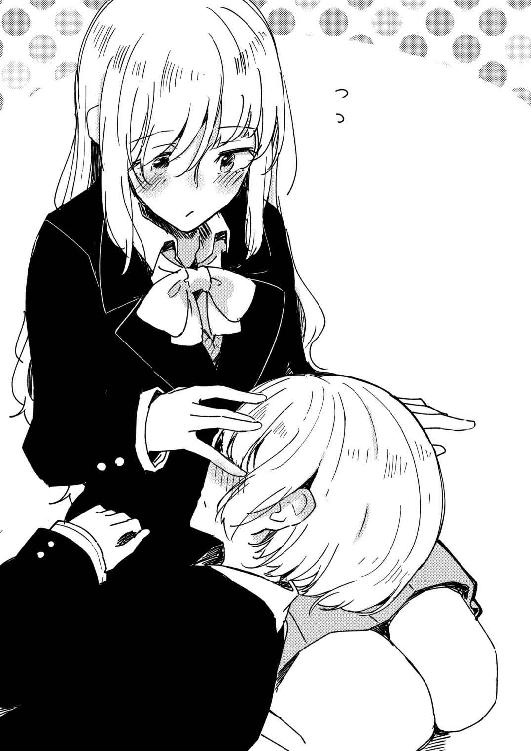
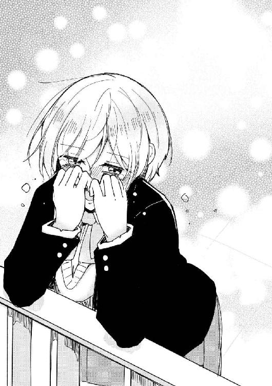
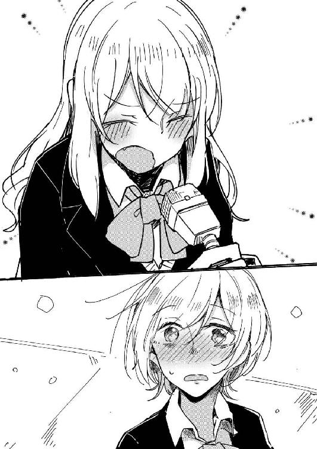
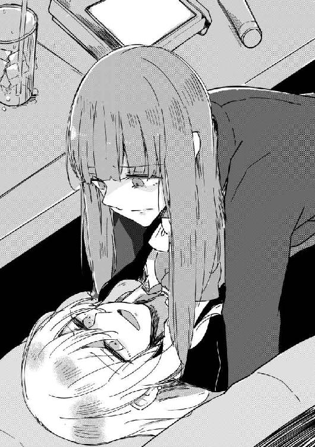
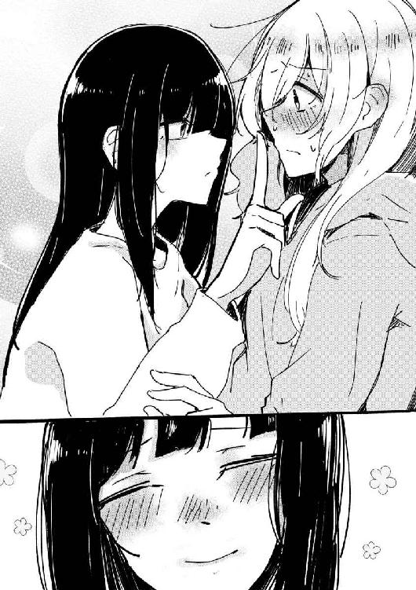
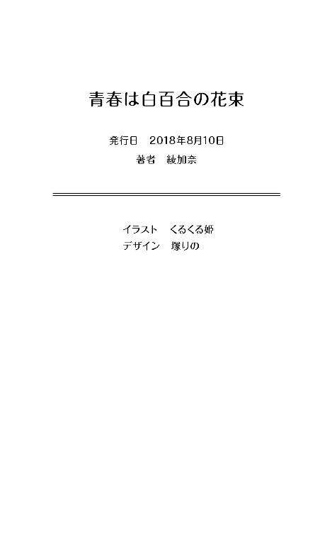

| 青春は白百合の花束 (百合小説) | |
| 綾加奈 | |
| (2018) | |
心塚牝鹿
走る走る走る――走る！ 走る！ 走る！
私――心塚牝鹿は全速力で廊下を走っていた。
周囲の生徒たちが不審がるように私を見ていたが、そんな視線も気にならなかった。
だって私には、そんな些末な視線よりも大事な目的があったから。
手に握りしめているのは入部届。
これを提出するのが、なによりも大切な私の使命だった。
先ほど部活動紹介があったから、うちの高校に多くの部活が存在していることは知ってる。運動部と文化部、それに委員会を合わせると、目が回りそうになるほどだ。
だけど私の場合は紹介なんてされなくても入りたい部活は始めから決まってた。
小学生のころから続けてるから。
そんな理由で私は女子バスケットボール部に入ろうとしていた。
というか、だいたいのひとがそうなんじゃないのかな？ ああいう紹介で実際に心を動かされて部活に入っちゃうひとってホントにいるのかなって、そんなことを考えてしまう。
だけどそういう一目惚れみたいなものに憧れる気持ちもあった。
目の前の光景に釘づけになって『おお！ 私はこの部活に入るために、この学校に入ってきたんだ！』とか大真面目に思っちゃう感じの、ちょっと恥ずかしい系のやつ。マンガとかドラマだと珍しい話じゃないんだけど、リアルになると途端にハードルが上がっちゃう。
だって私は小中合わせて六年もバスケをやっているのだ。積み重ねてきた時間はムダに大きくて、だから、せめて手に入れたものや経験はムダにしたくはないと思ってしまう。そうしたものをかなぐり捨ててもいいと思えるからこそ、運命の出会いと呼ぶのかもしれないけど。
......そういえばバスケ自体はどうして始めたんだっけ？
しばらく考えてみて、思いだせる気配がないから考えるのをやめた。
始めた理由はともあれ、続けてる理由は簡単にわかる。
私は結局、バスケが楽しいから続けてるだけなのだ。
昨日が入学式だから、今日はまだ入学二日目になる。
慣れない校舎に右往左往しながら、やっとの思いで職員室に辿り着く。
職員室のドアを前にして立ち止まる。どうやって入るべきなのか、中学生のころと同じやり方でいいのかな？ なんて悩みながら、恐る恐るドアへと手を伸ばしかけた瞬間――
ぴんぽんぱーん！ と校内放送の音が響き渡った。
おっ、おおっ!?
と、考え事に集中していた私は、文字通りその場から跳びあがってしまう。
しかしそんな私のことなどおかまいなしに放送が始まる。
『新入生にお知らせです』
スピーカーから聞こえてきたのは、妙に色っぽく艶っぽい、作り物めいた女性の声だった。
声にマネキンがあるのだとしたら、きっとこんな声だと思う。
『我々、放送部は新入部員を募集しております』
まっ白な光沢を帯びていそうな、現実味のない声が朗々と事務連絡を始める。
......放送部？
そういえば今朝方配布された案内には、そんな部活の写真も載っていた気がする。
だけど部活動紹介のときは、そんな部活の手番はなかったはずだ。
どうやら紹介のときに省かれた分を、今こうして取り戻しているらしい。
......不憫だ。
そう思いながらも、スピーカーから聞こえる声に私の意識は集中していた。
内容が気になったからではなく、彼女の声をもう少し聞いていたいと感じたから。
声を一滴もこぼさないように、私は耳をそばだてる。
『現在、放送部は深刻な部員不足におちいっております。今のところ学校での業務をこなすので手一杯で、このままでは現在の三年生が引退すると同時に廃部になってしまう状況です。ですが人数が増えれば業務だけではなく、大会への参加なども考えています』
――え？ 放送部に大会なんてあるの？
なにをどう競い合うのかまったく想像がつかないし、頭に浮かぶのはマイクを使って声の大きさを張り合う若干シュールな光景だった。その想像を一笑に付して、さっさと職員室の中に入ってしまえれば良かったんだけど、なぜか私の足はその場から動きだしてくれない。
『経験者、未経験者は問いません。興味のある生徒は一度、放送室まで遊びに来てください。いつでも歓迎します。以上、放送部から新入生への連絡でした』
始まるときと同じように、ぴんぽんぱんぽーんで放送は終わる。
放送の声という清流に飲みこまれた私は、そのまま自我の大海原に投げだされる。
ぼーっと、ただ、意識の海をさまよい、溺れ、沈みゆく。それだけの時間がすぎてく。
あの声が私の足を掴んで、水底へと引っ張っているみたいだった。
そんな私を現実に引きあげてくれたのは蚊の鳴き声にも負けそうな、か細い声だった。
「あの......すみません......っ」
「あっ、えっ――うっ」
急に意識が浮上したせいで、呼吸の仕方を忘れている私がいた。なにをしてるんだと苦笑しながら振り返ると、そこに立っていたのは私の胸元ほどの身長しかない少女だった。
――ちっちゃい子だなぁ。
いや、身長はさほど小さくないのに、ギュッと自分の身を守るように萎縮した体と、過度におどおどとした雰囲気が、実際の身長よりも彼女を小さく感じさせているようだった。
私が一七〇後半で、少女がたぶん一五〇ちょっと。
その身長差が余計に少女を小さく見せている気がした。
その子は私の目ではなく、胸元を不安気に凝視しながら、唇を震わせている。
少女はちらりと私のことを見あげ、すぐに足元へと視線を逸らした。
「えーっと......どうかした？」
うつむき加減のせいでまったく表情が覗えず、私は少女のつむじとにらめっこをする形になってしまう。残念ながらつむじは彼女の感情を語ってはくれないから、少女がなにを考えているのか私にはわからない。そんなつむじを中心に髪の毛がわずかに揺れる。
「あの......私......その、職員室に......」
少女はもう一度視線をあげて、私の背後を見やりながらか細く鳴いた。
子どもみたいな単語だけの文章だったけど、意味合いを掴むのに支障はない。
「ああ、ごめんごめん」
職員室前で立ち止まっていては迷惑だったなと反省しながら脇へと退ける。
道が開けると、少女は私から逃げるように小走りで職員室へと消えてった。
なんだか気になる素振りだったけど、やっぱり怖がらせてしまったのだろうか。
身長が高いなんて理由で避けられるのもバカらしいから、なるだけ相手を怖がらせないように柔和な雰囲気とか心がけてるんだけど......そんな努力も虚しく空振りしたらしい。
「あっ」
そこで私は自分の手の中で握り潰されていた入部届の存在を思いだし、ぐしゃぐしゃになったそれを慌てて開いてみた。手汗でじっとりと湿ったプリントはインクも滲んでしまっていて、すでに提出できる状態ではなくなっていた。どんだけ汗かいてんだ、私。
「......なんだかなあ」
いろいろあって、完全に興が削がれてしまった。
今日はこのまま入部届を提出して、バスケ部の練習に参加させてもらおうと思ってたけど、いろいろな想いが熱っぽく渦を巻いていて、それを冷却する時間が欲しかった。
だから私はたまたま通りかかった先生に話しかける。
「すみません、放送室ってどこですか？」
教師は少し考えた末、放送室があるであろう方角を自信なげに指さしてみせた。
そして私はなんの疑いも持たず、その指の先を目がけて走りだしたのだった。
私の通う札幌開栄高等学校はおおまかに北校舎と南校舎、管理棟と特別教室棟の四つの建物から成り立っている。私が目指す放送室は校内東側にある特別教室棟の二階に位置していた。
ただでさえ情報量が多いのに、どうやら先ほどの教師は放送室の場所を把握してなかったらしい。その情報に踊らされた私は意味もなく校舎をさまよい走るハメになったのだった。
......あの教師、覚えてろよ！
そう心の中で毒づいてから、気を取り直すように目の前の放送室に向き直る。
待ち構えてるのは焦げ茶色の重厚そうな扉で、それはどこか防火扉を彷彿とさせた。
その扉はまるで中にある宝物かなにかを守っているようにも見える。
もしかしたらその妄想は、私のためらいを反映しているだけなのかもしれないけど。
私の後ろ髪を引くのは、六年間続けてきたバスケの幻影だ。
こんな所でなにをしているんだと、過去の私が問いかける。
......とりあえず話を聞くだけだから。
そう過去の自分の小さな影に言い訳をして、その扉を三回叩く。
しばらく待ってみても、中から応答はない。留守なのだろうか。
でも、さっきの放送からそんなに時間もたってないし......いや、校内をさまよい走っていた時間もふくめたら二〇分はたっていた。まあ、それなら無人なのも頷けるかもしれない。
でもでも、もしかしたら気づいてないだけかもしれないし。
念のため中は確認しておこうかな？ なんて思いながらドアノブを回してみる。
すると扉はなんの抵抗もなく、するりと開いた。生まれた隙間から、恐る恐る中を覗き見てみるけど、所狭しと並べられた用途不明の器具以外はなにもない。
やっぱり無人だ。
だけど施錠してなかったってことは、遠くまで出かけたわけではないのだろう。近場、もしかしたらトイレ程度の外出かもしれない。そんな名推理を働かせて、私は部員が戻ってくるのを放送室で待つことにした。出直すのもバカらしかったし。
放送室に入り、まず気になったのはそのにおいだった。
何年も密閉されている部屋特有の湿っぽいような、かび臭いようなにおいが放送室には堆積していた。その中に甘い香りを感じてしまうのは、さっきの放送を聞いた私の先入観のせいだろうか。あんな素敵な声の持ち主なのだから、香りもきっと素敵なんだろうな、みたいな。
放送室の中は家の玄関みたいになっていて、靴を脱ぐスペースが設けられていた。そんなわけで、土足であがり込むわけにもいかず、私は仕方なく入り口で上靴を脱いだ。
私は中に入ると再度、室内を見回してみる。
正面にはもうひとつ、出入り口と似た重厚そうな扉があるけど、そっちは後回しにする。
壁にはぽつぽつと小さな穴があって、床には灰色の床材が敷き詰められていて、全体的に音楽室っぽい雰囲気が漂っている。一方、部屋に並んでいる備品のほうはマイクとかパソコンっぽい器具とか、全体的にメカメカしていて、パソコン室みたいだ。この部屋で一番自己主張が激しいのはツマミの大量についた台で、その上の壁はガラス張りになっており、向こう側を見渡せるようになっていた。試しにと覗き込んでみると、スタジオのような空間が広がっていた。レコーディングでもできてしまいそうな雰囲気に少しだけテンションが上がる。
「へえぇぇえ」
バカにするつもりはなかったけど、想像以上の設備に感嘆の声が漏れる。子ども心をくすぐられながら室内を眺めていると、どうしても、それぞれの機材に対する説明が欲しくなってくる。無知の私からしてみれば、それらは『よくわからないメカ』でしかなかったから。
放送部のひと、早く戻ってきてくれないかなぁ。
私は置いてあったパイプ椅子に座って時間を潰す。
皮が破れて、中身が漏れでて、座り心地が最悪なパイプ椅子をがたがたさせていると、大事なことを忘れているような心地になってくる。だれかになにかを頼まれていたような、こんな所で、こんなふうに無為な時間をすごしている場合ではないような、そんな気分だ。
だけど考えても考えても、それらしい答えは浮かんでこない。
うーんと唸っていると、今度は退屈すぎて眠たくなってきてしまう。
......むにゃむにゃ――うふふふふ......むにゃむにゃ......うとうと......がちゃーん！
扉の開閉音は思っていたより大きくて仰天する。半分ほど夢心地だった私が跳びあがるには充分すぎるほどだった。私はなにをしてたわけでもないのに、悪事を見つかってしまった子どもみたいな気持ちになって、びくびく恐縮しながら扉のほうを見つめてしまう。
入ってきたのは見覚えのある少女だった。
向こうにとっても私という存在はイレギュラーだったのか、悲鳴を押し殺したような短い声を漏らして、目を丸くして、肩を震わせて、泣きそうな顔で私のことを凝視していた。その仕草にも見覚えがあるのに、気の弱そう顔をいくら見つめても、その正体に思い至れなかった。
「あの......」
少女は私ではなく、足下の私の上靴を見つめながら口を開いた。
その声は鉛筆が紙の上を滑るときの音よりも小さい。
だけど不思議と耳には届く――そんな感覚で、この少女をどこで見たのかを思いだした。
「きみ、さっき職員室で会った子じゃない？」
「あ......はい......たぶん、そうです」
私に一瞥もくれないまま、少女はか細い声で鳴き続ける。
この子も入部希望者なのだろうか。
「えっと、私は放送部じゃないんだ。放送部のひとは出払ってるみたい」
「いや......そうじゃなくって......」
「え？」
否定の言葉を発してるのはなんとか聞きとれたけど、声が尻すぼみになっていたせいで、肝心な部分がまったく届かなかった。あらためて聞きなおすのも悪いな、と感じてしまう程度に少女は恐縮してしまっていたから、私は会話を先へと進めることにする。
「カギは開いてたから、部のひともすぐ戻ってくるでしょ。きみも座って待ってれば？」
少女は、あうあう......なんて言いながらも、おとなしく近場のパイプ椅子に腰かけた。彼女は椅子に座ってうつむき、絨毯の毛の数でも数えているようだった。私も私でムリに会話を広げる必要性も感じず、彼女に抵抗するように壁の穴の数をかぞえてみたりしてみる。
けど二桁に到達する前に飽きてしまう。
そんなふうにして、すぐに戻ってくるはずの部員を待っていた。しかしいくら待っても彼女以外の生徒は訪れず、沈黙ばかりが三〇分ほど積もる。気まずさよりも、言葉を発さなすぎて口がむずむずしてきたという理由で、私は少女に適当な質問を投げかけてみることにした。
「きみもさっきの放送を聞いて放送部に来たの？」
「えっ？」
少女は目を丸くして、私のことを注視した。
今まではずっと伏し目がちだったから、少女がどんな顔立ちをしているのかすら満足にわからなかった。そのせいでクラスに数人はいる暗いやつだな程度にしか思ってなかった。
だから不意を打たれたような形になってしまった。
一言で表現するなら――私は少女に見惚れたのだ。
私の知り合いは基本的に運動部で構成されている。だから全体的に性格は明るめで、肌は日焼けしてて、髪は短め、活発とかおてんばとか、そんな言葉が似合うやつばかりだった。
だけど少女はその対極に立っていて、憂いを帯びた雰囲気で、色は白くて、髪は長くて艶やかで、清楚とか深窓とか、そういう言葉がよく似合う。先ほどまでの『暗い』というマイナスの評価は『奥ゆかしい』というプラスの評価へと一転してしまったのだった。
「あの......あなた、放送を聞いて、きたの？ 入部希望者......だったの？」
私と出会って初めて言葉を知ったのだとでも言うように少女の発声はぎこちない。
聞いているこっちが、ホントに同じ言葉を話してるのか不安になってくる有様だ。
というか......
「......今まで私のことなんだと思ってたのさ」
私は普通に入部希望者同士のつもりで会話をしてたんだけど。もしかしてこの子、私のことを放送室でサボりの計画でも立てている不良だとでも思ってたのだろうか。
「えっと......なんなんだろうなって、ずっと考えてた......変なひとだなって」
「そりゃあ入部希望者って可能性を除いたら、どう考えたって変なひとじゃん」
危うく少女の中の私が、用もなく放送室に入りびたる変人になるところだった。
「そっか......そうだったんだ......」
安心したのか、少女は少しだけ表情を和らげた。
心なしか笑ってるようにも見えたけど、自分の勘違いがおかしかったのだろうか。そんな、ふとこぼれてしまったような表情に一瞬見惚れてしまい、バツの悪い思いにかられてしまう。
私はそんな思いをごまかすように、苦しまぎれに口を開く。
「あっ、そうだ。私はね、心塚牝鹿っていうの。きみの名前は？」
「わ、私は緒輪島......緒輪島紗和......よっ、よろしく、おねがいします」
「よろしくね！ えっと......じゃあ紗和ちゃんだね」
「さ、紗和ちゃん......」
紗和ちゃんはなぜか噛みしめるようにして自分の名前を復唱した。
なにがそんなに美味しいのか、彼女はしきりに口をもぐもぐ動かしている。
「それにしても放送部のひと遅いね。なにやってんだろ。あ、そうだ！ せっかく放送室にいるんだから、放送使って呼びだしちゃおっか？ 入部希望者がきてるぞー！ って」
私の冗談に紗和ちゃんは諸手をぶんぶんと振って、
「だ、ダメだよ！ 放送するには一応......その、先生の許可とか？ が必要なんだから」
と制止してくる。
......な、なんだよその仕草、あざといだろ、おい。
アライグマが威嚇してくる動画とかを彷彿とさせるあざとさだった。
「そうだったんだ。放送って自由にやっていいものだと思ってた。それにしても紗和ちゃん詳しいんだね、もしかして中学のころとか放送関係の部活とか仕事とかしてたの？」
「うん......一応、ちゅ、中学校のころから放送部だったけど......って、そうじゃなくてっ」
たどたどしくも必死な様子に、私は微笑ましい思いで紗和ちゃんを見守ってしまう。慌てないでいいよ。ゆっくりでもちゃんと聞くからね？ みたいな気持ちで彼女を見つめる。
紗和ちゃんがちらりと私を見て、目が合うと慌てた様子で逸らしてしまう。
しばらくもじもじ言葉を選んでいた紗和ちゃんだったけど、意を決したように口を開く。
「あのね......私、実は......放送部なんだ」
「え？ じゃあ紗和ちゃんはもう入部届け出しちゃったの？ けっこう行動派なんだね」
でも、中学校のころから放送部だったんなら、それも当然なのかな？
私が小学校のころから続けていたバスケを高校でも続けようと思ってたのと同じなのかもしれない。やっぱり高校から新しいことに挑戦しようと思える人間のほうが少ないんだろう。
私もまだ悩んでいたりする。
今すぐ放送室をあとにして、おとなしくバスケを続けとくべきなんじゃないかって。
でも、さっきの放送の主と話してみたいという想いも、まだ私の中には残っていた。それは放送から一時間近くたった今でも変わらず私の中に燻り続けていて、熱を放ち続けている。
だけど、もしそのひとと話して、私の中のバスケへの想いが揺らいでしまったら？
......そのとき私はどうするの？
私の高校生活への期待やら不安やらを遮るように紗和ちゃんは唇を震わせた。
「そうじゃないの......そうじゃなくって......」
「どうかした？」
すっかり会話を終えた気でいた私は、紗和ちゃんがなにを否定しているかもわからない。
「私、放送部の三年生、なの......」
「......ん？」
続く言葉を聞いても、彼女がなにを言っているのか、私にはしばらく理解できなかった。
私が掴み損ねたかもしれない言外の意味や行間、空気を探し求めて、頭がフル稼働する。
だけどなにをどう解釈したところで、
『緒輪島紗和は三年生の先輩である』
という驚きに驚愕の事実以外、なにひとつとして導き出せなかった。
「えっ、紗和ちゃんって、紗和ちゃん先輩だったの!? いや、ですか......ですか!?」
「さ、紗和ちゃん先輩......」
驚きだ。
なんだか年下みたいで可愛いなあとか考えてたくらいなのに、まさかふたつも年上だったとは。でも言われてみると、彼女のおとなしさが大人の余裕のように見えないことも......
――いや、どう好意的に見ても彼女のそれは余裕ではないよな。
だけどそれが彼女の魅力のひとつであることには違いなかった。
「じゃあ、さっきの放送のひとってどこに行っちゃったんですか？ 私、そのひとに会ってみたいなぁって思って、放送室に遊びに来てみてたんですけど」
紗和ちゃん――あらため先輩は困ったような顔をして私を見ていた。
もごもごと口を動かしてはいるけれど、うまく言葉が出てきてくれないみたいだ。
なにか言いづらいことでもあるのだろうか、と彼女の様子を観察していると、見られている状況に緊張してしまったのか、あうあうあう......とさらに顔を赤くさせ、逃げるようにしてうつむいてしまう。のぼせあがったような顔色に、こちらまで恥ずかしくなってきてしまう。
......なんでそんな緊張してるんですかね。
すごい、いけないことしてるみたいじゃないですか。
ただ見つめ合っているだけなのに。
いや、もしかして見つめ合うっていけない行為なのでは......？
なんて私が大真面目に考えてしまいそうになったころ、やっと先輩は口を開いた。
「えっとね......心塚さん。放送部の部員は......私しかいないの」
「へっ？」
間の抜けた――それでいて空気まで抜けてしまったみたいな音は、私の返答だった。
「じゃあさっきの放送は先生がやってくれたんですか？」
その疑問に先輩の顔がどんどん赤く染まってゆく。
そんな自分の顔を隠すみたいにして、先輩は両手で顔を覆ってしまう。
先生の力を借りたという事実を知られたことが、そんなに恥ずかしかったのろうか。
正直、そこまで恥ずかしがる必要はないと思うんだけど。
......そこはやっぱり、放送部の矜持ってやつなのかなぁ？
先輩は両手の指の隙間から、ちらりと私を見やりながら口を開いた。
「んっとね......さっきの放送、あっ、あれ......私が......その、喋ってたんだよ？」
「は？」
一瞬なにを言っているのか理解できず、私はしばらく先輩をガン見していた。
そんな視線がイヤになってか先輩は、はふうと熱っぽい吐息を吐きだし、うつむいた。
「......そんな......え？」
バカな話がある？ と言いかけて、こんなか弱い先輩が他者にウソをつくことができるだろうか？ と思いなおす。だけど考えなおしてみたところで疑わしさに変わりはない。
「証拠は？」
んへ？ と、今度は先輩が間抜けな声を漏らした。
「だから証拠ですよ。さっきの放送みたいな声、もう一回聞いてみたいです」
「......そ、それはムリだよぉ」
「ど、どうしてですかぁ......」
先輩の儚げな様子に感化されてか、私の声までか細くなってしまう。
先輩はまっ赤な顔をより一層、沈みゆく夕焼けみたいに深めながら、
「だ、だって恥ずかしいんだもん......」
震える声色で、そう呟いたのだった。
「ここはいったいなに部なんですかね」
放送部ってもっとこう、ハキハキといろいろなことを話す部活ではなかったのだろうか。『恥ずかしいんだもん』で済まされたら、割と本気で放送部とか活動できないじゃんか。
「やっぱり......こんな私しかいない部活はイヤだよね」
今の流れをどう汲み取ったのか、先輩はそんな絶望発言を漏らしていた。
「やー、イヤってわけじゃないんですけどね」
ただちょっと、おかしなひとだなって思っただけで。でもそれを口にしてしまったら、この先輩はまたマイナス方向に捉えてしまいそうだったから黙っておく。『いい意味で変なひとですね』とかわざわざ注釈をつけるのも、余計に嫌味っぽくなってしまいそうだし。
だけど不思議だったのが、そんな先輩の顔を見ていると、とある感情が沸々と湧き上がってきたこと。それは今すぐ放送部に入りたいという、ある種の衝動めいた想いだった。
ここで踵を返してしまったら、私は一生後悔することになる。
なぜか本能がそう叫んでいた。
だから私は衝動と本能に従って、自分を突き動かすことにした！
「うん。私、放送部に入ります！」
先輩は驚くのも忘れて、口をぱくぱくさせていた。
赤かった顔が一瞬もとに戻って、またすぐに赤くなる。肌が白いせいで血潮がわかりやすいんだなぁって、そんなことを考える。なんだかそういうところも可愛らしい。
先輩の顔は、先輩の口より、よほど雄弁だった。
「え、え、えええ......え？ いっ、今のどこに、入りたくなる要素があったの......？ だ、だって、先輩って......私だよ？ こんな私しか......ぶっ、部活にいないんだよ？ それでも、いいの......？」
自分で言っていて哀しくなったのか、先輩の目が潤む。
正直言って、どうして放送部に入りたくなったのかは自分でもわからない。
だけどたぶん、あの放送のせいだけではない。そうじゃなくて、実際に緒輪島紗和という先輩と話し、それで、私はこの部活に惹かれて、入りたくなったんだと思う。
「こっちこそ、放送のこととかなんにも知らないんですけど......大丈夫ですか？」
逆に問われ、先輩はあうあうと両手を振った。
「だ、だだ、大丈夫だよっ！ 私だって素人みたいなものだし、それに......大丈夫だから！」
先輩は具体的な要素をなにひとつ提示してくれなかった。
こうも必死に『大丈夫』をくり返されると、かえって不安になってくるんだけど。
まあ、大丈夫じゃなくても、こんな部活だし、先輩も一緒だし、いろいろと大丈夫だろ。
なんて、ちょー適当な着地点に落ちついた。
「うん。大丈夫、大丈夫」私はくり返す。
「だいじょぶ！」先輩もくり返した。
「それじゃあ先輩、これからよろしくお願いしますね？」
「う、うん......よろしくね。えと、私......迷惑かけちゃうかもしれないけど......」
「いや、迷惑をかけるとしたら、放送初心者の私のほうなんじゃないですかね」
むしろこのひとはどうやって私に迷惑をかけるつもりなのだろう。
「で、でも、私......絶対、こっ、心塚さんに入って貰えないと思ったから、よかったよぉ」
言って先輩は安堵したのか、にへらと表情を緩ませた。
「えへへ......」
油断しきった笑みを間近で見せつけられて息が詰まる。
――うわあ。このひと今、えへへって笑ったぞ。
そんな笑い方が似合う女子高生なんてホントにいるんだ。えへへが許されるのは小学生までだと思っていたけど、よくよく考えると先輩の雰囲気は全体的に必死な小学生っぽい。
「こ......これからよろしくね？ えーっと......まずは、なにをすればいいんだろ。私......後輩とかできたことないから、どういうふうに教えていいのか......？ わかんない、かも......」
「とりあえず入部届とか出したほうがいいですよね」
放送部のなんたるかを知らない私が、放送部の教え方を知っているはずがない。
なので、そういった当たり障りのない話題でごまかしておく。
「あ、そうだね！ ん......でも......放送室に、入部届なんて、あったかな......」
先輩が慌てた様子で部屋の奧、パソコンの横あたりに積んであるプリントの束をあさる。そんな先輩の様子から、新入部員とかまったく期待してなかったんだなぁと察してしまう。
そこで折良くチャイムが鳴り響く。
時計を見ると、五時をさしていた。
「あっ、あれ？ も、もうこんな時間だったんだ......今日は遅いし、また明日にしよっか？」
個人的にはまだまだ時間的に余裕があった。
親には今日からバスケ部の活動に参加するから帰りは遅くなると連絡してたくらいだし。だけど先輩が気をつかってくれてるのはわかったし、先輩にも準備やらなにやら、いろいろとすべきことがあるのだろうと察し、今日はおとなしく引きさがることにした。
「そうですね。じゃあ、また明日の放課後、ここに来てもいいですか？」
「うん......わかった。それじゃあ待ってる。入部届はそのとき渡すから」
「はい！ 楽しみにしてますね！」
言って、妙な空気になる前に私は放送室から退散した。
タイミングを逃すと、どう別れを切りだしていいのかわからなくなりそうだったから。
どうしてだろう。
昔からわかりやすい連中とばかりつき合ってきたせいか、先輩みたいなひととの距離感がわからない。放送部に入るのであれば時間をかけてゆっくりと知っていけばいいんだろうけど。
それまで、こんなやきもきした気持ちですごすのは、ちょっとだけ息が詰まりそうだった。
まあ、その息苦しさは決して不快なものではなかったんだけど。
茜色に染まった廊下を歩みながら、北校舎一階にある一年二組の教室へと戻る。
ホントなら職員室で入部届を出すだけの予定だったから、荷物とか上着とか、いろいろなものを教室に置きっぱなしにしてしまっていたのだ。そしてその『置きっぱなし』にしていたもののうちのひとつが、教室に戻ってきた私を怨めしげに睨んでいた。
「遅くね？」
幼馴染みの南羽小鞠が不機嫌さを隠そうともせず言った。
その名前の通り、小鞠はなんともちまっこいんだけど、こうも露骨に怒りを表明されると恐ろしい。むしろ小さいからこそ、彼女はその体に目一杯の怒りを湛える方法を熟知していた。
小ささがストレートに可愛らしさに繋がっている先輩とは大違いだ。
教室にはすでに小鞠以外の生徒の姿はなく、哀愁すら漂いかねない。
そして小鞠の怒りも哀愁も、すべての原因は私にあった。
「あっ」
「『あっ』じゃねぇよ、お前。何時間ひとを待たせたら気が済むんだよ」
小鞠怖い。
バスケ部最小の異名を持っていた女なのに、その迫力だけで身長が私よりも高く感じられる程度に怖い。幼げな顔立ちも今は相手を威圧するためのものに成り果てていた。
私は小鞠の質問に答えるため――いや、言い逃れをするため、かけ時計を確認する。
「でもでも、二時間は待たせてないから『何時間も――』は言いすぎだって！」
我ながら、そこしか否定できる要素がないのかと呆れそうになる。
「言いすぎじゃねぇよ。牝鹿、お前登校のときも遅刻したの覚えてないの？ お前は朝もきっちり二〇分遅刻してるんだよ。今回のと合わせて二時間と一〇分、お前は私のことを待たせてるわけだ。ちなみに昨日の入学式のときも遅刻してるからな？」
このまま小鞠を放置しておくと、春休みの卒業旅行の寝坊にまで話が進展しかねない。
「うへぇ......でもでもでも！ 待つほうも悪いで――いたい！」
ぺちんと頭を叩かれた。
身長差がありすぎるせいで、私の頭にダンクシュートでもするかのような勢いだった。
「お前は世界の全待ちびとを否定したぞ。ま、今のダンクシュートでチャラでいいよ。牝鹿をひとりで行動させた私もバカだったよ......本当、私がバカだったとも」
私の頭を叩くのは小鞠の二時間を奪ったのに匹敵する行為だったのかとひとりで納得する。
「で、私の分の入部届、もらってきてくれたの？」
ああ、そういえばそんな話もしていた気がする。
「うん、そうだったそうだった、もらってないんだよ――痛い痛い！」
ぴょんぴょんっ！ と二回飛び跳ね、ダンクも二回。
勢いづいているせいで普通に痛い。
「なにが『うん』でなにが『そうだった』なの？ 二時間待たせてなにしてたわけ？」
バカなの？ バカなんだな？ よしバカだ。と馬鹿バカ連呼される。
そもそも私の分だって提出できていないのだから、大目に見てもらいたい。
というか私はもうバスケ部に入部する気すらないわけで......これを言ったら、小鞠はどんな反応をするだろうか？ 小さな逡巡が私の中で生まれるけれど、すぐにそれを蹴散らす。
黙っていたところで、いつまでも秘密にしておける事柄でも、間柄でもないのだから。
「それがね、私、バスケ部入るのやめようかなって思ってて」
「は？」
今までは冗談めかして聞いていた小鞠も、これにはマジトーンでの返答だった。
「バスケ部入んないって......え？ 何々なになに？ なんだって？ どういうことよ、それ。バカすぎて入部拒否された？ だから私の分の入部届も貰えなかったとかそういう話？」
「小鞠ちゃん。私はマジメな話をしているんだよ」
「私だってマジメな話をしてるつもりだってば！」
小鞠は機嫌の悪さを通りこして、余裕がなくなって怒鳴り声をあげた。
「入れなかったってわけじゃなくてね、自分の意志で、入るのをやめたって話だよ」
「自分の意志で......」
私の言葉をくり返すことで、その意味合いを噛み砕こうとしているみたいだった。
「......この二時間で牝鹿の中で、いったいなにがあったんだよ」
どんなふうに説明したものかと悩むが、有りのまま、あったことを伝えるしかない。
「放送あったの、小鞠は聞いてなかった？」
「放送......？」
あごに指を当て、小鞠は思案顔を披露する。
「......牝鹿ってば、早くも呼び出されたの？」
マジメな顔で行きついた答えがそこなのか。
「違うよっ！ そうじゃなくて、入部希望者いませんかーっていう放送だって」
「なんの？」
「放送部の」
「放送部の......？」
「えっ、小鞠、あの放送聞こえてなかったの？」
「意識してなかったから、聞き流してたのかも」
あんな放送、無視できるか？ と思いかけるけど、私だって中学のころは放送なんて聞き流していた気がする。そもそもあのタイミングで『ぴんぽんぱーん』に驚愕してなかったら、私も小鞠みたいに放送に気づかぬまま、職員室で入部届を出していたのかもしれないのだ。
そんな偶然をひとは運命と呼ぶのだろうか。
「で、それが牝鹿さんとなんの関係があんの？」
「で、私はその放送部に入っちゃおうかなーって」
運命を感じたからとは恥ずかしくて言えなかったけど。
案の定、小鞠はまったく理解できないという顔をしていたし。
「話、飛躍しすぎじゃね？ 放送聞いたから部活入るって......牝鹿の基準ゆるすぎるだろ。つい二時間と三〇分前まで『私はバスケ以外興味ないから勧誘なんかじゃ揺るがない！』とか、そんな感じのこと言ってたような気がするんだけど......それ以前の問題じゃねぇか」
「そうなんだけど。そんなふうに考えてた私が、気づいたら入りたくなってたんだよ」
小鞠は困ったような顔をしたけど、すぐにもとの仏頂面に戻る。
今の私に対し、感情を見せることを拒否しているようにも見えた。それはそのまま心の距離にも感じられ、一瞬にして小鞠が手の届かない存在になってしまったような気がしてしまう。
「ずっと続けてきたバスケを辞めちゃうくらい、牝鹿はその部活に入りたいわけだ」
「うん」
迷うのも、言い淀むのも間違いだと思った私は、ストレートに頷いた。
怒られるかな？ さっきみたいにぺちぺち叩かれるかな？ そんな心配をする。
だけど小鞠の反応は――ただの深々とした溜息だった。
「そう」
「そう......って」
......それだけ？
いつ頭を叩かれてもいいようにと身構えていた私は肩透かしを食らった。
「意外とそっけない反応だ」
なんだろう。
言葉にできないもやもやとしたものが私の心中にわだかまっていた。
「牝鹿はそういう人間だよ。他人の話なんて聞かないし、いつも唐突だ。シカなのにイノシシみたいな女だって言われてたもんな。そもそも私が牝鹿の選択に許可をだす権利なんてない。お前がそうしたいなら、勝手にそうすればいい」
小鞠は私ではなく、他ならぬ自分自身を納得させるみたいにして、何度か、そうした言葉を呟いた。その感情を排した声音が、私の心のざらざらとした部分をひっかいてゆく。
「ごめん......ね？」
「どうして牝鹿が謝るんだよ。謝る必要なんてないじゃん。謝られても私が困るだけだし」
そりゃあ、そうなんだけど。
私はとやかくと言える立場じゃないから黙るしかない。
「牝鹿とおんなじ部活に入れなくて、私は残念だけどな」
「......放送部入る？」
「入らない。私は牝鹿と一緒に始めたバスケ、辞めるつもりないし」
小鞠の一言は私への断罪でできていた。
だけどそれだけだった。
それ以上、小鞠は私になにも言ってくれなかった。
私を責めることも、罵倒することも、嫌味を言うこともなかった。
「それじゃ、帰ろっか。私も私で、明日、入部届だすことにするよ」
小鞠は荷物を抱えて、さっさと教室から出ていってしまう。その動作はまるで、なにかから逃げだすように鋭敏で、先ほどの放送室での私みたいにどこか不自然だった。
「あああ！ ちょっと待ってよ小鞠、私はまだ帰り支度してないんだから！」
私も慌てて支度を整えて小鞠の背中を追う。
私は渡り廊下を駆け抜けて昇降口へ。
西側に開かれている正面玄関はこの時間になると太陽が目の前に配置される。
茜色をふんだんに吸いこんだ昇降口が瞳に染みて、哀愁が心を濡らす。とくに明確な形があるわけでもない朧気な『思い出』が、心にさざ波めいた揺らぎを産む。私は何度も瞬きをくり返しながら靴を履き替え、校門を出て、バス停まで三〇メートルほどの桜並木をゆく。
桜はまだ蕾すらついておらず、華々しい雰囲気もない。
だけど私は花より団子の人間なので、桜なんて咲いていたところで、ちょっとだけ『綺麗だな』と思う程度で、足をとめることもないと思う。もう少し歳をとって、いろいろなもの得たり、なくしたりしたら、桜の良さも少しはわかるのかもしれないけど。
並木道のまん中あたりで小鞠を見つけ、横に並ぶ。
登下校時は混雑しているバス停も、今は数人の生徒が散見される程度だ。
小鞠は一歩、私よりも前に出た。そのせいで小鞠の向こうに陽光がまわり、彼女の姿を直視することができなくなってしまう。なんだか、ひどく息が詰まりそうになる光景だった。
ちらりと小鞠の唇が言葉を紡ごうとしているのが見えた。
「――の――――その程度だったんだな............とは思ったけどね」
よく聞きとれなかったのは眩しさのせいだけではなかったと思う。
トラックが通りすぎるときの排気音とか、そもそもそちらに意識を集中していなかったせいとか、小鞠の声の小ささとか。そういった要素がほどよく混ざり合って、私は彼女の言葉を満足に聞きとることができなかった。そして、そのほうが良かったのかもしれないとも思う。
小鞠はちらりと私のほうを見やるけど、それ以上、言葉を重ねようとはしなかった。
同じ小学校、同じ中学、同じ高校。
小鞠とのつき合いは小学校四年生からになるから、今年で七年目になる。だから小鞠の考えていることはなんとなくわかってしまうし、向こうもそれは同じだと思う。
小鞠はきっと怒っていた。
私としてはその怒りを素直に吐きだしてくれたほうが楽だったんだけど。
怒りをそのまま吐きだすのも、この歳になってしまうと難しいんだろう。
なによりそうやって楽になりたいと思ってしまうのは私のエゴでしかない。
五分ほどして、バスがやってきた。それがホントに自分たちが乗るべきバスなのか、慣れない私は不安だったけど、小鞠の迷いない足どりにつられるようにしてバスに乗りこむ。
始発の停留所が近いせいかバスの中は無人だった。
私たちはバス後部のふたりがけの席に並んで腰かける。運転手はそれを見届け、バスを再発進させた。ひとつ目の交差点にさしかかったあたりで、小鞠はひさしぶりに口を開く。
「一緒にいられる時間とか減っちゃうな」
「そうだね。小鞠は運動部だし、放課後も休日も部活だろうし......こっちはこっちで、どういうスケジュールになるのか予想もつかないしね」
中学のころは私も小鞠もバスケ部だったから、長い練習時間も一緒だった。
だから小鞠のいない生活がどうにも想像しづらい。私は一年二組で、小鞠は一年一組で、教室自体は隣だけど、クラスの隔たりの大きさを、何年も学校という空間ですごしてきた私たちはよく知っている。せめてクラスが一緒だったらと思うけど、今さらどうしようもない。
「そっか。牝鹿はそういう、予想もできないような部活に入ろうとしてるんだもんな」
「うん」
「私はたぶん、そういうのは難しい」
「私もやろうと思ってやったわけじゃないし......始めから放送部に入ろうって思ってたわけじゃないけどね。たまたま、いろいろなことが重なっただけだから」
「それで私たちは別々の部活になっちゃったわけだ。なんか不思議な感じだな」
「私もおんなじこと考えてた」
そこには形容しがたい喪失感があった。
自分の身体や心の一部がなくなってしまったような独特の感覚。
「ずっと一緒にいたもんな」
「そうなんだよね。でもさ。部活が違っても、私たちが一緒で、友だちなのは変わんないよ」
それは私の希望的観測だったのだろうか。隣に座っている小鞠がどんな表情をしているのか私にはわからない。小鞠の顔を覗きこんで確かめる勇気も私にはなかった。
ただ、小鞠は返答に困っているようだった。
「............」
一瞬の沈黙が、それでも如実に、彼女と私のあいだに横たわっているものを表していた。
「......うん、そうだね。私たちはずっと一緒だ」
そして紡がれたのは、なにかがズレてしまっているような、曖昧な肯定だった。
「そう言えばさ――」
どちらともなく開いた口、そこから発せられる地に足のつかない言葉。
高校生活の不安とか、中学時代の友人とか。
そういう当たり障りのない話題で、私たちは、互いのあいだに生まれてしまった綻びをごまかした。そして明日も一緒に登校する約束をして、それぞれの帰路についたのだった。
緒輪島紗和
私はひとの群れが苦手で、それ以上に教室の喧噪が苦手な人間だった。
だから昼休みなんかの空き時間は基本的に放送室に入りびたっている。
カギは顧問の鎌村先生が私に一任してくれているから問題ない。そんなに管理が緩くて、せきゅりてぃとか大丈夫なのかな？ って思うけど、放送室のカギを使ってできるのは、それこそ放送ぐらいだ。それ以外はこうやって昼休みに使うくらいしか用途はない。だから鎌村先生が私にカギを任せているのは、信頼からではなく、いちいち職員室にきた私にカギを渡すのが面倒だからなんだと思う。私も職員室に行くのは苦手だから、その杜撰さがありがたい。
そんな私は今なにをしているのかと言うと、部活について学校唯一の友人に相談中だった。
目の前で野菜ジュースを啜るその友人は、面倒臭そうな表情を浮かべている。それでも、いつだって私につきあってくれているのだから、心の底は優しい性格をしているんだと思う。
「......で、部のことで相談ってなにかしら。私は委員会で忙しいから、放送部の仕事は手伝えないって口が酸っぱくなるくらい言っているはずだけど。それに、私たちはもう三年なのよ？ 三年生の私が入っても半年たらずで辞めるわけだから、部の延命には繋がらないと思うわ」
その友人――平楽初海がまくしたてるように言った。
口を挟む暇がないくらいだったので、私は口を噤むしかない。
初海ちゃんが赤い色の野菜ジュースを啜るタイミングを見計らって口を開く。
「えっとね......？ そうじゃなくて、相談っていうのは、こ、後輩のことなの」
「紗和に知り合いの後輩なんていたの？」
意外そうに聞いてくるものだから、私は再び返答を失ってしまう。いやいや、私にだって後輩ぐらいいますし......おとといまではいなかったけど......昨日、できましたし。
と心の中で抗議するけど、残念ながら口から言葉が出ていってくれない。
私の言葉は私と同じように、狭くて暗い所が好きなのかもしれなかった。
「私はべつに怒ってるわけじゃないんだから、いちいち『あうあう』しないで」
「う、うん。それがね、昨日、あの放送のあと......入部希望者がきてくれたの」
「へえ？ よかったじゃないの。相談することなんてないように思えるけれど」
初海ちゃんは簡単に言ってくれるけど、後輩ができたことのない私には、心塚さんにどんなことを教えればいいのかわからないのだ。なによりひとりで行う放送部に慣れすぎてしまっていたせいで、だれかと一緒に部活をするという感覚自体、まったく思いだせなかった。
「先輩が教えてくれたみたいに、紗和もやってみればいいんじゃないの？」
「......でも、私って......ああだし」
うまく言葉にできなかったので、私はマイクをちらりと見やりながら呟いた。
それだけで初海ちゃんは、ああ......と、納得してくれたみたいだった。
「紗和のあれは病気みたいなものだもの」
「びょ、病気って......ばっさりと言うね」
「ばっさりもなにも、放送でのあなたと普段のあなた、ほとんど別人じゃないの。たぶんクラスメイトも『放送室のお姫様』の正体があなただってこと気づいてないと思うわよ」
「お、お姫様って言うの、やめてっ！」
その呼ばれ方、すっごい恥ずかしいんだから！ 一部の生徒が正体不明の放送部員（私）のことを、その声を揶揄して、そう呼び始めたらしいけど......お姫様はさすがに恥ずかしい。
でも初海ちゃんが、私の病状をわかりやすくまとめてくれた。
私は小学校のころから引っ込み思案で人見知りが激しかった。
それは自分で『治さなきゃ』って感じるほどに深刻なものだった。
そんな私がリハビリ代わりにと選んだのが放送委員会だったのだ。
『放送ならみんなの顔は見えないし、マイクに向かって話すだけだから恥ずかしさも薄れるはず。それでも充分恥ずかしいけど、これくらいしなきゃリハビリにはならないだろうから』
みたいなことを小学四年生の私は、幼いなりに必死に考えていた。
だから四年、五年、六年、それから中学の三年間の合計六年間を私は放送に費やした。
その成果はめざましいものだった。私の放送技術はすごい勢いで上達していって、気づくと高校で入部した放送部の中でも一目置かれるほどの存在になっていたのである。
だけどそれは放送室の中――いや、放送の中だけの話だった。
当初の目的だったはずの日常会話の改善はまったくできず、むしろ悪化した節さえある。それもそのはずで、放送室という特殊な環境が鍛えてくれるのは、ただしい発声方法やイントネーションなどであって、日常会話やコミュニケーションの技術ではなかったのだ。
それに気づくのが遅すぎたせいで私は初海ちゃんに病気だと揶揄されるまでになってしまっていた。確かに自分でも、これはもしかしたら二重人格の一種なんじゃないかって不安になるほどだった。それくらい、なにからなにまで日常生活での私と放送中の私は異なっていた。
「確かに紗和は後輩指導とか一番苦手そうね」
二本目の――今度はオレンジ色の野菜ジュースを啜りながら、初海ちゃんは言った。
「でも後輩指導も日常会話とは異なるものなんじゃないの？ 先輩と後輩って役割がしっかりしている分、クラスメイトとの会話よりよっぽどわかりやすいと思うけど。それこそ放送みたいなものだって割りきって、台本とか作ってみたらどうかしら」
「おお......」
私の口から感嘆の言葉が、ついでに目からは鱗がこぼれ落ちた。
ぽろぽろぽろ。
そんなチープな効果音すら聞こえてきそうだ。
「さ、さすが初海ちゃん！ それなら私にも、できる気がする。台本、いいかも」
「あんまり台本を過信すると、アドリブが効かなくなりそうだから注意だけどね」
「う、うん......気をつける」
私の場合、気をつけてどうにかなる問題でもなさそうだけど。
朝から憂うつだった問題が解決して、少しだけ気分が軽くなる。そんな私の変化を見ていた初海ちゃんが、なにやら『物申す！』みたいな雰囲気を醸しだして、語りかけてきた。
「イヤなら放送部なんてもう潰しちゃうのもありだと思うけど」
「へ？ それって......どういう？」
「放送部なんて名ばかりで、実質は学校行事の雑用係に成り果ててるじゃない。スピーカーとかマイクとか、会場設営の準備とかに駆りだされて、いいように使われてるだけだし」
「うっ......それは......」
ときどき、その会場設営を手伝ってくれてる初海ちゃんにそれを言われると、なにも言い返せない。確かに彼女の言う通りで、大会などの出場を考慮していない現在の放送部は、行事のときだけに体良く利用されるだけの便利屋になってしまっていた。
だけど同時に、それが『部員がひとりしかいないにもかかわらず、部としての権限を与えられている条件』みたいなものだから、ある程度は仕方がないと割り切っていた。
「そうまでして部としての体裁を続ける意味ってあるのかしら。私だって紗和の放送の技術は認めてるわ。でも今年だって大会に出場するわけじゃないんでしょう？ 鎌村先生は紗和のそういう才能を買って、部を存続させてくれてるんだろうけど、でも......いや、だからこそ、そういう期待に応えられないなら、ひと思いに辞めてしまうのもありだと思う」
初海ちゃんが私のことを想ってそう言ってくれていることは理解できた。
だから私も真摯にその言葉に対応しないといけない。
「ありがと。でもね、私......その子のために、もう少し放送部、続けてみたいの」
「........................」
私を試すような沈黙が続いた。初海ちゃんは私の胸中を探るように、ジッと目を見つめてくる。それは無理やり、自分を見つめなおす時間を課されているような、そんな沈黙だった。
だけど何度考えなおしてみても、私の答えは変わらなかった。
それが自分でも、少しだけ意外だった。
「私の答えは変わらないよ」
「だれかに義理立てして、紗和がムリしてるなら、それはおかしいと思うけど」
「ううん、そうじゃないよ」
私の口からは自然な形で否定の言葉が出てきてくれた。
「その子はね......あっ、心塚さんって言うんだけど......心塚さんはね、私の放送を聞いて、放送室に来てくれたんだって。私の放送をね、いいなって、そう思ってくれたんだって」
あらためて言葉にしてみると恥ずかしくて、顔が熱くなってくる。
だけど同時に、私の胸のうちに暖かなものが満ちてくる。
顔の熱が胸へとおりてきたわけではない、と思う。
ただ、こんなふうに満ちたりた暖かさを感じるのは産まれて初めての経験だった。
「......そう。紗和がそこまで言うのなら、いいんじゃないかしら？ 応援してるわ」
「あ、ありがと......初海ちゃん」
初海ちゃんとの会話を通して、自分の考えを整理することができたような気がする。
うん、大丈夫だ。いや、大丈夫とまではいかないけど、頑張ろうって、そう思えた。
「じゃあ放課後まで時間もないし、さっそく『指導用の原稿』に取りかかったら？」
「そ、そうだね！ うん、そうだ。そうだ......」
私は慌ててルーズリーフを取りだし、紙面にシャーペンを走らせる。
まずどんなことを教えるべきだろう。放送室の備品の説明と放送のやり方――あ、放送のやり方については実演してみせる必要もあるのか。それに発声練習とイントネーションの矯正とか？ いろいろと読んでもらうべき本もあるだろう。
――たはは......先輩って大変だったんだな。
私は今さらながら、そんな当然のことを思い知った。それは目が回ってしまいそうな大変さだったけど――それでも、その大変さはどこか胸が弾むものだった。
心塚牝鹿
小鞠は昨日の今日でバスケ部に入部届を提出してきたらしい。そんな彼女は、今日から練習に参加する予定だからと言って、同学年のバスケ部の子と先に行ってしまった。
体育館は南校舎の二階にある。南校舎に行くには放送室の前を通る必要があるから、途中までは一緒に行ける予定だったんだけど。部員が一緒なら仕方ないのかな......？
そんなわけで、若干複雑な気持ちで私は放送室を訪れた。
ドアノブを回すと、すでに先輩は来ていたのか扉はすんなりと開いた。
だけど中を覗いてみても先輩の姿はない。またどこかに行っているのだろうか、と考えながら靴を脱いで中に入ると、ガラスの仕切りの向こうに先輩の姿が見えた。
スタジオ的なスペースで原稿を片手に発声の練習でも行っているみたいだった。
さすがに防音設備はしっかりとしているのか、先輩の声はこちらには届かない。
その分、余計なノイズなしに、先輩の真剣な横顔を観察することができた。
先輩がこちらに気づく様子はない。
そんな先輩を一方的に観察するのは多少の罪悪感があったが、その光景は、そんな想いすらたやすく吹き飛ばしてくれる程度には魅力的で、私の雑念を散らしてくれた。
昨日、私が感じた弱々しさはそこには存在しない。
ただ確固たる意志と放送への信念を持った三年生の姿がそこにはあった。そんな練習風景を見て、私はやっと昨日の放送が、ホントに先輩のものだったのだと納得することができた。
......なんだ、可愛いだけじゃないじゃん、先輩って。
十五分ほどの時間がたった。それほど集中していたのだろう。
練習中、先輩はずっと私に気づかず、休憩も挟まないまま延々と朗読を続けていた。
私もまた、先輩を観察するのに熱中していた。
そのおかげで十五分なんてあっという間にすぎてしまった。
そして、ふうと息を吐き、足元に置いてあったペットボトルを拾おうとしたとき、先輩はやっと、こっちにいる私に気づいてくれたらしく、視線と視線がかち合った。
私は、やっほーと、軽い気持ちで手を振る。そんな私の軽さに反比例して、先輩はこの世の終わりみたいな表情を浮かべて、手に取っていたペットボトルを落とした。
飲み口からとくとくと水が広がり、絨毯にシミを広げてゆく。
ああっ、機材とか大丈夫かな？ と思うけど、先輩はそれどころはないらしい。
慌ててこちらにやって来ようと扉に向かって走りだす。
だけど急に走ったものだから、足元に散乱していたケーブルに足を引っかけ、盛大に転倒してしまう。ギャグみたいな光景だと笑うわけにもいかないくらい見事で危険な転倒だった。
......顔面からいってたからな。
このまま先輩を放置していると、大事故に発展しかねない勢いだった。
仕方なくこちらから迎えにいくことにする。
「せんぱーい......？ 大丈夫ですか？」
私の呼びかけに、うつ伏せに横たわり、死に体だった先輩がガバッと起きあがる。
「い、いい、いつからそこにいたの!?」
――うわっ、こわっ。
必死すぎてゾンビ映画的な怖さがあった。
「えっと......二〇分くらい前、ですかね？」
「そ、そんなにぃ......!? ど、どどどど、どうして、こ、声、かけてくれなかったの!?」
感情が高ぶりすぎて、語尾にことごとく『！』と『？』がついていた。
「先輩、集中してるみたいだったし。邪魔しちゃいけないなって思って。迷惑でした？」
「め、迷惑ってわけじゃないけど......み、見られるのとか、その......私、苦手なの......だっ、だから、今度からこういうことがあったら......先に、声とかかけて欲しい......なって」
「すみません。そういうことなら気をつけます」
そりゃあもちろん多少の罪悪感はあったのだ。
罪悪感があったということは、先輩のこういう反応をなかば予想していたということだ。
だったら素直に謝るしかない。非があるのは全面的にこちらなのだから。
まあ、それはそれとして。
「でも先輩、なんの練習してたんですか？ あ、昨日言ってた大会の練習とかですか？」
「ん？ あ、いやー、こ、これは、そういうのじゃなくってね......」
先輩は原稿を私から遠ざけるように、自分の背中で隠してしまう。
先輩の背後からクシャッと原稿を丸めた音が聞こえたような気がした。
「え、えーっと......あ、そうだ。『まずは、ミキサー室について説明したいと思います』と」
そしていきなり、なんの前触れもなく放送室の説明が始まってビビる。
先輩のセリフはまるで、小学生の劇の発表会みたいに棒読みだった。
「......この部屋がミキサー室っていうんですか？」
「あっ、ちがっ、そうじゃなくてね......こっちは普通に、スタジオって呼んでる......かな？」
「じゃあどうしてミキサー室の説明から始めたんですか」
なんにしてもいきなりだったし、もうちょっと前置きとかなかったのだろうか。
「じゃ、じゃあ、スタジオの説明から......始めるね、うん」
先輩はなんだか危うい感じで、あわあわしながら、それでも必死に頑張ってた。
「えっと......『先ほど説明した通り、こちらのスタジオでは小規模な放送ではなく、大がかりな企画などに使用します。ラジオの収録やドラマの収録などですね』......と」
「先ほどの説明なんてされてないんですけど」
「あ、ああ、ああああ、そ、そうだよね......そうだ、ごめん......変なこと言っちゃった」
「いいんですけどね」
先輩は挙動不審に情緒不安定をかけ合わせたような、すごく危うい状況に立たされていた。そのまま自分の挙動に飲みこまれて、心臓麻痺で死ぬんじゃないかと心配になる。
「えっと。それじゃあ、先に、向こうの部屋の説明してもらってもいいですか？ んと、ミキサー室......でしたっけ。私、向こうの部屋が気になってたんです」
私の言葉に先輩の表情がパッと華やいだ。
うん、どうやらこれが正解だったらしい。
「そ、そうだね、やっぱり放送室といえば、ミキサー室だよね！」
先ほどとは打って変わって元気になった先輩は私の背中を押して、そのミキサー室とやらに移動させた。先輩が元気になってくれたなら、私はそれで構わないのよ？ なんて。
先輩はミキサー室の中心に私を立たせると、こほんと可愛らしい咳払いをした。
「えっとね......『ミキサー室はおおまかに、放送用のコンソールと編集用のパソコンのスペースにわかれています。これがコンソールで、これがパソコンですね』」
どうやら大量のツマミはコンソールと呼ばれるものらしい。
「『このコンソールで声や音楽、音の調整を行います。ミキサー室という呼び方にしてもそうですが、これらに決まった呼び方はありません。コンソールを卓と呼ぶ部員もいましたし。だから、だいたいそんなふうに呼ばれている程度の気持ちでかまいません。そしてコンソールの横に置いてあるパソコンでは、ミキサーではできない処理や音楽を流すのに使っています』」
「えっと......うんっ、その『ソウナンデスネー』、いやっ......なるほど？ なるほど......」
突然、先輩がつらつらと喋り始めたものだから、思わず面を食らってしまう。しかも相変わらずの小学生の演劇だったから、気をつけないとこちらにまで棒読みが感染しそうになる。
「あー......っと、向こうの壁際にあるパソコンとは別の用途なんですね？」
「そ、そうですね......うん、たぶんそうです。『向こうにあるパソコンは主に録音した音声の編集や映像の処理、原稿の作成などに使用します。ここまででなにか質問はありますか？』」
「映像の処理ってことは、行事の録画なんかも放送部が行うんですか？」
先輩の棒読みにも慣れてきて、やっと質問と回答のキャッチボールができてくる。
「む、昔はそうだった......みたいだね。あとは、大会用の映像とか作るのに使ってたみたいなんだけど、私は畑違いだったから、くわしいことはわからないんだよね......ごめんね。あと行事の映像についても、私がひとりになってからは、その、放送だけで手一杯な状況が続いてたから......え、映像記録として残してるのは、最低限のものだけみたいだけど......」
大会用の映像というワードが少し気になったけど、そちらはスルーしておくことにする。
「じゃあ、私が入ったからには、先輩がひとりじゃできなかったこと、いろいろやりましょうね！ 楽しみだなぁ......まあ、なにをするのかとか、ほとんどわからないんですけどね」
先輩は目を丸くさせていた。
そういうふうに驚きを表現するひとらしい。
まん丸おめめがパチクリしてて、こちらも釘づけになってしまう。
「そ、そうだね！ うん......一緒にがんばろ！」
一瞬、不安が私の身を包みこんだけど先輩も乗り気みたいで安心した。
「そ、それじゃあ、もう一回、スタジオのほうの説明......するね？」
今度は始めに先輩がいた部屋へと戻って、その詳細を説明して貰った。
要約すると、スタジオは本来ならラジオ収録や発声練習などに使う部屋なのだが、現在は学校行事の機材などの物置に成り果てているとのことだった。
こちらはきちんと整理をしたほうがいいかもしれない。
また先輩が足を取られて転倒しないともかぎらないし。
「大丈夫？ な、なにか......わからないこととか、なかった？」
「そうですねぇ......今のところはとくにないですかねぇ」
それは同時に、質問ができるほど内容を理解できなかったということも示してるんだけど、始めはそんなものだろう。知識なんて、少しずつ知って、少しずつ深めてゆけばいいのだ。
「よかったぁ......」
一仕事でも終えたみたいに先輩は安堵の吐息を漏らしていた。
先輩は覚束ない足取りでミキサー室に戻ってくると、椅子にぐったりと座りこむ。
燃え尽きる一歩手前の様子だったから、スタジオに置きっぱなしだった水を渡す。
「あはは。でもまさか、こんな説明にまで台本を準備してくれるなんて思いませんでしたよ。先輩がさっき練習してたのって......たぶん、今の説明のための原稿ですよね？」
かぁっと先輩の顔が、点火でもされたみたいにまっ赤になった。
紙でも近づけたら、燃え移ってしまいそうだ。
「き、気づいて、たの......!? あう......や、やっぱり......変だったかな？」
「あ、いえ、そんなつもりで言ったんじゃないんです。ただ、なんだか嬉しいなって」
「嬉しい......？」
先輩の小首がこてっと傾げられる。
所作がいちいちあざとくて、息が詰まりそうになるからやめて欲しい。
「は、はい。だって新入生って私しかいないのに、原稿とか用意してくれるって、なんだか私のために時間使ってくれたんだなぁ......みたいな――あっ、変な意味じゃなくってですよ!? そういうんじゃなくって......なんだろ、と、とにかく、嬉しかったんです！」
今度は私があたふたする番だった。
先輩の落ち着きのなさや羞恥の炎が、こちらにまで燃え移ってしまったみたいだ。
顔から燃え広がった火の手が胸まで侵したのか、やけに血液が熱を帯びている。なんでだろう。こういう空気ってホントに慣れない。思わず、変なことを口走ってしまいそうになる。
先輩はそんな私を見て顔を綻ばせてるし。
「あ、そうですそうです！ そうでした！」
私は気恥ずかしさをごまかすように、わざと大きな声を出した。
「具体的な活動内容とかって聞いてないなーって思ったんですけど、うちの放送部って、今までどんなことやってきてたんですか？」
先輩の話に登場したのは『学校行事の手伝い』と『スタジオで録音するゲストを招いたラジオ番組』くらいだ。当然、校内放送の企画とかはあるとして、それに加えて大会出場とか？ こうやって例挙してみると他の部活よりよっぽど忙しいんじゃないかって気がしてくる。
だけど先輩の反応はあまりかんばしくなく、言葉を濁すように唸っていた。
「......先輩？」
「わ、私がね......一年生のころとかは、先輩がいたりして、いろいろなこと......やってたみたいなんだ。さっき言ってたラジオとかも......うん、このころはやってたんだよ？
「......ということは今はやってないってことですか？」
「んっ」
と意地らしく唸りながら、先輩は力強く頷いた。
おいおい、なんなんだい、その反応。
「確か昨日の放送じゃ、今は大会を考えてないみたいなこと言ってましたよね？」
「んっ」
またもや力強い肯定をいただける。
その力強さを他に回せればいいのに。
「じゃあ去年の具体的な活動って......校内放送とパシリくらいですか？」
「ぱ、ぱしりじゃないよっ！」
パシリはさすがに聞き捨てならなかったのか、珍しく先輩から鋭いツッコミが飛んでくる。
「こ、これも放送部の立派な仕事なんだから......ね？」
「うへぇ......ま、まあ、そうなんでしょうけど、ね？」
でもやっぱり、それが本業なのかと問われれば答えは『ノー』なのだろう。先輩もどこか納得いかなそうな表情を浮かべているわけだし、うん、デリケートな話題なのかも。
「じゃ、じゃあ、今年はそのラジオ番組、復活させましょうよ！」
「わ、私もできれば、放送部っぽいこと......やりたいんだけどね」
先輩の返答はやはり煮えきれない。
「なにか問題でもあるんですか？」
「こ、心塚さんは、ラジオのパーソナリティとかってできる？」
「やってみたいと思ったことあるけど、実際にできるかってなったら難しいかな？」
「ん、んー......そ、そうだよね......私も、そういうの......絶対ムリだから......さ？」
「あー」
昨日と今日の会話でだいたい把握できたけど、確かに先輩はアドリブがまったく利かなそうだ。喋るのはうまくても、話すのはヘタ......私は喋るのは並で話すのも並......みたいな。だけどラジオだという点を加味すると、きっと大きなマイナス補正がかかることだろう。
不特定多数の第三者に向けて話すのは、想像するだけで骨が折れそうだ。
そうやって考えてみると『今のところは難しい』という答えしかなくなってしまう。
「と、とりあえずは......れ、練習とか、放送で、け、経験を積むべき......っ」
先輩は両手を軽く握って、激励でもするように胸の前でこぶしを揺らした。
先輩がやると小学生のお遊戯みたいに見えるから不思議だった。
「んと......うちの放送部は、火曜と木曜のお昼休み......一時から放送してるの」
今日は木曜日のはずだけど確か放送はなかった。
「じゃあ放送の開始は来週の火曜日からですか？」
「そ、そうなるね......」
「具体的にはどんな内容の放送なんですか？」
やっぱり放送部のメイン活動のひとつだから、その内容次第で心持ちも変わってくる。
だけどやっぱり先輩の反応はあまりよろしくない。
「ほ、放送の内容......？」
それだけではなく、疑問を発したがわであるはずの私に対して、疑問を返してくる始末だ。
なにか変な質問でもしてしまったのだろうか。
「私が聞いてるんですよ？」
「きゅ、急にそういうこと聞かれると......困る」
「困っちゃうような放送してたんですか」
しかもいつも通り、先輩ってば顔赤らめちゃってるし、もうなに放送してんだよ。
私の視線からなにを感じとったのか、先輩は慌てふためいた。
「い、いかがわしい放送とかは、だ、だだ断じてしてないよ!?」
「当然ですからね」
先輩の顔ってば、とうとう汗ばんじゃってるし。
......先輩、どんだけいかがわしい想像してたんですか。
そう問うてみたいけど、聞いたら最後、先輩は卒倒してしまいそうだった。
「去年も先輩は放送してたわけですよね？」
「ん......たぶん」
どうしてそこが不確かなんだ。
「そのときはどんな放送してたんですか？ ぴんぽんぱーんしてたんですよね？」
「ぴ、ぴんぽんぱーん......」
先輩はぴんぽんぱーんの響きを楽しむように何度かぴんぽんぱーんと口ずさむ。
ぴんぽんぱーんする先輩はバカ可愛いけど、なんだか胸がそわそわしすぎてしまう。
――そ、そんなことより放送の内容を教えてくださいよ！
私が視線で懇願すると、さっきの控えめな咳払いがこぼれる。
「ま、まずね......ぴんぽんぱーんしてね？ そのあと、日にちを言って、か、火曜なら今週の行事予定を、木曜なら来週の、予定を言うの......それで、あとは天気予報を読んで、おたよりとかがあったら、それを読んでみたりするかんじ......かな？」
「へへぇー。おたより」
放送の命運を左右するのは、ズバリこのおたよりだと私は瞬時に理解した。
「おたよりって普通どれくらいくるものなんですか？」
「んっとね......昨年度は......一通もこなかった......かな？」
「それ、だれもおたよりなんで制度知らないってことじゃないですか!?」
思わず声を荒げると、先輩もそれに呼応して、あひぃと応えてくれる。
......いやちがくて。今の私が求めてるのはそんな反応じゃなくってね？
「それ、朝のショートホームルームをマジメに受けてたら要らないレベルの放送ですよね」
行事手予定とか掲示板にも書いてあるって先生、言ってたし。
天気予報にいたっては、昼休みのタイミングで知らされても手遅れだし。
「た、た、確かに、そうかも」
先輩もハッとしたような顔で呟く。
どうやら今までその事実に気づかなかったらしい。
「もう、お昼の放送やめちゃおっか」
そしてかろうじて残されていた放送部の良心すらボイコットしようとし始めた。ふてくされてる先輩も可愛い――とか思ってたら、いよいよ放送部が終了してしまいそうだった。
「いやいや！ ダメでしょ？ なんで先輩ちょっと半泣きで投げやりなんですか？」
「だって......私は今まで、な、なに......してたんだろうなって、思っちゃって」
「うん、それは確かに」
慰められる余地がないくらい、なにしてたんですかって感じなんだけどさ。
「だっ、だからこそ！ 今年からは放送部もパワーアップして、もっと面白い企画とかじゃんじゃん出して、生徒が楽しみにするような放送を目指しましょうよ！」
「おっ、おお......」
私の勢いに気圧されてか、感嘆したような吐息を先輩が漏らす。
「そ、そうだね！」
そして両手を握りしめる先輩。
「そうですよね！」
そしてちょろすぎると笑う私。
ダメだよこの先輩。
なんかもう、小動物的な要素が強すぎて、遊びたくなっちゃう。子犬とか見るとわしゃわしゃーって頬ずりとかしたくなる感じで、先輩とわちゃわちゃしたくなる。
「あー......楽しい部活になりそう......」
先輩の口から呟かれた言葉は、単に彼女の思考が漏れでてしまったものだったんだと思う。なんだか夢心地に溺れていて、口がぽけーって開いてしまっていた。このまま放っておくといつまでも夢で終わってしまいそうだったので、私は放送部の現状を知るという本題に戻る。
「お昼の放送についてはわかりました。あとはどんな活動をしてたんですか？」
「んっと......放課後に発声練習とか......発声練習とか、あとは、その......発声練習とか？」
「発声練習しすぎじゃないですか」
ここは何部なんだって何度目かもわからないツッコミが頭に浮かぶ。
「は、発声練習はいくらやっても、やりすぎってことはないんだよ!?」
先輩は半泣きになりながら言った。どうやら発声練習は先輩のアイデンティティであるらしい。もう少しまともな精神の拠り所を見つけて欲しいと願ってしまう。
「そうじゃないの、そうじゃなくって......」
どうして私までこんなに必死にならなくちゃいけないんだ。
「じゃあもうあれだ、去年は毎日、放課後に放送部で発声練習して帰ってたの!?」
案の定、んっと力強い肯定をいただける。
「まじか......」
こうも力強く頷かれてしまっては、もうなにも言うべきことなんてない。
私の完敗だ。
「放送の内容だけじゃなくて、部の活動自体を変えてかないとダメみたいですね」
「ダメ......かな？」
「このまま正確な発声方法を身につけ続けたいなら私はそれでもいいんですけど」
「そ、そうだね......心塚さんは初心者だし、も、もう少し考えたほうがいいよね」
先輩はぶつぶつと発声練習やら、アナウンス練習やら、滑舌のトレーニングやらと呟いている。慣れてきたらＮコンとか考えてみたほうがいいのかな？ みたいなことも言っていた。
えぬこん？
「先輩先輩、えぬこんってなんですか？」
「あ、ああ......そうだよね、Ｎコンって言ってもわからないよね。んっとね......Ｎコンっていうのは、全国高校放送コンテスト？ っていう大会のことで......放送部の甲子園みたいな？」
「放送で言ってた大会ってそのえぬこんのことだったんですか？」
「そうなるね......でも、心塚さんはどう......？ 大会とか出てみたいって思う？」
「んー、まだ放送のなんたるかもわかってない状況なんで......明言はできないですかねぇ。具体的に大会ってどんなことをやるんですか？ ディベートとかですかね？」
「でぃ、ディベートは弁論部とかでやるんじゃないのかな......わ、私もよく知らないけど。放送部の大会はね、アナウンス部門とか、朗読部門とか、ドラマ部門とか......そういう放送関連のいくつかの部門にわかれてて、それを実際に発表するんだ。あ、あれは地獄だよ......」
なにを思いだしてしまったのか、先輩はぶるぶる震えていた。
先輩があまりにも脅えてたから深く追求できなかった。
「......それじゃあ、明日から......実際に練習とかやってみよっか。それと、よ、余裕とかあったら、火曜から始める放送についても話し合いたいかな......いいかな？」
「はい、わかりました。また放課後でいいんですよね？」
「ん。ほんとは昼休みにも控えておいて、生徒とか先生の呼びだしをするのも仕事だったんだけど......部員が私しかいなくなっちゃってから、なくなったんだ。そういう仕事は、たぶん先生が割り振ってくれるから......とりあえずは心配しなくていいかな。あっ、そ、そうだった」
先輩はなにかを思いだしたみたいな声を出すと、リュックから紙切れを取りだす。
「これ、入部届。もらってきたから、帰る前に書いてくれると助かる......かな？」
「ああ、私もすっかり忘れてました」
全体的にゆるゆるすぎて部活であることすら忘れてしまいそうだったし。
私にとっては二枚目の入部届だったため、淀みなく記入を済ませられた。
筆箱に入っていたシャチハタで印を押し、入部届を先輩に手渡す。
「ん、それじゃあ......これは私のほうから鎌村先生に出しとくから」
「そういえば、そのカマムラ先生......？ 私、まだ会ったことないんですけど、部活に顔を出したりとかしないんですか？」
私の感覚からしてみれば、そこからして異常だった。
部活ってもっと顧問が出しゃばってきて、いろいろ説明とかするもんだと思ってた。少なくとも中学のころのバスケ部はそうだったし。それに放送部なんて学校行事と深くかかわってくるものだから、生徒任せにしないほうがいいのでは？ とくにこの先輩の場合は。
「どうなんだろ。今まではあんまり、それこそ......行事とかのときに指示をくれるくらいだったけど......今年は心塚さんもいるし、ちょっとは変わるかも......私のほうから頼んでみる？」
「あ、どういうふうになってるんだろうなーって思っただけなんで......ムリにとは......」
いちいち教師に指示とか出されるの、私は苦手だし。
先輩が練習を教えてくれるならそれに越したことはない。
だから正直、先生はあんまり要らないかな、とすら思う。
「わかった......それじゃ、指示をもらってくるだけにする......ね」
そこまで言ったところで、先輩は疲労を色濃く反映させた重たい息を漏らした。
昨日はほとんど無言で貫いたけど、今日は頑張って喋ってくれてたからな。
思わず、頭を撫でたくなる活躍ぶりだった。先輩と後輩の立ち位置が逆だったら、ホントに撫でてたかもしれない。撫でて撫でて、撫で続けていたかもしれない。一度そうなると歯止めが利かなくなりそうなので、これはこれでよかったのかもしれないけど。
「じゃ、急ぎの質問とかなかったら、今日は、終わりにしようかと思うけど......？」
先輩は下から私を見あげる。
その目は『私は疲労困憊ですよ』という意志を発するように潤み、瞳が震えてた。
「はい、大丈夫......かな？ うん。また明日、よろしくお願いします」
「んっ、待ってるから」
少し語尾を跳ねさせて、ご機嫌さをあらわにする先輩。
それじゃ。
さようなら。
また明日。
と互いに別れを告げて、放送室をあとにする。
そういえば片づけとか施錠は後輩の仕事なのでは？ と今さら体育会系の年功序列を思いだすけど、このタイミングで戻って、カギは私が返しておきます！ というのもおかしな気がした。明日、タイミングがあったらそういう力関係とかをハッキリさせておこう。
このままじゃ先輩、腰が低いままだろうし。
......というか放送部って先輩がひとりってことは、あのひと部長なんだよなぁ。
部長会議とかどうしてんだろ？ 放送で参加とかしてるのかな。あまり褒められた妄想ではなかったけど、唯一それが、先輩が他者とまっとうに話せる道であるようにも思えた。
一瞬教室へ戻ろうかと思いかけるけど、荷物は全部持ってきてしまっているし、小鞠は今も練習の最中だろう。いちいち教室まで戻るのも不毛に思え、そのまま昇降口に向かう。階段をおりながらスマホの画面をつけると、小鞠からＬＩＮＥのメッセージが届いていた。
『帰宅できるの早くてもでも八時ごろになりそうだから、先に帰ってていいぞ』
そんな簡素な文面。
もともと彼女のメッセージなんて女学生にあるまじきシンプルさだったけど。
私は私で両手でＯＫマークを作ってるクマのスタンプを送信してからメッセージを返す。
『私は今終わったとこ。そっちは大変そうだ。練習頑張ってね！』
当たり障りのない文面を読み返すと、わけもわからず情けない気持ちになってくる。
沈む夕陽に溺れるようにして、ひとりで行く帰路は、いつもより長く感じられた。
緒輪島紗和
金曜日。お昼休みの放送室にはいつも通り、私と初海ちゃんの姿があった。
「ど、どうしよ、初海ちゃあん......」
「昨日の今日でどうしたのよ。それと喧しいから『ちゃあん』って呼ばないで」
私の嘆きを初海ちゃんは淡々とした調子で受け流した。そんな余裕に満ち溢れた初海ちゃんだからこそ、相談相手にふさわしいんだけど、淡泊な反応をされるとヘコみそうになる。だけど話を聞いてくれる意志はあるようで、さっさと話なさいよと野菜ジュースを啜っていた。
「ん、んとね......入部してくれた子、私が思ってたよりずっとマジメだったんだ」
「......なによりじゃないの」
なにが問題なのか理解できないとでも言いたげだ。
だけどこの『マジメ』っていうのは、かなり重大な問題だったりするわけで。
「で、でもね......私、ずっと心塚さんのこと......不良だと、思ってたから......」
「今どき不良じゃなくても髪くらい染めるわよ」
「う、ううん......髪は普通だよ？」
どうしてそこで髪の話が出てくるのかわからなくて初海ちゃんを見つめる。
彼女も発言が理解できないとでも言いたげな目で私のことを見つめていた。
「だったらピアスの穴でもあいてるの？」
「そういうんじゃなくって......その......心塚さんってすっごい背が高いんだ」
言葉を聞いた初海ちゃんはゲホゲホと野菜ジュースで咽せてしまっていた。
オレンジ色の飛沫が机に飛び散って、水玉模様を作る。
私はそれをポケットから取りだしたティッシュで拭う。
初海ちゃんはいつもはしっかりしてるから、私がこういうお姉さんらしいことができる場面はかぎられている。なんだか嬉しくなってきて、つい笑みがこぼれてしまう。
「もう、初海ちゃんったら。気をつけないとダメだよ？」
「なにが『もう』で、なにが『初海ちゃんったら』で、なにが『ダメだよ？』なのかしら。もとはと言えば紗和が妙なことを言うから悪いんじゃない。いますぐその得意気な顔をやめて」
「あ、う、うん......ごめんなさい」
本気で怒っていたわけではないことを表明するみたいに、初海ちゃんは軽い咳払いをひとつこぼすと、今度こそ野菜ジュースをしっかりと飲みこんでから私を見た。
「えっと。さっきの話......私にはまったく文脈が掴めなかったんだけど、どういうことなのかしら。背が高いからとか聞こえたけど......背が高いと紗和にとっては不良なの？」
「だ、だって......怖いし」
「私にしてみれば、紗和の偏見のほうが怖いんだけど......なんなの、それ」
「こ、心塚さんはすっごくいいひとなんだよ......？ でも背が高くて......」
「紗和の正体を知ってなお、入部を取りさげなかった時点で、その子がいい子なのはわかりきってるのよ。私が文句を言いたいのは、紗和のその迷惑な思考のほうなのだけれど」
「そ、それはひどくないかな!? そ、そも、そもそも私の正体ってなに!?」
「日本語を喋れない」
「しゃ、喋れてるよ!?」
しゃ、喋れてるよね!? なんか急に不安になってきたんだけど！
「あら、言われてみれば確かにそうね、気づかなかったわ」
「は、初海ちゃんはっ、今までどうやって私と意志疎通してるつもりだったの!?」
「私の読心術がなせる技なのかと」
「ひ、ひどいよぉ......」
ブラックジョークすぎて、私の心がずたずたに引き裂かれそうだった。
「も、もう私の正体とかそういう話は、い......いいから！」
「じゃあ話を戻しましょう。紗和はその後輩のなにが怖いって言うのよ」
初海ちゃんはさっきのことなんてなかったみたいに平然としていた。
顔で『私は怒ってるよ！』と伝えようとしたけど、読心術が得意なはずの初海ちゃんは私の顔を見て鼻で笑うだけだった。いったい彼女は私の心からなにを読み取ったのだろう。
......ひ、ひどすぎるよぉ。
うん、でも今はおとなしく話を戻しておこう。
このままじゃ私の心が微塵切りにされてしまうだけだろうし。
「えっと......心塚さんの前にいると、なにを喋ればいいのかわからなくなって、怖くなって、心臓がばくばくしてきて......顔が熱くなってきて、もう、わけわかんなくなっちゃうの」
私の言葉を聞いて、初海ちゃんは黙りこむ。
それから私のことをしげしげと眺めてから口を開いた。
「紗和の場合、それってだれに対しても同じなんじゃないのかしら」
「そ、そんなことないと思うけど......初海ちゃんが相手なら落ち着いてられるし」
「それは褒められてるのかしらね」
初海ちゃんは苦虫を口いっぱいに頬張ったみたいに複雑な表情を浮かべていた。
――わ、私と意志の疎通ができるってマイナスポイントなの!?
心の中でのツッコミはやっぱり初海ちゃんには届いてくれなかった。
「......で、具体的な相談内容はなんなのよ。現時点の紗和の話じゃ、まったくなにが言いたいのか伝わってこないんだけど。つまり後輩のことをバカにしたかっただけ？」
「そ、そんなんじゃないよぉ......そうじゃなくって、どうやったら心塚さんと、きちんとお話できるようになるかなって、そう思って......こういう、怖いのとかって、治るのかな？」
「犬とか猫じゃなんだから......」
初海ちゃんの視線が憐憫とか侮蔑とか、そういう色合いを帯び始める。
「まあ、犬とかの恐怖症は、無理やり子犬とかに触れさせて治療するみたいよ。何度か触っているうちに危なくないって脳が理解して、反射的に怖いって思わなくなるみたい」
「な、なるほど......」
それは有益な情報だった。
ということは私もガマンして心塚さんに触れば、怖いのとか治るのかな。
犬に触るみたいにして頭をわしゃわしゃーってすれば大丈夫かな......？
......か、噛まれたりとかしないよね？
心塚さんがガブッ！ と私に噛みついている様子を想像して心が恐怖で跳ねる。
「あと身長差が怖いなら、普通に目線の高さとか合わせればいいんじゃないの？」
「あ、ああ......単純だけど、そ、それが一番なのかな」
目線が同じだと、まだ少し怖いかもしれないから、心塚さんのほうが気持ち低めのほうがいいかな？ それと触れあいを組み合わせれば完璧かもしれない。うん。放送室の床に心塚さんを座らせて、わしゃわしゃーって。ん？ んん！ なんだかいけそうな気がしてきた！
「う、うんっ、初海ちゃん、私、頑張ってみるよ！」
私は立ちあがり、放課後に向けて決意を表明する。
「頑張るのはいいけど、犬の例はあんまり参考にしないほうがいい......って聞いてないし」
私はとにかく頑張ってみようと、そう思いました。
気づくと初海ちゃんは私を置いていってしまったのか、放送室にひとりになっていて、すごくビックリしました。教室に戻って初海ちゃんを怒ろうとしたら、逆に怒り返されました。
それはとっても理不尽なことだなぁって私は思いました。まる。
心塚牝鹿
「......先輩？ どうしてぷるぷるしてるんですか？」
放送室にやってきた私を出迎えた先輩は、なぜか爪先立ちの状態で私を出迎えた。ピンと伸びた爪先と背筋が、限界を訴えるように震えていて、意地らしさが強調されている。
つんと額をつっついたら、そのまま転んでしまいそうで、その欲求を堪えるのが難しい。
「そ、その理由は......教えられないんだけど」
「教えられないんですか......あっ、もしかしてそれ、練習のひとつですか？」
背伸びってけっこう足腰や体幹が鍛えられるし、そういう姿勢が発声にはいいのかもしれない。そうと決まればと私も先輩に倣って背伸びをしてみる。春休み中も運動を欠かさなかったおかげか、スッと背筋が伸びて、こんな姿勢でも安定して立つことができた。
「だ、ダメだよ！ 心塚さんが、せ、せ背伸びとか反則だよ！ い、違反だし、ズルだよ！」
背伸び状態の先輩に背伸びを咎められてしまう。
しかも徹底的に反則扱いされるし。
ものすごい理不尽だった。
「なんでですか!? しかも反則とかズルってなに!?」
困惑と混乱の連続で頭がおかしくなりそうで、ついつい声を荒げてしまう。
私たちはいったい何と戦っていて、私はなんのルールを違反してしまったのか。
「と、とにかくダメなの！ あっ、あと、ちょっと座って......欲しいな」
ちょいちょいと先輩はパイプ椅子を指さす。
おかしな先輩だ......いや、いつもそれなりにおかしいけど、今日の先輩は当社比六割増しくらいでおかしかった。そんなことを考えながら椅子に腰かける。
先輩は依然として背伸びをやめようとはせず、ぷるぷると私を真正面から見つめていた。
しかし納得がいかないのか、しきりに首を傾げている。
「......違う」
「なにが!?」
さんざん振りまわされた挙げ句に『違う』認定され、心中穏やかでいられるはずがない。
「ゆ、床に座って」
私の感情など気にもとめず、今度はちょいちょいと床を指さす。
「ゆ、床ですか!? じかにですか!?」
もう自分がなにに驚いているのかすらわからなくなってしまっていた。
半分くらい、単に叫びたいだけみたいな感じになっちゃってる気がする。
だって素面じゃ気が狂いそうだし。
「絨毯だし......大丈夫だよ。たぶん」
「そ、そりゃあ、そうですけど......」
真意を確かめるためにちらりと目の色を見やるけど、どう見てもマジの目だった。
断ろうものならその目に涙を溜めて、二度と私と話してくれなくなりそうだった。
「わ、わかりましたよ」
私は椅子からおりて正座する。先輩からの圧力のせいで正座してしまったけど、背伸びする先輩の前で正座するという構図は言うまでもなく頭がおかしいと思う。
はたからどう見えるのかを想像すると、危うく妙な嗜好に目覚めてしまいそうになる。
新手のプレイかなにかなのだろうか。放送部の部長がなぜ新しいプレイを開発する必要があるのかわからないけど先輩ならそういうこともあるのかもしれない。なにせあの先輩なのだ。
どの先輩なのか。自分でもわからないけど。
背伸びをしながら私を見おろす先輩の視線は、どこか余裕がないように思えた。
「......先輩......もしかして怒ってます？」
「ん......？ あー......い、いや、そういうわけじゃないけど......」
「いっそ、ひと思いに怒ってくれたほうが楽だったんですけど」
だったらどうして私は正座をさせられてるんだよって感じだし。
いや正座を選択したのは私の意志なんだけどさ。
でも座らせたのは先輩だし――って、
「......えっ？」
先輩のすっとんきょうぶりは、さらに熾烈を極めようとしていた。
だって、なぜか先輩は急に、私の頭に両手を乗せ始めたのだから。
全体的な雰囲気が宗教的で、ポージング的にこのまま念でも送ってきそうだった。
「は......？ ほんとになんなんですか......？ これ大丈夫ですか、いろいろと......」
怪しげな儀式でも始まったのではないか？ そんなふうに勘繰ってしまう。
そのまま先輩は指先を私の髪の隙間に入れて、わしゃわしゃし始めた。まるで犬にでもそうするように――って、先にわしゃわしゃしたいって思ってたのは私だったのに!? とか考えるけど正直それどころじゃない。だって先輩の細い指先が私の髪を、頭皮を、弄んでた。
緊張やら興奮のせいで心音が高鳴って、汗が過剰に分泌されていくのを自覚する。
嬉しいけど、それ以上触られたら汗臭くなっちゃいそうだから！
ちょっとたんま！
「先輩、ストップストップ、ストップ！」
叫ぶようにしてタイムアウトをとってしまうけど先輩がそれに対して、
「い、イヤ......だった？」
とか潤んだ声で問うてくるものだから、もう、私は抵抗する気すら失せてしまった。もう疑問とか、常識とか、そういうものを持っている私には、先輩に勝てる余地がなかった。
「や......イヤってわけじゃなくて......ただ、意味がわからなくて......」
「な、なら、もう少しこのままで」
「は、はぁ......？」
やはり説明はないらしい。
私は先輩にされるがまま、しばらく頭をわしゃわしゃされ続ける。頭皮の敏感な部分を手で犯されて、心地いいような、気持ちの悪いような、不可思議な想いにかられてしまう。
......なんなんだ、もう、これ......好きにしてくれ！
身も心も先輩に投げわたすと、先輩は容赦なく私の髪の毛を愛撫し続けた。
具体的な時間にすると一〇分ほど、飽きもせずに私を撫で続けていたのだった。
「はぁ......っ、はぁ......あうっ、ひぅー」
愛撫が終わって、やっと生きた心地が返ってくる。
だけど呼吸を整えようと躍起になればなるほど、余計に呼吸が崩れてゆくような気がする。部活が始まって三〇分もたっていないのにすでに満身創痍とは放送部恐るべし。
そして先輩は先輩で、なぜか私と同じように絨毯の上に正座して、じっと私を見ていた。
「えっと、さっきのはホントに放送の練習とは関係なかったんですよね？」
「んっ」返答は肯定。
私の心は曇り。理屈を求めるだけムダなのだと悟った十五歳の春だった。
「そうですか。じゃあ昨日言ってた放送部の練習、考えてきてくれました？」
「あっ」
先輩は表情筋だけで巧みに『しまった』という表情を形作ってみせた。
「さっきの変なののせいで練習を考えるの忘れたとか言いませんよね？」
先輩は黙しながら、そっと目を逸らした。
私はもう笑うしかないと精一杯の想いをこめて笑った。
なぜか先輩も笑っていた。引き攣るような笑いをこぼしていた。
ひとしきり笑い終えたあと、ゾッとするような虚無感に襲われながら口を開く。
「......じゃ、じゃあ、練習は来週からですね」
「ご、ごめんね......？」
「......い、いいんですって。あれにも一応、先輩なりの考えがあったんですよね？ ......私には理解できませんでしたけど......なんだろ、先輩と後輩のスキンシップとかですか？」
「そ、そそ、そんな感じ......だと、思う」
こくりこくりと先輩は水飲み鳥みたいな動きをくり返す
「うん、もう先輩がそう思ってくれてるだけで充分だってことにしておきます」
そして訪れるのは沈黙。
このままでは今週の活動が終わりそうだったので会話を引き延ばすことにする。
「業務とかってどうなりましたか？ 先生に聞いてみるって言ってましたよね？」
「う、うん、聞いてみたけど......とりあえずは昼の放送に専念してくれって言われた。も、もともと、呼びだしとかは事務で回せる仕事らしいから、部活のほうに回すのにも、多少の手間とか......かかっちゃうんだってさ。だから、頃合いを見て、頼んでみるって」
「だったら、しばらくは放送と練習だけになりそうですね。日程とかどうしますか？」
「か、火曜日と......木曜日に、ほ、放送なのは決まってるから、それに合わせる形で組もうかなー......とは考えてたけど、な、なにか、希望とかある？」
「もとは毎日、放課後に練習してたんですよね？」
「んっ」
「だったら私も毎日で大丈夫ですよ。私は一年生だし、未経験だから、それくらいやらないとって思ってたし、それに早く先輩と一緒にラジオとか、早くやりたいですから！」
「お、おぉ......っ」
先輩は両手を握りしめて、身体を震わせている。全身で喜びを表現してくれていた。
私と先輩が正座をしていなければ、それなりに絵になる場面だったと思う。
「い、一緒にがんばろっ」
「はい、頑張りましょう！」
うん、全体的にまとまりがよく、油断すると私も『それじゃ、また来週！』とか言っちゃいそうだ。だけどこのまま終わっちゃうのも、なんだかもの悲しいような気がする。
だってまだ放送室に来てから一時間もたってないのだ。
『先輩、これから暇ですか？ お時間とかあるなら一緒に出かけません？ ホラ、私ってば、高校生始めてから一週間もたってないじゃないですか！ 高校生っぽいところとか、つれてってくれたら嬉しいなぁ～......なんて思っちゃったりなんかしたりして！』
みたいなことを言ったら、先輩はどう返答してくれるだろう。
いつも通り、あうあうしながらも『いいよ』って言ってくれるのかな。たぶん、先輩のことだから、ホントは断りたくても、断ってはくれないんじゃないかなって思う。
そういう相手を誘うのはなんだか気が退けてしまう。
それになにより、先輩が高校生らしいことをしている図がうまく想像できなかった。
「そうだ、先輩、ＬＩＮＥのＩＤ、交換しましょうよ。連絡とかするとき便利ですし」
だから自分の中での落としどころを見つけて、先輩に提示してみる。これくらいなら大丈夫だろうという境界線だったんだけど、先輩は渋面だ。失敗したかな？ と思った矢先、
「ら、らいん......？ あいでぃーって......こ、個人情報とか？」
先輩がそんな素敵なことを言ってくれて、私の顔もまたじわじわと硬直してゆく。
......し、しらばくれてるわけじゃないよね？
うちのお母さん......いや婆ちゃんですらＬＩＮＥくらい知ってるのに......え？
「先輩、スマホ持ってますよね？」
「あ、うん、うん！ スマホくらいなら持ってるよ！」
自分の知ってる単語が登場した喜びからか、先輩は子どもがサンタに向けるような無邪気な笑顔をさらけ出してくれた。なんでだよ！ なんでスマホの話題になるだけでそんな顔になれんだよ！ さらに先輩はプレゼントの包装を必死に解くみたいな勢いで、カバンの中からそれを取りだした。
「先輩それスマホじゃないよ！ ガラケーだよ！」
あと得意気にパカパカしないで！ そういうオモチャじゃないからそれ！
だけど先輩は指摘されてなお自分の間違いに気づけていないようだった。折りたたみ式のそれをパカッ、パカッ！ パカッ！ とくり返し鳴らし続けている。先輩は楽しそうだった。
......うん、もう、それ、スマホでいいんじゃないかな。
じゃあ私の持ってるこれはなんだって感じだけど、もうどうでもいいよね？
「じゃ、じゃあ、メアド教えてください......とりあえずそれでいいです」
先輩はパソコン台の上に置いてあった原稿用紙にメールアドレスを走り書きした。私はそれを参考にスマホでメールを作成してゆく。メールなんて使うの数年ぶりな気がする。
『届いてますかー？』
と適当な文面を打ち込んで送信。先輩の携帯から初期着信音っぽい音が響く。
先輩は携帯をパカッとしてむふふ......と笑うと両手でぽちぽちする。
あっ、その仕草とかスマホじゃ味わえない可愛らしさがあるな......なんかこう、ヒマワリの種を意地らしく口に詰めこもうとするハムスターの姿とかを彷彿とさせる仕草だった。
三分ほどして私のスマホもメール着信を訴えかけてきた。
少し期待しながら開封する。
『届いてるよ』
――知ってるよ、見てたよ！
そ、それに短くね？ 三分かけたにしては、短すぎないか？ 先輩？ ずっとぽちぽちしてましたよね？ 合計ぽちぽち数三〇〇回くらいだったと思うんだけど......五文字て......。
それを伝えようと先輩のほうを見れど、依然としてむふふが顔に張りついていて、そのむふふな想いに水をさすのは憚れた。というか、普通に話しちゃダメな感じだよね？ これ。
先輩がちらっと期待をこめたような眼差しで私を見た。
もっとメールを寄越せと言われているように思えて背筋が震えた。
しょうがないので先輩の期待に応えるため、これまた適当なメールを送信する。
『元気ですかー？』
私送信――ぴろぴろぴろ～――先輩受信――先輩むふふ――私もむふふ――先輩ぽちぽち三分間――先輩送信――ぴろぴろぴろ～――私受信――先輩さらにむっふっふ。
みたいなやりとりをなぜか小一時間ほどやっていた。
私が質問して、それに先輩が答えるだけという、なにが面白いのかわからないやりとり。
子どもでも相手にしてるような気持ちになってきて、胸中がムダにぽわぽわしていた。
そして五時になり、下校のチャイムが鳴ったのだった。
「あっ、もうこんな時間だ......」
先輩はチャイムの音に驚きながら、少しがっかりしたような表情を浮かべていた。
「じゅ、順当だと思いますけどね」
「今日は楽しかった......こ、心塚さん、ありがとね」
「先輩が満足してくれたならそれでいいです。はい」
今度、先輩にはきちんとしたメールの作り方とか教えたほうがいいかもしれない。そんなことを考えながら放送室をあとにして、今日のことを振り返り、ホントに楽しかっただけだな、大丈夫か放送部......とか思ったりしたけど、こういうのも悪くないのかなって結論づけた。
ただ中学までの学校生活とは、なにからなにまで異なるせいで驚きが絶えないだけ。
......正直、部活動っていうより、先輩とのお遊びって感じなんだよなぁ。
もしかしたら私は、そういうゆるゆるとした生活や交友を望んでいたのかもしれない。
運動部の上下関係って肩がこるものだから。
バスケは好きだったけど、そういう関係性とかが私は苦手だったのかもしれないなって、別の環境に入ってみて始めて気づくことができた。視野が少しだけ広がったおかげだと思う。
そんなことを考えながら渡り廊下を進んでいるとポケットのスマホが震えた。
また先輩かな？
わくわくしながら取りだすと、通知はメールではなくＬＩＮＥのほうだった。
相手は小鞠だ。
その通知画面を見て、なぜか一瞬、どきりとしてしまう。
心臓がギュッと萎むような、痛みにも似た息苦しさを覚えたのだ。私は息と同時に心にあったわだかまりを吐きだすようにしてから、スマホのＬＩＮＥアプリを開いた。
『今練習終わったー』『牝鹿のほうはまだ学校にのこってたりする？』
と小鞠からふたつメッセージが届く。
『うん、今帰るとこだった』
スッと文面の横に『既読』の文字がつく。
メッセージを送ってすぐに既読がつくと言いようのないくすぐったさを覚える。ずっと私の画面を開いていたのだろうかと、嬉しさと同時に圧迫感のようなものを感じてしまうのだ。
『ちょうどよかった』『すぐ帰る準備するから待っててもらっていい？』
と小鞠からの返信。そにれ私は、
『じゃあ玄関で待ってるから』
と返し、加えてクマのスタンプを送信した。
スマホをしまい、先に一階正面玄関へ向かうことにした。
昇降口で下駄箱の向こうに見える夕焼けから目を背けながら待つ。
スマホで時刻を確認すること二回。ちょうどポケットにしまうタイミングで、小鞠が玄関前の大階段をかけおりてきた。通学用のカバンと部活用のカバンのふたつを抱えた小鞠の表情には疲労の色が見え隠れしている。やはり高校の部活動は厳しいのだろうか。だけど小鞠は私を見るとその疲れを心の奧へと追いやってしまったので、深くは追求しないことにした。
「待たせすぎじゃない？」
代わりに軽口をひとつ提供する。
「二時間待たせるやつよりかマシだし、待たせるやつより待つやつのほうが百倍悪い」
「ひどい言い草だ。クズのセリフじゃん」
「だれのセリフだよ、だれの」
なんて言い合いをしながら上靴とローファーを履き替える。
新品のローファーはテカテカと光を放っているみたいで足にあまり馴染んでおらず、くるぶしのあたりが痛む。体に合わないものを背伸びしてムリに着ているような心地になる。
それは身も心も無理やり高校生に馴染ませようとしている自分に通ずるものがあった。
大人になって利口になって......言いたいことも少しずつ言えなくなってゆく。
いや、なにを言葉にすべきで、なにを言葉にすべきではないのか。
そういうものを、今、手探りで知ってゆく段階なのか。
私と小鞠みたいに親しい間柄でも、意志の疎通は混迷をきわめる。
どうしてこんなに難しいんだろうなって、そんなことばかりを考えてしまう。
......いや、なまじ親しい間柄だからこそ難しいのかな。
バス停へ向かってカツカツ、スタスタとふたりで歩く。
なんとなく足音の違いが気になって小鞠の足元を見やる。
彼女が履いていたのは中学のころと同じスニーカーだった。
「とりあえずお疲れ様。今日は早かったんだね」
「水曜以外は活動時間が前半と後半にわかれてんの。中学のころもそうだったじゃん」
「で、今日は前半だったわけだ」
ということは前半と後半の分かれ目は五時なのかな。
年のために頭に留めておくことにする。
この記憶が有効に活用されることを願うけど、そう願う私はどこか他人事めいていた。
「そゆこと」
「そっちは？ ずっと放送室で部活動やってたわけ？」
今日の活動を振り返ると、どうしても言葉に詰まってしまう。先輩に撫でられて、メールをして、気づくと五時になっていたなんて、ギャグにもならないような気がしたから。
「んっ......そんな感じかな。まだわからないことだらけだけどね」
だからごまかすようにして、そんなことを口走る。
つい先ほどまで体を動かしていた小鞠に申し訳ないような気がしたから。
そこに後ろめたさを感じてしまうのも、おかしな話ではあるんだけど。
私たちがバス停につくと、示し合わせたみたいにバスがやってきた。
おとといは並んで座ったけど、今日の小鞠は私の一個前の席に腰かけた。どうしてだろうと思っていると、ふたりがけ座席の隣の部分にバッグを置いてひと息吐いていた。車内は空いているし荷物を席に置く程度は許されるだろうけど、少しだけ、胸から空気が漏れるような心地におちいってしまう。うまく言葉にできないけど、さぁー......となにかが引いてゆく。
「えっと......そっちはどう？ 運動部、やっぱり厳しいの？」
私が小鞠のうなじのあたりに問いかける。
小鞠は振り返らないまま答える。
「厳しいな。厳しいけど、楽しい......うん、楽しいんだと思うよ。充実した高校生活になりそうだ。でも、だから、忙しくなりそうなんだよ。来週から朝練も始まるみたいだし」
「へえ。うちの女バスってそんなに練習熱心だったんだ。なんか意外だな」
皮肉をこめたのではなくホントに意外だった。
開栄高校は陸上部とか、水球部とか、全国レベルの部活とかはあるみたいだけど、だからって、すべての部活に力を入れているわけでもない。バスケ部なんて紹介のときは十人くらいしかいなかったし、もっと適当にやってる、ぬるい系の部活動なんだと勝手に思っていた。
......まあ、放送部よりゆるい部活があるとは思えないけど。
そこで張り合ったところで仕方ないから口には出さなかった。
「今の三年はそうでもないんだけど......二年の先輩にね、熱心なひとがいて。そのひとと一緒に、自主練って形になるんだけど......でも、うん、頑張ってみよっかなって思ってんだ」
「小鞠は中学のころから頑張ってたじゃん。だから大丈夫だって」
「そういうこっちゃないんだけど......ま、そういうことでもいっか」
......どういうこっちゃねん。
会話が噛み合っていないことを自覚しながらそれを放置する。
そこを掘りさげることで得られるものなんてないような気がしたから。
「しかしあれね。朝練が始まるってなると、一緒に登校もできなくなっちゃうね」
「そうなっちゃうな」
まだ五日しか一緒に登校してないのに、なんてわがままを言ったところで、小鞠を困らせるだけだ。一緒に登校したいから朝練なんてサボっちゃえよなんて言えないし。
それなら私が早く登校しろよって話だし。
中学の三年――小学生のころも含めれば六年間、私たちはずっと行動を共にしていた。
だから高校でもそんなふうに、なんだかんだと一緒にいるものだと考えていた。
だけど私のそんな予想は簡単にはずれて、簡単にすれ違ってしまった。
なら、離れないように固く手を握っていれば事足りるのかと言えば、そんな単純な話でもないのだろう。一度離れてしまったものは同じ方法では繋ぎ止められない。新しい方法で修復しなければいけないはずだ。なのに私にはその方法がわからない。言ってしまえば、それはバスケ以外の繋がりで――だけど、バスケに邁進してきた私には、他の答えを見つけられない。
――だったら、やっぱり私はバスケを続けるしかないんじゃないか？
ひとつ目の交差点にひっかかり、バスが止まる。
そのときポケットでスマホが震えた。
窓の外の景色をぽけっと見つめる小鞠をチラ見したあとスマホを確認した。
『今日は楽しかった。また月曜日ね』
シンプルなそのメールは、当然のように先輩から送られてきたものだった。
脳裏に先輩の姿がよぎり、呼吸が詰まる。
そうだった。
私は先輩に惹かれたから、放送部に入ろうって、そう思ったんじゃないか。
どうしてそんな大事なことをこんなふうに簡単に失念してしまうのだろう。
自分で自分がわからない。
そうしやって私は精神的に視野が狭いのだと気づく。
私は常に目の前のことしか意識することができない。
目の前にあるものを意識してしまうのは当たり前のことだろう。
だけど私のそれは少しだけ過剰で、異常なのかもしれなかった。
目の前の出来事に目がくらんで、本来とるべき行動を変化させてしまうのは愚かだ。
自分がなにをすべきなのか、なにをしたいのか、ホントの自分に気づくためには、そうした影響のない所でゆっくりと、いろいろな物事を考えなおす必要があるのかもしれない。
......結局、私がホントにやりたいことってなんなんだろう。
そこまで考えたところで、そこに隣接するひとつの疑問が浮かびあがってきた。
「ねえ、小鞠？」
「ん？」
「小鞠はさ、どうしてバスケ部に入ろうと思ったの？」
「......なにさ、急に」
小鞠の声音は固い。
だけどそれは不機嫌さよりも、単に戸惑いを表しているようだった。
「気になった。なんか、特別な理由とかあるのかなって」
「あらためて聞かれるとなにも思いつかないな。なにも見つからない。でもバスケなんて理由がなくちゃ、できないものでもないし。結局......だれでも、そんなもんなんじゃないのか」
「そっか......うん、そうだよね。べつに深い意味とかはなかったんだ。できれば忘れてよ」
私の言葉に対し、しばらく黙し続けていた小鞠だったけど、急に振り返ってきてビビる。
小鞠が私の知らない表情をしているように思えたから。
......どうしてそんな、触れたら崩れてしまいそうな、脆そうな表情をしてるのさ。
硬くて脆い――砂を塗り固めて、騙しだまし作り上げたような、そんな印象の顔。
「忘れるよ。忘れるけど、その前にさ、私にも......教えてよ」
「......なにを？」
「牝鹿が選んだのが、どうして放送部だったのか。放送聞いて、興味持ったってのは聞いたけどさ。それだけだし。もっと詳しいこととか、聞きたいなって......そう思った」
そっか、と答えて、なにから語るべきだろうかと考えると困る。
「えっと......」
その沈黙をどう受け取ったのか、焦れたように小鞠が口を開く。
「牝鹿も放送とかやってみたくなったのか？ なんとなく......放送とか好きそうだし」
「それは――」
少し違う。
いや、だいぶ見当違いと言っていい。私が放送部に入ったのは、放送をやってみたいと思ったからではない。先輩にいろいろ教えてもらった今でも、それはあまり変わっていない。
そう考えてみると、私にとっての放送部の意義が大きく変わってくる。
そもそも『放送部』と聞いたとき、私の心に浮かぶのは『放送』ではなく『彼女』なのだ。
そう。
どうやら私にとって放送部とは緒輪島紗和という先輩と同義であるらしい。
ならば私が放送部を選んだ理由は、ひとえに彼女にあるのかもしれなかった。
それをうまく言葉にする自信がなかった私は、脳裏に浮かぶ泡のような言葉をなんとか掴もうとするけど、それは触れた途端に弾けてしまい、結局、中途半端な単語の羅列になる。
「放送がさ......かっこよかったんだ。もっといろいろな放送を......いや、声を――なのかな、聞いてみたいって、そばで、知りたいって、そう思ってさ。もう入るしかないかなって」
「........................」
「ま、まあ、それだけなんだけどね......たははは......」
沈黙がなんだかむず痒くて、私は自分の感情をごまかすようにして笑った。
「それだけなんてことは、ないんじゃないの、私にはよくわからないけどさ」
そう言って、小鞠は私から視線をはずして、先ほどまでと同様に窓へと視線を移す。なにか面白いものでもあるのかと私も倣うけど、間延びした茜色の景色があるだけだった。
「結局はさ、そんなもんなんだよね」
小鞠はそう呟いて、今度こそ黙りこんだ。
そのまま私も沈黙を守る。
バスの中にいるうちに、夕陽が沈んで、あたりは藍色につつまれた。
区をひとつまたいで、私は小鞠よりひとつ前の停留所でボタンを押した。
次止まります――という音声すら、私を小馬鹿にしているように感じられる。
「それじゃ、また月曜日。土日、練習頑張ってね」
「ああ。そっちもな」
ぷしゅうっ――と乱暴な動作で止まるバスから飛びおりる。
捗らない足取り、バス停から足を引きずるようにして、家を目指して歩き続けた。
考えごとに終始していたせいか、気づくと夜も更けていた。
夕飯も入浴も済ませ、ベッドに身体を投げだしている状態だった。そのあいだ、私の思考を支配していたのはバスの中の続きで、『放送部』と『バスケ部』を天秤にかける作業だった。
結局、答えらしい答えは見つからないままだ。
ひとりで考えても埒が明かないと、相談できる相手がいないかとＬＩＮＥの『友だち』を上から下まで眺めてみる。登録されている友人は三〇人程度いる。
だけど私は小鞠以外に親しい人間関係を築いてこなかった。
一緒に遊んだり、話したりできる友人はたくさんいる。だけど、こういうときに自分の心の内をさらけ出せる友人なんてひとりもいないことに気づいた。だれに連絡しても唐突で、白々しい空気になりそうで、新しい悩み事を増やすことにしかならなそうだ。
私は相談を諦めて、スマホを放って、両手も一緒に投げだした。
あらためて人生を振り返ってみると、自分の世界の狭さに驚く。
だって私の世界には小鞠とバスケしか存在していなかったのだから。
......そりゃあ戸惑うに決まってるよね。
だけどこの手の問題とは、そう遠くないうちに向きあわなければならなかったのだろう。
いくら仲良しだと言っても、いつまでも一緒にいられるわけじゃない。
高校、大学、社会人――そうやって成長してゆく過程で、私たちは新しいものと出会い、否が応でも変化を強いられてしまう。だからそれは、早いか遅いかの違いだったのだろう。
ただ、それが入学早々だったから、少し驚いてしまっただけ。
「......なんか疲れてきた」
使い慣れていない頭を回転させたせいで、頭の芯が痺れたようにぼーっとしていた。
もうやめた！
で考えることを放棄してしまえればいいんだけど、すべてが珍しくて堪らない犬みたいな勢いで思考は同じところをぐるぐる！ ぐるぐる！ と勢い良く回り続けるのだった。
...
緒輪島紗和
休日をどれだけ有意義に消費できるかで、そのひとの人間力を試すことができると思う。
クラスの中心人物たちは月曜日には休日の出来事を自慢気に話しているし、金曜日には次の土日の予定を一生懸命になって組んでいる。すべては休日を中心に回ってて、平日は休日を楽しむための補佐にすぎないんだろう。そういうところで地道に頑張っているからこそ、ああいうふうに、明るいクラスの構成員のひとりになれるのかもしれないなーって漠然と考えてた。
私には絶対にムリだなって思いながら、そんなひとたちを盗み見たりしていた。そして彼らの笑顔を見るたびに、自分はなにをしているんだろうって、自己嫌悪になるのだった。
かく言う私は休日を無為に浪費する能力には人一倍の自信がある。
陽にあたってぼーっとしているだけで一日が終わってしまうこともあるくらいだ。
まだお昼寝でもしてたほうが有意義なんじゃないかな？ ってくらい。
もしかしたらこれは生きてるとすら言えないのかもしれない。
そんな状況に軽い危機感を覚えないでもないけれど。
今まで特別な行動を起こしたことはなかった。
停滞しすぎて苔むした体を動かすのは骨の折れる作業だったから。
そんな私が重い腰を上げて、机に向かっているのだから、たいしたものだ――と自画自賛してみる。机の上のノートには心塚さん用の練習メニューのメモが走り書きされていた。
とりあえず私が中学生のころやってたメニューを参考にしてみた。発声に滑舌、イントネーション、あとは寸劇......いや、寸劇はいいか。恥ずかしいし、演劇部じゃないしね。
......人数が増えれば、アナウンスだけじゃなくて、いろいろなことができるんだけどね。
というわけで、書きかけだった『寸劇』の上に線を何度も引いて塗り潰す。
『あいうえお いうえおあ――』にあいうえおの歌、それに早口言葉を組み合わせて......あとは最低限の筋トレに......でも心塚さんは私よりいい身体......いやその、いやらしい意味じゃなくて、筋肉質だし、たぶん、筋トレとかは私より問題なくできちゃうと思う。
私の場合、腕立て伏せ二桁の壁は遥か遠くだし。
......心塚さん、中学のころとかなにかやっていたのかな？
そういうことを尋ねていいのか人付き合いの機微に疎い私にはわからない。
そのうち、話すときもくるのかな？
と考えてみたりする。
しかしこうやって例挙してみても放送部のやることってそんなに多くない。
あとは工夫して、なるだけ退屈さを感じないようにするくらいかな。
そういう意味では、寸劇の中で滑舌の練習をするのは悪くない方法だったんだなぁって気づく。自分が率先してやろうとは思わないのは......やっぱり向き不向きがあるからだろう。
......だったら私は心塚さんに向いてるのかな。
人間関係を向き不向きで考えるのはどうなんだろうとは思うけど、たぶん、私たちは互いが互いに、あまり向いてはいないんだと思ってしまう。今だって油断すると心塚さんの姿が頭に浮かんでしまって、そのたびにちょっぴり心臓が縮んで、怖くなってしまうたから。
緊張で身体が強張って、心拍が大きく――それでいて早くなって、思考がぐらぐら安定しなくなる。ジッとしていられなくて、どこへともなく逃げだしたくなってしまうのだ。
シャーペンを握っていた手に汗が滲み、書きかけのノートがふやけた。
......うわぁ、すごい威力だなぁ。心塚さん。
初海ちゃんが教えてくれた方法で昨日はなんとか乗りきったけど、あの触れ合いは部活前にもう少し続けたほうがいいかもしれない。準備運動みたいなノリで。
だって今みたいな感じだと、心塚さんにも迷惑かけちゃうし。
......うん、まだちょっぴり怖いけど、私だって頑張るからね！
そういえば初海ちゃんで思いだした。私は二年生のころ、昼休みは毎日放送室に入りびたっていたわけだけど、いつもそばには初海ちゃんがいてくれた。彼女が図書委員の仕事がないとき限定だったけど、それでも彼女が私の心のささえになってくれていたのは事実だった。
でも今年からは心塚さんもいるのだ。
私と初海ちゃんだけで放送室を占拠するわけにもいかなくなってしまう。
そうと気づいた私は、慌てて初海ちゃんへとメールを送ることにした。
『来週、心塚さんくるから、火曜と木曜、放送室つかえない。初海ちゃん紹介する？』
返事はすぐに返ってくる。
『相変わらずモールス信号を翻訳したみたいなメールね。ぎりぎり内容はわかったけど。それで、どうして図書委員の私が、放送部の後輩と挨拶しないといけないのよ。もともと部外者の私が放送室にいたこと自体おかしかったんだから、おとなしく教室に戻るわよ』
初海ちゃんのクールな受け答えがカッコイイけど同時に少しだけ寂しくもある。
それに冒頭のモールス信号ってなんだろう。
なにかの授業で出てきたような気もするけど......数学だっけ？ まあいいや。
『ごめん、初海ちゃん。また月曜日』
『はいはい、月曜日ね』
それでメールが終わってしまったので、携帯をパタンと閉じる。
練習メニューもだいたい決まったので私は手持ちぶさたになる。
今までも何度か......高校生になって二回程度だけど......軽い危機感に襲われて、散歩に出かけたことがあるけど、そのときの『いても立ってもいられない！』という感覚に似ていた。
胸がどきどきして、熱に浮かされたような感覚。
ちっちゃなころ、新品の靴を履いたときの、あの気持ちにも似てる。
この場から躊躇いなしに全力で走りだしたいという衝動じみた想い。
気づくと私の指は握りしめたままになっていた携帯を操作していた。
受信フォルダを少しさかのぼると、昨日の心塚さんとのメールにいきつく。
それをなんの気なしに眺めていると、メールを送りたい衝動が湧いてくる。
......怖いはずなのに、どうしてだろ。
メールの内容はまったく思い浮かばないのに、とにかく、なんでもいいから彼女にメールを送りたい。今まで初海ちゃん以外にメールを送れる知り合いがいなかったからかな。
でも休日にいきなりメールとか送ったら迷惑な気もしてしまう。
でもでも同じ部活だし、もっと後輩のことを知っておいたほうがいいんじゃないかな？
知れば知るほど、恐怖感も薄れていってくれるはずだから。
そんなふうに一時間くらい悶々とすごしていたと思う。
そして悶々の延長で――気づくと私の目の前には『送信中』の三文字が並んでいた。
画面では紙飛行機が風に乗ってゆらゆら揺れている。
あれ!?
......私ってばいつの間にメールなんて送ってたの!?
慌てて取り消そうとするけど、携帯の画面は無慈悲に『送信完了』の文字に移ってしまっていた。しょうがないので、せめてどんな文面を送ってしまったのかだけでも確認しておく。
『好きなものはなに？』
送信済みフォルダの一番上にはそんなメールが配置されていた。
「あっ、なんだ、普通のメールだ」
よかったぁと胸を撫でおろす。
変なメールとかじゃなかった。
これなら心塚さんも不審に思わないはずだ。
......どれくらいで返信をくれるかな？ 昨日の感じだとけっこう早いと思うんだけど。
私は両手で携帯を握りしめながら、心塚さんからの返信を待っていた。
心塚牝鹿
枕元 震うスマホに 起こされる
無意味に五七五調になってるなと寝惚けた頭で考える。
スマホを掴み、メールより先に時刻を確認する。
午後三時半だった。
ひどい寝坊だ。平日ならすでに放課後なあたり笑えない。
中学の三年間、バスケ部に所属していた私は土日も規則正しい生活を送っていたから、起床時間がこんなぐちゃぐちゃになったのは産まれて初めてかもしれなかった。
で、だれからメールだ......と考え、ＬＩＮＥではなくメールを送ってくる人物なんて、ひとりしかいないことに私はしばらくして思い至り、慌ててメールを確認した。
『好きなものはなに？』
「な、なに？」
文面を確認した私の口から、戸惑いが漏れる。
しかし何度確認しても『好きなものはなに？』以外の文字列が出現することはない。
......え、こわっ、なに？ こわっ。これだけ？
と今度は送信主を確認するけどやっぱり先輩で間違いない。これで送り主が先輩じゃなかったら完全にホラーだった。いやまあ、現状も充分にホラーじみてるとは思うけど。
......お見合いかなにかかな。
これは早急に先輩にはメールのやり方を教えたほうがいいかもしれない。
じゃないと私の心臓に悪い。
......でもこの気味悪さも先輩の味と言えば味なんだよなぁ。
もう少し様子を見てみるべきか。まあ、それはそれとして。
「好きなもの......ねぇ？」
漠然とした質問だった。
一見ありふれた問いかけなんだけど、カテゴリを指定されないだけで、こんなに難解なものになってしまうだなんて。私は『好きなもの』というのを少しナメていたらしい。パッと思いつくのは『好きな食べ物』で、お肉が好きとか答えそうになるけど、無難すぎてなんか違う感じがする。先輩がなにを求めてこのメールを送ってきたのか推理してみるべきだろう。
......いやいや。ムリだって。
考え始めて一〇秒で諦める。
放送部関連かな？ とも思ったけど、好きな朗読とか好きな早口言葉とかないし。いくら先輩でもそんな妙ちくりんな質問はしてこないと思う。いや、正確には『思いたい』だけど。
だから私は素直に答えることにした。
『私はバスケが好きですよ』
と打って送信する。
これで先輩が求めてる回答になるかは微妙な気がしたけど返さないよりはマシだ。
私はメールを送信し終えたことを確認して、顔を洗うために洗面所へと向かった。
緒輪島紗和
――私、送るメール間違えちゃったの!?
なんてメール送信後三〇分ほどたってから後悔の嵐が襲ってきてパニクる。
変なやつだって思われたかな!? もうメールとかしたくないって思われちゃったかな？
危うく私が初海ちゃんに相談のメールを送りかけたところで携帯が震えた。
......こ、心塚さんからの返信が届いた！
私は大慌てでメールを確認した。
『私はバスケが好きですよ』
「お、おぉ......」
心塚さんはバスケが好きなのか。
確かに背とか高いし、向いてそうだなぁって思う。
同時に心塚さんの引きしまった体の理由を知って少しだけ嬉しくなる。
......シュートとかシュッと決めてる心塚さんかっこよさそう。
って、どうして私はじゅるりと涎を垂らしそうになっているんだろう。
「でも......だったら、なんで放送部に来たんだろ？」
と、初日に抱いたはずの疑問を再度抱いてしまう。
心塚さんと話していて感じるのは『自分とは違う世界のひとだな』という、諦観じみた想いだった。それは私がクラスメイトたちに向けているものと共通した感情だった。
どうして彼女が放送部入ってくれたのか、私には想像することもできない。
私の放送を聞いて、それで入ってくれたって心塚さんは言ってたけど。
どうしてかその言葉を心の底から信じることができない私がいた。
いてしまった。
私の放送にだれかの選択を変えられるだけの力があるとは思えなかったから。
だからだろうか。
気づくと私はまた、メールを送信してしまっていた。
こんなことを聞いてもいいのかなって疑問はあったけど、確かめずにはいられなかった。
メールの返信は先ほどよりも遅々としたもので。
私がメールを送ったことを後悔するまで、そう長い時間はかからなかった。
心塚牝鹿
顔を洗って、麦茶を飲んで、部屋に戻ってくる。
今回は五七五にはならなかったなと少し目覚めた頭で考える。
母親に夢の中で学校でも行ってたのかい？ と嫌味を言われたので、これから夢の中の部活に行ってくると返しておいた。さすがにこれ以上、惰眠を貪る気にはなれなかったけど。
机上のスマホを確認するとすでに返信があった。
......先輩、ヒマなのかな。
土曜の午後四時前。予定がなかったのだとしたら、もっともヒマな時間帯だとは思うけど。どういう経緯で先ほどの禅問答めいた質問が湧いてきたのか、ひどく気掛かりだった。
「まあ、あのひとの思考を理解できるとは思えないけどさ」
頭の中に宇宙とか詰まってそうなひとだし。
そんな失礼なことを考えながら私は先輩からのメールを確認した。
そして先ほどの軽率な返信メールを後悔することになるのだった。
『バスケはよかったの？』
後頭部のあたりにガツーン！ と強烈な一撃をお見舞いされたような心地だった。
まさか先輩からそこを攻められるとは思ってもみなかったから完全な不意打ちだ。
「あー......」
口から呻き声が漏れるけど、舌と唇がうまく動かず、思うように言葉を紡げない。
......そりゃあ、よくはないんだけどさ。
代わりにふっと額のあたりに言葉が浮かぶ。
思わず手で払いのけたくなった。
しかしなんと言うタイミングの悪さだろう。
先輩がこんなメールを送ってきたのは間違いなく、なにかの偶然なのだろう。だけど私からしてみれば昨日の今日に違いなく、運命めいたものを一方的に感じてしまう。
......こんな運命、できれば感じたくなかったぞ。
先輩からのメールのせいで無理やり、自分の心と向きあうことを余儀なくされる。
眠りのおかげで多少クリアになった頭で考えてみても革新的な答えは出てこない。
一〇分ほど唸ったところで、これではキリがないと気づく。
昨晩も思ったけど、部屋に閉じこもって悩んでも、私のバカ犬じみた思考は同じ場所をぐるぐる回るだけなのだ。それならいっそ外に出て、違う刺激を入れたほうがいいかもしれない。
――先輩には悪いけど、ちょっと気分転換してこよ。
先輩には返信を少し待ってもらうことにした。これについては、いきなりわけのわからないメールを送ってきた先輩にも原因の一端はあるのだから、多めに見てもらうしかない。
私は春休み中に購入した自前のバスケ用のウェアに着替え、玄関のハンガーラックにかかっていたウィンドブレーカーを羽織ってから、勢い良く家を飛びだした。
「うう......さむっ」
四月も二周目に差しかかろうとしているのに、相変わらず外気は刺すような冷たさを帯びている。ウェアにビニルの上着を一枚を羽織っただけの状態だから、防寒が心もとない。
だけど飛びだしてきてしまった手前、家に戻るのも面倒だった。走っていれば温かくなるだろうと自分に言い聞かせ、目的地も決めないまま、とにかく前を目指して走り出した。
冷たい空気が肺を満たし、呼吸器を一気に冷やす。
喉から肺にかけて堅苦しい息苦しさがまとわりつき、痛みにも似た熱を訴えてくる。しばらくランニングをサボった分のツケが、そのまま筋肉と内臓に重くのし掛かってきていた。
だけどその痛みと息苦しさが、私を取り巻いていた苦悩を散らす。
信号に引っかかり足を止める。
交差点にびゅうと風が吹き、私にまとわりついていた残りの悩みも吹き飛ばす。信号が青になったのと同時にダッシュをかけ、足にまとわりつきそうになっていた青臭い懊悩を一気に引き剥がす。どろどろとした思考が消え、心身が今この瞬間へと洗練されてゆくのがわかる。
そのままもうしばらく走ったところで私は、
「はぁっ......！」
と息を吐ききって、歩きながら呼吸を整えることにした。
周囲を見回してみると、見慣れない風景が広がっている。なんとなく開栄高校のほうを目指して走ったつもりだったけど、どれだけ周りを見ても見覚えのある建物すらない。今のところバスで通学をしている状態だから、細かな立地や路地が一致しないのは仕方ないだろう。
ふと視線がとある店先に止まる。
『Fragile』と書かれた看板。どうやら個人経営の喫茶店らしく、全体的に木目調！ という感じの色合いをしていて、落ちついた雰囲気を醸しだしていた。
普段ならこういう店なんて気にもとめないんだけど、店内にいる客層が意外と若いことに興味を惹かれた。こういうお店はお爺ちゃんお婆ちゃんとか主婦が溜まり場に使っているイメージだったけど、この喫茶店の主な客は私ぐらいの――たぶん女子高生で構成されていた。
――こういうの、なんかいいな。
うまく言葉にできないけど、とにかく私は、そんな感じのことを思った。
私は普段とは異なる刺激を求めて外に飛びだしてきたのだ。
だったらもう少し冒険してみてもいいのかもしれない。
気づくと私はその店の中に吸いこまれていたのだった。
頭上のドアベルがからんころんと可愛らしい音を鳴らす。
「いらっしゃ......って、ずいぶんと風変わりなお客さんが来てくださったね」
カウンターの向こう、凛とした立ち姿の女性が、私を上から下まで眺める。
つられて私も自分の姿を確認すると、汗に濡れたウィンドブレーカー姿の女がいた。
続いて店内を見回すと、寒そうな格好をした少女たちが目につく。外からでは少女たちの服装まではわからなかったが、どうやらファッションのために防寒性を度外視しているらしい。
......いや、格好の肌寒さなら私も負けてないけど。
そういう問題ではないことくらいファッションに疎い私にもわかった。
その場にいる全員がおとなびた綺麗系の格好をしていたり、可愛らしいお人形みたいな格好をしていたり、喫茶店という空間を多少なりとも意識した服装をしていたのだ。
うぐっ......と思わず呻く。
風変わりというのが、かなりオブラートに包んだ表現なのはわかった。
たぶん他の客は、全員こう思っているに違いない。場違いだ、と。
「ずいぶんと汗かいてるみたいだけどスポドリでも買ってこようか？」
冗談なのか嫌味なのか判然としなかったけど羞恥心が振り切れたのは確かだった。
「あの、すみません私......お店、間違えたみたいです！」
つい体育会系のノリで声を店内に響かせてしまう。私の声でびりびりと空気が震えたような気がして、それがさらに私の羞恥を上塗りして、もう、さっさと踵を返すことにした。
「ああっ、ちょっと待って。不快にさせたなら謝るからさ。あなたみたいな子が珍しいっていうのは事実なの。お詫びにコーヒー一杯くらいなら奢るから、ゆっくりしていきなよ」
すでにドアに体を向けていた私は、首だけで女性をかえりみた。
目が合うと、ちょいちょいと手招きをされる。
カウンター席に座れということらしい。
......まあ、奢ってくれると言うのなら。
と欲に負けた私はカウンター席に腰かけた。台座の部分が丸くカーブした木製の椅子で、背もたれはあってないようなものだったけど、流れが腰にフィットしていて座りやすい。
そこで私は、あらためて店内を見回した。
スタバとか、ドトールとか、女子高生や大学生が好みそうな感じのスタイリッシュな雰囲気ではなく、どことなく古臭い空気が店内には漂っている。だからと言って暗いわけではなく、しっとり隠れ家めいた感じで、心が落ちつくのがわかる。レトロと言うよりはアンティーク寄りと言うべきか、こういう空気が好きな客を狙い撃ちにしていた。先ほどのやりとり通り、明らかに私は客層から外れてはいたけど、物珍しさから心を躍らせてしまう。
「苦いの――というか、コーヒーとか好き？」
落ちつきなく周囲を見回していた私へと店員の女性が尋ねてくる。
好きとか嫌いの判定以前に私は純粋なコーヒーを飲んだことがなかった。
「......コーヒー牛乳なら飲んだりします」
「素直でよろしい」
なぜか私の回答がお気に召したらしく、女性はくすりと笑みをこぼした。
「なら無難にカフェモカあたりにしとこうか」
「カフェモカ......えっと、じゃあ......それで」
カフェオレなら聞いたことがあるけど、モカってなんだろう。
苦いのか甘いのかハッキリしない印象の名前だった。
中学時代、部活に所属せずに遊びほうけて、スタバとかに通っていた同級生たちは『あー、はいはいカフェモカね。中二で済ませたわ』みたいな反応をするのだろうか。
......カフェモカが済ませるものなのかは知らないけど。
まあ、彼女たちがカフェに行っているあいだ、私たちは部活帰りにラーメン屋に通っていたのだから、お互い様だろう。私は彼女たちが唱えられないニンニクアブラ系の呪文を修得しているのだ。だれに誇れるのかは、さだかではないけど、ラーメン好きな女子は意外と多い。
「もしかしてカフェモカってなんだろう......？ とか考えてる？」
「あ、いえ......今はもうラーメンのこと考えてました」
「ラーメンって胃袋に正直すぎるでしょ。残念ながらうち、ラーメンは出せないよ」
「それぐらいはわかってますよ」
こんな雰囲気のいい喫茶店、ニンニクの臭いを漂わせただけで犯罪ものだろう。ただ窓際の席で澄ましている彼女たちが、思いきりラーメンを啜っている姿は見てみたいと思った。
「カフェモカはね、メチャクチャ雑に説明するとコーヒー牛乳にチョコをかけた感じ」
テキパキと手を動かしながら、店員はこれ以上ないほど雑そうな説明をしてくれた。
「メチャクチャ甘そうですね」
「コーヒー牛乳の砂糖の代わりにチョコが入ってるって考えればいいんじゃないかな。それでも甘いことには変わりないけど。まあ、ラーメンほどカロリーはないと思うから安心してよ」
ほどなくしてカウンターの向こうからコーヒーの香りが漂ってきた。
うちの家族は父親がインスタントコーヒーを飲むくらいだ。
だからコーヒーに対してあまりいい印象はなかった。
なんとなく口臭がキツくなって、マグカップにシミが付きやすいのかなってくらい。
だけど彼女が作っているそれは私の知ってるコーヒーとはまったく別の代物だった。
それはとても静かな匂いだった。花と言うよりは草木で、空気その物に近くて。嗅いでいると森の中で深呼吸をしているような、そんな安らぎが訪れる、そういう静謐な匂い。
......作ってる最中のコーヒーの匂いって、こんなにいい香りなんだ。
少し背伸びをしてまで喫茶店に通いたがる人びとの気持ちが少しだけ理解できた気がした。
......私も時間があったら、また来てみようかな。
なんて思いながらメニューを見ると、カフェモカの値段が七五〇円であることに気づく。
......えっ、喫茶店の飲み物ってこんなに高いの!? ラーメン一杯いけるじゃん！
コーヒーに気持ちを持ってかれていた私は、その値段で一気に現実へと引き戻された。
そのタイミングで音もなくすっとマグカップが差し出される。
「うわっ」
現れたコーヒーを見て、私の口から変な声が漏れた。だってそこには、マグカップから溢れん勢いで生クリームが乗っていて、その上にさらにチョコシロップがかけられているのだ。
私の想像していた『大人のコーヒー！』とは違う代物で、パフェみたいな見た目だった。
ついてきたスプーンで生クリームを一口してみる。
......うん。普通にチョコのパフェって感じの味だ。
それからクリームとシロップを溶かしながら、コーヒーも飲んでみることにした。
次の瞬間、私の口からは感嘆の吐息が漏れていた。
「えっ、なにこれ、美味しい」
コーヒーの複雑で一筋縄ではいかない苦味と酸味――それをうまく言語化できるほど、私の舌は成熟していなかった。だけど甘さ控えめの生クリームと、コクのあるチョコシロップが、それらを包みこんで、不快感のないスッキリとした、大人っぽい甘さに仕上がっていた。
見た目通りスイーツ寄りの味だったけど、だからこそ私でも楽しめる味だった。
「喜んでくれたようでなにより」
店員は安心したように、こぼれるような笑みを浮かべた。
「私はここのマスターをしてる神代っていうの。以後、お見知りおきを」
「あ、えっと......ごていねいにどうも。私、高校生の心塚牝鹿っていいます」
まさか喫茶店でマスターから挨拶をいただけるとは思わなかったので、恐縮しながら頭を下げる。カウンターの向こうの席に座って頬杖をつきながら、神代さんは微笑んでいた。
......カッコイイひとだな。
ついそんな感想を抱いてしまいそうになる程度に神代さんは整った顔立ちをしてる。スッと伸びた背筋、肩胛骨のあたりまで伸びた髪の毛を一纏めにして、背中へと流していた。
女の武士って感じだ。
そんなものが存在するのかはわからないけど。
「えっと、神代さん――」
「那月でいいよ。みんな『那月さん』って呼ぶし、その名字、あんま好きじゃないの」
「......シロでクマだからですか？」
「えっ？」
一瞬、神代さんはポカンとした表情を浮かべ、次の瞬間、一気に破顔した。
「なに、シロクマって言いたいの？ さっきも思ったけど、牝鹿ちゃんって天然？」
神代さんに言われ、自分の発言に対し、思いだしたように羞恥心を覚えてしまう。
「あ、いや......普段は絶対、そこまでトンチンカンじゃないんですけど......」
慣れない空間のせいで緊張しているのだろうか。
それともこの一週間で私の頭は、先輩の空気に毒されてしまったのか。
「シロクマね。そう考えてみると......私の名字もそう悪くない気がしてきたな」
「なら良かった......んですかね」
「で、牝鹿ちゃん。さっきなにか言おうとしてなかった？」
「あ、そうでした。那月さん、その......コーヒーごちそうになっていいんですか？」
「それを飲んだあとに聞くのは、なかなか図太くていいと思うよ。まあ、新規客を開拓できるならそれが一番だしね。美味しかったなら、牝鹿ちゃんが友だちとかつれてきてよ」
「なるほど」
お詫びと言いつつ商売に結びつけるあたり、商魂たくましい女性であるらしい。
......友だちか。
友だちと聞いて、ふっと頭に浮かぶのは、当然のように小鞠の姿だった。それとほぼ同時に先輩の姿が浮かんできて、どちらも喫茶店という柄ではないなあと苦笑が浮かぶ。
......まあウィンドブレーカー姿の私が言えたことじゃないけど。
「なんだか青春の匂いを感じたけど牝鹿ちゃん、友だちとなにかあったの？」
「どうしてわかったんですか？」
「これ見よがしに『友だちか』なんて呟かれたら、それぐらい察しはつくよ」
「......声に出てましたか」
「ばっちり出てた。わざとかな？ って思ったし」
そうだったか......と、自分の迂闊さを反省する。
だけどこれはある意味チャンスなのかもしれない。ピンチはチャンス......と言うのとは少し違うかもしれないけど、私の知人の中で那月さん以上に相談相手にふさわしそうな相手はいない。彼女は好奇心を隠そうともしないまま、私へと、ぐいっと顔を寄せてきた。
「お姉さんに話してみなさい。で、仲直りできたら『この喫茶店のおかげで仲直りできたんだよ』ってその友だちを連れてくればいい。そうすればウィン・ウィンの関係性が築けるでしょ」
完全に渡りに船だった。
ちょっと野次馬感が強かったけど、私は思い切りよく、この船へと飛び乗ることにした。
「じつは私――」
那月さんに先輩の放送の話、それまでのバスケと親友だけの人生の話、放送部とバスケ部の板挟みで悩んでいる話、そして悶々と悩んだ挙句、外に飛びだしてきたという経緯を話した。
内容を掻い摘んでいると、あまり話すことがなくて驚いてしまう。自分の人生の薄っぺらさと言うか、キャパシティの小ささに俄然としてしまった。それに加えて――
「牝鹿ちゃんはさ、たぶんバカなんだと思うよ」
相談相手の那月さんにまで、そんなことを言われてしまう始末だった。
ただ先ほどの話の感想として『バカ』とだけ言われるのはあまりに釈然としなかった。
「まあ、自分がバカなのはわかってますけど......」
少しだけ顔を上げているのがつらくなって、視線をテーブルのほうへと下げてしまう。
そんな私のつむじのあたりに、那月さんの焦ったような声が届いた。
「ああ、ごめん。私も言葉を選べるほど頭よくないからさ。私、『牝鹿ちゃんは、同時にいろいろなことを悩めるほど器用じゃないんじゃない？』って言いたかったんだよ。バスケ部とか、親友ちゃんとか、放送部とか、先輩とか、そういうのを一緒くたにまとめて考えるから、わけがわからなくなるんだと思うよ。まずはさ、牝鹿ちゃんにとって、新しく現れた放送部っていう空間と、その先輩という存在を、きちんと定義するべきだと思うよ。天秤の皿に乗っけるのは、その定義がハッキリしてからでも遅くないんじゃないかなって、私はそう思ったわけ」
「な、なるほど......放送部と先輩の定義」
確かめるように那月さんの言葉を反芻させると、彼女もうんうんと頷いてくれる。
「牝鹿ちゃんは、どうして放送部に入りたくなったんだっけ？」
「それは、先輩の放送を聞いて......」
「だけど牝鹿ちゃんは、先輩みたいな放送をしたいってわけではないんでしょう？」
「そう......です。放送を聞いて、放送室に行って、そしたら、放送部に入りたいって気になって。理由とか、そういうのは、まだよくわからないんですけど......とにかく入らなきゃって」
ほとんど支離滅裂な私の呟きを、それでも那月さんは頷いて聞いてくれた。
そして、しばらく黙考したあと、もしかしてさ......と言葉を少し濁らせた。
「牝鹿ちゃんは放送部に入りたいんじゃなくて、その先輩と一緒にいたいだけなんじゃない？」
「えっ......先輩と一緒にいたいだけ？」
その言葉が頭に引っかかる。
確かに昨日、私も似たようなことを考えていた。
私は放送ではなく、先輩に惹かれてるんじゃないのかなって。
だけどそう言葉によって明言されてしまうと、自然と拒否感が出てきてしまう。
「でも私、先輩とそんなに親しくないし......」
「一緒にいたいって想いに、親しいとか親しくないとか関係ないよ」
私の言葉を遮って、那月さんは断言した。
その力強さに私は、彼女の顔を見つめることしかできない。
「理由も原因もわからないけど、とにかくそのひとと一緒にいたい。それってけっこう自然な感情だと私は思うよ。私だってそう思うことはあるし、それに名前だってついてるもん」
「......なんて名前ですか？」
恐る恐る、私は尋ねる。
そんな私を見て、那月さんは薄氷みたいに綺麗な笑みを浮かべた。
「恋だよ」
「恋......？」
恋......と確かめ、噛み締めるようにもう一度、口の中で呟く。
途端、別の生きものみたいに、ぴょんっ！ と心臓が跳ねた。
「そう。牝鹿ちゃんはその先輩に恋をしてるんだと私は思うな」
重ねられた言葉から逃れるように、マグカップの底に残っていた液体を啜る。どろどろと舌にまとわりついてくるそれが、苦いのか甘いのか、今の私にはよくわからない。
自滅してしまった喉を唾液を飲みこむことで潤してから私は反論を口にすることにした。
「で、でも先輩は女のひとですよ？」
その大事な部分を話していなかったから、那月さんはそんなことを言うのだ。
そう思っていたんだけど、那月さんはさして意外でもなさそうに口を開いた。
「へえ？ でも女同士でも恋ぐらいするよ。私はそういうひとたちを何人も見てきたもの。だから牝鹿ちゃんの感情だって『女同士だから』って理由で『恋じゃない』とはならない」
「そう......なんですか？」
断言に断言を重ねられて、自分の価値観が揺らぐのがわかった。
......私が先輩に恋をしてるだって？
当然だけどそんな可能性、まったく考えたことがなかった。
「まあ、私は誘導する気はないから。そういう可能性もあるくらいに考えればいいと思うよ。焦って、そこを見誤ってしまったら一生......牝鹿ちゃんは後悔することになると思うから」
そう優しげに告げ、那月さんはすっと目を伏せる。長い睫毛に縁取られた瞳が揺れ、他ならぬ彼女自身が、なにかを後悔しているのではないかと、私に思わせる。だけど私がなにかを迷ってるあいだに、その憂いは消え、那月さんは薄っぺらい笑みですべてを塗り潰した。
口を開こうかと悩むが、奢りのコーヒーを飲み終えてなお、長居するのも悪い気がした。
「那月さん......相談、乗ってくれてありがとうございました」
「相談に乗ったと言うか一方的に意見を言った感じだけどね。解決の糸口になればいいけど」
「こ、恋とかそういうの、よくわからないですけど......えっと、そういうことも含めて、いろいろ考えてみようと思います。コーヒー、ごちそうさまでした。美味しかったです！」
立ちあがり、帰り支度を整える。とは言っても、完全に着の身着のままだったので、軽く襟を直したりしただけなんだけど。なんと言うか、見栄みたいなものだ。
「うん。いろいろと落ちついたら、先輩でも、親友でもつれてきてよ」
「はい！」
そう元気を振り絞って答え、喫茶店をあとにする。
そんなに話しこんだつもりはなかったんだけど、四月の陽は落ちるのがまだ早いのだろう。外はすでに小うるさいまでの茜色に染まっていた。気持ちを冷まし、心を落ちつかせたかった私は、まっすぐ家には帰らず、もう少しだけ周囲を歩き回ってみることにした。
しばらく足を進めていると、自然と意識が思考へと向かってゆく。
私が先輩に好意を抱いているのは間違いない。
だけどそれが恋なのかと聞かれたら、恋を知らない私には答えを出すことができない。
......じゃあ小鞠への想いはどうなんだろう。
小鞠のことだって好きだ。間違いなく大好きだと言いきれる。
だけど『先輩への好き』と『小鞠への好き』はなにかが決定的に違う。
先輩を想ったとき、私の胸に表れるのは、ちりちりと焦がれるような熱だったから。
たぶん私は――他のだれよりも先輩を失うことを怖れている。
なによりも彼女のそばにいたいと、そう願ってしまっている。
それを恋と呼ぶのかどうか私にはまだわからないけど、出すべき答えは見つかった。
――だれかが哀しむとか、そういうことを考えるのはやめよう。
ただ自分の想いに正直になればいい。
この焦がれる想いに導かれればいい。
私はポケットからスマホを取りだして、先輩への返信メールを打ち始める。しかし外の寒さのせいか気持ちの高ぶりのせいか、指先が震えてうまく文面を作れない。
だけど、それでも、とにかく、今すぐ、先輩にこの想いを伝えたかった。
『ホントはあの日、私はバスケ部に入る予定だったんです。でも先輩の放送を聞いて、放送部に興味を持って、放送室で先輩に会って、放送部に入るしかないって、そう思ったんです。一緒にバスケ部に入る予定だった友だちと、少しだけ距離ができちゃったけど......私は先輩に出会えてよかったって思ってますし、放送部に入ったこと、後悔とか、してませんから！』
文面が完成すると同時にメールを送信する。
メールを返してから、なにをひとりで盛りあがってるんだと冷静になる。
これが私の答えであることに違いはない。
だけど私の問題と答えに、先輩はなんのかかわりもないのだ。
いきなりこんなことを言われたって、先輩は戸惑うしかないだろう。まあ、私だって先輩のメールには充分に戸惑わされたのだ。仕返しとしては可愛らしいものだと思う。だけど......
......あはは。これじゃ、私も先輩と変わんないな。
苦笑とともに自己嫌悪に見舞われるけど、心は昨日より少しだけ軽やかだった。
緒輪島紗和
『バスケはよかったの？』
そんなメールを心塚さんに送ってしまい、私はすぐに後悔して、三時間近く自己嫌悪にかられていた。胸がぎゅうぎゅう締めつけられて、なんだかわけもなく泣きそうになって、もう二度と心塚さんが放送室に来てくれないんじゃないかと思って、悲しくて仕方がなかった。
だから三時間越しに彼女から長文メールが届いたとき、私の頭はまっ白になった。
なんて返信していいのか、わからなかった。
だって私はもう彼女に嫌われてしまったと思っていたから。
なにより彼女がそんなふうに思ってくれているだなんて考えてもみなかったから。
もう頭が沸騰してしまって、わけがわからなくなったのだ。
だけど、あのメールのおかげで心塚さんが私のこと......いや、放送部のことを好いていて、興味を持ってくれていることはわかったから、今までの悲しみがうそだったみたいに感情が喜びに振り切れた。嬉しくて堪らなくて、私も頑張らなくちゃなって、思うことができた。
そのあとは心塚さんと、延々とメールをして土日を潰してしまった。こんなふうに夢中でだれかと繋がっていたことなんて今までなかったから、それはとても新鮮で楽しかった。
土日の予定を一生懸命になって組むひとの気持ちが私にも少しだけ理解できた。
隙間だらけだった休日に心塚さんが埋まってゆく感覚は、とても心地良かったから。
隙間の時間に好きなものを埋めてゆく作業を、ひとは人生と呼ぶのかもしれないなって。
そんなことを大真面目に考えてしまうほど素敵な土日をすごして月曜日。
心が浮ついていたせいか、休日が明けてなお、普段よりも時間の流れが早く感じられた。
放課後になって、放送室に入って、心の準備をしていると心塚さんがやって来る。相変わらず動作が軽やかで、背筋が伸びてて......あの、その、なに？ ちょっと怖いなって思う。
「先輩、こんにちは。なんかその......変なメール送っちゃってごめんなさい」
「へ、変なメール？」
土日はたくさんメールを送り合ったから、どのメールをさしているのかすぐにはわからなかった。むしろ私のほうが彼女に『変なメール』を送っていないか心配だったくらいだったし。
「えっと......あれです。バスケは良かったの？ って聞かれたときの、長い返事です」
「あ、あれ」
「そうです。あれです」
「いや、う、ううん、大丈夫......う、嬉しかったし......心塚さんの、嬉しかったし......」
メールの内容を思いだして、心がぎゅっと握り潰される。
そのぎゅっ――で血液が一気に全身に巡って、口から喘ぎ声が漏れる。
緊張と恐怖と、あと奇妙な強ばりのせいで、舌と頭が満足に回らない。
......や、やっぱり、本人を目の前にしちゃうと、うまく喋れないよ。
普段から頭の回転は早いほうではないけど、今は頭の中の歯車が噛み合わず、ぎちぎちと不協和音を奏でていた。喋るのってこんなに難しかったっけ......？ って、そんなことばかり考える。まだ教室で発表したりするほうが簡単なような気がしてくるほどだから相当だろう。
......私は先輩なんだから、いつまでもこんなんじゃいけないよね。
先輩と後輩。きっちり放送部として活動するため、私はもう少し心塚さんに慣れる必要があるだろう。だから私は例の『恐怖心を緩和させるための手続き』を踏むことにした。実際、この手続きにどの程度の効果があるのかはわからない。それでも、やらないよりは多少はマシだろうし、なにより初海ちゃんが教えてくれた方法なのだから間違いはないはずだ。
「あー、その......心塚さん、ゆ、床に、座って欲しいなって」
「あ、はい。床、ですよね......ってことは、あれ、ですよね」
心塚さんは戸惑いながらも、抵抗することもなく床に正座してくれる。相変わらず武道でも嗜んでいるのかな？ ってぐらい姿勢が良くて、軽く威圧感を覚えてしまう。
でもどうして正座なんだろう。
どんな座り方がただしいかなんて私にはわからないけど正座は絶対に変だ。
......うん。心塚さんって、ときどき変だよね。
たぶん本人は気づいてないんだけど、心塚さんはかなり天然が入っている。
そういう彼女らしさが、私はけっこう好きだった。
「そ、それでは、触ります」
「今日は言ってから触るんですね......って、うわっ」
心塚さん身を縮めて、ぎゅっと丸くなっている。
私はそんな彼女の髪の毛をわしゃわしゃと触る。
彼女の髪の毛は短めで、黒い犬みたいだなぁって思ったりする。私は犬とか猫とか、動物全般が苦手なんだけど、彼女に対する苦手意識は、そこに起因しているのだろうか。
動物と人間、どちらが苦手かと聞かれると、難しいところなんだけど。
......おかしいな。
心塚さんに慣れて、怖いって想いをなくすためにやっているはずなのに、髪の毛をかき回しているうちに沸きあがってくるのは、より強い恐怖で、私は軽いパニックにおちいる。どうすればいいのかわからなくて、落ちつきが失われ、いても立ってもいられなくなってくる。
そして今日は心塚さんの挙動もおかしかった。
丸かった背中が私から逃げるように一層丸くなってしまっていた。
彼女は背が高いのに姿勢もいいから、そんなふうにされるとやけに目立つ。
その姿はまるで自分の身を守ろうとしているハリネズミのようにも見える。
そんな印象を受けたとき、私の頭にとあるひらめきが産まれた。
......もしかして心塚さんも私のことが怖いのかな？
私が先輩だからだろうか。もしくはバスケ部から飛びだしてきて、慣れない放送部という環境に置かれたから、気持ちが弱ってしまっているのかもしれない。
どちらにせよ、彼女が私と同じように恐怖心を感じているのは間違いないはずだ。
そう考えると、なんだか私は、安心することができた。
怖いのは私だけじゃない。心塚さんも一緒なんだって。
だから心塚さんの頭を抱きしめて、引き寄せる。
体は大きいのに、その頭は私でも簡単に抱きしめられるほどに小さい。
「う、うわはぁ......っ」
私の胸元で心塚さんがふがふが鳴いた。
彼女が暴れて抵抗するので、胸元でぎゅうっと抱きしめる。彼女が本気で抵抗すれば、私の拘束なんて難なく解けるはずだから、それはあくまで抵抗のフリでしかないはずだ。
彼女の頭は妙に収まりがよくて安心する。
この安心感を彼女にも感じて欲しかった。
「な、なにしてるんですか!?」
なのに心塚さんは私の胸の中で声を荒げていた。
「こ、心塚さんも......怖いのかなって......そう思ったんだけど」
「怖い......？」
心塚さんは『怖い』という部分だけを切り取って返答とした。
「私が頭を撫でてたら、どんどん背中が丸まったでしょ？ だから怖いのかなって」
「えっ、いや。そうじゃなくて、あれは......その、ただちょっと......恥ずかしくて」
「恥ずかしい？」
先ほどの心塚さんみたいに私は、彼女の言葉の一部だけを切り取って問い返した。
「ん......」
私の問いかけに対する心塚さんの答えは、小さな小さな鳴き声だった。
どうやら今の彼女は恐怖より混乱のほうが勝っているようだ。
それを無理やり鎮めるように彼女は何度か深呼吸をくり返す。
たったそれだけで会話を行えるだけの平静を取り戻せてしまったらしい。
「恥ずかしい......ですよ。そ、そりゃあ、あんなふうに、髪の毛ぐちゃぐちゃーってやられたら。というか、先輩、さっきなんか、変なこと言ってませんでしたか......？」
「えっ、私、変なことなんて言ってないと思うけど」
「言ってましたよ。怖いとか、そんな感じのこと。それってもしかして私のことですか？」
「えっ――」
――あ、あれ？
私、勘違いしちゃってたのかな？
先ほどとは別の恐怖心に襲われる。
だって、そうと尋ねる心塚さんの顔は、傷ついて、ヒビでも入ってしまっているようだったから。私はとにかく、心塚さんの気を悪くさせないように否定の言葉をくり返す。
だけどそれはかえってわざとらしかったかもしれない。
「こ、怖いというか......その、わ、私って人前だと緊張して、うまく喋れなくて......でも、心塚さんの前だと、それが、いつも以上に酷くなっちゃうの。い、いつもはもうちょっとまともに喋れるんだよ......？ う、うそじゃないからね？ でも心塚さん......後輩だから、こういうの困るでしょ？ 部活もちゃんとできなくなっちゃうし......怖い――じゃなくて、緊張しなくなりたかったから......慣れなくちゃって思って、それで、触れば慣れられるかな......って」
「はっ......へっ？ 先輩そんなことのために、こんなことしてたんですか？」
「そ、そんなこととか、こんなこととか......なのかな......」
心塚さんにそう言われると、自分のやってることが、とんでもなく愚かな行為なのではないかと思えてきてしまう。
シュンとうなだれそうになっていると、心塚さんが慌ててフォローを入れてきた。
さっきとは逆の構図だ。
「あ、いや......いろいろ試してみるっていうのは大事なことだとは思うんですけど......でもこれ、正直、逆効果な気が......いやだって、なんか私まで緊張してきますし......これ」
これ、と言いながら、心塚さんは私のおなかに額をぐりぐり押し当ててくる。
それを堪えるように私は彼女の頭を抱きなおす。
彼女の小さな頭がかぁーっと纏わりつくような熱を帯びて、優しいゆたんぽみたいな抱き心地になっていた。そんな熱に溶かされ、私の身心の固さがほんの少しだけ和らいでゆく。
言葉を選んで会話をするだけの余裕を、私もなんとか取り戻すことができた。
「それって、わ、私のことが......怖いから、じゃないの？」
「怖いんじゃなくて......むしろ、逆で......可愛いとか、やわっこいとか......私も抱きしめたいとか......あー、いや、そうじゃなくって、と、とにかく、いったん、離れましょ？ ね？」
心塚さんがぐぃーっと私の体を引きはがそうとしてくるので反射的に抵抗したくなる。
だけど、おとなしく従っておくことにした。
それでも互いの距離が近いのはどうしようもなくて――というか、むしろ、互いの顔を認識できるほどの距離が開いたせいで、余計に細かなことを意識せざるを得なくなった気がする。
と、とにかく、この距離感はいけないなぁって私は思う。
だってほら、唇が綺麗とか、ほっぺたが柔らかそうとか、睫毛が長いとか......そういうことを考えちゃう。こんな可愛らしいものを、先ほどまで私は抱きしめてたのか？ とか。
そういうことを考えちゃいそうになってしまうから。
対する心塚さんはと言うと、ポカンと口を開け、顔を赤らめ、おめめをぐるぐるさせて、口角が不自然な形に吊り上がって、頬がひくひくしてしまっていた。
もしかしたら私も似たような顔をしてたのかもしれない。
「え、えっと......」
どちらともなく戸惑いの言葉を漏らす。
私は足から床へ根でも張ってしまったみたいに身動きが取れなくなる。
心塚さんも正座の状態からぴくりとも動かない。
互いの視線が複雑に絡み合って、うまく引き剥がすことができなくて。
ふたりして、あうあうと、口を開閉させていた。
そんな状況から、先に動き出したのはやっぱり心塚さんのほうだった。
それでも普段の彼女からは想像もつかないようなぎこちない動作で、私の背中へと手を回してきた。そして自分から、がばーっと私のおなかに顔を埋めてきたのである。
しかもそのまま深呼吸をするオプションまでついてきた。
おなかで深呼吸をされた経験なんてない私はどうしていいのかわからなくなる。
吐きだされた吐息が行き場をなくして、私のおなかのあたりでぐるぐるまわる。
湿り気を帯びた温もりがおなかに溜まる。
でも、うん、正直、見つめ合っているよりは、幾分、マシになったような気がする。
「先輩ってバカですよね」
噛み締めるようにしみじみと心塚さんはそんなことを言ってのけた。
おなかに顔を埋めているひとにだけは言われたくないセリフだった。
「ばっ、バカじゃないよ!?」
初海ちゃんにも同じことを言われるけど私はバカじゃない。でも心塚さんにバカと言われてしまうと、学校の知り合いは全員、私のことをバカだと思ってることになってしまう。
......それって私がバカだからなのかな？
違うと思いたい。
でもでも心塚さんがそう言うのなら、私ってホントはバカなのかもしれないなって思っちゃう自分がいる。初海ちゃんは意地悪だけど、心塚さんは意地悪じゃないから。
......と言うか私、知らないうちに、ずいぶんと心塚さんのこと信頼してたんだ。
でもどうして私、意地悪じゃないってわかってる心塚さんのこと、こんなに怖がってるんだろう？ そんな私の心中を察したみたいに心塚さんがおなかの中で呻く。
「先輩、自分がホントに私のこと怖いって思ってるんだって......そう考えてるんですか？」
だって私はこの感情に『怖い』以外の言葉をうまく当てはめることができない。
心塚さんと一緒にいるとすぐに息が切れてくる。
心塚さんの姿を見ているとひどく喉が渇いてくる。
心塚さんの匂い嗅いでいるとを目眩が起きそうになる。
心塚さんの肌に触れていると、動悸が激しくなってくる。
それを恐怖と呼ばずして、いったいなにを恐怖と呼ぶのだろう。
「う、うん......だって怖いんだもん」
「じゃあ、やっぱり先輩って......バカですよ。バカバカのバカ、大バカです」
「ひ、ひどいよ、心塚さん!?」
バカは甘んじて受けいれようって気持ちになってたけど大バカはさすがに酷い。
「先輩がおバカさんなのはもういいです......それは置いといて、あれです、はい......たぶん、私も先輩のこと怖くなっちゃったみたいです。それに......なんだか疲れちゃったみたいです」
そう弱々しく呟いて心塚さんはこてんと、私の膝を枕にするみたいにして横たわる。

「だから......その、もう少しだけ、こうしててください」
「あ......？ ん？ それはいいんだけど。うん。いいんだけどさ......」
どうにも釈然としない気持ちになる。
どうして自分を大バカ呼ばわりした後輩を撫でたり、抱きしめなくちゃいけないんだろう。
まあ、後輩に頼られるのは、嬉しいと言えば嬉しいんだけど。
いや、この場合、嬉しいって思っちゃうのもおかしいのかな......？ いやいやいや。だって私は先輩で、心塚さんは後輩なんだからこれくらい普通のコミュニケーションのはずだ。
......普通だよね？ うん。
「あははは......やっぱり先輩、おバカさんですよ」
「ま、まあ......おバカさんくらいならいいけどさ」
「おバカさんならいいんだ......先輩の基準って、よくわかんない」
私は先輩だから、多少の暴言は大目に見るし、こうやって後輩のお世話だってする。私は心塚さんの要望通りもう少しだけ――二十分ほど、彼女の頭を抱きしめてあげていた。
心塚牝鹿
先輩、甘い匂いがしたな。
香水みたいに匂いのためにある匂いではなく、もっとこう自然で、優しい感じの、ふわふわとしたお菓子みたいな、そういう包みこんでくれるような素敵な匂いがした。
思わず舐めたくなる甘い匂い。
思いだそうとするだけで反射的に口の中に唾液が溢れそうになる香りだった。
......って、これじゃあ私が変態みたいじゃないか。
べつに私が先輩のことを食べたいと思ってるとか、そういう話ではなく。
ただ単に彼女の体から発せられていた匂いの感想を述べただけ。
でも、あれっていったい、なんの匂いだったんだろう。
さすがにあれが地の体臭だと思うほど女の子に妄想を抱いてはいない。だけど先輩ならもしかしたら......？ とか思っちゃう自分がいる。でもあれがホントに先輩の体臭だとしたら、先輩は糖尿病を疑ったほうがいいだろうし、私は頭の病院に搬送されたほうがいいと思う。
帰宅し、手洗いうがいを済ませていると、鏡に自分の姿が反射して驚く。
「なんて表情をしてるんだ、私は」
表情筋がごっそり抜け落ちてしまったみたいに、頬がだるーんと垂れ下がり、幸福を通りこしてジャンキーみたいな表情を浮かべていた。母親に見られる前でよかったと、頬肉をぐにぐにさせて無理やり表情を矯正させる。しかしすぐに表情はだらしのないものへと戻る。
......こりゃもう諦めるしかないな。
それにしても、今日はいろいろ練習を行ったはずなのにほとんど記憶から抜け落ちてる。
それもこれも、先輩のあれのせいだ。
先輩が『怖い』とか言いだすから悪いのだ。
なに......？ 顔をまっ赤にして『だって怖いんだもん』って、なに!?
いや、そんなこと言われたら、こっちのほうが怖くなってしまう。
でも確かに、彼女の言っていた『怖い』という言葉も、私にはそれなりに理解できた。だって先輩の可愛さとか、自分の胸の高鳴りとか、自分が自分じゃなくなってゆく感覚とか。
とにかくもう、いろいろな恐怖が私を襲っていたのだから。
危うくあのまま先輩のことを押し倒してしまうところだった。
......はあー、自分で自分が気持ち悪い。
顔をぐにぐにやっているだけじゃ火照りは冷めてくれなかったので、冷水でべちゃべちゃと顔を濡らす。冷水は顔に触れるたびに、かたっぱしから蒸発でもしているのか、ぜんぜん私の熱を冷ましてはくれず、私はべちゃべちゃになっても笑い続ける自分の顔を情けない気持ちで見つめる。そのまま味のわからない夕食を食べ、体を引きずってお風呂に入った。
入浴していると、どうしても先輩のまっ赤な顔が思い浮かぶ。いや、バスの待ち時間も、バスを乗っている間も、食事中も、私の頭の中は先輩でいっぱいだったんだけどさ。
それでも入浴中はほかのタイミングに比べて雑念なく先輩のことを考えることができた。
......私、先輩のこと好きになっちゃった。
おととい那月さんに『恋だよ』と言われたときは、正直、このひとはなにを言っているんだろうと思った。だけど今まで、ぐちゃぐちゃと混沌を描いていた感情は『恋』という名前と志向を与えられた途端、ある種の明確さをともなって、私の感情を支配したのだ。
私は先輩のことが好きなのだ。
そうと気づき、そうと思った瞬間、想いが一気に止まらなくなった。
だから他のすべてをかなぐり捨ててでも、私は放送部に入って彼女のそばにいたかった。
すべてはそんな単純な話だったのだ。
今まで恋をした経験なんてなかったから、そうと気づけなかっただけ。
まさか自分が恋に落ちた瞬間、こんなふうにのぼせ上がってしまう人間だったとは思いもしなかった。むしろそういう人間たちを横目にバカにしてたくらいだから、余計にだろう。
......恋にかまけるなんてバカみたいって、そう思ってたのに。
だから自意識がストッパーになって、気づくのが遅くなってしまったのかもしれない。
「でも......先輩の言ってた『怖い』ってなんなのかな」
顔を朱色に染めて、熱に濡れた瞳で私のことを見つめてくる先輩――あれはまず間違いなく恋する乙女の表情だ！ と先ほどまでは、なんの疑いもなくそう考えていた私だけど、あらためて考えなおしてみると、それはあまりにも楽天的すぎる思考な気がしてきた。
......だって相手ったらあの先輩だし。
あのひとは予想の斜め上と下を行ったり来たりするひとなのだ。
常識を当てはめられるひとじゃないってことは、最初からわかりきってたことじゃないか。鼻から下を湯船に沈めてぶくぶくしながら、どうしたものかと心の中で唸ってみる。
......と言うかあまりに急すぎない......かな？
冷静さにつられて我に返ってみると、私と先輩が出会ってから一週間しかたっていないことに気づいてしまう。普通ってどれくらいのつき合いと関係で恋に落ちて、恋人になるのかな。
......いやいやいや！ 恋人になる前提で話すのはおかしいんだけどさ！ でも、やっぱり、どうせ頭の中でお話を進めるのなら、できるだけ明るい方向に考えたいじゃんか。
で、恋人になるには具体的に、どれくらいの期間が必要なんだろう。
ぶくぶくぶく。
と風呂の中で泡を作ってみるけど、私の中に答えがあるはずもない。
だから私はない知恵を絞って必死に考える。
先輩への熱意とお風呂の熱気で火照った頭で必死に考える――
――ゆっくりと、段階を踏んで、互いを知り、好きを自覚し、恋を深めて、愛を育む。
そんなふうに長い時間をかけることがただしい恋なのだろうか。
懊悩こそが美しく、衝動は醜いとでも言うのだろうか。
しばらく考え、私がだした結論は――
――ならば私は醜くてもかまわない！
というなんとも単純明快なものだった。
相手を知り、自分を知ってもらい、それでなにが変わるのか。
自分の中の好意を本物かどうか、確かめる期間が欲しいのか。
それとも、相手に好いてもらうだけの有余を求めているのか。
どちらもバカらしいと私は思う。
だって私が愛して欲しいのは『先輩のことが大好きな私』なのだ。
取り澄ました顔で気取り、相手の様子を伺う『先輩に好かれたい私』ではない。
もちろん私だって先輩に好きだと言ってもらいたい。
大好きだって囁かれたい。
愛してるって示されたい。
だけどそんなふうに欲しがるだけの自分を愛してもらおうだなんて思わない。
ただ好きだ。
それだけだ。
それだけの自分を先輩に認めてもらいたい。
愚直が私であり、後先なんて現在に存在しないものを考えたってしょうがない。
――鹿なのに猪突猛進！ それが私なのだ！
未来にはいつだって、好きなだけ、後悔する時間があるのだ。だから、ほら、今くらいは、考えるのも、後悔の練習もやめて、ストレートに自分らしくあっていいじゃないか！
そんな清々しい結論に達したとき、私の頭はすでに茹で上がっていた。死に体の私は、風呂から出てこないことを不審に思った母親によって、のぼせた姿で発見されたらしい。
緒輪島紗和
気づけば火曜日。今日は心塚さんにとって初めての校内放送が予定されていた。
だから集合時間は放課後ではなくお昼休み。いつもより早い集合に新鮮味を覚える。だけどよく考えてみたら、彼女が放送室に来るようになってから一週間もたっていないのだ。
......なんだかもっと長いあいだ、一緒にいるような気がするなぁ。
心塚さんのことを考えていると、胸や顔がぽわぽわと温かくなる感じがする。『怖い』という熱の一歩手前のような不可思議な感覚に、しばらくのあいだ、酔っ払ってしまっていた。
心塚さんは昼休みが始まって三分ほどで放送室にやってきた。
「せ、先輩、こんにちはっ！」
急いできたのか、それとも初めての校内放送に緊張してるのか、放送室にやってきた心塚さんは少し息切れしているようだった。それに加えて、今日の彼女はどこかぎこちない。
昨日の今日で少し弱々しい彼女の姿が見られて私はちょっぴり嬉しくなる。
......べ、べつに苦しんでる心塚さんを見るのが楽しいわけじゃなくってね？
ただ後輩の後輩らしい一面を見られたら、だれだって嬉しいに決まってる。
「こ、こんにちは、心塚さん」
いつも通り椅子に彼女を座らせ、普段よりコンソールに寄った形で並ぶ。
今日は私がひとりで放送をして、彼女にお手本を見せる予定だ。
その前にあらためて、機材の説明をしておこうと考えていた。説明を開始しようと心塚さんのほうを向くと、彼女が怨めしげな視線を私に向けていたことに気づいて驚く。
「えっ、えっと......心塚さん、どうか、した？」
「あっ、いやっ、べつに！ 深い意味はなくって。ただ今日はないのかなって」
「今日はない......？」
「その......今日は、頭、撫でてくれないのかな......って」
淡々しく囁かれた心塚さんの言葉に私は納得する。
やっぱり彼女は緊張していたのだ。
身長によらず、可愛らしいところもあるんだなと笑ってしまう。
「そうだよね。心塚さん、喋らなくても、初めての放送なんだから、緊張しちゃうよね」
「んっ、んー......？ たぶん、そういうこと......なのかな？」
そういえば私も初めての放送はずいぶんと緊張したものだ。こういう形で彼女に親近感を覚えるとは思ってなかったから、心が温かくなって、自然と笑みが浮かぶ。後輩のメンタルをケアするのも先輩の仕事だから、私は少しだけ心塚さんの頭を撫でておく。
放送は一時から開始する予定で、授業が終わったのが五〇分。
残り時間は五分ほど。
じつはあんまり余裕はないんだけど、頭を撫でる程度なら、時間もとられないし大丈夫だよね？ 仕方ないなぁとお姉さんぶりながら、私は心塚さんの頭を撫でる。私の指先が心塚さんの髪の毛を梳くたびに、彼女は熱っぽい吐息をこぼす。それを一分ほど続けた。撫で終えると心塚さんは『もう終わりですか？』とでも言いたげな不満そうな表情を浮かべた。
「あと五分くらいで放送始めなきゃだから......それが終わったら、また、やろうね？ 今は、その、放送の説明だけ、先にしちゃってもいいかな？」
「は、はい、私のほうこそ、変なこと言っちゃって......その、ごめんなさい」
謝りながら心塚さんはシュンとうなだれてしまう。
なんだか必要以上に恐縮されてしまって、こちらも少しやりづらい。ホントに緊張しているだけなのかな......？ って疑っちゃうくらい、今日の心塚さんは弱々しかった。
「大丈夫......？ た、体調とか悪いなら、私、保健室、ついて行ってあげるけど？」
「あっ、いえ、ホントにそういうんじゃなくて。ちょっと心配事があるだけで......」
語尾が消え入るようにして空気に溶ける。
心塚さんはなにをそんなに心配してるんだろうなって少しだけ気になっちゃうけど、向こうから話そうとしないものをムリに聞きだそうとは思えなかった。だから私はなるべく早く放送を終わらせてしまうために、急いで説明をすることに決める。
私はコンソールの左端に設置されている大きめのボタンを指さす。
「このボタンを押すと放送が開始しちゃうから、その前にふぇーだーを調整しておくの」
「フェーダー......ですか？」
「んっと......ね、この上下にうぃーんって動く、つまみのこと」
「あっ、ああ、なるほど、うぃーんがふぇーだー......ですね」
フェーダーの調節については経験に依るところが大きい。
だからこれに関しては、少しずつ慣れてゆくしかない。
あとはぴんぽんぱーんのやり方と、マイクの使い方さえ覚えてしまえば、放送自体は簡単に行える。放送の中で音楽を流す行程とかが入ってくるとややこしいんだけど、そこは来週以降で構わないだろう。一度にたくさん教えても頭に入らないだろうし、今日の心塚さんは心ここにあらずって感じだし。焦ってもしょうがないから、ゆっくりでいいんだと思う。
「あとこれ、今日の原稿なんだけど、一応、目とか通しといてくれると......嬉しいかも」
言いながら、一枚の用紙を手渡す。
原稿と言っても、代々受け継いできたテンプレートの一部を改変しただけのものだ。
大まかな内容は先日説明した通りなので、あとは読んでもらったほうが早いだろう。
だけど心塚さんは用紙を受けとる際、なぜか一瞬体を硬直させた。
「どうか、した？」
私が問いかけると、心塚さんは顔を赤らめ、うつむいてしまう。
「あ、あの......先輩ってなにか......香水とかつけてるんですか？」
ぎこちない動作で原稿を受けとりながら心塚さんが尋ねてくる。
......んー、私、香水なんてつけてないんだけど。
そういう自己主張みたいなものをしたいと思ったことはないから。
だけど彼女がそう聞いてくるということは、なにか匂いでもしてるのだろうか。彼女にバレないようにそっと自分の手の匂いを嗅いでみたりする。それで、ああと納得した。
「ば、ばにらの匂いのこと、かな？」
「あっ、たぶんそれです。いい匂いだなって......思って」
うつむきながら、か細い声で、心塚さんは鳴いた。
なんだかいつもと立場が逆になってしまったみたいだ。
さすがにここまで緊張されてしまうと、こちらまで身が固くなってしまいそうだ。
「そうだっ、心塚さん。いいもの......あげるから、先にそのプリント、読んどいて」
私は心塚さんに指示を出して、持って来てたリュックのサイドポケットをあさり、定位置に入ってたチューブを取りだして、椅子に座りなおす。
短めの文章だったから、私が座り直すころには心塚さんも原稿を読み終えていた。
「こ、心塚さん、ちょっと手、貸してもらえるかな？」
「手......ですか？」
訝しがりながらも心塚さんは素直に手をさしだしてくれる。その表情がふて腐れた子どもみたいで、どこか可愛らしい。私はそんな彼女の手に取りだしたそれを塗ってあげた。
「せ、先輩!?」
心塚さんの肩が跳ねる。
「私の匂い、たぶん......これだと思う」
取りだしたハンドクリームのチューブを心塚さんに見せる。
彼女は目を丸くして、チューブと繋がれた私たちの手を交互に見つめていた。
ぐにぐにと彼女の手や指先、指の隙間などに満遍なくクリームを塗る。だけど相変わらず心塚さんの表情は晴れず、私はまたなにかを間違ったのではないかと不安になってくる。
......あれ？ そもそもクリームってだれかれ構わず塗っていいものだっけ？
「あっ！ 心塚さん、クリームとか大丈夫だった......？ あっ、アレルギーとか――」
「そ、それは、大丈夫なんですけど......ちょ、ちょっと......長くないですか？」
「あ、ああ、そういうこと」
どうやら彼女の表情が晴れなかったのは、いつまでたっても手を離そうとしない私を不審に思ってのことだったらしい。それならきちんと理由があるからと、私は安心する。
「心塚さん、緊張してるみたいだから......一緒にマッサージ、してあげようと思って」
手のひらを中心にもにゅっ、もにゅっと親指で皮膚を押しこんでゆく。強くなりすぎないように、親指の腹と先を使い分けて、あと、軽く指のほうも揉みほぐしてあげる。
――心塚さん、指、長くて綺麗だな。
私の指は丸っこくて、ちまっこくて、こういう細長い指に憧れを持っていた。そんなことを悶々と考えていると、揉むことより触ることのほうが目的になってきてしまう。危うく、ただ指を擦り擦りするだけになりそうだったから、慌てて意識をマッサージに集中させる。
「気持ち......よくない、かな？」
「いっ、いいです、いいです。すごく、いいです......ずっと、気持ちよくして欲しいです」
「そ、そっか、ならよかった」
少しだけ緊張がほぐれたように見えて、私は安心する。
「きっ、緊張するとね、呼吸が、浅くなったり、指先が、冷たくなったりするんだって。だから逆に、意識して深呼吸とかしたり、指先を温めたりしたら、心が落ちつくんだってさ」
「へ、へぇ、先輩ってけっこう物知りなんですね」
......今のは初海ちゃんの受け売りなんだけどね。
せっかく先輩らしい姿を見せられたので、その点については黙っておくけど。
私も緊張したときはこうやって、初海ちゃんにほぐしてもらったりしていた。
最近は彼女からマッサージしてもらう機会はめっきり減ってしまったけど、そのころの名残で私はひとりのときも、こうやって自分の手にマッサージをしたりする。
今までして貰うがわだった私が後輩に同じことをしてあげられている。
......そういうの、なんだか素敵だなぁ。
これが放送部の伝統ってわけじゃない点に笑ってしまいそうになるけど。
バニラの匂いって私は好きだ。
なんだか心が落ちつく気がするから。元を辿ればこのクリームだって初海ちゃんからプレゼントされたものなんだけど、さすが私の好みを熟知しているだけはあると思う。
私の好きな匂いを心塚さんもいい匂いって言ってくれて、それがとっても嬉しかった。
もうそろそろいいかなと思い手を離すと、心塚さんはまた、物足りなさそうな表情を浮かべていて、つい笑ってしまう。こっちもまたあとでやってあげるからと、心中で微笑んだ。
クリームが乾いてきた頃合いで、ほどよい時間になった。
ホントはさっきまで、放送中は心塚さんに部屋から出てってもらおうと思っていた。彼女が隣にいると思うと、緊張のせいでうまく放送ができないと、そう思ったから。
だけど彼女の頭を撫でて、その手に触れていたら、そんな不安はどこかへ消えてしまった。先ほどの流れで安心感を得られたのは私のほうだったのだ。不安が消え去った私の中に残されたのは、今まで感じたことのないような、ふわっと浮かびあがるような気持ちだけ。
だから私は心塚さんの横で放送する決意をした。
放送開始のボタンを押して、ぴんぽんぱーんをして、マイクの音量をあげる。
話す直前で、いつも私の意識は途切れてしまう。
そして気づくとほんのりと汗をかいた状態でミキサー台の前に座っているのだった。
今日も普段と同じように、直前で私の意識は途切れ、気づくと放送は終わっていた。
隣を見ると、心塚さんがどこか熱っぽい表情で私を見つめていた。
今までは初海ちゃんに確かめてみるまで、自分がどんな放送をしてたのかわからなかったんだけど、彼女の反応をうかがうに問題なく放送が行えていたらしいので安心する。
「先輩の放送......やっぱり、すごいっ。すごくすごかったです！」
心塚さんの内側で発生した熱が、ぽっと口から吐きだされたような、そんな言葉だった。
その熱に浮かされて、こちらまで顔が熱くなってしまいそうだ。
「ありがとっ、でも......すごくすごいって、変だよ」
でも彼女の言いたいことは、言葉以上に伝わったから、私の心も温かなものになる。
「私......放送部に入ってよかったって。そう思いました」
「お、大げさだよっ！」
そこまで言われるとさすがに反射的に否定してしまう。
たかが校内放送だし、心塚さんはいろいろやりたいことがあるって言ってたし。
......だから、この程度の放送で満足されちゃっても困るっていうか。
いや、それだと私が自信過剰みたいになってしまうけど。
もっといろんなことを知って、経験して、それからあらためて口にして欲しい言葉だなって思う。それでも今の彼女の等身大の言葉だって、嬉しいに決まっているんだけど。
たぎる想いがそうさせたのか、彼女はバッと、椅子から飛びおりるように立ちあがった。
急な動作だったので、私はのけぞって、危うく椅子から転げ落ちそうになる。
だけどそれに対して文句を言えるような雰囲気ではなかった。
心塚さんは強い眼差しで私のことを見おろして、ぎゅっと口を噤んでしまっていたから。そんな真剣な面持ちを見てしまったら、おいそれと横槍なんて入れられるはずがない。
そして彼女は意を決したように口を開き、私が予想だにしなかった言葉を放った。
「私、先輩のことが好きです」
私は、その言葉を噛み砕くのに、一分近い時間を要した。その一分はとても、とーっても長いものだったけど、たぶん心塚さんにとっては、もっともーっと長いものだったに違いない。
彼女の焦れたような表情が、私にそう予想させた。
しかしどれだけていねいに噛み砕いて、味わってみても、彼女の言葉は、その意味合い以上の想いを私に伝えてはくれなかった。だから私は戸惑いつつ、無理やり口を開く。
「あ......んっ、私も、心塚さんのことは好きだけど......」
急にどうしたのだろう。あらためて好きとか言われると......照れそうになる。
嬉しいけど、思考がぐるぐる回りすぎて、鈍くなっちゃうし、困ってしまう。
なんだか暑いなって思って心塚さんを見ると、彼女の顔も熱で火照っていた。
「予想通りの反応ありがとうございます」
心塚さんは春の陽ざしみたいに暖かな目つきで私のことを見おろした。
......太陽みたいにきらきらしてる。
それはひとを笑顔にさせるような、そんな力を持った暖かな視線だった。
だけどなんだか今は、その眼差しが怖かった。
容赦のない明るさと熱が、私のすべてを暴き出してしまいそうだったから。
「でも私が言いたいのはそうじゃなくってですね――」
そこで心塚さんは言葉を喉に詰まらせた。
しばらく喘ぐように口の開閉をくり返す。
それに引きずられて、なぜか私の口までぱくぱくと、開いて閉じてをくり返してしまう。
そんな私を見て、心塚さんは笑い、スッと強張りが緩んだ。
続く言葉は流れるようにして、彼女の口から、私の耳へと流れ込んできた。
「――私は先輩に恋をしてるんだと思います。大好きなんです」
だけどすでに噛み砕かれたあとのその言葉は――
――しかし、私の中に浸透するのに先ほど以上の時間を要したのだった。
心塚牝鹿
先輩に頭を撫でられて、ものたりないって感じて。
先輩に手を触られて、もっとものたりなくなってしまって。
だけどそんな悶々としたものが、先輩の放送を間近で聞いただけで吹き飛んだ。入学二日目に聞いたあの声を、今日はスピーカーごしではなく、生で聞くことができたのだ。
私が放送部入るきっかけをくれた声だ。
私が一目惚れしてしまったあの声なのだ。
あらためて先輩の声を聞いて、彼女に惚れた理由を思い知った。
その声があまりにも素晴らしかったから――
声が秘める無限の可能性に身震いすらした。
声とはただ言葉を伝える手段ではないのだ。
声そのものが――質が、高さが、大きさが、柔らかさが、そのすべてに想いが宿るのだと思い知った。その歌うような、流れるような、降りそそぐような声をあらためて聞いて、私はもう止まれなくなってしまった。揺れていた想いが、突沸し、一気に煮えたぎってしまった。
「――私は先輩に恋をしてるんだと思います。大好きなんです」
熱すぎる想いとは裏腹に、思いのほか冷静に言葉は流れでてくれた。
だけど想いを吐きだせば楽になるのかと言えばそんなこともないようで。
初めての経験だから、戸惑ってしまったけど、一言じゃぜんぜんたりない。
もっと好きだと言いたくなってしまう。
もっと大好きだと言いたくなってしまう。
もういっそ愛してると言いたくなってしまう。
そしてきっと、それでもまだ満足なんてできないのだ。
不安で怖くて泣きそうなのに溢れる想いが止まってくれない。
先輩はなんの感情を湛えてなのか、顔色を少し青ざめさせているように見えた。
「わ、私......あ、あれ、あれだよ......？ 女の子だよ？」
「さすがにわかってます。でも、それでも、好きなんです」
気づくと私は、先輩との距離を一歩、詰めようとしていた。もともと、コンソールのそばにいた私たちは、一歩近づくだけで、ほとんど触れ合ってるような距離になってしまう。
今もなお、椅子に座り続けている先輩は、私の接近にギュッと目を瞑った。そして――
とん。
――と、腰のあたりを強く押される。
私が一歩退いてしまう程度に強い拒絶だった。
先輩が自分の行いに気づいたようにパッと顔を上げる。
その顔は、どういうことなのか、ひどく焦燥していた。
「あ、いや......っ、今のは、違くて......」
先輩はなにか弁解しようとしながら慌てて立ちあがる。だけど私との距離を詰めようとはしない。それだけではなく、先輩の体は一歩、一歩と私から距離を置こうとしていた。
「あ――」
――そこで、目が、覚めた。
熱に浮かされていた思考に、氷塊が落とされたみたいに世界が豹変した。ああ、今までごまかしていた恐怖や不安が怒濤の勢いで押し寄せてきて、寒さで足が崩れそうになる。
崩れそうになる膝を必死に奮い立たせる。
ここで座りこんでしまってはあまりに惨めだ。
「先輩......そのっ、私......ッ、ごめんなさい――」
気づくと私の体は、その場から逃げだしてしまってた。
上靴を履くことすら忘れ、廊下に飛びだしていたのだ。
私の足は乱れた思考を体現するようにデタラメに廊下を走り回る。
だけど校内の地図が頭に入っていない私は簡単に迷ってしまう。それでも頭は現状を理解しようとはせず、とにかく世界の果てでも目指すように足だけが無様に動き続けていた。
自分はなんてバカなんだと私は私を罵った。
それでもなお高校の敷地――ましてや校内から出ようとしなかったのはどうしてだろう。心のどこかで先輩が私を追いかけてきてくれることを期待していたのだろうか。
そうかもしれない。
最近の私は思考が妙に乙女な感じになってしまっていたから。
だけどそんな少女漫画みたいな展開が待っているはずもなく、刻々と時間だけがすぎ、五時間目の授業の始まりを告げるチャイムだけが、無慈悲に校舎に反響するのだった。
その音を耳にして私は、二度目の目覚めを体験する。
熱に浮かされ、先輩に拒絶され、目が覚めて。
先輩から逃げ出し、校内を走りまわり、チャイムの音で、目が覚めた。
さいわいなことに周囲に教師の姿はなかった。
あらためてここはどこだろうと周囲を見回してみると、そこは三階と四階のあいだの踊り場らしかった。ちらりと三階のほうを見ると、進路指導室や生徒指導室が見えた。こんなところで教師に見つかったら、指導待ったなしだと私は慌てて四階のほうへと逃げだした。
こんな精神状態で教室に戻るという選択肢は端から存在しなかったから。
私の向かった四階は、ほかの階とは大きく毛色が異なっていた。
というのも左右に広がる廊下は折れることなく、突き当たりでドアになっているのだ。
階段から正面はすべて会議室になっており、その反対にはボイラー室とトイレ、階段脇にエレベーター、それと脇に非常階段があるだけ。ふと思い立ち、私は突き当たりのドアのほうへ向かった。曇りガラスの向こう側はどうやら屋上になっているようだった。
私はその清涼な青空に惹かれるように、無意識的にドアノブをひねっていた。
なぜかノブは抵抗なく回ってしまい、私はどうしていいのかわからなくなる。
しばらく呆然と立ちつくしていた私だったけど、背後から聞こえた物音にビックリして、その音を発した存在から逃げるようにして屋上へと飛びだしてしまった。
外は私が想像していたような灰色ではなく、鮮やかな緑色が広がっていた。
......屋上緑地だっけ。
入学案内のパンフレットに、そんな感じのことが書いてあった気がする。
うちは屋上が芝生や花壇になっていて、それが売りのひとつだったはずだ。
自然に対する興味の薄い私はそんな情報すぐに忘れてしまったわけだけど。
ドアから死角になる位置まで移動して、そっと柵に肘を乗せ体重を任せる。
そこでやっとひと息つくことができた。
いっそひと息なんて一生つけなければよかったのにというくらい、そのひと息は惨憺たるものだったけど。さすがに先ほどのことを思いだすなというのはムリがあった。
ざぁと波でも押し寄せてくるみたいに、後悔や怒り、哀しみが一気に襲ってくる。
そして溢れだした感情が目頭に集まって、熱くなって、こぼれてゆくのがわかる。
細かいことは抜きにして、とにかく顔が熱かった。それは昨日とは別の熱さだ。
後悔と羞恥のハイブリッドみたいな、とにかく最低な火照りだった。
それでも、これでよかったのだと、自分にそう言い聞かせる。
どうせあのままでは私はどこかがおかしくなって、壊れてしまっていたに違いないから。
想いを自制しながら、それでもあの環境に身をひたすのは不可能だったはずだ。
しかし最善手であることは、イコール、最良の結果を保証するものではない。
ひとつだけ確かなのは、どんな選択を取っても、私は傷ついてたということ。
傷つく場所が違うだけ。
苦しみの種類が違うだけ。
痛み方が違うだけなのだ。
それでも、どう自分に言い聞かせ、言い訳をしてみたところで、後悔は止まらない。
放送部に専念し、先輩との距離を縮めるために親友との距離を置くことを決意した。
その結末がこれなのか。
いったい私はなにを得たのだろう。
痛みを代償に得たのは別の痛みばかりだ。
えぐっ......と大きな嗚咽が漏れる。
嗚咽に触発されるように、大粒の涙が溢れた。

バスケの大会で負けたときだって、中学の卒業式のときだって、こんなことにはならなかったのに。私は生まれて初めて、自分の感情に振り回されて号泣していた。なのにどれだけ泣いても涙は枯れる気配を見せてはくれない。私は伝い落ちてくる涙を拭うのに必死になる。
手の甲で頬の上のあたりを擦っていると、ふわりと漂ってくる芳香があった。
それは甘ったるい匂いだった。
油断するとスッと心が軽くなってしまうような優しい匂いだ。
だけどその匂いの正体を思いだしたとき、私の心はさらに底へと突き落とされる。
――これ、先輩が塗ってくれたクリームの匂いだ。
私が好きになってしまったもののひとつ。この匂いを嗅いでいると、まるで先輩に抱きしめられているみたいで、安心してしまって、余計に哀しくなって、涙が止まらなくなる。
甘くて優しい、包みこむようなバニラの匂い。
ダメだとわかっているはずなのに、手のひらを鼻に近づけて匂いを嗅いでしまう。
くり返し、くり返し、鼻が慣れて、匂いがわからなくなってしまうくらいずっと。
私はその匂いを嗅ぎ続けた。
どれだけ求めても飽くことはなくて、こんなんじゃぜんぜん満足できなくて。
「先輩......先輩――ッ」
私の口からはそんな気持ちの悪い言葉ばかりが溢れだしていた。
まだ五時間目終了のチャイムが鳴らないのが不思議になるくらい、私は泣き通した。泣き疲れてひどく体力を消耗した私は、近場にあったベンチに座って、それからもう少しだけ泣いた。
ぐずぐずになった顔を拭い、ハンカチも袖口もぐちゃぐちゃになって最低な気分だった。それでも涙だけはなんとか止まってくれた。だけど涙に気持ちが溶けて、悲しみを出しきったのかと言えばそんなことはない。ひとりぼっちだという事実が私の中の悲哀を大きく増幅させていた。だから涙が止まったのは単に疲れてしまったからだろう。歩き続ければ筋肉が疲れて足が止まってしまうように、泣き続ければ心のどこかが疲れてしまい、涙を流せなくなるんだと思う。だからご飯を食べて、寝て、起きて、元気になれば、私はまた泣いてしまう気がした。
これからしばらく、私は、泣くために生きているような人生を送るのだ。
そんなふうに私は、センチメンタルな空気にひたっていた。そのとき――
「あ、落ちついた？」
――突然、背後からかけられた声に跳びあがりそうになる。
......え、えっ？
動揺とともに振り返ると、背の低い植木の向こうに、茶髪の女生徒が横たわっていた。
髪は栗色で、少しウェーブがかかっていて、なんだか見るからに不良って感じだ。
自分の素行の悪さをわざとアピールしてるみたいな、そんな雰囲気のひとだった。
彼女は軽薄そうな笑みを浮かべていたけど、その表情は困っているようにも見えた。
「い、いつからそこにいたんですか......？」
「四時間目が始まる前かな？ 今日は委員会ないし、だるかったし、天気もよかったしね」
その言葉に小さな違和感を覚える。授業はサボるのに委員会には律儀に入会してるんだなって。それに今の言い方だと、委員会には素直に参加してるみたいだったし。
それを指摘できるだけの余裕は、今の私には存在しなかったけど。
「あなたがサボってるところに......ちょうどよく、私が現れたと？」
「そゆこと。んで、いきなりボロボロ泣きだすもんだから声もかけられなくてさ。あんた一年生だよね？ まだ高校生活が始まって一週間しかたってないじゃんか。どしたのさ」
興味本位ではなく気をつかってくれているのは、雰囲気から察することができた。
だけどそれを語るのは、自分の恥部を明け透けにするようで、躊躇いが産まれる。
「あんたが『せんぱぁい......んんっ』みたいに泣いてたのは聞いてるし、今さらなにを喋ってもかわんないと思うけど。やっ、あんたがやだって言うなら深入りはしないけどさ」
深入りはめんどくせーからね。
そう言って女生徒はあっけらかんと笑う。その笑顔を私は最近、どこかで見たような気がした。だけど、どれだけ彼女の顔を見つめても、その答えは見つからなかった。
......それはそれとして、なんて答えるのが正解なんだろう。
彼女の言葉が露悪的だったから、私は答えとすべき返答を見つけられなかった。
そんな私に愛想を尽かしたのか、そのひとは、さっさとどこかへ行ってしまう。
私はそれを望んでいたはずなのに、いざひとりになってみると心細くなってくる。
自分がどんどん面倒臭いやつになっていくことを自覚して嫌気がさす。
屋上の中央、校舎から飛び出たでっぱり部分、女生徒はその陰へと消えていったから、そのまま校舎に戻ったのだろうと推理していたけど、なぜか彼女は一分たらずで戻ってきた。
その両手には一本ずつ缶ジュースが握られていた。
どうやら、飲み物を買いに行っていただけらしい。
安心する私と、そんな自分がもっと嫌いになる私がいた。
「まっ、これでも飲めば」
ぽーいと投げ渡された紅茶を慌てて掴み取る。
「ナイスキャッチ。それ、あげるよ」
「わ、悪いですよ」
「悪いのかもしんないけど、あんたが飲まなかったらムダになっちゃうんだよな、金も紅茶も、あたしの厚意もさ。まっ、バイトやってるし一〇〇円くらい安いもんだから気にすんな」
気取りながら、そのひとはタブを捻り、一気に缶を傾けた。ゴクゴクと勢いよく飲む様を見ていると、単に彼女の喉が渇いてただけなのだと知る。私が泣いてたせいで物陰から出てこられなかったからだと自覚すると、なんだか急に恥ずかしくなって、自分が駄々をこねているだけなのだと気づいた。逆らうのがバカらしくなり、私はおとなしく紅茶に口をつけた。
一度口をつけると、止まらなくなる。
ずっと泣いていたせいで喉が渇いていたらしい。
「まっ、失恋かなんかなんでしょ」
女生徒の容赦ない指摘にごほごほと私は咽せる。
芝生の上に緋色の液体が散って、女生徒が汚ぇなと笑う。
「あんな甘ったるい声だしといて、失恋じゃないって言われたほうがビビるから」
「......私、そんな声だしてましたか」
「うん。自分でも慰めてるんじゃないかってくらい、甘ったるかったからびっくりした」
その冗談めかした言い方が、逆に私の様子が、どれだけ酷かったかを表しているような気がした。私の反応を見て、そのひとはけらけらと乾いた笑い声をあげた。
やっぱり私の記憶にある、どこかのだれかと似た笑い方をする。
「気にすんなってのはムリがあるだろうけど、失恋すれば、だれだってあんなもんでしょ。好きなだけ泣けばいいよ。まあ私はなーんも知らんから、こんな無責任なこと言えんだけどさ」
そうなんだろうけど、ヘタな慰めを重ねられるより、好感が持てる気がした。
そのひとは缶を傾け、こくりと喉を鳴らすと私の横に腰かけてきた。
そしてなにかに気づいたようにすんすんと鼻を鳴らすと、
「あれ......その匂い――」
先ほどとは違う小さな、漏れ出てたような声をこぼした。
「バニラの匂い......しますか？」
「あー、うん、そう。バニラの匂いなんだけどさ。知り合いがたまに似たような匂いさせてたなって思って。そのせいでつい反応しちゃっただけだから、気にしないで」
「......知り合いって三年生のひとですか？」
もしかしたら先輩の知り合いだろうかと思い、そう問いかけてみる。
「そうだけど......平楽初海って言われても、なんにもわかんないよね」
「えっと、ごめんなさい、聞き覚えないです」
「それ聞いて安心したわ。しっかしあんた、あれだね......女にフラれたわけだ」
「なっ......ど、どうしてわかったんですか!?」
今の会話のどこに『私のフラれた相手が女だ』と気づける要素があったのか。
「だってあんた、その匂いを嗅ぎながら、先輩先輩言ってたじゃんかよ。だったらそれがあんたの言う先輩の匂いなんだろ？ この学校に、んな甘ったるい匂いさせた男がいて堪るか」
「うう......っ」
言われてみれば確かにそうだ。彼女が言ったように泣き言の一部始終を見られてる時点で、こうなることはわかりきっていたのだ。だったらもう諦めるしかなかった。
「そうです......私の好きな先輩は女のひとですよ」
「素直でよろしい」
私の受け答えが気に入ったのか、そのひとはくすりと優しげな笑みをこぼした。
「でもさ、告白しただけ偉いとあたしは思うよ。同性が相手ならとくにさ。憧れとか、そういうイヤらしい言葉で自分を納得させて、価値観が変化して、思い出に風化させたりしないで、ちゃんと向き合って、告白までしたんだから、そういうの――正直すごいと思う」
うんうんとしきりに頷きながら、そのひとはひとりで納得してみせる。
「忘れてたって言うか、そもそも自己紹介とかする気なんてなかったんだけどさ、気が変わった。あたし、二年一〇組の真倉木実。図書委員やってんの。よろしくしてよ」
「ど、どうも......真倉先輩、ですね。私は心塚牝鹿っていいます。一年二組の放送部です」
自己紹介をされると、つい自己紹介を返してしまうのが、人間の性質なんだと思う。
ただ放送部と聞いた瞬間、真倉先輩の表情が強張ったような気がした。
だけど私だって彼女が『図書委員』と名乗った瞬間、『このひとが......？』という違和感を覚えたくらいだから、その反応は反射的なものにすぎないのだろう。
事実、次の瞬間には真倉先輩の表情は挑発的な笑みに戻っていたのだから。
「木実でいいよ。あと、先輩も要らないかな。牝鹿ちゃんの先輩はその先輩だけでいいよ」
その名字、あんまり好きじゃないんだ。
木実さんは少し疲れたような顔でそう言った。
「えっと、じゃあ......木実さんで。でも私、木実さんの思ってるようなのじゃないですよ」
勢いにまかせて告白しただけなのに、そこまで手放しに賞賛されて、自己紹介までされてしまうと、背中やら胸元やらがむず痒くなってしまう。
「充分すごいって。だってあたしには絶対にマネできないもん。まあこの場合、単純にあたしがヘタレってだけなのかもしれないけどさ。んっと......白状しちゃうとさ、あたしも一年のころから、好きな先輩とか、いるんだ。そりゃあ、普通に女子高生やってりゃ、恋のひとつやふたつくらいするじゃん。でも、告白とか、考えたこともなかったな。現状維持に必死でさ、今のままでいいって、思いこもうとしちゃってさ。でも牝鹿ちゃんは、よくも悪くも壊れるってわかってる道を選び取れた。それは素直にさ、すげぇって、かっこいいなって思うよ」
第一印象のせいで、木実さんはなんだか軽そうなひとだと思ってたんだけど、横顔から察せられる憂いとか、想いとかは、私よりもよっぽど乙女らしいように感じてしまう。
「木実さんの好きな先輩って、どんなひと......なんですか？」
「けっこう恥ずかしいこと聞くんだね」
木実さんはほんのりと頬を桜色に染めて、照れたように微苦笑を浮かべる。なんだか飄々とした雰囲気のひとだと思ってたけど、その姿は恋してる女子高生って感じで、ギャップが微笑ましい。ついからかってしまいたくなるような、そういう類の可愛らしさだった。
「先輩がどんなひとか......ねぇ。一言で言えばー......イヤなひとかな」
「えっ」
「そうだ。イヤなひとだよ、うん」
木実さんは自分の言葉に納得がいったように笑いながら続ける。
「意地悪で、優しくなくって、性格が悪くて、いつも暗い表情ばっかしてんだ、その先輩」
「好きなひとの話......ですよね？」
「好きなひとの話だよ。でも好きだからって――いくら恋が盲目だからって、意地悪なもんが優しさに変わるもんじゃないんだよ。ただ、優しさとか、そういうんはさ、あんま関係ないんだと思うよ。好きだから好きで、あとはもう全部さ、些細な問題なんじゃないのかなって」
すごく楽しそうな表情でそんなことを言うもんだから、私はなにも言えなくなる。
『好きなひと』という言葉は私の中で『緒輪島紗和』という先輩とイコールで結ばれてしまっている。つい先ほどフラれてしまったばかりのはずなのに、私の胸の中にある柔らかくて敏感な部分は、鋭い痛みを感じると同時に、優しくて暖かな感覚に包まれてしまうのだ。
私の恋はたった一回フラれただけじゃ終わってくれなかったようだ。
それを、木実さんの話を聞いていて、自覚することができた。
......先輩のあれは意地悪なんかじゃなくって、私が勝手に傷ついているだけなんだけど。
フラれても、傷つけられても、好きなもんは好きなんだからしょうがない。
放送部、続けようか悩んでたけど、辞めるのは、やっぱりなしにしよう。
――少なくとも私は辞めたくなんてない！
先輩が迷惑そうだったら、そのときはそのときだけど。
私はそれでも、自分が先輩のそばにいたいんだって、気づいてしまったのだった。
私は木実さんの言葉に頷いた。
「あはは......恋ってめんどくせーなって思うよ」
木実さんも私を見て笑いながら頷いた。
「でもさ、その先輩、意地悪なんだけどさ。たぶん自分に一番、優しくないんだよね。だから放っとけないんだ。あたしがいても、してあげられることなんてないんだけどさ。でもそばにいてあげたい。たぶん今も――自分のこと苦しめることばっかやってるんだろうからさ」
「な、なんか......大人って感じですね」
「大人なもんか。あたしも先輩も、牝鹿ちゃんよりよっぽど子どもっぽいよ」
言って、笑って、黙っちゃって。
しばらくして木実さんはバツの悪そうな表情を浮かべた。
もしかしたら『話しすぎた』みたいなことを考えているのかもしれない。
「そんなわけで、相談を聞いてあげると見せかけて、あたしが惚気るだけのコーナーだったね」
「で、でも。なんか無理やり話させられるより、楽になりました......ありがとうございます」
「心開かせるのってさ、なにかをしてあげるんじゃなくて、なにかをさせてあげるほうが効率いいらしいんだよね。で、ひとは心を開いてくれる相手を無意識的に信頼するらしいよ。だから私が相談すれば、牝鹿ちゃんが私に心開いてくれんのかなーとか思ってやってた」
いや、これも照れ隠しなんだけどさ。
と観念したようにつけ足すあたり、やっぱり木実さんは可愛いと思う。
だけど今の言葉は、なんだかとっても頭が良さそうだった。
「なんかすごい知的ですね」
「なんだ退かないんだ。うわーって、思ったりしなかった？」
「え？ いや、なんでしょう。そんなふうに私のこと考えてくれてたんだな......くらい？」
「あははは。そっか。牝鹿ちゃん、いいやつだな。さっきのさ、あたしの言ってた先輩が教えてくれた豆知識なんだよね。だからどうしたってわけじゃ、ないんだけどさ」
そんなところで、木実さんは両の手をパンッと打ち鳴らした。
「んじゃ、あたしは授業に復帰しよーかなっ。サボるのにも疲れちった」
立ちあがると、木実さんはぐぐーっと凝り固まった背筋をほぐすように伸びをした。
「んま、なんだ。いつもってわけじゃないけど、昼休みとか、あたしはここか図書室にいるから、居場所ないなーとか、暇だなーとか思ったら会いにきて、あたしの相手でもしてよ。あ、それと今回は運がよかったけど、ここ、ちょくちょく見回りとかくるから気をつけなね」
木実さんは空き缶を片手で器用に弄びながら颯爽と屋上から出ていってしまった。
屋上にひとりで残されると、途端に孤独感やら静けさやら虚しさやらを思いだす。
どうやら、そういう人並の感性に身をひたすだけの余裕を私も取り戻せたらしい。
......私も授業に戻ろうかな。
素直にそう思うことができたことに自分でも驚きながら立ちあがる。
その瞬間、足の裏や足首に鋭い痛みやら鈍痛やらが走って、へたり込んでしまう。
見るとソックスが破けていて、芝生にやられたのか、いたるところに擦り傷がついていた。それに加えて、足首にぶつけた痕やら捻ったあとやらがあって、どうやら校内を走りまわってるあいだに、いろいろとやらかしてしまったらしいことを理解する。
つい先ほどまでは半狂乱のような状態だったから、痛みを感じている余裕すらなかったのだろう。そして今は、こうして痛みを感じられる程度に、心も冷静さを取り戻したと。
ムリすれば歩けないこともなさそうだ。
だけどムリをできるほど精神的な余裕があるわけでもなかった。
......もっと早く気づけてれば木実さんに助けを求められたのに。
そうこうと焦れているあいだに六時間目の始業を知らせるチャイムが鳴り響く。私の中に生まれた灯火めいたやる気は、通り雨のような不幸によって掻き消されてしまったのだった。
緒輪島紗和
放送室に取り残された私は、呆然と立ち尽くしていた。
早く心塚さんを追うべきだ。
それがただしい行動なのは理解している。だけど恐怖に竦んだ足は動いてくれないし、仮に動きだせたとしても、元バスケ部の彼女に、運動音痴の私が追いつけるはずもなかった。
そんな言い訳をしてしまう自分が情けない。
「んっと......ど、どうしよう」
放送室を見回すと、心塚さんの荷物や上靴が起きっぱなしになっていた。
それを教室に届けてあげるべきだろうか。
だけどこれが今のところ唯一、私と彼女を繋ぐものであるように思えた。だってここで待ってれば、彼女はこの荷物を取りに、放送室に戻ってきてくれるかもしれないから。
だけど私は彼女に会ってどうするつもりなのだろう。
あんなふうに心塚さんの好意を拒絶してしまった私が今さら会ってなにをするの？
謝るのか。
謝ったって、彼女は許してくれないだろう。
いやいやいや。そもそも許しを求めること自体、間違ってるはずだ。確かに私は彼女を傷つけたかもしれないけど、それは謝っってどうにかなる問題ではない。
謝ったところで、さらに彼女を傷つける結果にしかならないはずだ。
......でも私、このままじゃイヤだ。
私が悶々と思い悩んでいるあいだに、時計の針は着々と歩みを進めていたらしい。昼休みの終了を告げるチャイムが大仰に鳴り響き、驚いた私は肩をびくりと上下に揺らす。
教室に戻らねば。
そう思うんだけど、依然として足は動きだしてはくれない。授業をサボってしまうことへの罪悪感や恐怖は強かったけど、それ以上に心塚さんを失ってしまうことが恐ろしかった。
結局、私はぼろぼろのパイプ椅子に座り直すことを選んだ。
べつに皆勤しているわけでもない。体は弱いほうだからそれなりに休みもかさんでる。今さら一回や二回の休みが加わったところで、たいした違いなんてないだろうから。
それより今は、ここで心塚さんを待っていたかった。
ただ最低限、やるべきことはやっておこう。そう思い初海ちゃんに、
『調子悪い、保健室で休む。心配しないで』
とだけメールを送っておいた。彼女以外に私を心配してくれる人間はいないし、教師がツッコミを入れてきたとしても、器用な彼女が窮地を切り抜けてくれるだろう。
そうしてやるべきことを済ませて、待つだけの段階になると、落ちついて考えるだけの余裕が心に生まれてきた。私の知能なんてたかが知れているから、落ちついたところで、どれだけの意味があるかなんてわからないけど、それでも考えないよりはマシなはずだから。
とりあえず私は、今までの自分の行動を振り返ってみることにした。
心塚さんの髪の毛をわしゃわしゃして。
心塚さんの頭を強く抱きしめて。
心塚さんの手をにぎにぎして。
......うわぁ。
今まで意識してこなかったのが不思議なくらい、私は彼女にべたべたしていた。
彼女がどんな気持ちで私からのスキンシップを受けとめていたのか、考えただけで胸がしめつけられる。べつに彼女の好意がイヤだとかそういうわけではなく、彼女に触れるたびに、彼女はそこに別の意味合いを見いだし、やきもきしてたんだろうなと思うと、申し訳ない気持ちになってきて、ごめんねと謝りたくなって、とにかく心がつらかった。
だけど不思議なのが、私の中をどれだけ探してみても、嫌悪感が存在しないこと。同性の後輩に好きだと、恋をしていると告白されて、驚きはしたものの、それだけだった。
......普通、そういうのって、イヤだって思うものじゃないの？
周囲の人びとは、同性同士の恋愛を気持ち悪がったり、ネタにしていたり、バカにしたりしていた。だから自然と私も『そういうもの』なのだと思っていた。だけどいざ自分が告白されてみると、そこにあるのは、息苦しくなるような、まっすぐで熱っぽい感情だけ。
自分がなにを好きになるのか、それをあらためて考えたことなんてなかった。
私はそういうきらきらしたものから、意図的に目を逸らして生きてきたから。
直視してしまうと、あまりの眩しさに、吐き気すら覚えてしまいそうだった。
だけど彼女に告白されてしまった今、私は『自分の好き』と向き合わざるを得なくなってしまう。私はいったいなにが好きで、心塚さんのことをどう思っているのだろう。
ちょうどそのとき、放送室の扉が開かれた。
――もしかして見回りの先生!?
私は慌てて扉へと視線を向ける。
だけど私の不安に反して、そこに立っていたのは制服姿の少女だった。
「は、初海ちゃん、どうしてここに......？」
初海ちゃんは不機嫌そうに、ぎろりと私を睨んだ。
「どうしたの？ はこちらのセリフ。あんな放送しといて調子が悪いなんてバカじゃないの」
あんな放送なんて言われるほど、酷い放送をしていたのだろうか。自分の放送を客観的に聞いたことがないし、今回も自分がどんなふうに喋ってたかなんて覚えていない。だけど心塚さんの反応を思いだすかぎり、とくに問題がありそうには思えなかったんだけど。
私の対応からなにかを読み取ったのか、初海ちゃんはため息をこぼした。
「友だちのよしみで聞いといてあげるけど......紗和はどうして泣いてるのかしら」
「泣いてる......？ 私が？」
頬に指先を這わせてみると、涙の筋に触れて驚いてしまう。
それだけではなく、乾いた塩のようなものが、かさかさとこぼれ落ちた。
どうやら私は心塚さんが放送室を出ていってから泣き通していたらしい。
「自分の状況すら把握できてないんじゃない。とりあえず落ち着きなさい」
自分ではだいぶ落ち着いてたつもりだったけど、どうやら傍から見ると私は、けっこうひどい有様だったらしい。そんな私の反応に初海ちゃんは顔をしかめていた。
「で、なにがあったのよ」
問われ、私は反射的に口を噤んでしまう。
この話題を吹聴していいのかわからなかったから。
もちろん初海ちゃんは信用できる相手には違いない。それでも、
......心塚さんがどう感じるかな。
という部分を考えてしまうと、どうしても口を開く気にはなれなかったのだ。
「それは私にも話せないようなことなの？」
「....................................」
「そう。黙りを決めこむのね」
静かに呟くと、初海ちゃんは長期戦を決めこんだのか、先ほどまで心塚さんが座っていたパイプ椅子に無遠慮に腰をおろした。いや、一週間前まで、そこは初海ちゃんの特等席のようなものだったのだから、こういう言い方をすると、ちょっと違和感があるんだけど。
だけどそこで気づいた。
その席はもう、私の中で心塚さんの席になってしまっているんだって。
「私がこの椅子に座るのが気にくわないのかしら？」
「えっ!? あ、いやっ......そんなわけ、ないない！」
だけど心が弱い私は初海ちゃんにそうと宣言はできなかった。
私の反応から彼女は一から十まで察してしまったらしいけど。
「イヤだろうがなんだろうが私はかまわず座り続け――って、なによ、こんなときに」
彼女の言葉を遮って、無機質な電子音がポケットから響いた。
初海ちゃんは携帯を取り出すと、露骨に顔をしかめて、内容を確かめることもせず、ポケットに入れ直してしまう。しかしどうやら、またすぐに連絡があったらしい。
初海ちゃんはため息をこぼすと、また携帯を取りだして、今度は返信を打ち始める。
送信し終えると彼女はすぐに携帯をしまおうとするけど、すごい早さで返信がきたらしく、軽く表情を引き攣らせていた。それから不安そうな表情でこちらを見やった。
「メールに集中、していいよ......私も、考えとか、整理する時間、欲しいし」
「そう。わかったわ」
とだけ返して、初海ちゃんはしばらくメールをぽちぽちやっていた。
三〇分くらいはそうしていたと思う。そのあいだ、私は沈黙に飽きることもなく、苦悩という沼につかっていた。その沼は私の足を引いて、この体はずぶずぶと深みへと沈んでゆく。最終的に口や鼻まで苦悩に覆い尽くされ、うまく息も吸えず、喘ぐような呼吸をくり返してた。
「ひとりで苦しげに口をぱくぱくしてるのはどうしてなのかしら」
ため息とともに呟きながら、初海ちゃんは私の頭をぽんと叩く。
それがきっかけとなって、浮き輪でも掴めたように、私の意識は現実へと急浮上した。
「あ、初海ちゃん、め、メールはもういいの？」
「さっき終わったわ。私がメールしているあいだになにがあったのよ」
「えっと......いろいろ悩んでたら、わけがわからなくなって、息苦しくなってきて」
「紗和がそんなに必死になって考えたり、悩んだりしてるなんて珍しいわね。珍しい......と言うか、もしかして初めてなんじゃないのかしら。だけどその理由を教えてはくれないのよね」
「......ごめん」
だけどこれは私だけの問題ではなく、心塚さんの問題でもあるから。
私の独断でどうにかできる問題ではない。
ぎゅっと口を噤んだ私を見て、初海ちゃんは疲れた大人みたいに指で眉間を抑える。それから、あー、と彼女にしては珍しく言葉を選ぶような間を置いてから、口を開いた。
「紗和。後輩に告白でもされたの？」
「へぇっ!?」
まさかピンポイントで言い当てられるとは思ってもみなかったから、驚きとともに全身が跳ねる。だけどどうしてバレてしまったのだろう。例の読心術だろうか。それとも私の顔がわかりやすすぎるだけ？ 慌てて両手で顔を隠したりしてみるけど、すべて手遅れだった。
「......なにやってるのよ」
と言うか、これもまた現実逃避に違いない。
観念した私は、恐る恐る、初海ちゃんの顔を見据えた。
「そんなことだろうとは思ってたけど、本当、ろくでもない話題だったわね」
初海ちゃんは私の決意と勇気をまっ向から切り裂いてきた。
思わず怯むけど、ここで負けちゃダメだと、私は心に鞭を打って口を開く。
「ろ、ろくでもないなんて――」
――酷い。
そう言おうとした。だけど、私に初海ちゃんの言葉を否定する資格がないことに気づく。だって心塚さんの好意をろくでもないものにしてしまったのは、他ならぬ私なんだから。
意気消沈してしまった私への追い討ちは、初海ちゃんのため息だった。
「紗和に好意を寄せてしまったその子に、私は心底同情するわ」
「どっ、どうしてなんだろ......心塚さんは、どうして、私なんかを好きになったのかな」
心塚さんなら、もっと素敵なひとと恋ができると思うのに。彼女と釣り合うのは、明るくて、華やかで、背も高くて、ただ並んでいるだけで絵になるような、そんな素敵な相手だ。
私みたいに根暗で会話もコミュニケーションもうまくできないような人間じゃない。
「紗和が自分を卑下するのはかまわないけれど、その子の好意を冒涜するような真似はやめなさい。その言葉は少なくとも、あなたが吐いていいセリフじゃない......と私は思う」
言われ、ハッとする。
私は自分が決して好きではないし、自信も持てない。
だけどその事実と、心塚さんが私を好いてくれているという事実はなんの関係もない。
彼女の想いは、私なんかが、簡単におとしめていいような代物ではないのだ。
「そうだね......ごめん」
「だから、私に謝ったってしょうがないでしょ」
初海ちゃんの言葉はとても鋭利だったけど、どれも正論に違いなかった。
いや、正論だったからこそ、私は的確に傷ついたんだ。
だけど心塚さんは、私の心ない言葉と反応で、もっと傷ついてしまったはずだ。
「わっ、私......いったい、どうすればいいのかな」
「答えを出すのは私ではなく、あなたよ。気持ちはわかるけど、そこだけは、私なんかに聞いてはダメよ。とくにこういう話題はね、他者の意見になんて耳を傾けないほうが賢明よ」
「ど、どうして......？」
自分ではどうしていいのかわからないとき、初海ちゃんはいつでも私のことをささえてくれた。相談に乗ってくれたし、具体的な解決策を提示してくれたりもした。
少し突き放されたような言い方をされて、私は少なからず戸惑っていた。
「私はろくでもない人間だから......あなたに頼られるべき人間ではないからよ」
「そ、そんなことないよ！」
初海ちゃんがどうしてそんなことを言うのか理解できず私は声を荒げてしまう。
そんな私を見つめる初海ちゃんの目は、とても冷淡なものだった。
その瞳のあまりの冷たさに、私は再び、怯んでしまいそうになる。
だけど彼女の氷点下の冷気は、対面にいる私ではなく、別の場所へと向けられているように感じられたから――私は自分を奮い立たせるようにして、無理やり口を開いた。
「は、初海ちゃんは、いつも、こんな私を助けてくれた。は、初海ちゃんが迷惑だって言うのなら、私は、引き下がるしかないけど、私は......初海ちゃんにそんなこと言わないで欲しい」
私を見つめていた瞳がかすかに揺れる。
陽光を浴びた氷柱が熱で溶けて、かすかに震える様を思い起こさせた。
「紗和は、どうして......放送を始めようと思ったのか、覚えてる？」
繋がっているようで繋がっていない。会話がどこかズレているような気がしたけど、頭のいい初海ちゃんのことだから、この会話の流れにもなにかしらの意味があるのだろう。
「うん。変わりたい思ったから」
だから私は素直に、初海ちゃんの問いかけに答えた。
最近、心塚さんと似たような会話をしたから、その言葉はすんなりと出てきてくれた。
「他人とうまく喋れないのがイヤで......それを克服したくて、放送を始めたの」
初海ちゃんはその顔に、氷みたいに冷やかな笑みを浮かべていた。
「私には紗和が変われたようには見えない。あなたが私以外のクラスメイトとまともに話している姿を見たことがないし、あったとしても二言三言、しどろもどろになっているだけ」
私を斬り捨てるような鋭い言葉。だけど、どういうことか、その言葉で一番傷ついてしまっているのは、他ならぬ初海ちゃん自身であるように、私には感じられた。
......どうして、初海ちゃんがそんな顔をするの？
それがわからないから私は彼女の言葉で傷つくことも許されなかった。
「あなたはそんな状況に、少しでも違和感を覚えなかったの？」
「違和感......？」
違和感と言われたところで判然としない。
強いて言うのなら、今この瞬間の初海ちゃんの発言に、私は違和感を覚えていた。
「ここは......あなたを閉じこめておくための鳥籠だった」
「放送室が......鳥籠？」
いよいよ、初海ちゃんが言わんとしていることを理解できなくなってしまう。
私はただ彼女の言葉を拾って、問い返すことしかできない。彼女も彼女で、そんな私などお構いなしに、熱にでも浮かされたように、好き勝手な言葉を並べてゆく。
「私は、私はただ、あなたを――」
あなたを......もう一度そう呟いたところで、初海ちゃんはやっと我に返ったらしかった。
うつむき、髪の毛に絡まった熱でも追い払うように、軽く頭を振ってみせる。
その拍子、彼女の顔から、なにかしずくのようなものが散ったような気がした。
「......私から見れば、紗和はすでに変わってしまっている。そんなの......あなたの表情を見ていればすぐにわかった。あなたはただ、最後の一歩が踏みだせないだけなのよ」
頭が重たくて仕方がないとでも言うように、彼女はゆっくりと顔を上げる。
その目に灯ったほの暗い揺らめきに、私は小さくおののいてしまう。
「あなたはいつまで鳥籠の中にこもっているつもりなの？」
今にも燃え尽きてしまいそうな瞳の芯が、私を捉えて離さない。
「あなたがそこにいつづけるかぎり、あなたの声はだれにも届かない。鳥籠から出る決心をしなければ、その後輩と並ぶこともできない。それでもいいなら、好きにすればいい。だけど、あなたが本当にここから出たいと願うのなら......答えはひとつしかないんじゃない？」
――その後輩が好きだと言ってくれた放送で、紗和は想いに答えるしかない。
――心塚さんが好きだと言ってくれた放送で、私の想いを言葉にする。
初海ちゃんの言葉を私は復唱しする。
私を見つめ、初海ちゃんはなにを思ってか、薄氷めいた笑みを浮かべた。
気安く触れたら割れてしまいそうな、そんな淡くて脆そうな微笑み。
「さようなら、紗和。これで......おしまいにしましょう」
そう言い捨てると、初海ちゃんは立ちあがり、背を向け、歩き出す。
「ま、待って、初海ちゃん！」
途中から彼女の空気に圧倒されて、口を挟む余裕すらなかった。今だって息をするのでやっとなんだけど、それでも、彼女になにかを言わなきゃと思考が回る。
初海ちゃんはドアノブに触れたところで立ち止まる。
「は、初海ちゃん――」
だけど思考は巡らず、口も回ってはくれない。
苦し紛れに彼女の名前を呼んだところで私のすべてが停止した。
初海ちゃんは振り返り、その顔に、場違いなほど優しげな笑みを浮かべた。
「あとはひとりで考えなさい。私ではなく、後輩のことをね。私は少し......疲れたわ」
その声は今にも消え入りそうなほどか細かった。
そして空気に溶けてしまったように、彼女の姿は廊下の向こうへと消えていった。
――あんな初海ちゃんを見たの、初めて。
なんだかいつもの彼女より儚げで、なのに、いつもの彼女より饒舌だった。
先ほどのメールでなにかあったのだろうか。
だとしたら、いったいなにがあったのだろう。
そんな疑問が渦を描くけど、ふたつの出来事を平行して考えられるほど私の頭の完成度はよろしくない。だから今は――今だけは初海ちゃんではなく心塚さんのことに集中する。
......初海ちゃんも、そう言っていたから。
私は心塚さんのことが怖い。
それは紛れもない事実だった。
初海ちゃんが言っていたけど、私は今まで、放送室という鳥籠の中に閉じこもっていた。そこは温かくて平和で外敵に脅かされる心配のない優しい世界だったから。たとえ外から隔たられていようと――たとえひとりぼっちだろうと、私はその狭い籠の中だけで充分だった。
――いや、それはうそだったんだ。
私はずっと自分にそう言い聞かせていただけなんだ。
だったらどうして、籠の中から鳴いてみせたりしたのだろう。
放送なんて手段を使って外になにかを呼びかけようとしたのだろう。
初海ちゃんはこの孤独な籠の中で、ずっと私の隣に寄り添ってくれていた。
だから私は私のまま――鳥籠に閉じ込められたままの私で、彼女と一緒にいられた。
だけど心塚さんは違う。
きっと彼女の手を掴んでしまったら、私は鳥籠の外へと連れていかれてしまう。
本人にそんな意志はなくても、彼女の明るさは暴力にも似て残酷なものだから。
籠の外に憧れていたはずの私は、同時に籠の外に強い恐怖心を抱いていたのだ。
だから私は咄嗟に彼女の身体を突き放すことしかできなかった。
そしてもうひとつ問題があるとするならば、私が彼女に抱いていたのは、ホントに恐怖心だけだったのか？ という点だ。そこにはもっといろいろな感情が、ぐちゃぐちゃとかき混ぜられ、ない交ぜになってしまっていたはずなのだ。私はその混沌とした感情に『恐怖』と名づけることで自分を納得させ、落ちつかせようとした。だけど、それが話をややこしくした。
そうだ。
私は心塚さんと出会ったその日から変わり始めていた。
ただ少しずつ、水に一滴ずつ絵の具を注ぎこむように。
私の心に彼女への好意が、一滴、一滴と加えられていった。
恐怖心と恋心の比率が入れ替わるまでに、そう時間はかからなかったはずだ。
だけど私はその変化に気づけなかった。
緊張、動悸、息切れ、眩暈、震える身体――それらは共通の症状だったから。
唯一の変化と言えば、始めは冷たかった顔が熱を帯びるようになっていたこと。
気づけなかったのか。
気づこうとしなかったのか。
だけど、気づきやひらめきとは関係なく、こうして一歩一歩、順を辿って考えてみれば、逃げ回っていたはずの感情でも簡単に捕まえることができる。やはり私は逃げていただけなのだと思う。気づかないふりで自分自身を安心させようとしてしまっていたのだ。
心塚さんはこんな私でも、一緒にいようと、そう思ってくれるのだろうか。
――そしてなにより私は、自分を縛るしがらみから自由になれるのだろうか。
籠の扉は開け放たれて、いつでも外へ出られるのに。
私の心に絡みついた感情の鎖が、私の翼を震わせる。
やはり私は迷い、恐がり、一歩を踏みだせないまま、しりごみをくり返す。
普段の放送みたいに、意識が途切れてしまえばいいのにと願ってしまう。
だけど無意識に行われた放送に、いったいなんの価値があるのだろうか。
私の疑問に答える声は、どこにも存在しない。
そんな私の脳裏によぎるのは、どうしてか、初海ちゃんの悲しそうな笑顔だった。
心塚牝鹿
足の痛みは相変わらず引いてはくれず、むしろ勢いを強めて私に襲いかかってきていた。
無理やり立ち上がって歩くこともできないではないが、すでに精神やら気力やらをすり減らしている状態なので、そこまで自分を叱咤激励するだけの余裕は残されていなかった。
いっそ木実さんの言っていた見回り教師にでも見つかってしまいたかった。そうすれば保健室には連れていってくれるだろうし、状況的に非にも問われないような気がしたから。
......イジメの心配はされるかもしれないけどさ。
だけど世の中、大抵の物事が望みの裏目に出るものだ。
私の期待を裏切って、屋上に教師が現れることはなかった。
放課後になれば、再び木実さんがきてくれるんじゃないかと考えたりもしたけど、それは希望的観測だったらしい。六時間目が終わって、ショートホームルームも終わって、細かなチャイムが何度も鳴って放課後になったけど、彼女が来てくれる気配はなかった。
そんな私を横目に、学校は今までとは異なる喧噪に満たされていた。
その喧しさを、学校に取り憑いた幽霊にでもなった気分で私は聞き流していた。
......こういう日常とか、喧噪に、あらためて耳を傾ける機会なんてなかったな。
小学校のころは当然騒ぐ側の人間だったし、中学のころは部活に邁進していたし、高校に入ってからも落ちつく暇はなかった。だからこうして他人事みたいに、自分の所属する集団を感じたことってなかった。そのせいか、少しだけ落ちつかない気持ちになってくる。
自分とは関係のないところで、世界が回るのを見せつけられている感覚。
まるで鳥籠の中から広々とした世界を覗き見ているような気持ちだった。
「先輩、なにしてるのかな」
普通に授業を受けて、普通に帰宅の準備をして、さっさと帰ってしまったのだろうか。そんなことはないと思いたいけど、確かめる術がないせいで妄想は無限の広がりを見せる。
......今は先輩のこと考えてもつらくなるだけだよね
そうと気づいた私は頭の中の先輩から意識を引き剥がし、惨憺たる現状へと視線を向ける。
高校の施錠時間っていつなんだろ。
下校時間が確か七時ごろだったはずだから、たぶん、そのあたりに教師やら生徒会やらがぐるぐると学校を見回るのだろう。そのときになるまで、ここでふて寝でもしていようかと考える。それも悪くない。今の精神状態に比べれば、悪いことなんてなにひとつないとすら感じられた。ベンチに横になると、底になった背中に疲労が集まってゆくような感覚になる。
これが柔らかいベッドとなら、そこからさらに布団へと、疲労が吸いこまれてゆくんだろうけど。さすがに木製のベンチにそこまでを求めるのはムリがあった。
横になれるだけマシだと自分に言い聞かせ、言い聞かせているうちに意識が落ちた。
身心が限界に達していたんだろう。
とくに心のほうが......だろうけど。
チャイムが鳴って、目が覚める。
頭の奧に眠りがこびりついているようで、それを引き剥がすのに時間がかかった。
「......今、何時」
呻きながらスマホを確認すると五時きっかりだ。
体を起こそうとすると節々が痛む。
固いベンチで長時間横になっていたからだろう。
動かすたびに腰やら肩やら肘が痛んで、どうしてこんな場所で寝たんだと自己嫌悪に襲われる。それから四時間前の出来事を思いだして、別の自己嫌悪にかられた。
やはり眠った程度では哀しみも溶けてはくれないらしい。
これから、もっと長い時間をかけて、日常の中に薄めてゆくしかないのだろう。だけど私には、この哀しみの色合いを、思い出として楽しめる日がくるとは到底思えなかった。
寝惚けと悲哀に溺れる私に追い打ちをかけるように、ぴんぽんぱーんという音が響いた。
その音に反応して体がぴくりと震えてしまう。
だってそれは放送の開始を知らせる合図だったから。
......どうせ教師の呼びだしに決まってる。
とは思うのだが、私は無意識のうちに耳をそばだて、放送に集中しようとしていた。
だがそんな私をおちょくるようにスピーカーからはなにも流れてこない。誤操作だったのだろうか。と言うか、それ以外の可能性なんて考えられない。なんとも言えない気持ちになりながらも、どこかで希望を捨てきれない私がいて、耳に意識が集中してしまう。
そんなとき、スピーカーから、かすかな息遣いが聞こえた気がした。
浅い呼吸をくり返しのような――心を落ちつかせる深呼吸のような。
すぅ......はぁ......と私にはそんな音が聞こえたような気がしたのだ。
『................................................』
しばらく、焦らすような沈黙が積み重ねられた。
スピーカーから聞こえるかすかな呼吸音に気づいてる人間は校内にひとりもいないはずだ。
だって校内に残っている生徒は、すぐに放送への興味を失って、自分たちの活動を再開させていることだろうから。普通の放送にすら気づかないことがあるくらいなのだから、それも当然の反応だろう。私だって今の立場でなければ、同じような反応をしていたはずだ。
心臓が早鐘を打つ。
合格発表を確認するときのような緊張で、全身の筋肉が強張っていた。
そんな私の期待に応えるようにスピーカーが震えた。
『せ、生徒の......呼びだしをします。生徒の呼びだしを、します――』
スピーカーから聞こえてきたのは、やはり先輩の声だった。
だけどその放送にはなんだか違和感があった。
『先ほど......わ、私に告白をした生徒は、まだ、校内に残っていたら、あなたが告白をした場所まで、戻ってきてください。いや......戻ってきて......欲しいです』
えっ――と口から驚きの声が漏れ、全身から冷や汗めいたものが溢れだした。

――な、なんだ、これ。
あのひとはなにを言っているんだと頭の中がまっ白になる。
そしてその羞恥心と違和感の原因が、同じのものであることに私は気づいた。
スピーカーごしに聞こえる先輩の声は震えていた。
不安を湛えるように震えていたのだ。
今までの放送の屹然とした態度がウソのように、それは素の彼女の声だった。
だから余計に私は恥ずかしくなってしまったのだ。
私はしりごみをしてしまう。
どうすればいいのか、わからなくなってしまった。
だけど放送はそれだけで終わってはくれなかった。
私に――いや、校内全体に追い打ちをかけるようにして先輩は続けた。
『さっきは驚いてしまっただけなんです』
校内に設置されたスピーカーは惜しげもなく、先輩の震える声を流していた。このまま放送を続ければ、先輩が教師によって大目玉を食らうことは想像に難くない。
私は慌てて先輩の携帯をかき鳴らすけど、応答はない。
先輩から私への、一方通行の言葉がスピーカーを通して、流され続けるだけ。
『あなたを拒絶するつもりは、なかったんです。ただ、あなたの大きさが怖かった。大きなあなたが怖くて、あなたが大きいことが怖くて、怖くなり続けることが......もっと怖かった』
仕方なく、私は傷ついた足に鞭を打って、屋上から走りだした。
先ほどまでの痛みがウソのように私の脚は軽やかに動いてくれる。
アドレナリンでも過剰に分泌されているのか、私は四階から三階まで一気に駆けおり、管理棟から特別棟への渡り廊下を走る。そのあいだも先輩の言葉は止まらない。
『私は......自分を守るために、籠の中に閉じこもった、弱い鳥だった。変わりたいって、そう思っていたはずなのに、自分の身を守るだけで......精一杯になっていたんです』
また原稿でも用意しているのだろうか。
そう感じてしまうほどにその言葉はポエムが入ってて、恥ずかしい代物だった。
――でも、それが先輩だから。
その言葉を聞いているうちに、自分が先輩のどこに惚れたのか気づいた。
『......怖かった。心臓が痛かった。それを望んでいたはずなのに......あ、あなたに、籠の外へと連れてかれてしまうんじゃないかと思うと、ふ、不安で堪らなくなってしまった」
先輩が語るのは等身大の自分自身で、それは弱さに溢れたものだった。
『だから私は......あなたを、拒絶してしまった』
それを赤裸々に――放送を使って叫ぶのは、並大抵の勇気では為しえないことだ。
そう。私が惚れてしまったのは――
『私はそれを、すぐに後悔して......でも、臆病な私には、あなたを追いかけることはできなかった。でも......もしかしたら、こ、これで良かったのかもって、そう思ったの。だって、そのおかげで私は、あなたの手ではなく自分の足で――鳥籠の外に出るという選択ができたから。あ、あなたに釣り合うひとになりたかった、あなたの横に並んで歩きたいと、そう思った。だから放送で......あなたが好きだと言ってくれた放送で、私は変わってみせようと、思ったの』
――先輩の強さになんだ。
一見、先輩は弱々しく見えるし、事実、その通りなのだと思う。
先輩は自信もなければ、なにかを成し遂げるだけの力もない人間だ。
それが等身大の先輩――緒輪島紗和という人間だと、私はそう思う。
それでも先輩は、自分がどれだけ弱い存在なのか、身をもって知っているんだ。
そして先輩はその弱さを隠さず、克服しようとする強さを持ってる。困難に立ち向かうだけの勇気を持ってる。それは私にはないもので、だからこそ私は先輩に憧れ、惚れこんだ。
高校生活を現状維持で終えようとしていた私にはないものを先輩が持っていたから。
――だからってこの放送はやりすぎだと思うけど！
道中、すれ違う生徒がほとんどいなかったのは僥倖か。
ただ体育館やグラウンドのほうでは、たくさんの生徒が部活動に励んでいるはずだ。そうした人びとに先輩の言葉を聞かせたくなかった。それはきっと、安っぽい独占欲がゆえに。
『さっきは驚いて応えられなかったけど、今なら、きちんと、言えます。大丈夫です』
――なにが大丈夫なんだよ！
先輩の頭に、大丈夫な要素なんてなにひとつなかった。
いつも通りのめちゃくちゃ。
いつも通りの大馬鹿っぷり。
いつも通りの可愛らしさだ。
だから先輩が大丈夫なはずなくて、私はもっと大丈夫じゃない。
私は長い廊下に焦らされながら、最後の廊下を全力で直進する。
靴下のせいで滑りそうになるのを堪えながらドアの前で急ブレーキをかける。
『私も――』
ノブを掴み、回し、全体重をかけて、ドアを開く。
『「――あなたのことが――」』
背後のスピーカーから聞こえる声と、目の前の先輩の声が、リンクして頭の中で反響する。
物音に反応した先輩が振り返る。
そして、ずいぶんとまあ、綺麗な涙を湛えた瞳で、私のことを見据えた。
『「――あなたのことが好き」』
私は泣きそうになるのを堪えながら、後ろ手でドアを閉め、カギをかける。靴なんて履いてなかったから、ソックスのままミキサー室にあがりこんで、黙って放送の電源を落とした。
「バカだ」
「うん」
「先輩は大馬鹿ですよ」
「......うん」
「この期に及んでどうして大馬鹿って言われるのは不服そうなんですか」
あなたは紛うことなき大馬鹿ですよ、と私は先輩の頭をぐりぐりする。
あうあうあう......と涙をこぼしながらも、先輩はぐりぐりを甘んじて受け入れていた。
「......明日から学校、どうするつもりですか？ 放送使って告白したおバカさんですよ」
「私が放送部だって知ってるひとなんて、ほとんどいないから大丈夫だよ」
確かに日常の先輩と、放送での先輩を繋げられるひとはいない気がする。
だけどそれは、今まで放送部に対する興味が薄かっただけの話だ。この珍事のせいで、生徒たちは放送部に対する興味を強めただろうし、放送部に所属してる人間がだれかなんて、知ろうと思えば簡単に知ることができる。やっぱり先輩は大馬鹿なのだ。
「一応、相手が心塚さんだってわかるような要素は伏せておいたし......心塚さんにも、迷惑はかからないと思うけど......だ、だから私、そんなにバカじゃないよ......たぶんだけど」
「私は泣きながら校内を走りまわってるの目撃されてるんですけどね」
私を私だと認識できる生徒もまた、ほとんどいないだろうから、いいんだけどさ。
うん、明日のこととか周りがどう思っただとか、そんなことを考えるのはよそう。
せめて今だけは、ね。
「放送、怖くなかったんですか？」
「怖かったし、恥ずかしかったけど、私が怖いって、思うほど......心塚さんが、どんな想いで、私に告白してくれたのかとか......想像できて、理解できたような、そんな気がしたから。それに、あのとき、心塚さんが震えたり、泣いたりしてたの......思いだしたから。怖いのは私だけじゃないんだって気づいちゃったら、あとはもう、居ても立ってもいられなくて」
「その割にずいぶんと悩んでたみたいですね」
都合、五時間近く悩んでいた計算になる。
「それは、やっぱり......心の準備とかあったし、ひと......少ないほうがよかったし」
「まあ、それはいいんですけどね」
そんな些細な事柄なんてすべて吹き飛んだ。
哀しみとか、痛みとか、全部全部。
それもこれも先輩の大馬鹿な放送のせいだ。
そうやって、この数時間で心に溜まったあれこれの想いを、先輩に向かって吐きだそうとした瞬間、ドアがドン！ ドン！ ドン！ と叩かれた。音に反応して先輩がビクンと大きく震えるけど、私からしてみれば、驚きよりも納得のほうが上回ってしまっていた。
......そりゃあ、あんだけ目立つ放送しちゃったら、教師がこないわけないよね。
むしろあれだけ逡巡してた私のほうが早く放送室に辿り着けたのが奇跡なのだ。
「こ、心塚さん......スタジオのほう、行っててもらえる......かな？」
「えっ、いや、私も一緒に叱られますよ。同罪みたいなものじゃないですか」
「一緒にいてくれると、心強いんだけど......話、ややこしくなるだけだから」
言われて、考えてみる。
先輩が校内放送でだれかを告白して呼びだす → 教師が慌てて駆けつけてくる → 先輩と一緒に妙な女子がいる → 先輩が告白して呼びだしたのは女子だった！
それを先生が察してしまうのを、私たちは目の前で見てなければいけないのだ。
「......そうですね、それは、ちょっと、ややこしいですね」
だから私は先輩に従って、おとなしくスタジオのほうへ移り、ドアを背にして床に座る。スタジオというだけあって防音がしっかりしているらしく背後の音はほとんど聞こえなくなる。
無音に近い空間で、ひとりでぽつんと座っていると、再び思考が暴れ回りそうになる。
だけどそれより、狂ったように踊り狂う心臓を抑えつけるほうが、よほど大変だった。
緒輪島紗和
放送室に入ってきた顧問の鎌村先生は疲れた顔で前髪をかき上げる。
「......いったいだれが悪者か教えてやろうか？」
鎌村先生はジトッと粘着質な視線を私に向けた。
そんな目で見つめられた状態で口を開けるほど、私は図太い神経をしていなかった。
「お前だよ――と言いたいところだが最終的にお前を信用した私が悪者になるんだよ」
「す、すみません」
私は謝罪の言葉を口にするが、鎌村先生はすでに私のことなど眼中にない様子だった。先生は私の表情を見て、それから私の背後を見て、最後にスタジオのほうを見やった。
その視線はまるですべてを見透かしているようで、私はなんだか恐ろしくなる。
「やるならもっとうまくやれ。ついでに無能から無能扱いされる私の身にもなれ」
「あ、はい......すみません」
なんだか無茶な要求をされているような気がして、つい気がない返事をしてしまう。
「次、このようなことがあれば放送部は活動停止だ。わかったな？」
「は、はい、わかりました」
「以上だ。面倒事はなるべく私のかかわらない形で起こしてくれ」
それだけ言い残して、鎌村先生は放送室から出ていこうとする。
「そ、それだけですか!?」
叱られてる人間が思わず引きとめてしまうほど、鎌村先生の説教は淡泊で短かった。説教ってもっとねちねちと、しつこく同じことをくり返すものだと思っていたから。
「それだけだ。緒輪島の反応を見ていれば、反省は充分に見受けられる。自分の行動の問題も把握してるのだろう。だったら私から言うべき言葉はないし、必要なのは言葉ではなくこれからの行動だ。それに私はキミを過大に贔屓しているからね。せめて期待には応えろよ」
威圧でもかけるみたいに先生はそう言って、今度こそ放送室から出ていこうとした。
だけど気でも変わったみたいに振り返る。
腰元まで伸びる長い髪の毛が靡いて、そこに染み込んだ煙草の臭いがかすかに香る。
先生は私を見てイヤらしい笑みを浮かべた。
「そうだ。唯一の注意だが、放送室はあくまで放送を行う場所だ。節度は守れよ。不純な交遊に耽るなよ？ キミみたいな人間が一番、溺れると酷いんだ。覚えておくと後学のためになるぞ。今のは間違いなくセクハラだが、これでバカやったことは帳消しにしてやるよ」
そして鎌村先生はかかかと笑いながら、今度こそ本当に放送室から出ていった。
先生が出ていってしばらくして、私はやっとなにを言われたのかを理解して、ボッと顔から火を噴いた。それから顔の熱が落ち着くのを待ってから、スタジオの心塚さんを呼んだ。
「あれ、けっこう早かったんですね」
ホントはもうちょっと早かったんだけど、ということは黙っておく。
心塚さんはミキサー室へと歩いてくるとき、呻き声とともに顔をしかめた。
「ど、どうかしたの!?」
いきなりの出来事に私は慌てる。
スタジオでなにかあったのだろうか。
いつかの私みたいに配線に足を引っかけて転んでしまったとか？
「やー、ちょっと足、痛めちゃっただけで......たいしたことじゃないですよ」
言いながら、心塚さんは笑顔を見せようとしていた。
だけど痛みのせいか笑みが引き攣って、かえって悲痛な有様になっていた。
私は慌てて彼女の足元を見やる。
ソックスが破けていて、ところどころ血が滲んでいた。
彼女の様子を見るに、さらに捻挫でもしているのかもしれない。少なくとも彼女が言う『たいしたことじゃないですよ』はまったく信用にならないことだけはわかる。
「ほ、保健室に行かないと！」
心塚さんに背中を向けながら中腰になる。
なのにいつまでたっても心塚さんは動く気配を見せてくれない。
「心塚さん、どうしたの！ 痛くて動けないの？」
「いや......そうじゃなくて、先輩、それ、なんのポーズですか？」
「お、おんぶだよ、おんぶ！ 背負ってあげるから早く乗って！」
「え、ええー......そこまで重傷じゃないですよ。それに、私、重いですし」
「重いとか関係ないし、私のほうがお姉さんなんだから、黙って背負われなさい！」
私が少し強い口調でそう言うと、心塚さんは観念したのか、あうう......と漏らしながら私の背中に乗った。ずっしりとした感覚によろめくが、なんとか歩けないこともない。
両手で心塚さんのお尻をしっかりとささえ、準備完了だ！ と出発しようとする。だけど私はドアの前で右往左往してしまう。まさかこんな難関が序盤で待ち受けてるとは。
「......先輩、ドア、私が開けるんでちょっと屈んでもらえますか？」
「あ、うん......ありがと......」
どうにも締らないなぁと思いながら、とぼとぼ足を進める。
保健室は管理棟の一階にあるから、少しだけ長い道のりだ。
だけど心塚さんのためなら頑張れる。
道中、背中に乗った心塚さんが、私の頭頂部に向かって口を開いた。
「先輩、私、女の子ですよ？」
「......お、おんぶされるのに性別って関係あるの？」
言わんとしていることがまったく理解できず、妙な問い返し方をしてしまう。
「そうじゃなくて......さっきの、放送の......告白の話、です」
「あー、うん。そっちか。そっちだよね」
そうだよね。
と頷いていると、危うくバランスを崩しそうになったので心を引きしめる。
「わかってるよ。私も女の子だからね。でも、そんなの関係ないのかなって」
かっこつけてみようとしたけど、私には似合わないなと思って言いなおす。
私にはまだかっこをつけるだけの余裕も資格もないだろうから。
「関係ないわけじゃ、ないね、ごめん。私......自分でも意外なんだけど、そういうのに、ぜんぜん抵抗ないみたいなんだ。今まで......その、そういう、好意とか、恋愛とか、まったく考えてこなかったからかもしれないね。むしろ、私の好きが心塚さんで良かったって思ってる」
私は気の利いたことを言えないし、想いを伝えるのに適切な言葉も選べない。
だからその分、口を動かして、とにかく言葉を重ねるしかない。
「でも......すべてのひとがそう思うわけじゃないだろうから。そういうこと考えると......少しだけ、不安だったりはするよ。でも、心塚さんがいてくれれば、今はそれでいいのかなって。そのためなら、多少の不安くらい、かまわないよ。それくらいの覚悟は決めたから」
「それが先輩の言っていた、鳥籠の外に出るってことですか？」
「そう......だね。あらためて言葉にされると、恥ずかしいけど」
「ねえ、先輩」
「なに？ 心塚さん」
「ふたりで一緒に、いろいろなこと、知っていきましょう。並んで歩いて――いえ、鳥籠の外なんだから、この広い大空とか、そういう感じの所を......並んで、飛んでいきましょうよ」
そう演技がかった声で呟いて、心塚さんは笑う。
「これ、思った以上に恥ずかしいですね」
「で、でも、なんだか、やってやろうって気にならない？」
「そうですね。なんか壮大な感じがして、奮い立つような、そんな気がします」
もしかしたらそれはホントに『気』のせいでしかないのかもしれない。だけどそれが、私たちが飛び立つための最初の風になってくれるなら、気でもなんでも、かまわなかった。
「先輩、もう一回言っても......いいですか？ ......昼休みのとき、言葉、きちんと」
「うん。私も聞きたい」
「私、先輩のことが好きです」
囁くように言われて、私の心臓が強く収縮する。思わずよろめいて、転倒しかける。
それだけの衝撃が襲ったはずなのに、私はどうしてか、その言葉に違和感を覚えていた。
「......先輩？」
心塚さんが不安そうな声を出す。
だけどその声のおかげで私は、なにがそんなに面白くないのか理解してしまう。
「私、心塚さんに紗和って呼んでもらいたいんだ。たぶん、ずっとそう思ってた」
「えっ、そ、それって......いつからですか？」
「初めて会ったとき......心塚さんが私のことを先輩って呼びだしてから......かな」
初日、心塚さんは私のことを紗和ちゃんと呼んだ。それから紗和ちゃん先輩って呼んで、最後に名前のつかない先輩で落ちつかせてしまった。それを私は気にしていたんだと思う。
「しょっぱなですね」
「ん、そうだね。初めからだったんだと思う」
なにが......とは言葉にしなかった。
境界線は自分でもよくわからなかったから。
「だけど先輩ってのも捨てがたいんだよね」
「じゃあ......紗和先輩......とかですか？」
「あっ、それ......いいかも」
名前と先輩のいいとこ取りだ。
呼ばれるだけで、眩暈にも似た感覚が私を襲う。
「そ、それで......もう一回、好きだって、言ってもらいたい......かも？」
「えっ、は、恥ずかしいですよ......だ、だって、名前で呼ぶんですよ？ あ、ああ！ ほら先輩、保健室、保健室つきましたから、一旦、この話題やめましょう？ ね？」
「ちょ、ちょっと！ ちゃんと紗和先輩って呼んでよ！」
「やっ、だって......それは、ほんともう、今はっ、ダメですって」
そう空気に溶けて消えそうな声で呟いて、心塚さんは急に笑い始めた。
「こんな顔で保健室入ったら、大怪我でもしたんじゃないかって、勘違いされちゃいますね」
照れたように、嬉しそうに、熱っぽい声でそう言いながら、心塚さんは強く、私の体を後ろから抱きしめた。首筋のあたりに、ぽたりぽたりと、熱いものが当たって弾ける。
「大丈夫。私は牝鹿のこと大好きだから。もう突き放したりしないから。だから一緒に、放送部、頑張ろ？ たくさんの困難が待ってるかもしれないけど、ふたりなら、大丈夫だから」
「うん......うんっ......うん！」
自分で言っていて、目の奧がカッと熱を帯びるのがわかる。
首筋を伝う熱さに触発されて、私もまた、堪えきれない想いが目元からこぼれ落ちる。
だけど両手が使えないから、拭うこともできない。
私たちは保健室の前で立ち止まり、涙がとまるのを待つ。
あと少しで保健室が閉室してしまうと理解していても、涙はとまってはくれない。それでも、そんなどうしようもないことですら、今の私たちには希望の光に見えたのだった。
平楽初海
静謐な――というより、単に利用客が少ないだけの図書室に、その放送はやけに喧しく反響していた。少なくとも私にはそのように感じられた。それはもしかしたら、ひとが少なかったからというよりも、私の精神状態を反映していたからなのかもしれないけれど。
――紗和のこんな声を聞いたのは初めてね。
紗和とは決して短くないつき合いのつもりだった。だけどたった一回の放送を聞かされただけで、自分は彼女をなにも知らず、理解もしていなかったのだと思い知らされた。
それこそ私が知っていたのは外向きの笑顔と声であり、それなりに親しくなった相手であれば、だれでも知ることのできた表面上のものにすぎなかったのだ。紗和にはそもそも知り合いが少ないから、自分が特別親しい人間なのだと勘違いしてしまっていただけ。
先ほどの声を聞いて、その事実を、ありありと思い知らされた。
先の放送の声は、彼女の綺麗をたくさん詰めこんで濃縮させたような、とても魅力的なものだった。そんな声が私以外の人間に向けられていたことが、とても不愉快だった。
紗和に比べて私はとても薄汚れた存在だ。
自分自身に嫌気がさしてしまうほどに。
――あんな放送、友人にけしかけられたからって、普通やるものかしら。
だけどそれは私への信頼ではなく心塚という後輩への親愛の表れなのだ。
そんなことを考えると、胸にどす黒い毒が蔓延してゆく。
気分が悪くて、嘔吐してしまいそうだ。
紗和のトンデモな行動につき合ってくれるなんて、その後輩は心優しい性格をしているのだろう。私とは比較にならないくらい――私となんて比べることすらおこがましいくらいに。
「......イヤだわ」
私は紗和にどうなって欲しかったのだろうと自問する。
私は彼女をずっと鳥籠に閉じこめておきたかったのか。
そうかもしれないし、そうではないのかもしれない。
ひとつだけ確かなのは、私と紗和の聖域だった放送室が侵され、奪われてしまったことが面白くなかったという点。だからどうにかしてふたりの仲を邪魔してやりたかった。
そんな私の思惑は、想像以上に馬鹿正直だった紗和と、ムダに懐の広かった心塚さんのせいで瓦解して、むしろ、ふたりの間柄を深める結果になってしまったわけだけれど。
お伽噺に登場する魔女みたいに、見事なまでの当て馬だった。
あの瞬間、私は紗和に自分が彼女を閉じこめていた魔女であったことを曝露しかけた。
だけどだれよりも臆病な私は胸の内を打ち明けることもできなかった。それだけではなく、まるで自分が彼女の親友であるかのような顔をして、助言じみたものをしてしまったのだ。
ただ紗和に嫌われたくない一心でだ。
そんな私に、彼女は感謝してくれていることだろう。
それがなによりも気に入らなかった。
私の行動はすべて利己的なものだったのに、それを感謝されるだなんて惨めにもほどがある。それが私に与えられた罰なのだと言われても、素直に従えそうもなかった。
「初海センパイってばすっごい悪い顔してますけど、どうかしたんすか？」
そんな私にかけられたのは、慣れ親しんだ軽薄な声だった。
視線を向けると、今日は委員ではなく利用者として図書室を訪れていた後輩、真倉木実の姿があった。彼女は猫のように気まぐれな笑みを浮かべながら、じろじろと私を見つめていた。
木実の髪はクリームをふんだんに含んでいそうな栗色をしている。
陽が沈んで、少しだけ薄暗い図書室の中、木実の栗色は余計に色濃く見えた。
図書委員なのに脱色とはこれいかに。
まあ、私も髪の色自体は黒だけれど、図書委員っぽいのかと聞かれると甚だ疑問だ。私は目つきが悪いらしくて、利用者から恐れられているというのは目の前の木実の談だ。
確かに私が受付のときは目に見えて利用客が減る。
仕事が楽になる分にはかまわないから、自分を曲げようとは思わなかった。
木実はカウンターの向こうにしゃがみ、天板にあごを乗せて私を見あげていた。
「さっきの放送に嫌気がさしただけよ」
「あー、センパイのくわだて、大失敗しちゃいましたからねぇ。だから始めから押し倒しちゃえばよかったんすよ。キスのひとつでもしておけば、あんな女、イチコロなんすから」
利用者がいないのをいいことに、木実はボリュームを落とさずに明け透けに語る。
「私と紗和はそういう関係じゃないから」
私はべつに紗和に恋慕を抱いていたわけではない。
「そういうとか、ああいうとか、こういうとかバカらしくないっすか？ 理由なんてなんだっていいんすよ。一緒にいたいとか話してて楽しいとか......だれにも取られたくないとかでも」
木実は私の心中を見透かしたように言う。
だれにも取られたくないという独占欲だけで動けるほど単純ならどれだけ良かったか。
けれど私は人一倍面倒臭い人間だ。
プライドも自尊心も高いほうだと自負している。そしてひとは『自分は面倒な人間だ』と自覚してしまうと、余計に面倒な存在になってしまうのではなかろうか。
自分を見おろし続ける終わらない俯瞰に陥って、キリがなくなってしまうから。
「それで後悔してんだから世話ねぇっすよ。だったら始めから手段なんて選ぶべきじゃなかった。それとも？ 最後は自分のところに戻ってくるだろう――みたいなの考えてました？」
目の前が赤くなって、気づくと私は立ちあがり、木実のことを見おろしていた。
赤色のフィルターを通して木実を見る。
その赤色は怒りの色なのか、烈火の色なのか、それとも単なる血潮の色なのか。
木実は私を挑発するように見あげ、どぅどぅどぅとなだめているのか煽っているのかわからない言葉を呟きながら、一旦座れとでも言うように両手で私を押すような仕草をする。
「センパイってホント性格悪いですよね。それに趣味も最悪」
半ギレの私にそんなことを言ってのける図太さには呆れるしかない。そんな生易しい挑発の言葉が、逆に私の心を鎮めてくれたのは確かだけど、当然、素直に感謝はできない。
「言われなくてもわかってるわよ。性格の悪さは木実も相当だと思うけれど」
それに趣味も最悪......か。
怒りの勢いと矛先を失ってしまった私は、崩れ落ちるようにして椅子にかけ直した。
「あたしはホラ、性格の悪さとか隠そうとしてませんし」
「包み隠さなければいいというものではないと思うけれど」
私みたいに腹の内がまっ黒で、自分ですら直視できない有様であるよりは、自他ともに認めているほうがマシなのかもしれない。どちらも周りからしてみればいい迷惑だろうが。
「あたしね。初海センパイのそういうところ、けっこうこと好きなんすよ」
「私は私のこういうところも、あなたのそういうところも好きじゃないわ」
「そっ。じゃあ、あたしが好きにさせたげましょうか？」
「なに、バカなこと言って――」
――私の言葉はなかば強制的に途切れさせられた。
唇で口をふさがれるという、最悪の方法で、だ。
「......いったいなにをしているのかしら？」
「んー......っと、マーキングですかね」
ぺろ――と、唇に付着したなにかを舐め取るように、木実は紅い舌で口唇を撫でた。
「ばっかじゃないの」
言葉と一緒にツバでも吐き捨てたくなったが、図書室なのでさすがに自重する。
ただ無意識的に舌が唇を舐めとって、口に唾液が溜まって、行き場のなくしたそれを、仕方なく飲みこんで――そんなことをしていると、余計に木実の味を意識してしまう。
普通であれば無味無臭であるはずのそれを、緊張のせいで必要以上に味わってしまう。
なぜか私は、熟し切らないイチゴ――その固さと、強すぎる酸味を思いだしていた。
「ぜんぜん揺らいでくれませんね？ ちょっと自信あったんすけど」
私の喉が鳴ったことには気づいていないのか、木実はいつも通りの口調で言った。
「あなたのキスは軽すぎるのよ」
苦し紛れに吐き捨てた言葉は、自分でもなにが言いたいのか判然としなかった。
「どれだけ軽くても、本気は本気でしたけどね」
木実の声は、夕陽と空気に溶けるみたいにして小さく拡散してゆく。
なにかをごまかすように木実は頬を掻いた。私は黙ってそんな彼女を睨む。
そうすると、彼女は途端にバツの悪そうな表情を浮かべてしまうのである。
そんな顔をするくらいなら、始めからするなと、吐き捨ててやりたかった。
「......ホントすよ？」
「なに、影響受けてるのよ」
「あんなの聞かされたら正直にならざるを得ませんよ。けっこうあたし、影響受けやすいほうですし。それに、あたしは先輩のこと......だれにも取られたくないですから」
妙に湿っぽく呟くものだから、私は今度こそ、返すべき言葉を見つけられない。
同時に――そういうものかしらと胸中で独りごちる。
先ほどの紗和は本当にいい声をしていた。
聞いた人間の胸の垣根を容易く崩すほど。
だから私も、知らず知らずのうちに悪い影響を受けているのかもしれなかった。
「..................」
私の沈黙にたいした意味などなく、強いて言えば、ただ考え事に耽っていただけなのだけれど、タイミングが悪かったらしい。木実が少し困惑したような顔で私を見つめていた。
「その......謝ったら許してくれたりしますか？」
「べつに怒ってなんかない。それに謝るのは、卑怯な気がするわ」
「怒ってないんすか？ じゃあ意外と喜んでくれてたりします？」
「怒ってないし、喜んでもない。ただ蚊に刺された程度の気持ち」
「うはぁ。乙女のキスを虫刺されと同レベルに扱うとか......さすがにヘコみますけどぉ」
言いながら眉をハの字に曲げてみせる。
妙なところで器用だなと感心する。
それが演技だとわかったのは堪えきれなくなったように崩れた彼女の表情のおかげだった。
「でもでもセンパイの悪そうな顔がちょっと和らいだんで、木実的には有りでしたかね」
「一応言っておくけど、初海的にはなしだったからね」
と、そんな切り返しをしている時点で、すでに木実の手のひらの上なのだと苦笑する。
しかし悪そうな顔ってなんだと、今さらながら思う。先ほど、心の中で自身を魔女にたとえたりしたけれど、それはあくまで行動への比喩であって、容姿への嫌味ではなかったのに。
どうやら客観的に見ても、私の雰囲気はそういう類のものらしい。
「センパイ、あたしがセンパイのこと好きなの、気づいてましたよね」
「薄々は。木実が図書委員って時点で、おかしいなとは思ってたし」
そもそもこの子は、そこを隠そうともしていなかった気もするし。
「だけど自意識過剰だって自分に言い聞かせてたわ。迷惑だったし」
「迷惑って......やっぱりセンパイはひどいですねぇ」
木実は傷ついたことを示すように唇をとがらせる。
それが演技なのか本心なのか、今の私には推察する余裕もなかった。
「ちなみに......迷惑って言うのは、だれかに、好かれるのがですか？」
「それもあるけれど......そうじゃなくて――」
――そうじゃなくて、私は愛される資格なんてない人間だから。
私は自分へ向けられる好意が穢らわしいものに感じられる。それと同時に好意を向けてくれた相手も少しずつ汚れていってしまうような気がして、罪悪感で押し潰されそうになる。
幼い頃からそうした想いは強かったけど、思春期に入ったあたりから顕著になり始めた。
だから私は他者を排斥するようになり、その思惑通り、私は次第に孤立していった。
だけど孤独であり続けることができるほど私は強い存在ではなかったから、私は紗和を利用するようになった。彼女は好き嫌いとは別の次元で私に依存してくれたから。
私は紗和とふたりであり続けるため、放送室という空間を鳥籠に仕立てあげた。
誤算だったのは紗和を鳥籠から解放する主人公が現れてしまったこと。そして――
――嫌われなければいけない私を、それでも好きだと宣うバカ女が現れたことだった。
真倉木実
「んで、今年の女バスはどんな感じなん？」
あたしはバーガーの最後の一口を飲みこみ、対面の大早川美鶴へと問いかける。
彼女は質問に答えず、しばらく自分のバーガーをぱくついていた。
駅前のマックは十代の客で溢れていて、四方八方から喧噪めいた話し声が聞こえていた。
「まっ、今年は三年があれだし、初戦敗退しか見えねぇよ」
けらけらとなにも楽しくなさそうに美鶴は笑う。
「実力主義ならまだしも、三年生の思い出作りにつき合わされるとかバカらしくてやってらんねぇ。つーか、この時期の土曜日に練習もせずハンバーガー食ってる時点でお察しだろ」
そして口につくのは暴言に近い愚痴。美鶴にしては珍しくストレスが溜まっているらしい。
だけど確かにその通りだと笑う。
四月の中旬の土曜日。新入部員も入ってきて、高体連......いや新人戦だっけか？ に向けての練習も本格化する時期だろう。だけど残念ながら、うちの女バスはそうではないらしい。
――努力とか熱血系からかけ離れたやつらばっかりだしねぇ。
部員の顔を思いだそうとしても、まともに浮かばないのは『あんたってバスケ部だったんだ』くらいの感じのやつしか在籍してないからだろう。察せられる要素しかない。
「でも美鶴だってマジメにやってるわけでもあるまいし、べつにいいんでないの？」
「んまぁ、そうなんだけどよ。でも今年の一年にひとり、すごい子がいてさ。その子のこと見てたら、私もちっとはやる気出そうかなって気になった。朝練とかやってるし」
「マジか。女バスが朝練って、ギャグでしかないと思うんだけど。体育館使えんの？」
「使えない。だから近場の公園のコート占拠して、軽くシュート練とかやってるだけ」
「でもいいじゃん。なあなあでやってるより、よっぽどいいと思うよ、あたしゃ」
美鶴はバスケにかぎらず、さまざまな分野で才能に満ち溢れた人間だった。
ただ、美鶴が真剣になっているところをあたしは見たことがなかった。
理由は彼女が『自分の才能なんて使うに値しない』と思いこんでいるから。その思いこみに彼女の双子の妹がかかわっているらしいけど、詳しいことはほとんど知らない。あたしと美鶴が出会ったときにはすでに、姉妹のあいだに横たわる軋轢は完成してしまっていたから。
だからこそ美鶴はあたしなんかと遊んでるんだろうけど。
「美鶴が他の子に興味持つの珍しい気がするんだけど、すごい子なの？」
「実力はたいしたことねぇよ」
「あら」
あまりにも見事な一刀両断だったから、椅子に座ってなかったらズッコケていたかもしれない。あたしが相手だから着飾る必要もないんだろうけど、あまりにも明け透けすぎだ。
「だけど......なんて言えばいいんだろ。とにかく気迫がすごいんだ、小鞠はさ。人一倍練習熱心でよ、朝練やってるのはもちろん、一番遅くまで練習してるしで。あの子は伸びると思う」
というか伸びて欲しいっていうのが正直なところなんだけど。
呟かれた言葉はため息とのブレンドで、それは現実の非情さに由来しているのだろう。
「そんなわかりやすく回ってくれないから、世の中ってやつは残酷なわけですけどねぇ」
けらけらけら。
言いながら笑おうとしてみるけど、あたしの口から漏れるのは乾いた笑い。
世の中って大多数の人間にとってままならないものだよなって、苦笑ばかりがこぼれる。目の前の理不尽のかたまりにしても、その妹にしても、センパイにしても、そうだ。
ならばその小鞠とかいう後輩の目には、この世界はどんなふうに映っているのか。
会ったこともない相手に親近感を覚えてしまいそうになる自分を嗤う。
「ずいぶんと擦れたこと言っちゃってるけど......またなんかあったのか？」
「あたし『また』なんて言われるほど問題起こしてるつもりないんだけど」
「私にしてみりゃ充分な頻度だっての」
「そりゃあ美鶴はそういういざこざとは無縁だろうさ。だって美鶴だもん」
彼女の表の顔は品行方正の優等生だ。
どのあたりが優等生なのかと言えば、マジメな生徒であるにもかかわらず、すべての成績が中の上だからだ。彼女はだれも傷つけず、彼女を見ればだれもが安心する。
ああ、そんなもんだよな、と錯覚してしまう。
今の彼女は完全に、そういうふうに調整されている。
だって美鶴はそれなりに周囲の風聞とかを気にしてしまう人間だから。
そんなわけで、美鶴が問題を起こしている姿なんて想像できないのだ。
――で、問題になってんのはあたしがなにを起こしたのか、か。
なんて答えたものかなと逡巡しながらポテトを食む。
駄弁りながら食べていたせいだろう。ポテトは冷えきっていた。
固くなったポテトは、それだけで塩味がまだらになったような、もうなにもかもが終わってしまったあとみたいな、吐き気すら催しそうな味になり果ててしまう。もう少し固くなってくれれば、スナックとしての価値があるんだろうけど、なにもかもが中途半端なのだ。
そんなポテトをぱくついていると、美鶴が困ったふうな表情を浮かべた。
「それ、そんな表情しながら食べるもんか？ マズいなら捨てろって、貧乏くせぇ」
「ん？ ああ、これね。あたし......そんなひどい顔してる？」
「ああ。苦行を積んでますみたいな顔してるぞ」
「そんな顔してたか。でも、なんか食べちゃうんだよね、放っとけないみたいな？」
「ポテト相手に放っとけないって、ちょっと危ない発言に聞こえるな」
「そうかな」
きっと、ものを捨てられないとか、そういう感情の延長だ。
ものを大事にしたいわけじゃなく、ましてやもったいないと感じるわけでもない。
単に捨て置かれるものを見ていることができないというだけ。
なぜか胸がきゅうとしめつけられるような心地になる。
幼児用の玩具とか洋服とか、成長の過程で捨てられることが前提にあるものに対してなんて、見ているだけで動悸を起こしそうになるし、泣きだしそうなったりするんだけど。
あらためて考えてみると、病気と言われても仕方がない気がしてくる。
「残っちゃったもんは、そりゃあもったいないけどよ、それをムリして食べて、気分悪くしてたら、もったいないを通りこしてアホだと思うんだよなぁ、私は」
「言いたいことはわかんだけどね、理屈じゃないっつーか......まあ、それで体壊してもいいかなとは思ってんだ。なんでだろうね、自分でもよくわかんないんだな、これが」
「それは個人的に物申したいとこだけど。先に木実がなにを起こしたのか聞くよ」
いい感じに話が逸れてくれたと思ったんだけど、意外なところでしつこい女だった。
このままだと話が逸れるたびに、軌道修正をくり返してきそうだったので、ここらが諦めどきかと、あたしがセンパイに告白した話をところどころ脚色しながら聞かせた。
あたしの話を聞き終えると、なぜか美鶴はドンとテーブルを叩き、立ちあがった。
周囲の客が奇異の目を美鶴に向け、そのオマケの視線が私にまで飛んでくる。
「えー!? 木実が恋？ ウソだウソだウソだ！ だって木実、男なんてクソ食らえ！ ふぁっきん・しっと！ みたいなこと言ってたじゃんかよ、この裏切り者！」
なんだよそのキャラ......いや、美鶴の中のあたしの印象も相当イカれてるけど、美鶴自体のブレ方もすさまじかった。なんだこいつ、恋バナとか大好きなのかよ、その性格で。
「そんな決めゼリフみたいな勢いで、そんな言葉吐いたことないだろパチこくな。そもそも恋って言っても、相手のひと、女だし。あとべつに、男が嫌いとかじゃないから、悪しからず」
美鶴の中の偏見をまとめて排除しようと口を動かしていると、自分でもなにが言いたいのかわからなくなってくる。美鶴も渋面を浮かべていたのだが、どうやら理由は別にあるらしく、
「......そういうの流行ってるわけ？」
なんて、よくわからないことを言った。
「そーゆーのっていうと？」
不明瞭な問いだったから聞き返すと、美鶴は周囲をきょろきょろ見回してから言った。
「なんつーか......その、じょ、女子同士とか......そういう、そういうやつだっての！」
最初のほうは小声だったのに最後は勢いあまって叫び声になっていた。
声量の調節がうまくできない程度に混乱しているらしい。
「......好きとか嫌いとかって、流行り廃りとかじゃないんじゃないの？」
「んー、言いたいことはわかるけど......あの......火曜の放送もそうだったんだろ？」
「火曜っていうと......ああ、はい、あの放送」
個人的にとてもタイムリーな話題だったため、すんなりと思いだすことができた。
放課後のあの時間、生徒はほとんどいなかったとは言え、部活動をやってた子たちもそれなりにいたわけで。あの放送は一部生徒たちのあいだで話題になっていた。
ただひとつ奇妙なのは、燃え広がる噂の火を消すように、別の噂が出現した点。
「でもあれ、あたしは演劇部のゲリラ声劇だって聞いたけど」
なぜかそんな噂が校内を駆け巡っていたのである。
愛の告白だったという説と演劇部のゲリラだったという説。
あたしは真実が前者だと知っているが、他の生徒からしてみれば、後者の説のほうが信憑性が高いらしく、前者は都市伝説のようなノリで語らえれることが多かった。
「いやいや、私はあれ......ホントに愛の告白だったと思うぞ」
「美鶴の頭が色ボケしてるのは今日の会話でわかったから。それ、ただの願望でしょ」
もしくは鋭すぎる嗅覚がゆえか。
「いや、まあ、そうだけどよ......」
そうは認めつつ、美鶴はどこか不服そうだった。
あの放送の一部始終と裏事情を知っている身としては、これ以上この話を続ける気にもなれず、仕方なく自分の血肉を削り取って、もとの軌道に戻すことにした。
「......というか、けっこう衝撃的なカミングアウトだったつもりなんだけど、美鶴さんの反応ってば薄くない？ むしろ『恋してる』って言ったときのほうがオーバーだったくらいだし。放送のほうに意識が向かっちゃってるみたいだし。あたしのこと興味ないわけ？」
気持ち悪いとか思わないの？
とは自意識過剰っぽくて聞けなかった。
だけどやっぱり人間として、友人にどう思われるかは、大きな問題に違いない。
「あー、それもそうだな。なにも意識してなかったぞ。そんなもんか、みたいな」
あたしの覚悟とは裏腹に美鶴の反応は軽々しいものだった。
「それってあたしに興味がないだけ......ってわけでもないか」
恋バナに食いついてきた時点で人並みには興味を持たれているわけで。だったら、やっぱり美鶴の言うところの『そーゆーの』に対しては興味はあれど嫌悪感はないのか。
「正直、木実が私に告白でもしてこなけりゃ、思うところなんてねーよ。告白されりゃ、そりゃあ、それなりに考えるだろうけど。告白されたらどうしようとか考えんのもアホらしいし。まあ、告白されたら、それはそれでマジメに考えるから、安心していいぞ」
「うん、とりあえず告白の予定はないから安心して」
そしてこれからも、一生そんな事態にはならない。
「しかしまあ、図太いよね、美鶴は」
「そうでもなきゃ、生きてけねぇし。なにより木実もわかってて言ったんだろ？」
「美鶴なら拒絶はしないだろうなとは思ってたけど、それなりに不安なもんだよ」
それで見放されたらそんなもんか、とは思うし、諦めはつくだろう。だけどある程度は仲良くなっちゃってるし。それこそ、関係が途切れたらイヤだなぁと考えるほどには。
あたしの話はもういいだろう。このまま掘りさげられても面白くない。
そう考え、ここいらで適当に切り返しておくことにした。
「美鶴さん的にはそういうのってムリなの？ チームの子とかそういう目で見たことは？」
「見たことねぇし、ムリとかアリとか以前に考えたこともなかった」
「じゃあちょっと考えてみてよ」
言われ、美鶴は小さく唸りながら、ほとんど空になったボトルを啜る。
ずずず......という濁った音が、美鶴の思考の停滞具合を示しているようだった。
「男とか女とか関係なしに、端から恋をしようって目で相手を見るのは違うんじゃねぇの？ って思うことはあるぞ。恋って気づいたら落ちてるもんじゃねぇの？ みたいな。だから『男だから』とか『女だから』を恋に結びつけんのはバカらしいだろ」
「あ、今のすごい乙女っぽい発言だ。メモしとこ」
「すんなすんな、使用料とるぞ」
「じゃあさ。さっき話に出てた後輩の子とかはどうなん？」
「......なんでもかんでも恋だのに結びつけるのはやめようぜ」
「あっ、はい。それは、はい......とても申し訳なかったっす」
割かしガチめに叱られてしまい、あたしも反射的に謝ってしまう。
......って、なぜにあたしと美鶴が、こんな女子高生らしい会話をしてんだ。
あたしたちはそういうものから、もっともかけ離れた位置にいると思ってたんだけど。人間、どう転ぶかなんてわからないもんだなぁと、ポテトの最後の一本を咥えながら思った。
平楽初海
木実の告白から一週間が過ぎた。
けれど私は答えらしい答えを見つけられないまま、燻り続けていた。もうもうと煙が立ちこめる胸中のせいで、どうにも息がしづらくて、悪酔いでもしてしまいそうだった。
今日は休みが明けた月曜日。
昼休みの放送室という居場所を追放された私は、教室でおとなしく野菜ジュースを啜っていた。少しぬるくなった野菜ジュースは喉に絡みつくような感じがして気持ちが悪い。
冷たいミネラルウォーターが欲しくなった。
「あのね......初海ちゃん、私ってちゃんと、先輩らしく振る舞えてるかな？」
そして私を放送室から追放した本人が目の前に座ってそんなことを聞いてきた。
最近はずっとこんな調子である。
火、木は放送室に引きこもり、月、水、金は私に部活と後輩の話を聞かせてくる。
ひとの気も知らないで......とは思うけれど、紗和が人並みに空気を読める人間であったならば、私が彼女に目をつけることも、彼女が孤立することもなかったと思う。
だからこの状況すら自業自得と言えるのかもしれない。
それでも私は疲れ果てていた。
「知らないわよ......放送部でのあなたがどんなかなんて」
それから、先週の一連の出来事を思いだしてため息が漏れる。
紗和が後輩に告白して、私も後輩に告白されて。
で、それはまだいいとして、次の日には紗和に礼を言われながら、同性の後輩の恋人ができたことをカミングアウトされて、初海ちゃんなら信じられるから、なんて言われてしまって。
......それで、私が紗和のことを拒絶できてしまえば楽だったのだろうけど。
彼女の喜びに満ちた表情やら、熱に浮かされた言葉やらを聞いてると、その想いに水をさす気も失せてしまって......細かな感情やらを放置したまま、今に至ってしまったわけだ。
そしたら今度は先輩らしくとかよくわからないことを相談される始末だ。
正直、今すぐこの場から逃げだしてしまいたかった。
「急にどうしたのよ。うまくいってないわけじゃないんでしょう？」
「なんだかね......いっつも私が牝鹿ちゃんにお世話されてるような気がするなぁって思って、私も牝鹿ちゃんのお世話して、お姉さんやってみたいなぁって、そう思って」
紗和は顔を赤らめ、それをごまかすように菓子パンをかじかじし始める。
でこピンでもしてやりたい気分だった。
でこピンで収まる感情なのかはさておいて。
「甘えられたいのね」
「やっ!? そ、そういうんじゃなくって......お世話したいだけだし......」
菓子パンの糖分にでも犯されているのか、紗和の発言がいつにも増して甘ったるい。
......惚気てんじゃねぇよって。
私は紗和の甘い吐息を遮断するため、わざと大仰な音を立てながら野菜ジュースを啜る。マズいジュースを啜っていると、気分が悪くなってきて、途端に敗北感に見舞われてしまう。
「なんでもいいけど......甘えられたいならもっとしっかりするしかないでしょ」
紗和にしてみれば、それができれば苦労しない、という感じなんだろうけど。
「うっ、うう......それでね――」
――しばらく紗和との会話を続けていたけれど、肝心の内容はさっぱり頭に入ってきてくれない。まるで紗和の言葉を理解し、記憶することを脳が拒否しているみたいだ。
それだけではなく、発作のような嘔吐感に見舞われ、私は反射敵に立ちあがる。
急な動作に、紗和は怯えたように私を見あげた。
「は、初海ちゃん？ どうしたの？ といれ......？」
「......委員会の仕事、頼まれてたの忘れてた。ごめん......私、行かなきゃ」
我ながら不自然な早口だったと思う。
紗和が違和感を感じとれる程度には。
「仕事なら私も手伝うけど......それに初海ちゃん、なんだか顔色悪いよ？」
「そうね......保健室にも寄ってみることにするわ」
立ちあがろうとする紗和を置いて、私は教室から逃げだした。
教室そばの階段を使って一階へ、それから図書室への道のりを進む。
中へ入ると、固定客のような利用者の中にちらほらと新顔が見える。
一年生だろうか。
入学して二週間で、昼休みの居場所を図書館にさだめてしまうだなんて。一見、勉強熱心なようだけれど、学校を他者とのつき合いを学ぶ場だと捉えてみると、とんだ不良生徒だということになる。しかし彼らは居場所を見つけられただけマシなのだろう。
私はカウンターを通りすぎ、長テーブルの席で児童文学を読みふける少女に話しかける。
「木実、ずいぶんと暇そうね」
私の声を聞いて、木実はバッと顔をあげた。
それからすぐ、澄ましたような表情を取り繕う。
そのくせ、どこか期待したような眼差しだけは残っていて、笑ってしまいそうになる。
「初海センパイこそ、昼休みに会いにきてくれるなんて珍しいっすね。暇なんですか？」
口調は挑発気だけれど、その瞳が期待のせいか、かすかに揺れるのがわかった。
素材の味を損なわない程度の薄化粧が逆にあざとく感じられるような、そんな顔かたちをしている。それがだれに宛てられた化粧なのか少し考え、時間のムダだったと切り捨てる。
「そうね。私はきっと暇なのよ。だから少しつき合ってくれないかしら」
「......学校抜けだして、どっか行きますか？」
「昼休みさえ潰れてくれればいいから、そこまでしてもらう必要はないわ」
「そっすか。というかセンパイ、顔色悪くないっすか？」
何気ない仕草――きっと邪気のない厚意で、木実は私の額へと手を伸ばしてきた。
私はその手をサッと払いのけ、そのまま彼女から視線を逸らしてしまう。
「私は大丈夫。でも、心配してくれてるなら......屋上までつき合ってくれない？」
新鮮な空気が吸いたいの。
そう言うと、木実は小さく笑いながら、
「いいですよ、あたしもちょうど、そんな気分だったし」
そう返してくれた。
読んでいた児童書の貸しだし手続きカウンターで済ませてから、木実は私のもとへ戻ってきた。彼女が小脇にハードカバーの本を挟んでいる姿は、なんだか面白い。
「その本、気にいったの？」
「気にいったていうより、読み始めたものを途中で投げだすのがイヤってだけです」
「文学やら哲学を読みあさって一ページ目で投げだしてた人間のセリフとは思えないわね」
「......あれは『読み始めた』のうちに入りませんから」
無駄口を何度か行き来させていると、屋上にはあっという間に辿り着く。四つも棟がある割に、さして広くないのが開栄高校の特徴だ。一度覚えてしまえば迷いようがない。
屋上には生徒の姿が散見された。
主な層は二、三年の女学生だ。彼女たちは昼食と会話に夢中のため、新しく入ってきた私たちを気にとめる様子もない。その空気感が、今はとてもありがたかった。
私たちは適当なベンチに腰かける。
「で、なにがあったんすかね。もしかして勢いあまって告白でもしちゃいました？」
「してないわよ。あなたみたいな色ボケと一緒にしないで」
色ボケと聞いて、木実はなぜか少しだけ嬉しそうな表情を浮かべた。
「その理論だと意中の姫様なんて、最大級の色ボケなんすけどね。ではでは、そんな高尚なセンパイは、あたしのような色ボケのもとへなんの御用があって来たんです？」
「........................」
「......センパイ？」
言葉に詰まったのは、木実の皮肉に心を打たれたからではない。
そうではなく自分が吐こうとしている言葉に絶望したからだ。
そしてその絶望に犯されてなお、私の口は止まらなかった。
「もし、もしも、あなたがそう望むのであればだけれど――」
ゆっくりと言葉を選びながら、木実に言葉を提示してゆく。
相手の好意を利用し、最低な形で踏みにじる言葉たちをだ。
「――私はあなたを好かないし、恋なんてしないし、愛さないと......そういう条件でかまわないのであれば、あなたと恋仲になってあげる。私を好きにしていい権利を与えてあげる」
一瞬、木実は表情を凍りつかせた。
口を半開きにしたまま私を見つめる。
その目があまりにも滑稽だったものだから、私は笑いを堪えるのに必死だった。
「......それ、あたしの告白に対する答えですか」
「ええ、そのつもりよ」
「それって恋仲だって言えるんですか」
「さあ、定義はわからないけれど、形としてはあなたの望んでいたものが手に入るはずよ」
木実は私の申し出になんと答えるだろうかと予想する。だが考えるまでもなく――そして、私が彼女にこのような申し出をした時点で、その答えはわかりきっていた。
「センパイがそれでいいって言うなら、あたしはおとなしく従いますよ」
「そう。可愛いのね」
「好きになってくれないんじゃなかったでした？」
「そういう可愛らしいところが......大嫌いなのよ」
本当にこの子は、どうして私なんかを好きになってしまったのだろう。
バカじゃないのか。
死んでしまえばいいのに。
心の底からそう思ってしまう。
私なんかを好きにならなければ――
――そんな顔をすることもなかっただろうに。
傷つけてやろうと思っていたのに、そんな余地すらないと感じてしまうほど、彼女はすでに傷だらけの表情を浮かべていた。そんな彼女の油断は軽薄な笑みに隠れてしまったけれど。
「ねえ、センパイ？」
「どうしたのよ」
数秒、木実は黙し、震える瞳で私を見つめていた。
「......いえ、なんでもないです。ただ嬉しいなって、そう思っただけですよ」
健気に笑おうとする木実を、私はいったいどんな表情で見つめていたのか。
「そうね。これは、あなたが望んでいたことだものね」
そう言って、それから、口から吐きだされそうになる毒や汚泥や言葉を止めるため、自分の口を塞いだ。木実が教えてくれた、唇で口を塞ぐという、笑ってしまうような方法で、だ。
真倉木実
ひとりになって、あたしはいつも通り、茂みの陰で借りた本を枕にして寝転がった。愛用のシートは教室に置きっぱなしたけど、どうしても授業に復帰する気分にはなれなかった。
......センパイは心なしかすっきりした顔で校舎に戻ってったけど。
それがせめてもの救いであり、それが救いであると思えることもまた救いだった。
「センパイのあんな顔、初めて見たな」
涙を堪えて、感情を押し殺して、息をも止めて、懇願するような眼差しをしてた。
「あんな顔であんなこと言われて、断れる人間なんているのかよ」
ホント、バカなひと。
露悪趣味なのに自分が吐きだした毒に耐えきれなくなるなんて、自家中毒もいいところだ。そのおかげであたしにお鉢が回ってきたのだから、私は笑うことしかできないけど。
――どうせ姫様に惚気られたとか、そんなとこでしょ。
センパイの心はとてつもなく脆い。
そんなの彼女の横顔や発言を見てればイヤでもわかる。
だから毒を撒き散らすことで周囲に牽制しようとしているのかもしれない。
自分が撒いた種であれば、噛みつかれたとしても、納得できるだろうから。
もしくは姫様みたいな、人畜無害な相手にちょっかいを出すか、あたしみたいな同類としか触れ合うことができない。だけど非常に残念なことに、あたしとセンパイは似た者同士のようでありながら肝心な部分が噛み合っていなかった。だからこそ成立した仲なのだろうけど。
スマホが震えたので確認すると美鶴からのＬＩＮＥだった。
『またサボりか』
――授業中にスマホいじくってるやつには言われたくねぇ。
『なんか吐きそうで気持ちわりー』『六時間目には戻るからさ』『たぶんだけど』
とあたしは返答する。
吐きそうなのも、六時間目までには戻りたいと思ってるのも、それが不確定なのも、すべてが事実だった。だから適当を言っているわけでは断じてない。しばらく画面を眺めていると、三つのメッセージに一気に既読がついた。それからすぐに返信が送られてくる。
『なんかあったのか？』『生理か』
と美鶴。
『生理ではねぇよ』『ただのサボり』『なんか問題？ 小テストとか？』
とあたし。
『なんも問題はないんだけどな』『むしろなにかあったのはそっちなんじゃないのか？』『だって、ほんとにただのサボりだったら、木実はバカみたいな軽口叩くだろ』
と美鶴。
そんなことを言われて、自分でも、あー......と納得してしまう。
確かにその通りだったから。
ホントになんでもないんだったら、あたしはきっと『なんでもない』なんて言わない。
あたしが返信に迷っていると『恋バナか？』と、メッセージが届き、それからクマが首を傾げながら『？』マークを浮上させているスタンプまでオマケについてくる。
......美鶴がスタンプを使うとか薄気味悪いな。
マックで勢い良く立ちあがった彼女を思いだしてしまって笑いそうになる。
『どんだけ恋バナに興味津々なんだよ』『今は気分じゃないからまた今度な』
とあたし。
『遠回しな肯定にしか受け取れないんだが』
と美鶴。
『勝手にそう受け取ってくれよ』『あんたは授業に集中してろって』
とあたし。
べつに話すことに不都合があるわけでもない。
ただＬＩＮＥで話したい話題でもなかったってだけ。
そのうち、またふたりで出かけたときにでも話せばいいだろう。
スマホが何度か震えて、メッセージを知らせてきたけどあたしはそれを無視した。
あたしとセンパイがつき合ったことを聞いたら美鶴はなんて言うだろう。
つき合い始めたと表現していい関係なのか、微妙なところではあるんだけどさ。
おめでとうとは、言ってくれないだろう。
もし言ってくれたとしても、その祝福をあたし自身が素直に受け取れるはずもない。
だったらそんな関係はやめろと止めるだろうか。
そんなのはホントの恋愛じゃない。なんてことを言いながら。
美鶴が『ホントの恋愛』なんて言葉を使っている姿を想像すると笑ってしまいそうになるけど、おとといの話しぶりを考えてみるに、恋愛においては純情なのかもしれなかった。
やっぱり、私たちの関係性については伏せておいたほうがいいかもしれない。
いちいちツッコまれて、説教とかされても面白くないし。
そんなんで諦められる関係でもない。
そうやって、あらためて頭の中で整理していると、そもそもあたしはセンパイのどこが好きなのかという疑問が湧いてくる。考えてみると、疑問しか浮かんでこない。
牝鹿ちゃんに訳知り顔で語った通り、センパイは性格悪いし、趣味悪いし、口も悪い。
パッと見いいところなんて顔くらいだ。
理由はなかなか見つからないけど、作ることはできる。
たぶんあたしは『だからこそ』好きなんだ。
顔がいいのに性格が悪くて、なにより自分自身のことが好きじゃない雰囲気がひしひしと伝わってきて。そういう、強いようで弱いところを愛おしく感じてしまう。ああ、あたしの性癖はきっと、そういう弱さとか脆さとかに反応するようにできているのだろう。
捨て置かれるものに同情して、愛でたくなってしまうみたいに。
......センパイは、自らが依存の対象としていた姫様に捨てられたからかな。
そして捨てられたガラクタをあたしが拾いあげた。
......いや、まあ、そうなる前からあたしはセンパイのことを好いていたけど。
だけどそう考えると存外、今の関係性も悪くないのかもしれない。
だって『なるようにしてなった』という感じがするじゃないか。
あたしは愛されることを望んでおらず、ただ、センパイの欠落を満たせればそれでいいのだから――なんて自分に言い聞かせようとしてみるけど、身体が拒否反応を起こして、胃の内容物がぐるりと渦巻きながら、食道を這い上がってくる心地がした。もういっそ、すべてを吐きだしてしまえれば楽だったけど、事後処理の面倒臭さが勝ってしまい、必死に堪えてしまう。
「あー......気持ちわるーい」
あたしは身体を横向きにさせると、そっと瞼をおろした。
なんだかひどく眠たかった。
それに今寝ればきっと、五時間目が終わるころに目が覚めるだろうから。
六時間目は退屈な現代文だった。
二年生が始まって二週間ばかりがすぎたけれど、席替えはいまだに行われていない。
真倉木実、出席番号が三四番のあたしは、運よく五列目の最後尾に席をかまえていた。
ちなみに美鶴の名字は大早川だから、廊下側の席の最後尾だったりする。
同じ最後尾でも、列が離れすぎていて私語ができる状況ではない。
その肝心の美鶴は授業なんてそっちのけで居眠りに耽っていた。
たぶん、五時間目も眠ってたんだと思う。なにせ、あたしが教室に戻ったタイミングでも寝てたし、号令のとき、かろうじて意識を取りもどし、申し訳程度に立っただけだから。
授業だけはマジメに受けてる印象だったけど、美鶴も疲れているのだろうか。思い当たる節と言えば、美鶴の言っていた後輩だけれど、情報量が少なすぎてなにも判断できない。
なにより今のあたしに他人を気遣えるだけの余裕があるのかと言われば答えは『ノー』だ。あたしはあたしで、自分のことやセンパイのことを考えるので精一杯なのだから。
教師が生徒をランダムに当ててゆき、朗読させてく姿を適当に眺めていたら、あっという間に六時間目が終わる。こんなふうに高校生活を無為にすごしてもいいのだろうか？ と悩ましく思うが、そもそも一六歳のあたしに、代わりにできる有意義な時間のすごし方なんてわかるはずもないし、なによりも今さらすぎる疑問だったので、そんな思考は頭の隅に追いやった。
今日はバイトがあるから寄り道できない。
だけどもう少しだけ、中途半端に時間の余裕があるんだよなぁ、とか考えながらもたもたしていると、あたしの期待に応えるみたいに、スマホが震えたから驚きだった。
安っぽい運命みたいなものを感じてしまいそうになる。
あたしは慌ててスマホをつける。
『放課後は暇かしら』
送り主はセンパイだった。つい数時間前に契約を結んだばかりだと言うのにずいぶんと積極的じゃないかと笑ってしまう。気づくとあたしの指先は返信の文面を打っていた。
『暇ですよー』『暇だからいつもどーり図書室行こうかなって考えてました』
――いや、暇じゃないんだって。
自分の返信にツッコんでしまう。だけどメッセージの送信を取り消す前に既読がついてしまったから、送ってしまったものはしょうがないと開き直る。あたしは自分の図々しさに呆れながら、勤め先のマスターである神代那月にもメッセージを送ることにした。
『ごめん。那月、急用できちゃったから、今日休んでも大丈夫？』
那月もちょうどスマホを弄くっていたのか、すぐに返信がくる。
『どうせ暇だし問題ないよ』
那月はそう言ってくれるけど、これからの時間は学生がメインでやって来るから、そこそこ忙しくなるはずだ。それでもあの店は、あたしが高校に上がるまで那月がひとりで切り盛りしてたらしいから、あたしなんていてもいなくてもあまり関係はないのだとは思う。それでも、いきなり休みを入れてしまう罪悪感はあったから最低限のフォローは入れとく。
『ありがと』『この埋め合わせするから』
『シフトの埋め合わせは要らないから、今度お店に可愛い女の子でも連れて来て』
那月の発言が店の売りあげに貢献しろという意味合いなのか、それとも那月好みの女の子を連れて来いという意味合いなのか、文字だけでは判然としなかった。だからと言って、聞き返してまで確かめたい事柄でもなかったから既読無視を決めこむ。
だってちょうどよくセンパイからの返信が届いてたし。
うん、これはしょうがないよね。
『そう』
と送られてきて、一拍の間を置いて、
『じゃあ、どこかに出かけない？』
と淡泊ながらセンパイにしてはずいぶんストレートな誘い文句だった。
『わかりました』『学校からまっすぐ行く感じですか？』
『そうね。いちいち帰宅するのも面倒でしょうし。それじゃあ、昇降口で待ってるわ』
スマホをポケットにしまい、さっさと帰宅の準備を済ませてしまう。とは言っても、教材の大半は机の中に入れっぱだから、昼休みに図書館で借りた本くらいしか荷物はない。
......それにしてもセンパイとデートか。
昨日までのあたしが妄想しては、決して現実にはならないだろうと諦めていた出来事だ。
......あのひと、絶対に行き先とか考えてないだろうなぁ。
頭の中で行き先を整理しておいたほうがいいかもしれない。
センパイが学校で固形物を食べてるのを見たことがないから、マックとかはやめといたほうが無難な気がする。あのひと、すごい痩せてるんだよね。たぶん軽い拒食症かなにかだと思うんだけど、食べた先から吐きもどしてしまいそうな不健康なイメージがセンパイにはつきまとってる。そもそもマックなんてデートスポットという点を踏まえてみるとそれだけで微妙だ。
というかあたしもあたしで、デートでどんな場所に行くのが正解なんて、なんにも知らないと気づいてしまう。だから思い浮かぶのは、美鶴と行ったことのある場所くらいだ。
......無難にカラオケとかにしとけばいいのかね？
センパイはカラオケとかイヤがりそうだけど、一回行ったらハマりそうな気もする。あのひとの歌声とか一回聞いてみたいし。そもそもセンパイが別の場所を考えてくれてるようならそっちに移行すればいいだけだ。あたしはあくまで保険をかけているにすぎないんだからと開き直る。んなわけであたしはカバンを肩にかけ、センパイが待ってる昇降口へと向かった。
「遅かったわね」
掲示板の横に背中を預けていたセンパイが偉そうに言った。
いやいや。遅いとか言われてもメッセージ届いてから三分もたってませんけど。
「これでも、言われてからけっこう早めに来たつもりなんすけどね」
「走ってきなさいよ」
「自分から呼びだしておいて横暴っすね!?」
「恋人なのだからこれくらい当然でしょう？」
「それは恋人というより主従関係というんじゃ」
「私は亭主関白なのよ」
「亭主関白！ つ、つーことは......せ、センパイが夫なんすね......この場合」
じゃあ、あたしは妻なのか......と、ということはネコ......？
あたしってばセンパイに責められちゃうの？
センパイの指先があたしを弄んでいる姿を想像してしまい、顔が熱くなる。
「たかが冗談でなにを想像しているのよ。バカじゃないの？」
「センパイの冗談のセンスが悪いんすよ......この場合は......絶対」
「そんなことはどうだっていいのよ。そんなことより、早く行くわよ」
センパイはあたしの返答を待たず下駄箱へと歩いてゆく。
あたしもその背中を追おうとしたけれど、学年が違うのだから下駄箱の位置も違うのだと当然のことに気づく。逸る気持ちを抑えながら靴を履き替え、センパイのもとへと戻る。
また文句を言われたら堪ったものではない。
「で、センパイ、どこに行くんですか？」
「.......................................さあ？」
沈思黙考の後、センパイはそうこぼした。
「『さあ』って。ひとのこと呼びだしておいて、なにも考えてなかったんすか？」
しかも『早く行くわよ』とか言って、あたしのこと急かしてたからね、このひと。
どこに行くつもりだったんだよ！ 問い詰めたい気持ちにかられてしまう。
「そんなこと言ってもしょうがないじゃない。デートなんてしたことがないのだから」
予想通りの展開に思わずため息が漏れた。
いざというときのために、どこに行くのか考えておいてよかった。
「た、ため息つくことないじゃないの」
「ため息なんて、あたしはなにか喋るたびに、センパイにつかれてるんですけどね」
昼休みどきのセンパイもだいぶおかしかったけど、今のセンパイも大概だ。
どうやらだいぶ弱っているらしい。
その療養にあたしが利用されているだけだとわかってはいるけど。
「じゃあ、カラオケにでも行きましょーか」
「か、カラオケ......？」
異国の言葉でも口にするようなたどたどしい口調でそう言った。
......姫様も箱入りだけど、このひともだいぶ世間知らずなんだよなぁ。
じつを言うとあたしも他人のことは言えないんだけどセンパイよりはマシだ。
「カラオケって言葉、聞いたことないですか？」
「か、カラオケくらい知ってるわよ！ そうじゃなくって、行ったことがないだけ」
「苦手そうなら別の場所、考えますけど」
明らかに困惑してるセンパイの顔を見ていると、当初の予定を変更して、ついそんな提案をしてしまう。どうやら自分で思っている以上に、あたしはセンパイに弱いらしかった。
「そうね......いえ、べつに苦手というわけではないのだけれど......」
「じゃあ一回くらいは行っときましょうよ。ね？ 高校生にもなってカラオケに一回も行ったことないってのはちょっと恥ずかしいっすよ。近くに一軒あるんで、そこ行きましょ」
ここで渋られると大変面倒だったので、なかば強引に行き先を決めてしまう。
あたしは自転車だったけど、センパイは確かバスでの通学だったはずだ。ふたり乗りも考えたが、そこまでして急ぐ必要もないかと思い直し、歩いて向かうことにした。
校門を出て、裸の木が並ぶ道を行く。
四月中旬だというのに桜が咲く気配はない。
札幌はいまだに肌寒さを残しているくらいだから、桜の花だって、その身をさらけ出したくはないのだろう。蕾のまま、ぎゅっと身を縮めておきたい気持ちもわからなくはない。
昨年見た、夕陽に焼けた桜は絶品だったなあ、と目に焼きついて離れない景色を想う。それはもしかしたら、そこに付随する記憶のほうに引きずられているだけなのかもしれないが。それでも、そこに思い出が積み重ねられれば、積み重ねられるほど、桜はより一層、綺麗な色に染まってくれるような気がした。そうであって欲しいというただの願望かもしれないけど。
「桜、好きなの？」
枝を仰いでいたあたしを見て、センパイが聞いてきた。
「好き......なんすかねぇ。散ってるとこを見るのは、あんま好きじゃないんだけど」
「......そこが桜の醍醐味ではないのかしら」
少し呆れたような声色でセンパイが呟く。
「移ろいゆくものとか、しょぎょーむじょーとか、言いたいことはわかるんすけどね。やっぱり、朽ちてくばかりのもんを見てるだけってのは、むずむずしちゃうなあ、あたしは」
たとえ散りゆく花を拾い上げたとしても、それは見るみるうちに汚れてしまうし。
綺麗だったものが、どんどん汚くなってゆく様子を見るのは胸が締めつけられる。
「桜なんて、散ったところでまた来年も咲くものでしょうに」
「でもその桜は今年見た、綺麗だって、散らないで欲しいって願った桜とは別物なんすよ」
まだ花も咲いてすらいないのに散り際の話をするとはなんとも気が早い。
そんなセンパイは桜が好きなのだろうか？ 気になったけど、短い並木道はすぐに終わりを告げ、尋ねるタイミングを失ってしまう。バス停でたむろする生徒たちを横目に、横断歩道を渡って左折する。五分ほど歩けば目的地のカラオケボックスに辿り着ける。
そこは小規模ショッピングセンターといった趣の建物で、中には寿司屋や牛丼屋、美容室に古本屋、それにカラオケボックスがなんの脈絡もなく並んでる。あたしたちは一直線にカラオケへと向かう。近場だからか、ちらほらと同じ制服の姿が見受けられた。
店員に会員カードやコース、機種やら、お決りの質問をされ、伝票を渡される。センパイは和風の内装が珍しいのか、周囲に感づかれない程度にきょろきょろしていた。
「センパイ、行きますよ」
どこか上の空のセンパイを連れて、個室に入る。ふたりだということもあってか、室内はやけに手狭だ。許容人数は三人、ムリをして四人程度だろう。だからといって、隣に座るほどの狭さではなく、そのせいで余計に相手のことを意識してしまう気がした。
「あー、ドリンクバー行ってきますけど、センパイなにか飲みたいものとかあります？」
「なら水をお願いしようかしら」
「コーヒーとかもありますけど」
「......ココアとかもあるのかしら」
「あると思いますけど」
「じゃあ水じゃなくてココアをお願い」
「はーい」
部屋を出て、来た通路を戻ってドリンクバーを目指す。
歩きながら、自然と思考はセンパイのもとへと向かう。
どうしてあんな他人行儀なんだ、と。
なんかつき合うとか言い始める前より距離感開いてませんかね？ なんつーか、互いが互いを妙な感じで意識しちゃってると言いますか、探り合いみたいな空気と言いますか。
どばばばばばーとコップの縁から溢れでてきたジンジャーエールが右手を汚した。
慌てて手を引くが、ボタンを押してた左手のほうを離せばよかったのだと、どばばばーと垂れ流される黄金色の液体をしばらく眺めてから気づいた。あたしはドリンクバーの横に置いてあった使い捨ての紙ナプキンで手とコップを拭いて、ココアを入れてから部屋に戻った。
部屋に戻るとセンパイは選曲用のパネルとにらめっこしていた。
「木実......これでどうやって曲を入れるのかしら？」
......このひと、意外とノリノリだな。
べつになにを求めてボックスに入ったわけじゃないんだけど......ノリノリだな。いいんですけどね？ はい。そんなわけであたしはセンパイに選曲方法を一から説明したのだった。
一時間弱がすぎて、ホントになんの会話もないまま歌い続けてたな、とちょっと反省する。ところどころで数往復程度の会話は行ったけど、逆に言えばそれだけだ。密度のある会話を必要としないのが、カラオケの利点だとは思うけど、一体一だと逆に気まずい感じがする。そしてそれだけの頻度で歌えば、予定していた二時間を待たず、満足してしまうものだ。あたしは若干歌いたりないきらいはあったけど、センパイの手前、セーブしておくことにした。
「案外、悪くないものね」
軽い運動でも終えたあとみたいに、センパイの頬は桜色に上気していた。
いつも青白い顔色をしている彼女にしては、珍しい血色の良さだと思う。
なかなか好評だったようであたしは内心で笑っとく。
「ま、センパイくらいの歌唱力があれば、楽しくないはずないでしょ」
普段からセンパイは落ちついた声色で話すから、どんな声で歌うのか想像しづらかった。そしてその歌声は、なんの意外性もなく、いつも通りのセンパイのままの、落ちついた雰囲気の歌声だった。響くというよりも沁みいるような、ヘタをすると取りこぼしてしまいそうになる声。大人数でわいわいとやるには向かないだろうけど、聞いていて退屈しない歌声だった。
......そう言えばカラオケのときの声って、あれしてるときの声と似てるって聞いたな。
それを踏まえて先ほどまでの歌声を分析してみようとして、心臓に悪すぎてやめる。
フッと息の抜けるような沈黙が満ち、隣の部屋から漏れる歌声が聞こえてくる。
静寂が会話の必要性を問いかけてくる。
センパイのほうを見やれど、向こうはこの沈黙に別の意味合いを見いだしているのか、それとも気にしていないのか、口を開こうとする気配すらない。あたしはとっくに空になっていたグラスを、なんの意味もなしに傾け、残っていたしずくで唇を湿らせた。
沈黙のせいでいろいろなことを考えてしまう。
まあ、おもに昼休み、センパイがあたしを呼びだした意味合いについて。
だけどそれを直接問い質す度胸もなく、代わりに別の質問でお茶を濁す。
「センパイにとって、つき合うとか恋人とかって、いったいなんなんすかね」
「面倒臭い女子みたいなこと、聞いてくるのね」
「できれば都合のいい女の子でいたかったんすけど。センパイの考えがさっぱりだから、どんなふうにやってれば都合がいいのかとか、ぜんぜんわかんないんすよ」
「べつになにを期待したというわけではないのだけれど――」
センパイは冷たい眼差しであたしのことを見つめた。
おなかの奧――内蔵から熱という熱が奪われた心地がした。
「――あなたがわかりやすさを求めるのであれば、話は別なのでしょうね」
センパイは立ち上がり、あたしのもとへと歩いてきて、肩を押す。
あたしは上体を容易く倒されてしまい、背中をソファに預ける形になる。

センパイの黒い髪が流れてきて、あたしの顔や制服にかかる。センパイはアルコールでていねいに滅菌されているイメージだったけど、その匂いは優しげで甘い石鹸の匂いだった。
柔らかくて優しいのに、ちりちりと理性を焦がすような香り。
揺れる睫毛の向こう、薄暗くなった瞳があたしを見つめてた。
ゾッとするほど冷たい眼差しだった。
「木実は私の言葉を覚えているかしら」
「センパイの言葉なら一通り覚えてるつもりすけど、どれのことでしょう」
「私はあなたに、私のことなんて好きになって欲しくない。嫌っていてもらいたかった」
「それってどうしてなんすか？ あたしはだれかから好かれるのって嬉しいっすけどね」
自分の常識が他人にも当てはまるとは思わない。
だけど心の底から他人に嫌われたいと願う人間がいるとも思えなかった。
それがなんらかの感情の裏返しであり、真意があるように思えてならなかった。
――だってセンパイは今にも泣きだしてしまいそうな表情を浮かべていたから。
「私は嬉しくなんてないのよ」
肩に乗った手に力がこもる。襲われそうだな――などと他人事のように思う。
先ほど冗談めかしながら考えた攻めや受けという妄想が現実味を帯び始めていた。
「......求められてんすかね？」
「....................................」
「......発情してるんですか？ もしかして、生理前だったりします？」
「だれがあなたなんかに発情するのよ。ただ汚してみたくなっただけ」
「傷物にされるんすかね、あたしは」
「そうね」
「でもセンパイ、それで傷つくのは、いったいだれなんすかね」
少なくともあたしはセンパイの手で汚されたところで傷ついたりはしない。気まぐれで初めてを奪われてしまうのは考えものだけど。でも完全になしってわけでもない。
可もなく不可もなくという感じ。あとはまあ。
場所には気をつかって欲しかったってくらい。
......カラオケで押し倒されるって、考えなしの女子高生じゃねぇんだから。
現状を表すのに『考えなしの女子高生』ほど適切なワードもないとは思うけど。
だけどセンパイにとってはどうなのだろう。
詳しいことはわからないけど、考えれば考えるほど、彼女にとってこの状況は『なし』なんじゃないかなって思えてしまう。たぶん彼女は、自分を許せないだろうなって。
「バカじゃないの」
口ではそう言いながらもセンパイの手はとまる。
自分の行動を頭の中で反芻させているのだろう。
それだけで体が止まってしまったのだとしたらセンパイは可愛すぎる。
「それとも、あたしがセンパイにしてあげましょうか？」
挑発されているとでも感じたのだろうか。
センパイが歯を食いしばるのがわかった。
「そーいえば、放送部って最近、毎日活動してるらしいっすね。恋人同士があんな密室で、毎日すごしてるんすよ。年中、今のセンパイみたいに、発情しちゃうんじゃないっすか？」
あの姫様が他人に体をゆだねてる場面なんて想像できないし、牝鹿ちゃんも牝鹿ちゃんで間違いなく奥手でヘタレだから、そういう関係に発展することはしばらくなさそうだけど。
そういう場面を想像することは、そこまで難しいことじゃない。
センパイならなおさらだろう。
「姫様の甘い声なんて、想像しただけでセンパイ、果てちゃうんじゃないかな？ あはっ。でも案外、姫様のほうが攻めちゃうのかも。そこは先輩としての威厳もありますからねぇ」
「黙って」
震える声が嗜虐心をくすぐってくる。
自分にこんなほの暗い感情があったのかと驚きつつも口はとまってはくれなかった。
「どうします？ 姫様がセンパイに『ねぇ初海ちゃん、どうやったら私......心塚さんのこと満足させてあげられるかな......？ 私にやり方、教えて欲しいな』とか聞いてきたら」
「黙ってと言ってるでしょう！」
「......そんなに言うなら、黙らせてみてくださいよ」
「言われずともそのつもりだわ」
センパイの指先があたしの太股のなかばに触れる。
血の気の引いた、冷たい指先がつーっと表面を這い、付け根へと伸びてゆく。
あたしはその冷たさを、無感動に受け入れていた。
――冷たくて気持ちいい。
ウソみたいに痩せ細っていて、まるで拉げた氷柱のようで、ひとの指じゃないみたいだ。
あたしの体温で溶けてしまわないか、心配になってしまう。
「......ん」
こそばゆさのせいで吐息が漏れる。
堪えようとしてしまったせいで、かえって変な声が漏れた。
今の声を聞いて、センパイはなにを感じたのだろうかと、そんなことが気にかかる。
彼女は手探りであたしの肌を撫で続けた。自分のでも試したことがないんじゃないかってくらいセンパイの指先は覚束なくて、その震える指先が、あたしをさらに興奮させた。
そんな優しい指先でいったいなにを傷つけようとしてるの？
やっぱり逆にあたしがセンパイのことを犯してしまおうか。
そんな考えが頭をよぎる。
センパイが慰めを欲しているのであれば、本来はそちらがただしい構図なのだろう。
なにが優しさなのか、よくわからなくなってきた。
こうしてセンパイの玩具になってあげるべきなのか。
イヤがる彼女を無理やり犯してあげるべきだったのか。
それとも『こんな関係は間違ってる』と拒絶してあげるべきだったのか。
――ただしい選択肢は拒絶だろう。
だけどただしさは優しさではなく、残酷さと強さが原材料で成りたっている。あたしとセンパイ、そのどちらも弱い存在だから、拒絶なんて選び取れるはずもなかった。
センパイは傷つきたくないだけなのかな？ とそう思う。
だれかに傷つけられるくらいなら、自分で自分の体に傷をつける。
その行動が自己防衛として機能しているのか、バカなあたしにはわからない。
そしてなにより、あたしの予想が当たっているのかどうかも不確かだ。だってこれはあたしの妄想かもしれない。だけどそう考えたほうがあたしは救われる。浅ましいけど、そうすることでセンパイといられるのなら、あたしはいくらでもバカになってやろう。
指先が鳴らす水の音に耳を傾けながら、どちらが満足するのが先か――
――そして、どちらが音を上げるのが先かを、あたしは薄暗がりの中で考えていた。
平楽初海
湿度と温度が高まった室内に甘酸っぱい苺のような香りが充満していた。
そんな香りに脳を蕩かされていると、簡素な電子音が響く。木実に触れるのに夢中になっていた私はその音に体を震わせる。その震えに反応して、木実が湿っぽい鳴き声をあげた。
音の発信源を見ると、ドア脇のフォンが私たちを呼んでいるのだとわかった。
「......なにかしら」
「時間じゃないすかね。あと一〇分で退室の時間ですし」
木実はこの展開を予想していたのか、さして驚いた様子もない。
けれど私は彼女の言葉より、汗ばみ赤らみんだ頬や、だらしなく半開きになった口唇に目を惹かれる。覆い被さっていた私が動きだせずにいると、咎めるように木実が口を開く。
「無視してたら店員きちゃいますよ。見られたいってんなら......話は別ですけど」
そういうものかと私は納得し、フォンへと向かう。
手癖で利き手を伸ばしかけるが、すぐに過ちに気づいて逆の手で受話器を取る。
『お時間一〇分前になりましたが延長のほうどうなさいますか？』
「延長、どうするか、ですって」
振り返り、木実に判断を仰ぐ。
彼女は先と同じ姿勢のまま、腕で目元を隠していた。
「こんな状況で二回戦おっぱじめられるほどあたしゃ図太くないっすよ」
センパイがどうしてもって言うのなら、あたしはつき合いますけどね。
そう投げ捨てられるように囁かれる。
一瞬迷いが生じるが、こんなことに、これ以上時間を浪費するのは憚られた。
もう充分、木実のことは弄んだ。
少なくとも心の中の釣り合いがとれる程度には。
「延長は不要です。これからフロントに向かいます」
店員の返答を待たず、私はフォンを元の位置に戻した。
「これからフロントに向かうと伝えたわ。帰りましょう」
置いていたカバンのもとへと向かう。
そんな私を木実は上目遣いで睨んでいた。
私と付き合い始めたことを後悔したのかしら？ と訝しんでいたら、
「ちゃんと拭いてから出てってくださいよ」
入室時に伝票と一緒に渡されたウェットティッシュを投げ寄こされた。
......どうしてこのタイミングで今日一番の不機嫌な顔をされるのかしら。
そんなことより、もっと彼女を傷つけることをしたつもりなのだけれど。
そもそも私はこのタイミングで手を拭かない女だと思われているのだろうか？
いろいろな意味で納得がいかない。
だけど今日、木実が始めて照れた顔を見せた瞬間だったので、無粋な言葉をかけるのはやめておいた。指先を拭いながら、どれくらい拭くのが正解なのかと妙なところで悩む。あまり綿密に拭き取るのも、木実が汚いと言っているようで憚られてしまう。それでも木実が私を監視するように見ていたので、爪の隙間から指のあいだまできちんと拭わざるを得なかった。そんな私の所作に満足したのか、木実は伝票を持って先にフロントへと向かってしまう。
会計を済ませ、自分が奢ると言って聞かない木実に無理やり金を渡す。
「あたし、学校に自転車置いてきたんで戻りますけど、センパイどうします？」
「そうね......急ぎの用もないから、私も付き合うわよ」
「なら、一緒に行きましょうか」
そう呟いた木実の横顔がどこか不機嫌そうで、だけど思い当たる節しかない私は、逆に戸惑ってしまう。今さらそんな顔をされる理由が、私にはわからなかったからだ。
私が悩んでいる間に、木実はひとりでさっさと外に出てしまった。
追い縋るような情けない形で、私は彼女の背を追って歩く。
外に出ると空気がやけに新鮮に感じられて驚いた。同時に私の中に芽生えていた粘着質な熱がフッと拡散してゆくような気がして、少しだけ惜しいと感じてしまう。
空気が澄んでいる。
ただそれだけのことに、どうしようもなく私は、押し潰されそうになっていた。
暗くて、湿っぽくて、カビ臭い空気が、なんだか異様に恋しい。
「わざわざついて来てくれなくても、ひとりで帰れるんすけどね」
「心配なんかしてないわよ。それとも私とは帰りたくないのかしら。幻滅した？」
木実を見やれば、彼女はバツが悪そうに頬を掻いていた。
「いや、そーゆーんじゃなくて......センパイ、なんか『気持ち良かったかしら』とか聞いてきそうでイヤなんすよ。せめて一時間くらい......熱が冷めるまでは離れてたい、みたいな」
「......聞かないわよ、そんな恥ずかしいこと」
だから私のことをなんだと思ってるんだ、この女は。
「でも、気になってはいるんじゃないすか？」
「それは......」
答え倦ねてしまう。
なんと答えたものなのか。
なんと答えても、それは間違いである気がする。
だからといって沈黙が最善なのかと言えば、決してそんなことはないのだろうけど。
私が悶々と考えていると、時間切れを告げるように木実が苦笑しながら口を開いた。
「最中はあたしの顔、ちらちら見てたみたいっすけど」
「黙々とやるのも、それはそれでおかしいんじゃないのかしら」
大まかなやり方しか知らないから、正解がわからなかったのだ。ただ行為の目的を考えてみれば、相手の反応を覗うというのは、そこまでおかしいことでもないだろう。
「あたし、もっと滅茶苦茶にされるんじゃないかって......思ってましたよ」
「あなたをどうしようと、それは私の勝手よ。それとも、そういうのがお好みだった？」
「好みの問題じゃなくって、このひとはなにがしたいんだろうなって、そう思いました」
一歩先んじるようにして木実は歩みを進めた。
あなたが始めから傷ついたような顔をしていたから。
私が傷つけられる余地がないくらいに酷い顔をしていたから。
そう言ってやろうとしたのだけれど、そんな余地は存在しなかった。
今の私には、まるで木実がなにかから逃げたがっているように見えたから。
だから私も、それ以上なにも言わないまま、彼女の後を追い続けた。高校前のバス停が見えてきたあたりで、木実は振り返らぬまま、冷たい声で言葉を投げかけてきた。
「思いだしたんすけど、センパイって甘党でしたよね」
「......まあ、甘いものは嫌いではないわね」
「センパイが思ってるほど、あたしは甘くないですよ」
「あなたに甘ったるさを求めるほど、私は耄碌しているつもりはないわよ」
「あたしにはセンパイが、甘い蜜を啜りたがってるように見えましたけど」
セクハラかしら、そう思い、実際に押し倒したのは私のほうなのだと思いだす。だけど、そうと言われたところで、自分がなにを求めているのか、私自身、把握しきれていなかった。
「甘えたいなら甘えさせてくださいって言わないと、わかんないですよ」
「だれがあなたなんかに」
「やっぱり甘えたい相手ってのは姫様なんすかね？」
「......違うわよ。あんな子に寄りかかったら、すぐに潰れてしまうわ」
「でもセンパイは......だれかと一緒に潰れてしまいたかったんじゃないんですか？」
今日の木実はやけに突っかかってくる。
まるで私を怒らせようとしているみたいだ。
私なんかを怒らせてなにがしたいのだろう。
やっぱり告白に対する私の答えが気にくわなかったのだろうか。
彼女は私に『わからない』とそう言っていたけど、私だって彼女がなにを求めているのか、まったくわからない。想像することすら許されない。それがひどく気持ち悪い。
「センパイ。手ぇ、繋ぎましょ」
答えを聞く前に、木実は私の手を奪い取り、先導するように進んでしまう。
「ちょっと！ 急にどうしたのよ」
柔らかくて温かい手だ。
木実の体温は基本的に高く設定されているのだろう。先ほどだって、私なんかが軽々しく触れたら、火傷してしまいそうなほど、彼女の体は強い熱を放っていたのだから。
「ただ少しだけ恋人っぽいこととかしたくなっただけっすよ」
校門から排出され生徒たち。
彼らは逆走する形の私たちを、興味深そうに見つめていた。
彼らは私たちのどこに注目しているのだろうと、そんなことを考える。
同性が手を繋いでいる。そんなのべつに珍しいことでもなんでもない。
だからこの手に視線を感じてしまうのは、ただの自意識過剰にすぎないはずだ。
いったい木実は私をどうしたいのだろうと、漠然と考える。
「あっ、初海ちゃん！」
そのとき、昇降口のほうから名前を呼ぶ明るい声が聞こえてきて、私と木実は歩みをとめた。聞き覚えのない明るい声に一瞬戸惑ってしまう。クラスメイトだろうか。
だが私の記憶に、そんな声で私を呼ぶ女子はいない。
私は訝しがりながら、昇降口のほうへと振り返った。
「......紗和」
私のもとへと駆け寄って来たのは、夕陽に顔を赤らめている紗和だった。
その後ろから背の高い女子が歩いて来る。
彼女が心塚さんだと私はすぐに気づいた。
時計を確認すると、六時前をさしている。
ちょうど部活動が終わる時間だったのだ。
自分の不運と無警戒さに笑ってしまった。
「校門から来てたみたいだけど、どこか行ってたの？ 図書委員のお仕事......とか？」
「違うわ。仕事じゃなくて――」
口からは否定の言葉が出てきたが、続く言葉は見つけられない。紗和になんと説明すればいいのか、紗和と――そして紗和が心塚さんに向ける好意から逃げた私にはわからない。
私が沈黙していると、木実が私の手を引き寄せて、肘を絡め取り、身体を密着させた。
密着した体を通して、彼女の熱と、かすかな強ばりが伝わってくる。
「デートっすよ、デート。初めまして。緒輪島センパイっすよね？ 初海センパイから噂はかねがね聞いてますよぉ。放送部、やってるんでしたよね？ あっ、あたし、真倉木実って言います。図書委員やってて、初海センパイの後輩で......あとは、センパイの恋人やってます」
「え......っ」
と漏らしたのは紗和のほうだった。
私はと言うと、怒りや戸惑いより先に、紗和がどんな反応をするのかに気を取られてしまっていた。だが最初にわかりやすい反応を示したのは、紗和のうしろに立っていた後輩で、彼女は意外そうな表情を浮かべながら、私と木実の顔を交互に見つめていた。
――そういえば木実とあの子は知人だったんだっけ。
知人というか、奇縁というか。
私にとって好ましくない出会い方だったはずだ。
「お昼休みのとき様子がおかしかったのは、真倉さんとのことがあったから......なの？」
「......そういうことになるのかもしれないわね」
私の言葉に紗和は、ヒビでも入ってしまったように、くしゃりと表情を崩した。
「そうだったんだ......私、驚いちゃった。初海ちゃん、なにも言ってくれないんだもん」
昔の紗和のような弱々しく震えた声色に私の嗜虐心が満たされる。
やはり、弱いままのあなたが好きなのだと、心の底からそう思う。
だけど彼女は私の想いを弄ぶみたいに力強い笑みを作って見せた。
「でも良かった。おめでとう初海ちゃん私もすっごく、嬉しいよ！」
綺麗な笑顔と声で告げる紗和は私の知っている彼女ではなかった。
鳥籠から解き放たれた彼女は――空の広さを知った彼女は――
――私が容易く触れていい存在ではなくなってしまっていた。
おめでとう、か。
その言葉が私にとってどんな意味を持つのか、紗和はわかっていないのだろう。
目頭が熱を帯びる。こぼれそうになる液体を堪えようとすれば堪えようとするほど、代わりに頭の内側が沸騰しそうになる。今すぐこの場から逃げだしてしまいたかった。
紗和から視線を逸らすと、代わりに心塚さんと目が合ってしまう。
最悪だ。
そう思うけれど彼女は彼女で、なにやら複雑そうな表情をしていた。
「紗和先輩......私......その、そろそろ行きませんか？」
心塚さんはサッと私から視線を逸らすと、歯切れの悪い口調でそう言った。
「あっ......そ、そうだね......」
紗和の表情に逡巡が垣間見えた。
だけど後輩との時間を選んだようで、
「じゃあ初海ちゃん、真倉さん、また明日ね」
そう別れの言葉を残して、ふたりは行ってしまった。それが心塚さんなりのフォローだったのかはわからないけれど、結果的に私は、彼女に救われた形となってしまう。
行き場を失ってしまった感情だけが私の中で燻り、八つ当たりをしそうになる。
「あたし......余計なことしましたかね」
当たり散らしてしまいそうな想いを必死で殺し、冷静を装う。そうしていないと、いよいよ歯止めが利かなくなって、私を形作っているすべてが崩れてしまいそうだったから。
「いいえ、助かったわ......たぶん、木実がいなかったら、私はダメだったと思う。だけど、そうね......少し疲れたわ。木実、ここで別れましょうか」
「今行ったら、あのふたりとバス停で鉢合わせにならないっすか？」
「学校で休んでくことにするわ。三〇分も休んでれば、彼女たちも行くでしょうから」
木実が口を開きかけ、すぐに噤む。
しばらく黙考していたようだけれど最終的に、
「そうっすか。それじゃ、あたしたちもまた明日っすね」
と、私を孤独にひたすことを選んでくれたらしかった。
「ええ、また明日」
駐輪場へと歩いてゆく木実の背中を見送ってから、校内に戻る。
ひどくバカで愚かなことをしていると自覚しながら、再び靴を履き替える。
図書室にでも向かおうと思ったけれど、一カ所に留まるより今は歩いていたかった。
「寒いわ」
四月の第三週なんてそんなものなのかもしれないけれど。
学校の敷地をひとりで歩いていると凍えそうになってしまう。
――ひとりでいるって、どうしてこんなに寒いのかしら。
寒いのは苦手だ。
苦手？ いや、得意なひとなんていないとは思うけれど。
そういえば『暑いのと寒いの、どっちが苦手？』なんてくだらない質問があった。
私の場合、強いて言うなら寒いほうなのだろうが、だからって、暑いのも同じくらい嫌いだったりする。たぶん私の体は根本的に温度調節が苦手なのだろう。そこでさらに、
『寒いのが苦手なひとは孤独が嫌い』
『暑いのが苦手なひとが集団行動が嫌い』
という心理テストがあったことを思い出す。
寒いのも暑いのも苦手な私は、そもそも生きるのに向いていないのかもしれない。
独りはイヤで、だれかと一緒にいるのも苦手。
わがままだとはわかっているのだけど、私自身どうしていいのかまったくわからなかった。
そんな益体もないことを考えながら、人気の減った校舎を歩く。
二年生の教室が建ち並ぶ区画にさしかかったところで、渡り廊下の向こうから、私以上にふらついた女子がやってきた。バスケのウェアを着ているからバスケ部なのだろうが、意識がないんじゃないかってくらいその子の歩みは不確かで、さながら歩く死体みたいだ。
指で突くだけで倒れてしまいそうだ。
その子は私が突くまでもなく、ひとりでにくたりと頽れてしまう。
「......大丈夫？ いえ、大丈夫ではないのは、見ていればわかるのだけど」
とりあえず少女に話しかけてみるけど応答はない。このままにしておくわけもいかず、廊下の脇へ運んであげるけど、非力な私は少女の身体を引きずることしかできない。
それから女バスの子に知らせるべきだろうと気づき、体育館に行ってみることにした。
渡り廊下を進み、突き当たりの両開きの扉を開く。
中を覗くと女バスがだらだらとしたやる気のない動作で、パスを行いながらコートの上を行き来していた。こんな練習で倒れるなんて考えられないけど、さっきの彼女は特別、体力がなかったのだろうか。私はコートの端で順番待ちをしているらしい部員に話しかける。
「すみません、渡り廊下のとこで女バスの子が倒れてたんですけど」
女バスは大慌てになるかもしれないな、などと考えていたが、なぜかそうはならなかった。私の知らせを聞いた女子は嫌悪感を隠そうともせず、知らせに来ただけの私を怨めしそうに睨む。私がその視線の意味合いを掴もうとしていると、その子はコートに向きなおり、
「大早川ー！ 南羽がまた倒れたってさ！」
と、私以上に他人事といった調子で、他の生徒へと呼びかけた。呼ばれた大早川という生徒は、明らかに部外者である私を注視した。それから小走りでこちらにやって来る。
「小鞠――いや、その子、どこで倒れてましたか？」
「すぐそこ、渡り廊下のところよ」
「ありがとうございます」
礼を言い終えると、大早川はすぐに体育館を飛びだした。
残されたメンバーたちは、大早川の背中を、害虫の死骸でも見おろすような、悪意すらこもってそうな目で見つめていた。見ているこちらが不快になるような視線だ。大早川の姿が見えなくなると、練習が再開されるのかと思いきや、彼女たちは談笑を始めたのだった。
「ひとりで勝手に張り切って、ひとりで勝手に倒れて、ホントいい迷惑」
「つーか、練習程度で倒れるとかダサくない？」
「美鶴さんもいい迷惑だよね」
「あんなやつの世話なんかする必要ないのに」
「というかあのふたり、朝練とかやってるらしいじゃん」
「マジで？ 熱血じゃん。主人公みたい」
「主人公（笑）」
「いやー、私も全国つれてって欲しいわ」
どうしてそうも巧みに、醜い声色を出せるのだろうと不思議になる。
他人を嘲笑するときの人間の表情や声は独特だ。
優位に立っているという自信からか、化けの皮が剥がれ落ちる瞬間がある。
今の彼女たちがまさにそうで、見ているだけで嘔吐してしまいそうだった。
「......あの子、脱水とか起こしてるかもしれないので、ボトル借りますから」
私はなるだけ平坦な声を意識して、近場にいた下級生らしい生徒に声をかけて、返事を待たずに歩きだす。まさか制止されるとは思わなかったが、場の雰囲気からして、無意味な悪意を向けられそうな気がしたから。私はボトルを持って、先ほどの女生徒の元へ戻った。道中、走って戻ってきた大早川にボトルを手渡し、彼女に遅れる形で現場に辿り着く。
後輩はむき出しの肌すべてを汗で濡らし、細かく浅い呼吸をくり返していた。
「その子、大丈夫なの？」
「ただの疲労だと思います。あとは寝不足とか貧血とか。大丈夫かはわからないです」
「そんな状態で熱心に励むほど、価値のある練習だとは思わないけれど」
私の無神経な言葉に大早川はキッと私を睨んでくる。
「......私もそう思いますよ」
てっきり否定してくるものだと思ったから、その正直な告白に私はうろたえる。
「だったらこんなになるまで放っておかないで、とめてあげるべきだったんじゃない？」
「先輩は――自分から好んで傷つこうとする相手にどう接するのが正解だと思います？」
まるで自分と木実のことを指摘されているようだったから、私は一瞬、言葉に詰まる。
そんなことは有り得ないとわかっていても、彼女の力強い瞳が、私の心を見透かしているように感じられたから。そんな私の反応を訝しんだのか、その視線は険しいものになる。
不自然な間をごまかすようにため息をついてから私はゆっくりと口を開いた。
「そうなることを、その子が望んでたっていうの？」
「わからないです。でも、そうとしか思えないときがあるんです」
「どうするのが正解なんて私にはわからないわよ。その子の考えを、あなたがただしく理解できてるとも思えない。それに――たぶんその子自身も、よくわかってないんだと思うわ」
詳しい状況はわからない。
だけど、この大早川という女生徒が違和感を覚える程度に、この子の行動は不可解だったのだろう。それでも、そうしたすべての行動に意味があるとはかぎらない。
むしろ自分でもわからないからこそ、がむしゃらになるしかない場面もある。
「ううっ......」
沈黙がおりかけたところで倒れていた子が呻きをあげる。
どうやら軽く意識が飛んでいただけらしい。
だとしても非常時には違いないが。
倒れていた子は大早川を見て、私を見て、表情を曇らせた。
「私、すみません。ご迷惑をおかけしました。すぐに練習に戻りますから」
その子は慌てて立ち上がろうとするが、身体が本調子ではないのだろう。
すぐに崩れて、膝をついてしまう。
「小鞠、倒れてたんだからムリするなって。とりあえず、水分補給しろよ」
手渡されたボトルを素直に受け取って、中に入っていた麦茶を飲み干す。
良く言えばひたむき、悪く言えば愚直にすぎる女生徒の姿に、なぜかひどい苛立ちを覚えてしまう。先ほどの出来事と合わさって、自制が効いてくれそうにはなかった。
「部外者が口を出すようなことじゃないと思うけど......あなた、今日はもう帰りなさい。そんな状態でできることなんてたかが知れているし、先輩だって迷惑してるってわからない？」
「そ、それは......」
突然の乱入者に少女は目を白黒させている。
なにか言い返そうと口を開くが、その口が言葉を紡ぐことはなかった。上級生という立場の私に遠慮したのか、図星を突いてしまったのか、はたまた言い返す気力も沸かないのか。
「このひとの言う通りだ。今日はもうあがって、身体を休めようぜ。私が送ってくからさ」
「で、でも......先輩に申し訳――」
「なに今さら遠慮なんてしてんだよ。私と小鞠の仲だろ。それに小鞠がいねぇと、あんな練習やる意味もねぇしな。どうせ今だって、あいつらは練習サボって喋ってるだけだろうし」
大早川は苦笑する。
その発言が的を射ていて、私は内心で複雑だった。
......そうとわかっていて、どうしてこの子たちはこんなに必死なのかしら。
そうと尋ねる前に大早川は私に礼を言って立ち去ってしまう。
後輩もそれにつられて頭をさげて、その背中を追った。
取り残された私は、手持ちぶさたを具現化したような有様だ。
女子高生ならだれしも、一筋縄ではいかないなにかを抱えているのだろうか。
少なくともあの後輩たちが、気持ちのいい高校生活を送っているようには見えなかった。覚えたくもない親近感を覚えながら、私は、自分自身が抱える憂うつを思いだしていた。
真倉木実
あの日、センパイの中のなにかが壊れたらしい。いや、正確には、もともと壊れかけていたセンパイをかろうじて繋ぎ止めていたなにかが、外れてしまったと言うべきか。
あたしたちは、関係性をそのままに、ごろごろと雪玉みたいにいろいろなものを巻き込みながら転がり、無様にも憂うつばかりを膨れあがらせた。互いが互いになにを求めているのかわからないまま、行為ばかりが重なり、後戻りができなくなってしまって。
頭がおかしくなりそうだった。
センパイは溺れるようにあたしを求めてた。
そのたび傷ついたような顔をしてさらに深くあたしを求めて。
あたしたちの行為はある種の中毒じみていて、とても気持ちが悪いものだった。
センパイは姫様のことを忘れたがっているように見えたけど。
そのためにあたしを犯して、行為に耽って。
でもそれって、より深く姫様の姿を脳裏に刻むことになるんじゃないかなって。
いや、それともそれこそが彼女の望みなのだろうか。
――あたしをだれの代わりにしようと勝手だけどさ。
――それで傷つくあなたも、あたしは好きだけどさ。
だからこそ――もういっそ、理性とか、思考とか、そういうすべてを吹き飛ばしてしまえるくらい、ひと思いに、あたしのことをメチャクチャに壊して欲しかった。
なにも考えられないくらい――して欲しかった。
そんなふうに屋上で鬱屈としていたあたしの所へ珍しい客がやってきた。
「あれ、牝鹿ちゃん。どしたの？」
背の高い彼女は学校でイヤでも目立つ。凛とした雰囲気でスッと背筋が伸びていて、いつも自信に溢れているから、余計に目に留まってしまうのかもしれなかった。
そんな彼女が萎縮している様子だったから、なにかあったのは間違いないだろう。
「もしかして、愛しの先輩とうまくいってないの？」
あたしの問いに牝鹿ちゃんは、そういうんじゃなくてと控えめな否定を口にした。
「木実さん......その、先週はどうも、すみませんでした」
勢いよく頭をさげられて、今度はこちらが恐縮する番だった。
「......先週って、あたしたちが鉢合わせした件？」
「そうです。その件です。なんか気まずい感じになっちゃって」
「牝鹿ちゃんが謝ることじゃないでしょ。運と間が悪かっただけだよ」
しかし牝鹿ちゃんは納得のいかなそうな表情を浮かべている。
「......初海さんとつき合い始めたって......ホントなんですか？」
やはり牝鹿ちゃんは正直者だ。
顔に浮かんだ想いをそのまま口にしてしまえるのだから。あたしやセンパイとは大違いで、だからこそ放送部のお姫様を射止められたのだろう。そんな彼女の純真と愚直さを、素直に羨ましいとは思えないのだから、やっぱり私はゆがんでるのかもしれなかった。
「うん、傷心のセンパイを襲ったらコロッとね」
「コロッといってるようには見えませんでしたけど、おめでとうございます......？」
「いいんだよ、べつに。正直に言っちゃっても」
そう告げてから、少し残酷な言葉だったかと後悔する。この前の出来事を整理して、センパイの態度の意味合いを考えても、牝鹿ちゃんにとってはろくでもない答えが待ってるだけ。自分の幸福が他者の屍で成り立っていると気づいたら、この子はどんな顔をするのだろう。
人生や人間関係なんてそんなものだと開き直れるほど、彼女が強いとは思えなかった。
「先週のあれ、じつは半分は意図的だったんだよね。あの時間に帰れば、牝鹿ちゃんと緒輪島センパイに鉢合わせになるんじゃないかなって。そんなこと考えてたんだよ、あたしゃ」
「じゃあ、わざと初海さんのことを傷つけようとしたって、そういうことですか？」
「傷つけようとしたわけじゃないよ。ただ早いほうがいいって......そう思っただけ」
もうセンパイは姫様と交わることはない。
今までとは違う、健全な友人としてつき合ってゆくしかない。
それをだれもが自覚する必要があった。
どれだけセンパイが現実から逃げだそうと、姫様はセンパイを置いてゆくだけだ。そして今の姫様はセンパイを置いてくだけの力があるし、そんな状況であってもセンパイの手を引こうとしてしまう優しさを持っている。ならば荒療治であったとしても、ああした場は必要だったのだと私は思うのだ。姫様が無意識のうちにセンパイを地獄の底へ落としてしまう前に。
「間違ってるって思う？」
「わかんないですけど......でも、せっかく好きなのに、幸せになれないのは、哀しいなって。幸せになって欲しいなって、そう思います。木実さんにも......初海さんにも」
すでに幸せになってしまった人間が願う他者の幸せほど残酷なものはない。しかも牝鹿ちゃんはセンパイから幸福を奪い取った張本人だ。彼女の優しさに腹を立てるのはお門違いだろうけど、余計なお世話には違いなかった。あたしはぎりぎりのところで笑顔を繕う。
「ありがと。牝鹿ちゃんはさ、優しいよ」
複雑そうな表情を浮かべる彼女を見て、なかば状況を察しているのがわかった。
それでもあたしたちのことを放っておけないのだろう。
だれもかれもが優しすぎて、そんな現実に反吐が出そうだった。
優しさなんてなんの役にも立たないじゃない。
バカみたいって思う。
そんなふうに優しさを振りまいて。
でも、それって自己満足じゃないの？ みたいな。
「だけどね。あたしたちは幸せにはなれないんじゃないかな。あたしはセンパイのこと大好きだけど、センパイはあたしのこと、好きでもなんでもないみたいだしね。だからまあ、牝鹿ちゃんが望んでくれてるような幸せっつーのは、あたしたちとは無縁なんだよ、きっと」
もしかしたら牝鹿ちゃんは、そんな関係やめてしまえと言いたかったのかもしれない。
――だけどさ、あたしからしてみればさ。
たかが幸せのために、好きなひとを諦めるのって、おかしな話なんだよ。たとえ不幸のどん底に突き落とされたとしても、あたしはセンパイとともにありたいと願ってしまったんだよ。
それに気づかせてくれたのは、目の前にいる牝鹿ちゃん自身なのに。
どうしてこの子は、そんな顔であたしを見てるのだろう。
どうしてあたしたちは、こんなふうにすれ違ってばかりなのだろう。
どうしてあたしたちは、この子たちふたりみたいに、幸せになれないのだろう。
やっぱりあたしにはわからなかった。
この世にはわからないことばかりだ。
「でも牝鹿ちゃんがあたしのこと心配してくれてるんならお願いがあるんだけど――」
――あたしのその『お願い』を牝鹿ちゃんは訝しがっていたけど、渋々了承してくれた。これであたしたちは、みんなが願っているらしい幸福から、さらに遠のいたのだった。
平楽初海
バスをおり、並木道を行く。
空を見あげると、ずぶ濡れの鼠みたいな色をした雲で塗り潰されていた。
明け方に降った雨のせいか、空気が重たく湿り気を帯びていて、頭が痛くなってくる。
週明けの月曜日、朝からこの曇り空、学校へ向かう生徒たちの足は、水にでも浸かっているみたいに重たげだ。片手から垂れる傘の先が、力なくアスファルトを擦っていた。
教室にはすでに紗和の姿があった。彼女はなにをするでもなくぽけーっと時間を潰しているようだったけれど、それがいつも通りの姿だ。彼女は私に気づき、片手をあげながら、
「おはよっ」
と弾むような挨拶をしてきた。私もそれにおはようと返す。
それだけで私の憂うつはさらに深まった。
紗和の話を上の空で聞き流していると、朝のＨＲの時間になっていたらしく、担任教師がやってきた。今日が提出期限の進路希望調査の用紙を回収している。私は進学と書いて、先週中に提出してしまっていた。来年の今頃はもうこの学校にいないのだと思うと、足場を失ってしまったような心地になる。将来の自分が何をしているのか想像もできない。
なにせ今この瞬間すら、私という存在は曖昧だから。
そうやって不確かな未来に具体的な形を与える作業は、私に不安しかもたらさなかった。
授業の合間の休憩時間、紗和は基本的に進路の話題を私に振った。お昼休みは私のほうから仕事があるからと彼女をかわしてしまったので、今日の私の心はそこまで廃れずに済んだ。こうした日常のあまりの空虚さに、私の身体は外圧に押し潰されそうになってしまう。
前々から生きづらいとは感じていたけれど。私の世界はこんなに空っぽで、息のしづらいものだっただろうか。だれがこんな世界を望んだのか。どうしてこんなことになっているのか。
もう、私にはわからなかった。
帰宅して、勉強して、眠ってしまおう。
そうすることで感情が薄れてゆくのであれば、好都合だ。
空虚さを思い返すことができなくなるくらい知識を詰めこんでしまえばいい。
私は放送室へと向かう紗和を見送って、自身も昇降口へと向かうことにした。
昇降口はいかに迅速に帰宅するかに命を賭けている生徒たちで賑わっていた。
さすがにその波に飛び込むのはバカらしく、しばらく掲示板の前で待機する。
どうして彼らはあんなにも早く帰りたがっているのだろうか。
あんなにも夢中になれるものを彼らが持っているのだろうか。
そう考えると、バカにしか見えなかった彼らが途端に羨ましくなってしまう。
「あれ、初海センパイってばこんなところでなにしてるんですか？」
気づくとそばに帰宅の寸前だったらしい木実が立っていた。
「人波に飲みこまれたくなかっただけよ。嵐が去ったら帰るつもり」
昇降口に殺到する生徒を見やりながら告げると、木実も、ああと納得する。
「そういう木実は図書室に寄っていかないの？」
「今日はバイトがあるんすよ。最近、なかなか出られてなかったんで......今日はさすがに行かなきゃマズいなーって。雨だから、あんまり客なんて来ないと思いますけどね」
「あ......っ」
木実がバイトをやっていたことをすっかり忘れていた。
どれほど私が自分のことしか眼中になかったのか思い知らされる。もしかしたら、私の呼びだしに答えていたせいで、木実はバイトを休むハメになっていたのかもしれない。
そんな私の考えは表情に出てしまっていたのか、木実が呆れたように口を開いた。
「あたしなんて見習いもいいところだから、居ても居なくても一緒なんすよ。だからセンパイが気に病む必要なんてまったくない......あっ、でもそんなこと言ったって、フォローにはなりませんよね？ だったらお店に遊びに来てくださいよ。店長に友だちつれて来いって何度も言われてるんすけど、あたしって友だち少ないから、連れてくやついなくて」
「そういうことならかまわないけれど......あなたのバイト先ってどこなの？」
真正面から誘われた手前、断りづらかったｋれど、女子高生を連れて来いとバイトに告げるような怪しい職場には、正直なところあまり行きたいとは思わなかった。
私の反応を見て、木実はにやりと笑った。
「それは着いてからのお楽しみにしましょ」
これっぽちも楽しみにできる要素がない。
木実だけが一方的に、この催し物に心を弾ませているらしかった。
心なしか足取りも軽やかになっている気がして私の不安は深まるばかりだ。
「自転車取ってくるんで校門前で待っててください」
木実の言葉におとなしく従って校門前で待機する。
足元には斑な模様を描く水溜まりが点在している。
空も空で、今にも一雨降りそうな色合いを帯びている。傘、持ってきてないなと、今さらなことを思っていると、すぐに自転車に乗った木実が戻ってくる。木実は私のそばで自転車からおり、徒歩でバイト先まで行くつもりなのか、ハンドルを押しながら歩きだした。
「歩いて行けるような距離にあるの？」
「歩いて一〇分くらいです。学校から見えなくなったら、ふたり乗りしましょう」
「そうね。もたもたしていたら、降りだしてしまいそうだし」
「最悪ですよねぇ」
言いながら、木実の意識は空や水溜まりではなく自身の髪に向かっていた。
ぴょんと跳ねた前髪を押さえつけては、納得がいかないよう唸っていた。
「センパイの髪は雨の日でもまとまってて羨ましいなぁ」
「あなたもそこまで気にするほどではないと思うけれど」
「そうですかぁ......？ センパイがそう言うなら、うーん......信用しますけど」
口ではそう言っても、やはり気になってしまうものらしく、彼女はしきりに髪の毛を押さえつけている。手櫛ではまったく効果がないようだったけれど。
うー......と唸っていた木実は私の注視に気づき、照れたように笑ってごまかした。
なんだか普通の女子高生みたいなやりとりだと思った。
まるで悪い冗談かなにかのようだ。
私たちが道を間違えなければ、毎日、こんな会話を交わして、笑顔をこぼすだけの関係性になれたのだろうか？ そう考えかけて、時間のムダすぎると思考を切り捨てた。今の私たちを構成するのは過去からの積み重ねで、それは今の選択肢が少し変わった程度で矯正してくれるようなものではない。出会った時点で、私たちはすでに終わっていたのだろう。
しばらくして木実は荷台に乗るように指示を出してきた。ふたり乗りなんて経験したことがない私は、おたおたしながらも、荷台にまたがって彼女の身体を抱きしめる。
「センパイ、バイクとかじゃないんでそんなにギュッてする必要ないっす」
「......そうなの？」
「個人的にはありなんすけど......でも、ちょっと苦しいというか、なんというか――」
言葉尻を濁し、木実は恥じらいをごまかすように自転車を急発進させた。
クッションがないから、段差のたびにお尻に強い衝撃が走る。
サドルの大切さを不本意な形で実感してしまう。
抱きしめていた腕を弱めようとするのだけれど、痛みのせいで力が入るし、不安定で慣れないな感覚が恐ろしくて、かえって力が入ってしまう。柔らかな木実の身体は、湿気のせいかじっとりと湿っていて、彼女の体臭を濃いものにさせていた。
......今日は香水つけてないのね。
毎日つけているわけではないけれど、最近は例の苺の匂いのする香水をつけていることが多い。その甘酸っぱいような匂いが、私は嫌いではなかったから少し残念に感じる。
......バイトがある日は香水をつけないのかしら。
と私は木実を知ったようなことを考えていた。
一〇分ほどして、木実は自転車を停めた。
そこは古ぼけた喫茶店の裏手で、表を通ったときにちらりと見えた名前は、たぶん英単語で『フラジール』と書いてあった。残念ながらその意味合いまではわからなかったけれど。
「木実のバイト先って喫茶店だったの......？」
「意外そうな顔してますけど、どんな怪しい店を想像してたんすかねぇ。センパイは」
「水商売とか」
「水商売やってる店に制服で向かうはずないし、センパイを誘うわけないじゃないっすか。それに、いまだにセンパイの中のあたしのイメージって、そんな感じなんですね」
「というより、これはあなたが無闇に暈かそうとしたのが悪いんじゃないのかしら」
隠されたら、そりゃあ他人に言えないような店なんだと思ってしまうじゃないか。
そんな私に木実は、
「からかっただけですよ」
と言って笑い、先に表から店に入っていて欲しいと言った。
そりゃあ一緒に裏口から入るのはおかしな話だけど、入ったことのない個人経営の喫茶店にいきなり入店するのは、一女子高生としてはハードルが高いように思われた。
そんなふうにもたもたしてたら、また木実にからかわれてしまいそうだったので、私は意を決して正面口から喫茶店にお邪魔する。ドアの開閉と同時に、上品な音を立てながらドアベルが鳴る。その音に反応して、カウンターの向こうで顔を伏せていた女性が顔をあげた。
――あっ、店長って女のひとだったんだ。
個人経営の喫茶店だから、シワの深い老紳士を勝手にイメージしていたけど、そこに座っていたのは想像の正反対の――まだ二〇代と思しき、やけに整った顔立ちをした女性だった。彼女は居眠りでもしていたのか、感情の欠けた目つきでしばらく私のことを見つめていた。
「......ど、どうも」
私が恐縮して、思わず挨拶をしてしまう程度の時間がたって、やっと店長の意識が復活したらしかった。そして私を見ていた店長の顔が、いきなりパッと華やいだ。
「ＪＫじゃん」
「うわ」
あまりにあまりな一言目のせいでつい口から変な声が漏れてしまった。
――このひと絶対ダメなタイプの人間だ。
ＪＫという呼び名にしてもそうだし、女子高生に対して目を輝かしている点にしてもそうだし。早くも私が帰りたくなっていると店の奧から木実がやってくる。
「那月、あたしの恋人に粉かけないでよ？ センパイがドン退きしてるじゃん」
「なんだ、木実のお下がりか。私は彼女じゃなくて友だちを連れて来いって言ったのに。つーか寝起きで目の前に女子高生がいたら神様の思し召しかと思うでしょうよ」
「どこの世界の普通よ。それに友だちなんか美鶴くらいしかいないって言ってんじゃん」
「美鶴ちゃんってばぜんぜん釣れないし、ときどき怖い顔するから苦手なんだもん。あっ、そうだ。木実の彼女さんってば、私に紹介できるような友だちとかいない？」
那月と呼ばれた女性は私へと好機の眼差しを向け、図々しいことを聞いてきた。
というか、そこで私に話題を振らないで欲しかった。
正直、このふたりのテンションにまったく追随することができなかったから。
「いや......私、木実以上に友だちとかいないですし」
「あっ、わかるな。彼女さんってば、すごい暗そうな顔してるし」
「......平楽初海です」
いつまでも彼女さんと呼ばれるのも不快だったので、仕方なく名乗っておく。
「初海ちゃんね。私は神代那月。よろしく。那月さんかシロクマさんって呼んでね」
「......じゃあ那月さんで」
ただ話してるだけなのに、どうしてこんなに苛々するんだろう。
たぶん私はこのひとを生理的に受けつけられない人間なんだと思う。
木実を見ると、困ったような苦笑いを浮かべていた。
どうやらこうなることをなかば予想していたらしい。
「ほら、那月。せっかく恋人つれてきたんだからサービスくらいしてよ」
「サービスって言われてもなぁ......相手が彼女持ちじゃテンション上がんないって」
「テンションなんて、コーヒー淹れるのに関係ないでしょ。そんなんだから、すぐに客が来なくなるんだってば。あっ、センパイはコーヒーよりココアのほうがいいですかね？」
どうやら木実はこのあいだの私のチョイスを覚えていたらしい。私は木実の問いに黙って頷いた。しかし木実と那月さんの会話を聞いていると、いろいろと違和感が湧いてくる。
「ふたりって......その、知り合いかなにか、なんですか？」
「初海ちゃん、もしかしてヤキモチ？ じつは私と木実はね――」
「もったいぶんな。ただの叔母と姪の関係でしょ。那月オバサン」
「ちょっと！ オバサンって呼ぶのはやめろって言ってんだろ！」
今までの穏やかな雰囲気から一変して、ドスの利いた声を出すものだから驚く。
どうやらこっちが那月さんの素であるらしい。それにしても、
――木実の叔母さんか。
言われてみれば確かに、ふたりの容姿は似通っている。木実に似ている神代さんが気取った振る舞いをしているせいで、私は余計にこのひとを好きになれないのかもしれない。
「わかったから、とりあえず仕事して。料金は私のバイト代から引いていいからさ」
木実に苛立たしげに呟かれ、那月さんは渋々といった調子でココアを作り始めた。
出来上がったココアはさすがにプロの仕事なのか、カラオケで飲んだものとは比較にならないくらい美味しかった。なにより、肌寒い日にぴったりの、柔らかくて優しい味がした。
四時をすぎたあたりで、ちらほらと別の高校の女生徒の姿が見受けられるようになった。
那月さんに絡まれていたせいですっかり失念したけれど、喫茶店の外装や内装自体はとくに問題がない――どころか、少し背伸びをしたがるような女生徒のツボをしっかりと押さえていた。落ちついた雰囲気で浮ついたところがなくて、けれど決して地味でもない。
きっと神代那月という店長も、喫茶店を彩る装飾の役割を果たしているのだろう。
これが無骨でダンディーなマスターだったらしたら女生徒にはハードルが高すぎるから。
那月さんは私に見せたような態度を他の客の前でとることはなく、あくまで落ちついた雰囲気の妙齢の女性として振る舞っていた。そのギャップに私は恐ろしさすら感じそうになる。
――まあ、大人なんてそんなものなのかしらね。
それから私は那月さんの話相手をしたり、木実と喋ったり、本を読んだりして時間を潰し、結局、喫茶店で晩ご飯を御馳走になってしまった。木実は私が固形物を食べる姿を驚いたような顔で見ていたけど、私だってべつに四六時中、野菜ジュースを飲んでるわけじゃない。
ただ学校という息苦しい場で、ご飯を食べるのが苦手なだけ。
胃がかき混ぜられるような心地がして、食べたものを戻してしまいそうになるのだ。
こういう落ちついた雰囲気の場所なら、私だって気兼ねなくご飯を食べることができた。
メインの客層が学生だったため、七時をまわるころには客はいなくなり、少し早い閉店となった。木実はフロアの清掃を終わらせ、更衣室で着替えをしているところだった。
「そういえば初海ちゃん、来るとき傘持ってなかったよね。店のでよければ貸したげるよ」
「あ、ありがとうございます」
「そこにささってるやつ、適当に一本、持ってっていいよ」
言いながら、那月さんは入り口脇に置いてあった傘立てを指さす。
「まあ、今は雨降ってないし、木実ん家はすぐそこだから、要らないと思うけどね」
「どうして、私がこれから木実の家に向かうことになってるんですか？」
「えっ。そのためにわざわざバイト終わるのを待ってたんじゃないの？」
「違いますよ。さすがにこの時間からお邪魔するのは木実の親に申し訳ないですし」
まだ八時前とはいえ、高校生が突然お邪魔するには遅い時間だろう。
だが私の言葉に対して、那月さんは珍妙な表情を浮かべていた。
「あれ？ 木実から聞いてないの？」
「......なにをですか？」
「あの子、ひとり暮らししてるから問題ないと思うけど――って話」
「え？」
きっと私は、先ほど那月さんが浮かべていたような、珍妙な表情をしていた。
......木実がひとり暮らしをしてるだって？
そんな話なんて、まったく聞いたことがなかった。
高校生でひとり暮らし、それは言葉以上の衝撃をともなって、私にのし掛かってきていた。だって私は木実のことを能天気で考えるのが苦手な、ただの不良寄りの女子だと思っていたから。今まで私が思い描いていた木実という人物像が、音を立てて崩れてゆく心地がした。
「センパイ、行きましょー」
高校の制服に着替え、一度裏にまわって自転車を取りに行っていた木実が、入り口から頭だけを覗かせてそう言った。私は思考に集中してたせいで、少しだけ驚いてしまう。
「センパイ......？」
「今、行くわ」
私は那月さんに別れを告げて、外で待っていた木実の元へ向かった。神代さんの言う通り、雨は降っていなかったけれど、空気は重く、いつ雨が降りだしてもおかしくない様相だった。
「センパイ、那月になにか言われたんですか？」
木実は自転車を押しながら、横目で私を見つめてくる。
「ただ、あなたがひとり暮らしをしてるって聞いただけよ」
私の言葉を聞いて、今度は木実がバツの悪そうな表情を浮かべた。
「あー......べつに、黙ってたわけじゃ......ないんですよ？」
こちらの反応を覗うようにしながら木実はぶつ切りの言葉を呟く。
「えっと、単に、その......言う機会がなかったってだけで」
「私だってべつに怒ってるわけじゃないわよ。それに、いきなりひとり暮らしの話なんてされても困るだけだったろうし。だからまあ、あなたが気にすることなんてないわ」
「そこまでバッサリ切り捨てられちゃうと、私としては逆に納得できないんすけど」
そして木実は困ったような、ふて腐れたような表情して、なにをとち狂ったのか、
「それじゃあセンパイ、うち、来ますか？」
と、そんなことを言ってのけたのだった。
「端からそのつもりだったんじゃないの？」
「えっ？」
どうしてそんな意外そうな声が出せるのか、私には理解できなかった。
「だってこっちの方角って、学校でもなければ私の家でもないし、木実は別れの言葉も口にしないから。てっきり、そういうつもりで無言で歩いてたのだと思っていたのだけれど」
木実は、あっとなにかに気づいたような声を漏らしてから、
「べ、べつにそんなつもりじゃ」
と、今さらすぎる否定の言葉を口にした。
これ以上からかうのも可哀想だったので私は口を噤む。
その沈黙はかえって彼女を焦らせたみたいだけど、私の意識がすでに木実の自宅へと向かっていることには薄々気づいていたのか、彼女もそれ以上言葉を重ねることはなかった。
那月さんが言っていた通り、木実の家は喫茶店から歩いて三分ほどの近場にあった。
家は典型的な二階建てアパートといった趣だった。女子高生のひとり暮らしだという点を考えれば、家賃的には妥当なのだろうが、いろいろな面で心許ないのは確かだった。
木実はアパートの階段下に自転車を停め、私を先導するように階段をのぼる。
「よく高校生がアパートなんて借りられたわね」
「那月が名義貸してくれたんすよ。そんなわけであのひとには頭があがらないです」
木実と那月さんの関係も疑問であったが、木実と両親の関係もまた疑問に感じる。女子高生のひとり暮らしなんて、並大抵の事情がなければ、発生したりしないだろうに。
私がそんなことを考えている間にも、木実は玄関のカギをあけて、中へと入ってしまう。私は慌てて彼女の背中を追って、狭苦しい玄関口で靴を脱ぎ、中へとお邪魔した。
部屋はワンルームで、どこか手狭な印象を受ける。
部屋が雑多な家具や小物で散らかっているのが原因だろう。ただ、その小物たちはデコデコした女々しいものではなく、小学生の子どもが好みそうなキャラ物の小物だったりするから、私は反応に困ってしまう。それらはどう見ても木実の趣味だとは思えなかった。
荷物を机のそばに置いていた木実が私の視線に気づいて気まずそうにする。
「こういう趣味ってわけじゃないんすよ？ ものが捨てられないってだけで」
「こんなに物があったら、さすがに邪魔じゃない？」
「多少はそういうきらいもありますけど......まっ、ものを捨てるよりは邪魔なほうがマシかなって。センパイはどうですか？ ものを捨てるのとか、得意なほうだったりします？」
「断捨離の得手不得手について考えたことなんてなかったわね」
「そりゃあきっと、ものを捨てるのが得意だってことですよ。自覚がないのは得意な証拠ですからね。んま、見ての通り汚い部屋なんで、ベッドにでも座っててください」
言い残し、木実は洗面所へと消える。
残された私にできるのは言われたとおりベッドに座り、部屋を観察することくらいだ。
この部屋は木実の人生の来歴のようなものなのだと私は思った。
たぶん、ほとんどの時代の木実が使用してきたものが、この部屋には溢れ返っている。
だから全体に統一感がないし、それが必要以上に雑多な印象を与えている。
この部屋を見ていると、成長はひとを別人に変えてしまうのだと自覚する。この部屋は数人の姉妹が同室に押し込まれ、共同生活をしているんじゃないかという有り様だったから。
「だから......そんなに見られると恥ずかしいんですって」
部屋へと戻ってきた木実が私を責めるように見つめる。
「部屋を眺めるのがダメなら、私はどこを見ればいいのよ」
「あたしのことでも見てくれればいいんじゃないですかね」
いつもの軽口かと思って木実を見やると、彼女の視線から温度が消えていて驚く。
「いや、この際、センパイがなにを見てようと、そんなことはだっていいんですよ」
「木実、それってどういうこ――」
どんっと肩を押され、私の身体は木実のベッドの上に横たわる形になる。ばふんと布団が音を立てて、布団に染み込んでいたらしい木実の香りが舞ったように感じられた。
「あたしね、今日はセンパイにプレゼントしたいものがあるんですよ」
「初体験とか......そんなことを言うつもりなら殴るわよ」
「そんな恥ずかしいこと言うわけないじゃないですか。もっと素敵なものです」
木実はそう言って得意気に笑みを作ると、手のひらで私の目元を覆い隠した。
拍子、香るのは、白く、どろりとした、甘い匂いだ。
私の心臓が大きく跳ねる。
......どうして木実がこの匂いを？
思考がそんな疑問で塗り潰されてゆく。
「センパイのだぁい好きなバニラの匂い、お気に召しました？」
「いったい......どこで、こんな匂いを、拾ってきたのかしら？」
「可愛い後輩が私たちのために用意してくれたんすよ。私たちが幸せになるためにって」
嫌みったらしい口調で木実は囁く。
「このバニラの匂い、始めは姫様のものだと思ってたんです。だけど逆だったんですね」
視界を塞がれているせいで、余計に木実の声が、鮮明に鼓膜を震わせる。
さらに敏感になった嗅覚が、甘く爛れた匂いを、脳の奧へと、深く深く染みこませる。
「センパイがお姫様に自分好みの甘味を塗りたくってたんだ」
「......あなたとはなんの関係もないでしょう」
「そんな冷たいこと言わないで欲しいな。あたし、今、いいことしてあげようとしてるんですよ？ 嗅覚って記憶と結びつきやすい――って教えてくれたのはセンパイでしたっけね。じゃあセンパイは今、この匂いを嗅いで......だれのことを思いだしてるんでしょうね」
くすくすと甘ったるい含み笑い――けれど私の脳裏に過ぎるのは紗和の笑みだ。
「それとも？ 始めからこういうことをするつもりで、姫様に自分好みの匂いを染み込ませておいたの？ 姫様の匂いを嗅ぎながら、自分のことを慰めようとしてたんすか？」
こんな挑発に乗るべきではないとわかっていても、怒りで体が震える。
「つぅ......っ」
いきなり太股に触れられて、吐息が漏れる。暗闇のせいで心の準備ができていなかったから、思考が奇妙な形で硬直する。木実の指先が私のスカートの中をまさぐってゆく。
「やっ、やめ――っ」
「あはっ、センパイってば、匂いを嗅いだだけで濡れちゃってるじゃないですか」
木実の指先が私のものを撫でる。
内側から鳴った音だからなのか、木実が鳴らした音よりも、やけに鮮明に聞こえた。
「これは思ってたより重症っぽいっすね」
木実の顔が私の耳元に寄ったのか、かすかな吐息がかかる。吐息のせいで、私の意志とは関係なしに、鼓膜が音と感触に敏感になり、かすかな刺激にも過敏に反応してしまう。
――くちゅり。
耳の中で鳴った音の正体に、始め、気づくことができなかった。
生温い感触を覚えて始めて、自身の耳が木実の舌先で嬲られていることに気づく。
「そんなに怯えて固くならなくても大丈夫っすよ。センパイを傷つけるようなことはしませんから。ただ、センパイがしたかったごっこ遊び、手伝ってあげようと思っただけ」
違う。
私はこんなこと望んでなんてなかったはずだ。けれど頭の中で産まれる否定の言葉は、口から出ていこうとはしない。まるでこの状況をなかば受け入れてしまっているかのように。
それから木実はなにも喋ることはなく、黙々と私の身体を弄んだ。
口を開いてくれないから、そこにいるのが本当に木実なのかと不安になる。
乱れる呼吸、香るバニラ、熱く火照る身体。
意識ばかりが遠のいて、代わりに脳裏には、彼女の姿ばかりがよぎる。
――これじゃあ本当に紗和に襲われているみたい。
きゅう......と中が蠕動し、指先を締めつけ、腰が勝手に浮き上がりそうになり、喉から直接声が漏れる。耳元から笑い声が聞こえる。首筋に舌が這い、唾液の軌跡を残すけれど、それがだれの舌なのかすら今の私には判然としなかった。この身体すら自分のものではないように思えてしまう。まるで、そう、私が心塚さんになって、紗和に襲われているのだ、と。
そうして、溶けるようにして、私の意識は微睡みの中へと消えていった。
それは地獄のような夢だった。
目が覚めると周囲からバニラの匂い――悪夢のような甘ったるさは消えていた。木実がシャワーでも浴びたのか、室内にはほのかにシャンプーの花香めいた香りが広がっている。
「ああ、センパイ。目ぇ覚めたんすね」
木実は制服から部屋着に着替えていた。白いキャミソールに薄手のパーカー、それに大きめのハーフパンツ、座ると隙間から下着が見えてしまいそうだった。
「ぐっすり眠ってたみたいっすけど、そんなに良かったんすか？」
「......そういうのを相手に聞くのは無粋なんじゃなかったかしら」
「あー......まあ、そうなんすけど、やっぱり気になっちゃうもんは気になっちゃいますよ」
羞恥をごまかすように、木実はにへらと笑う。
そんなふうに笑う彼女を見るのはひさしぶりで、私のほうがなんだか困ってしまう。少なくとも私はこんなタイミングで、そんな笑顔を向けられるとは思ってもみなかったから。
だけれど彼女の笑みは、すぐに別の表情の裏に隠れてしまった。
「あたしのことをだれかの代わりにしたいって言うのなら代わりになってあげますよ」
木実がなにを言っているのか私にはしばらく理解することすらできなかった。
だって彼女の言葉はひどい思いこみと偏見で成り立っていたのだから。
「紗和のことを言ってるのであれば、それはとんだ勘違いだわ」
「ウソつき」
「ウソなんかじゃ......ないわよ」
「喘ぎながら、あのひとの名前を呼んでたくせに。泣きそうになりながら......懇願してたくせに。あたしはね、センパイはもっと自分に正直になるべきだと思うんすよ。そんなんだから、手に入るはずだった魚すら逃すんすよ。あたしなんかに襲われるハメになるんです」
なんだか、彼女の表情や仕草、その視線や言葉には違和感があった。
いや前々から存在していた違和感に、私がやっと気づけるだけの余裕が出てきたのか。
木実の言葉はまるで、意図的に私を怒らせようとしているみたいだ。
その怒りは彼女にとって決して都合のいいものではないはずなのに。
「センパイは自分のこと、お利口さんだと思ってるのかもしれませんけどね。そんなの傍から見たら小賢しいだけっすよ。そんなセンパイも可愛いと言えば可愛いんすけど――」
だから私は木実の言葉を遮った。
「私に紗和のことを見ていて欲しいのは、あなたのほうなんじゃないのかしら？」
その問いは木実にとって、どんな意味を持つのだろう。
凍りつく彼女の表情は、それを教えてはくれなかった。
ただひとつ確かだったのは――それが彼女にとっての急所であったという点だ。
「は......？ なにをバカな――」
「じゃあどうして、私に紗和を思いださせるようなことばかり言うの？ どうしてあの子の匂いなんて身につけて私のことを襲ったの？ あなたはいったいなにがしたいの？」
恋人とは普通、過去の想い人のことなんて忘れて欲しいと願うものじゃないのか。
「それは......だから、そうじゃなくて、あたしはセンパイのことを慰めたくて――」
「そんなに傷つく私を見るのが楽しいの？」
その一言がどんな言葉よりも木実を傷つけてしまったと気づく。
だけど今さら後にも退けず、私は続く言葉を無理やり口にした。
「あのとき、あの瞬間、泣いてたのは私じゃなくて――あなたのほうなんじゃないの？」
カマをかけるつもりもなく単に軽い仕返しのつもりだったのだ。
しかしどうやら、私は木実の核心を突いてしまったらしかった。
「き、気づいてたんですか......？」
ほろりとこぼれる透明な雫に目を奪われる。
そういえば彼女の涙を見るのは初めてだとそんな見当違いなことを思う。
だけど私はその涙に見蕩れるだけで、なにも言葉を返せなかった。
これ以上、この部屋にいてはいけないと、本能が忌避した。
私にとっても、木実にとっても、ろくなことにならないぞ――と。
ザッと一歩退いて、もう一歩、木実から距離を置いて、私は部屋から逃げだしていた。
靴を履いている時間が惜しくて、踵の部分を踏みこむようにして、家から飛びだした。
背中越しに木実の声が聞こえたけれど、すぐに雨音に飲みこまれて聞こえなくなった。
――雨音......？
いつの間に雨が降っていたのだろう。
趣を殺すほどの勢いで降り注ぐ豪雨は、一瞬で私を濡れ鼠にしてしまう。
今さらどこかで傘を買って差したところで焼け石に水だった。
ここから歩いて自宅まで向かうことを考えるだけで憂うつになるが、熱でおかしくなってしまった頭を冷やすには、これくらいの荒療治がちょうどいいのかもしれなかった。
真倉木実
――私に紗和のことを見ていて欲しいのは、あなたのほうなんじゃないのかしら？
言われ、振り返り、気づく。
いつだってあたしのほうからセンパイに姫様の話題を振っていたのだと。
ああ、結局はただの、安っぽい嫉妬でしかなかったのだ。
センパイにあたしのことだけを見ていて欲しかった。だけどセンパイがあたしを好いていないという事実に、あたしは薄々感づいていた。それでも彼女と一緒にいたいと願ったあたしにできたのは『センパイの傷を癒やす』という大義名分を利用することだけだった。
――だけど、それだと、傷が癒えた瞬間、私は用なしになってしまうから。
だから私は彼女の傷を癒やすと同時に、その傷口を掘り返すマネを続けた。
そうすることでしか、あたしたちは繋がり合えなかった。
そうしていればどこまでも沼に沈んでゆけると思ってた。
怖がっていたのはセンパイではなく、あたしだったのだ。
......だけど、あたしが、センパイを支えられるほどに強かったらどうなってたの？
あの日、傷ついたセンパイにただ寄り添うだけ、口先で慰めるという選択をとっていたとしたら、あたしたちはどうなっていたのか。センパイが吹っ切れて、根気よく寄り添ったあたしに感謝して、ありがとうと、そう言って――だけど、それが、なんになると言うのか。
そこで終わりだ。
センパイはあたしの恋慕に気づきながら素知らぬフリを続ける。告白のタイミングを逸したあたしは、この先一年を、これまでの一年と同じように思いを燻らせるだけに浪費する。
――それで終わりじゃないか！
それは、そう。まるでセンパイと姫様の末路の焼き直しのようなものだ。
なんだよ、それ。
どう足掻いたって地獄だったじゃないか。
あたしはただ、センパイのことが好きだっただけなのに。
ただ少しだけ、あたしのことを見てもらいたかっただけなのに。
そんな少女じみた可愛らしい願望すら間違いだったのだろうか。
ああでも、もしかしたら、そういうものだったのかもしれない。
この一年で本を読む機会が増えたけど、恋とは得てして人間を狂わせるものだ。
そして人生をも狂わせる。
物語の悲劇は大抵、恋や愛に起因するものだ。だからといって、すべての恋が悲劇に繋がるわけでもないんだろうけど、あたしの場合は残念ながらバッドなエンドに一直線らしかった。自分のそんな境遇を、そうと認めて味わえるだけの余裕があたしにあればよかったんだけど。残念ながらあたしは、物語の中であっても悲劇を楽しめない程度に狭量だった。
あたしはハッピーエンドが大好きなのに......
......あたしのハッピーエンドなんてどこにあんの？
でもセンパイもあたしも境遇は一緒なのだ。
一番好きなひとには振り向いてもらえない。
もしもすべての恋が報われるのだとしたら、センパイは姫様と結ばれていたはずで、もしかしたらそのエラーをごまかす形で、あたしは別のひとを好きになっていたかもしれない。すべての恋が報われると言うことは、報われない恋は産まれないということだから。
やっぱりすべての人間にとって都合のいい世界なんて存在しえないのだろう。
あたしやセンパイみたいに不幸を享受するしかない人間が必ず出てきてしまう。
センパイを追って外に出たあたしは、しかしすぐに彼女の姿を見失ってしまった。
だけど、見つけたところでどうしようもなかった。
今より傷を深める結果にしかならなかっただろう。
なぜならセンパイは、自分の意志であたしから逃げだしたのだ。
あたしはすべてを諦めて、重たい足を引きずって自宅に戻った。
フローリングの足跡が、ナメクジの這った跡みたいに見えた。
せっかくシャワーに入ったのに。
だけど浴び直すのも面倒くさい。あたしは濡れた体を拭うのも忘れ、そのままベッドに倒れこむ。布団がスポンジみたいに水を吸い、横たわっているのが気持ち悪くなってくる。
だけど、なんにも、できなかった。
こんなに寒くて怖い夜をすごすのは、ホントにひさしぶりのことだった。
平楽初海
頭に両手を突っこまれて、ハンバーグのタネでも捏ねるように、ギュッギュッと体重をかけて潰されているみたいな、そんな鈍い痛みが定期的に頭の内側を襲っていた。痛くて、重たくて、全身から血の気が引いてゆくのがわかった。どこでもいいから横になりたい。
いっそひどい風邪でもひいてしまったほうが楽だった。
心も体も働かせる余地がないくらい、こっぴどいやつがいい。
だけど現状、ムリをすれば心も体も動いてしまう中途半端ぶりだった。
理由はわかりきっていて、普段よりも早く始まったあれが原因だった。
......女友だちと一緒にいたりしたら感染るって、本当だったのかしら。
でも紗和と一緒にいても、周期が同じになることなんてなかったのに。
なんて考えてみても、頭痛も腹痛もとまらない。
家にひとりでいるとイヤなことばかり考えそうだったから、無理やり学校に来たのはいいけれど、正直座っているのもやっとの状態で、授業すらまともに受けられそうにない。
「おはよ......って、だ、大丈夫？ 初海ちゃん、すっごい顔色悪いけど」
私が教室に入るのと同時、紗和がとことこと駆け寄ってくる。またか可愛い後輩の話でもあるのだろうか。反射的にそう考えしまい、余計に気分が悪くなってきて笑いそうになる。
「大丈夫よ。ただちょっと......あれがキツいってだけだから」
「あれって......あっ、そっか、うん。なにか温かいものでも買ってこようか？」
紗和は心の底から心配そうで、善意でそう言ってくれているのはわかった。
だけど今の私にはその善意を、真正面から受け取れるだけの余裕はない。
「いらないわ......心配しなくても大丈夫だから」
「ホントに......？ だけど声も震えてるし、一回、保健室にでも......」
「厳しかったら学校なんて休んでるわよ。だから大丈夫」
彼女が言葉を重ねるごとに――その声を聞くたびに、心の底に澱のようなものが降り積もってゆく。二週間近くかけて溜まりに溜まった澱は、すでに私の中から溢れだす直前だった。
「で、でも――」
「うるさいわね！ 大丈夫だって言ってるじゃない！」
あんなに好きだった紗和の声があまりにも耳障りで、私は声を荒げてしまう。
朝一だったおかげで教室にいる生徒がさほど多くないのが唯一の救いだった。
だけど今のはさすがに目立ちすぎた。数少ないクラスメイトの視線が私へと突き刺さる。その絡みつくような視線を受けてもなお、今の私は、自分を制するのが難しそうだった。
「は、初海ちゃん......？」
紗和がおどおどと震えた声で私の名前を呼ぶ。それがあまりにも不愉快だった。
――どうして私は、こんな関係を続けてるのかしら。
なんだかんだと言いながら、私はこの子への執着を捨てきれていなかったのだろう。
――そうよ。こんな中途半端な関係を続けてるから面倒なことになる。
やっぱりあの日、さっさと断ち切っておくべきだったのだ。
「......紗和。お願いがあるの」
「な、なにかな？」
お願いという言葉を聞いて、パッと紗和の表情が華やぐ。その子どものような無垢さを受けて、わずかに胸が軋むが、その痛みこそが毒なのだと、私は自分を叱咤した。
「私にできることなら、なんでも――」
「私に話しかけないで」
そうきっぱりと告げてやると、紗和の表情に絶望の色が広がった。
それが私の嗜虐心を満たしてくれる。
だがその瞳から完全に意志の炎が途絶えることはなかった。
「ご、ごめん......そうだよね、初海ちゃんは、調子が悪いのに――」
――この期に及んで、まだそんな勘違いを。
わざとやっているのでは？ そう思ってしまうほど、彼女の心は鈍感にすぎる。
もしかしたら、それこそが彼女の得た強さなのかもしれないけれど。
「そうじゃなくて、二度と私に近づかず、話しかけず、できれば姿も見せないで」
「そ、それってどういう――」
彼女の遅々とした語りを待ってあげられるだけの余裕は、今の私にはなかった。
だから途中で言葉を遮ってしまう。
「私は――あなたにまとわりつかれて迷惑してた。自分の好き勝手な話題ばかり私に振って、都合よく助言を求めようとして。そうやって私を利用しようとするあなたのことが大嫌いだった。少しは自分の頭で考えなさい。そうすれば、私がどう思ってるかだってわかったはずじゃない。もう私は、あなたの子守をするのはこりごりなの。だからもう私に近づかないで」
「........................」
一拍の沈黙の後、その目がじわりと滲む涙で縁取られてゆく。
私はそんな彼女の顔を直視できずに視線を逸らしてしまう。
頭蓋の中に膿でも溜まっているのではないかと不安になってくるほど、じくじくとした粘着質の痛みが頭全体を支配していた。私はその痛みから逃れるように、スッと目を閉じる。紗和が去ってゆくのを気配で感じとりつつも、私はそのまま目を開くことができなかった。
そんな私に追い討ちをかけるように一時間目の授業は体育だった。私の体調が悪いのは傍から見ても明らかだったのだろう。教師はすんなり見学を許可してくれた。ただ決まりだかなんだか知らないけれど、見学するならせめて立っていろということで、私は体育館脇に立たされているのだった。今年は例年より気温が低いらしく、グラウンドには疎らに雪が残っている。それが原因かはさだかではないが、五月上旬までは室内で行える球技をやる予定らしい。
......だけど、よりにもよってバスケなんて。
べつにバスケ自体は好きでも嫌いでもないが、今はボールが立てるその音が、喧しくて仕方ない。だむだむ――とボールの弾む音が四方八方から響いて、私を蹂躙し、頭痛を助長する。
コートを見回すと、紗和がぎこちない動作でシュートの練習をしていた。両手でボールを構えて、バンザイでもするみたいに真上にボールを放り投げ、それに遅れる形で両脚がピョンと跳ねる。すべての動作がバラバラで、類い希な運動神経のなさを披露していた。当然、ボールはゴールに届かず、彼女とゴールリングのあいだで失速し、ごろごろとどこかに転がっていってしまう。昔から変わらない彼女の姿を見て、心が少しだけざわついた。
彼女を見ていると、余計なことばかり思いだしてしまう。
先ほどの会話にしてもそうだし、昨日の出来事にしてもそうだ。ちらりと彼女がこちらを見た拍子、目が合いそうになってしまったので、私はそのまま彼女から目を逸らした。
目を開いていると、視界がチカチカと点滅して嘔吐してしまいそうだったので、私はそっと目を閉じ、心を鎮めるために深呼吸をくり返した。どす黒い靄のような思考が浮かんでくるたびに、私はそれを無理やり塗り潰そうとする。だが『考えるな』と言い聞かせれば言い聞かせるほど、思考は明確な形を持って、彼女たちのことを描きだそうとするのだった。
しばらくそうしていただろうか。
突然、どこからか響いたその声が、私を現実へと引き戻した。
「初海ちゃん、危ない！」
「は......？」
それはやけに切羽詰まった紗和の声だった。
目を開けると、明度の差に、視界が白く塗り潰される。
その中央には黒点があって、その点が次第に大きくなってゆき――
――ああ、なんだボールか。
このままだと顔に当たってしまうが、騒ぐようなことでもない。
だってそのボールは私の動体視力でも、ぎりぎり追える程度の速度だったのだから。
だけど予想外の衝撃が明後日の方向から私を襲った。
どん！ だれかに強く肩を押され、そのまま巻きこまれるように、そのだれかとふたりで転倒したのだ。痛みと衝撃に私の頭がついていけず、そのまま意識が遠退いてゆく。
薄れゆく意識で聞こえたのは、
「緒輪島が平楽を押し倒した！」
という意味不明な悲鳴だった。
そんな悲鳴に触発されたのかはわからないけれど、なんだか奇妙な夢を見た。
そこは鬱蒼と生い茂る森の中だった。
太陽の光も届かないような薄暗い森。
私はその森を切り裂くように伸びる一本道を歩んでいた。
とぼとぼと重たい足を引きずるように、根っこが蔓延り、でこぼこした道を進む。
そんなとき、どこからともなく可愛らしい鳴き声が聞こえてきた。
それは一本道の先ではなく草木が生い茂る林のほうから聞こえてきているようだった。
その声に導かれるように、私は林の中へと足を踏み入れた。
ほどなくして見えてきたのは豪奢な鳥籠。
その中では可憐な鳥が羽根を休めていた。
なんて綺麗なんだろうと私はそう思った。
ずっと籠に守られて生きてきたのだろう。彼女の身体は傷ひとつなく、その羽根は処女雪のように純白で、触れることすら憚れてしまいそうなほど、きらきら輝いて見えた。
私はその鳥を、籠の中にずっと閉じこめておきたいと、そう思った。
だから私は協力するフリをして鳥が外へと羽ばたこうとするたびに邪魔をした。
悩み事を聞き、その解決策を提示すると見せかけ、鳥籠により強く縛りつけた。
私の思惑は予想以上にうまく機能して、籠の中は私と鳥の小さな楽園になった。
だけど鳥の鳴き声に導かれて、もうひとりの少女がやってきて、すべてが狂った。その少女は私とは違い、彼女を籠の外へと連れだせてしまうだけの力を持っていた。手遅れになってしまったことを察した私は、鳥の幸せを願うフリをして――彼女を籠の外へと追いだした。
籠に残された私は、どうすることもできないまま羽毛のベッドで丸くなる。
そんな私を揺り起こそうとしていたのは――折れた羽根を持った蝶だった。
まぶたが震える。睫毛の向こう、やけに白々とした世界が見える。白いシーツとカーテン、そして蛍光灯、純白を基調とした世界に、一瞬夢の中のそれが重なって私は混乱する。
だけどどうやらそこは、保健室のベッドの上らしかった。
そばにひとの気配を感じ、そちらに意識を向けようとする。
......木実？
私の意識に浮上したのは、なぜか木実の名前と、その傷ついたような笑顔だった。だが私がそちらに首を向けようとした瞬間、ぎゅむっ......と上半身が柔らかな感覚に包まれた。
「よ、良かったぁ！ 初海ちゃん、目ぇ覚ましてくれて」
反射的に身を固くしてしまうけど、不思議と頭痛や腹痛はなりを潜めているようだ。
「良かったもなにも......全部、あなたに押し倒されたのが原因だったと思うのだけど」
紗和――と名前を呼んでやると、彼女の体が小さく震えた。
「だって初海ちゃん、ただでさえ体調の悪かったのに......ボールが頭に当たったりしたら死んじゃうんじゃないかって心配になって......名前呼んでも、動こうとしなかったし......」
「それで私を助けるために押し倒したの？ ボールでひとが死ぬわけないじゃない」
私が責めるようにして告げると、紗和は納得がいかなそうに唇をとがらせていた。
「と言うか......どうして紗和がここにいるの。もう顔を見せないでって言ったじゃない」
いくら紗和でも今朝のやりとりを忘れてしまうほど記憶力が弱いわけではないだろう。
その証拠に紗和の瞳は恐怖を湛えたようにか細く震えていた。
その目を見つめてやれば、すぐに彼女は折れてしまうだろう。
そう思っていたのに、彼女はなにかを決意したように、私を強く見返してきた。
「......なによ。言いたいことがあるなら、ハッキリ言いなさい」
「うん。そうだよね......私、初海ちゃんに、言わなきゃいけないこと、あるんだ」
紗和の口から漏れた素直な肯定の言葉に、私は多少なりとも驚いていた。
前までの彼女であれば、このタイミングで口を開くことは絶対になかったから。
「私ね、あの日――あの放送の日から、ずっと悩んでたんだ。いや......違うのかな。初海ちゃんがなにかに悩んでるのに、ずっと気づいてて、どうしたらいいのか......考えてたんだ」
そこで紗和は、私の反応を確かめるように間を置いた。
私は口を開かず、続きを促したりもしなかったけれど。
「私はバカだから、うまく言えないけど......初海ちゃんにありがとうって言いたかったんだと思う。今まで何回も私のことを助けてくれて、何回も私に助言をくれて。だから、初海ちゃんが迷惑がるのも仕方ないなって思った。だって私はずっと助けられっぱなしだったから」
並べられた言葉に、私の心に靄がかかる。
――それは違う。
だって私はなにもしていない。
私はただ、籠の外に出ようとするあなたの邪魔をしただけ......だから感謝なんかしないで。だったら真実を口にすればいいのに、私の口は、震えるばかりで言葉を紡いでくれない。
「初海ちゃん、またその顔してる」
スッと紗和の手が私の頬へと伸ばされ、暖かな指先が頬を撫でた。
伸ばされた手に反射的に体が身構え、上半身の筋肉が強張ってしまう。だけど、その強ばりを取り除くように、紗和の指先は優しく、慈しむように私の顔を撫でてくれる。
「あの日も......あの放送をしたときも、初海ちゃんは同じ顔してたんだよ」
たったそれだけで、体だけではなく心の強ばりまで好転してゆくような気がした。
柔らかくなった心が想いの丈を、情けなくも暴露してしまいそうになる。
「紗和、私は......私は――」
「初海ちゃんはね......私のことを守ってくれていてくれたんだよ？」
紗和は私の言葉を遮って、そう、勘違いで満ちた言葉を口にした。
それ以上優しさと感謝を向けられることに耐えきれず、私は叫ぶ。
「違う！ そんなんじゃない......私はあなたの――」
「もうなにも言わないで」
頬へと伸びていた手が私の後頭部へと回りこみ、そのままぐっと頭を抱き寄せられる。
紗和の小さな身体――その胸元に、私の額が、押しつけられていた。
彼女の体が――声が震えていたことに私は密着したことで初めて気づいた。
「初海ちゃんは、あの放送室を鳥籠だって......そう言ったよね」
――言った。
そう答えたつもりだったけれど、胸元に顔があるせいで、うまく喋れた自信はなかった。
「その通りだなって、そう思ったんだ。あそこは私を閉じこめている鳥籠で......そうであると同時に、私を守ってくれる場所でもあったんだって。すごく的を射てる表現だと思った」
言葉数が増えるにつれて、紗和の声の震えが大きくなってゆく。
すんっと彼女の鼻が鳴って、かすかに上下した胸が私の顔を押す。
「だけど......鳥籠に閉じこもっていたのは、他ならぬ私の意志なんだよ。強いて言うなら、初海ちゃんの厚意に甘え続けてた私が悪いの。だから......初海ちゃんが責任を感じる必要なんてない。そう、きっと私もまた、鳥籠にあなたのことを、閉じこめてしまっていたんだと思う」
ぽたりぽたりと、私の頭に、しずくが落ちる。
それは言葉と同じ熱を帯び、その熱が私に伝わってくる。
「初海ちゃん。私はね......あなたがずっとそばに寄り添っていてくれたから、籠の外に出ることができたんだよ。きちんと空を飛ぼうと思うことができたの。今の私があるのは全部、初海ちゃんのおかげなんだよ。だから、あなたが悲しそうな顔をしていると......私も悲しくなる」
紗和から伝わったその熱が――私の目からも溢れだしそうになる。
「私が目障りだって言うなら、もう、私から話しかけることはないから。でも、私は思うんだ。もしも初海ちゃんが鳥籠に囚われ続けているのなら――あなたにも解放されて欲しいって」
涙がとまる。
「私はずっと初海ちゃんのこと大好きだから」
そして言葉もとまった。
ふたり分の嗚咽だけが、どこからともなく漏れだして、空気へと溶けてゆく。
――行かないでって、
――私も大好きだったって。
ただ、そう言いたかった。そう言ってしまえば良かった。
だけど見栄っぱりな私は、やっぱりうまく言葉を操れなかった。
わかって欲しい。
わかって欲しい。
わかって欲しい。
そう思うばかりで口にしなかったから、失敗してきたのだと私はやっと理解した。
だけど、それを今さら口にしたところで、すべては手遅れになってしまったあと。
――だからそう。
――私は、もう。
――紗和とは別の道を歩いてゆく決意をする。
それはどこまでも独りよがりの決意だけれど。
鳥籠から放たれた彼女を羨むのではなく、私も自分の羽根で飛んでみたいと、そう思ったから。だから私が向かうべきは紗和のもとではなく――もうひとりの蝶のもとだ。
「ねぇ、紗和」
「なに、初海ちゃん」
「今はまだ、うまく飛べる自信がないけれど......私のことを、待ってて欲しい」
「大丈夫だよ。言ったでしょ。私はずっと、初海ちゃんのことが、大好きだから」
その『好き』は響きは同じなのに、私が求めていたものとは大違いで。
だけど、それでも、その残酷な響きだけで、私は前へと進んでいける。
「それじゃあ......授業があるから、私、先に戻ってるね」
そう告げて、怖ずおずといった調子で紗和は立ち上がる。
「私も、もう少し休んだら戻るわ。もう心配はいらないから」
私は別れを告げて、カーテンの向こうへと消えてゆく紗和を見送った。
......そういえば、ここって保健室だったわね。
ということは、保健室の番人である杉菜が控えていたはずでは......？ と先ほどの会話が筒抜けであった可能性に背筋が凍る。だがその杉菜は、どうやら紗和と入れ替わりになる形で、保健室へと入ってきたらしい。会話のあいだは留守にしていたことを知り、私は安堵する。
つかつかとい鋭い足音がベッドに近づいてくる。
「ふむふむ。どうやら青春談義は終わったみたいねー」
しゃっ！ と勢いよくカーテンを開けられる。カーテンの向こうがわには、これ以上ないほど『ニヤニヤ』という表現が似合う笑みを貼りつけた白衣姿の女が立っていた。
「で、飛ぶとか羽ばたくってなんの話？」
「どうしてばっちり聞いてるんですか」
「そりゃあ扉の外で聞き耳立ててたから」
保健室の扉に耳をあてて、中の会話を盗み聞きする養護教諭の姿を想像する。
それだけで会話を聞かれた羞恥心より、哀れみのほうが強くなってきてしまった。
「......今、何時ですか？」
だから私は杉菜先生の問いかけを無視して尋ねる。
「十一時半かな。平楽さんはきっかり一時間半寝てた計算になるわね。ちなみにもう三〇分はさっきの恥ずかしい会話に費やしていたわけだけど、飛ぶとか羽ばたくとか――」
「つまり三時間目の途中ですね。私も教室に戻ります」
「なんでそんなつれないこと言うのー！ 私、ヒマでヒマでしょうがないんだけど」
「いや、知らないですって」
自分のことだけで手一杯なのに、どうして養護教諭の面倒を見なくちゃいけないんだ。
「そんなこと言う子には保健室の利用カード渡さないぞ」
珍妙なことを言いながら杉菜先生は指に挟んだ用紙をひらひらと振る。
「......横暴すぎるでしょ」
まさかこんな形で養護教諭に脅される日がこようとは思わなかった。一年、二年と私はそこそこの頻度で保健室を利用していたから、杉菜先生とはそこそこの面識がある。このひとは一度こうなったら話を聞かないから、こちらが折れるしかなさそうだった。
養護教諭とか以前に、ひととしてどうなんだって感じだ。
このひとがそこそこ生徒に人気があるのは、ひとえにその顔が原因だろうと思う。
「わかりましたよ......ちょっとだけですからね」
「やりぃ！ じゃあさ、じゃあさ、姫様とはなにがあったわけ？」
「先生まで姫様って呼んでるんですか。あの子、その呼ばれ方イヤがってるんですよ」
「えっ、そうなの？ 綴が名づけたって聞いたから公認の渾名なんだと思ってたけど」
綴......？ と疑問に思うが、放送部の顧問の鎌村先生のことだと思い至る。あのひともあのひとで教師の中では不良気味で、たびたび保健室でサボって杉菜先生と談笑しているのを見かけたことがある。つーか、あいつ、部の生徒になんつー適当な渾名をつけてるんだよ。
「その姫様なんだけどさ。ずぅーっとアンタの手を握って、深刻そうな眼差しで見つめてたのよ。見てるこっちが、平楽ってもしかして危篤状態なんじゃ......とか勘違いしちゃうくらい」
「そういうの追い返すのも養護教諭の仕事じゃないんですかね」
そのおかげで、紗和との会話する機会を得られたのだから強く否定はできないけれど。
それでも彼女が職務をサボっていたことに違いはない。
「そりゃそうなんだけど。でも姫様ってばヘタな体調不良の子よりも調子悪そうなんだもの。あれはたぶん相当あなたのことを心配してたわよ。それも今日一日って話じゃないみたい」
ここ数週間の自分の行動を思い返し、恥ずかしくなる。私はひとりで拗ねて、紗和のことを冷たくあしらってしまっていた。たぶん彼女の心労の原因の何割かは私にあるはずだ。
自分のワガママで紗和を振り回してしまった。
にもかかわらず、紗和は私のことを心配して、私のそばにいてくれた。
そんな紗和の純粋な優しさに触れていたから私は自分の過ちに気づけた。
「それでさっきの意味不明な会話に繋がるわけじゃん？ 私としては、開栄高校至上トップテンに入るような青春劇を期待してたってわけ。そこんところどうなの？」
「トップテンかどうかは知らないですけど、青春は......してたんじゃないですかね」
肯定するのも恥ずかしかったが、否定しても、くどくどと面倒なことになりそうだった。だから適当な落としどころを見つけて、さっさと保健室から逃げだすことにした。
「あら、平楽さんがそんなことを言うなんて珍しいわね。雪でも降るんじゃないかしら」
「四月の札幌なら、まだ雪が降っても許されますよ。まあ、そんなちょっと珍しいものが見れたんですから、今日はそれで満足してください。それじゃあ、私は行きますから」
目を丸くしていた杉菜先生の手から保健室の利用カードを引ったくる。
「ああっ、もう平楽さんはしょうがないわね。今日のところは見逃してあげる」
また来てねーと間延びした挨拶をする杉菜先生を無視して廊下に出る。保健室の中で悩みの種がひとつ解消されたおかげか、今朝方よりも足取りは軽やかなものだった。
......あとはもうひとつの問題をどう解決するか、ね。
廊下を歩きながら、彼女――真倉木実について考える。
――なにをしたいのかがわからない。
そう告げたのは私と彼女、いったいどちらだっただろう。
どちらともなく、というのが、真相だったかもしれない。
ともあれ私たちの関係は意味不明なものに成り果てていた。
私はただ綺麗な顔をした木実を傷つけてやりたかっただけ。
――綺麗だったその羽根を手折ってしまいたくなっただけ。
だけどそれもきっと後づけの理由でしかなかったのだろう。
本当はただ――私はひとりになりたくなかっただけなのだ。
寒がりだから、適温に温めてくれる他者を求めていただけ。
私が求めていたのはきっと恋人としてではなく、友人としての距離感でしかなかった。
そう。
彼女が親しき友人としてそこに立ってくれていれば、私はそれで満足だった。
でも世の中はうまく回ってはくれないものだ。
木実は私に告白をしてしまった。
私はそれに対する答えを出すしかなくなってしまい、孤独を恐れた私が出せる答えは、ひとつしかなかった。そこからすべてが狂い、矯正されないまま今に至ってしまった。
難しいな、と思う。
「ちょっと寄り道でもしようかしら」
だれにともなくそう呟いて、私は屋上の緑地へと歩きだした。
あそこは絶好のサボりスポットだと木実が言っていたから。
もしかしたら、そこに、彼女の姿もあるかもしれないから。
「それにしても......難しいわね」
欲しいものを欲しいと口に出せる人間が、世の中にはどれくらいいるのだろうか。
少なくとも私は自分の欲や願いをうまく言葉にすることができない人間だった。言葉にしようとすると、喉のつけ根で言葉が詰まってしまい、うまく言葉を発せられなくなってしまう。
欲しい。
そう口に出したところで、欲しいものが手に入るわけでもない。
そのくせに『欲しい』という明確な形を得てしまった欲は、より輪郭を濃くし、存在感を強めてしまう。手に入らなかったときの哀しみばかりが大きくなる。
だから簡単に欲しいなんて口に出せなくなってしまう。
だけどそうやって、自分の欲望に蓋をして、見ないフリを続けて、そんなものなんて存在しないかのような振る舞いを続けていたら、自分が本当はなにを望んでいたのかさえ、わからなくなった。なにが自分の欲望で、それをどうやって相手に伝えるべきなのかもわからない。
そんなことを考えていると、屋上に辿り着いてしまう。
「......寒いわね」
昼休みでもないのに屋上への扉が施錠されていないことに驚くが、生徒を信頼してのことかもしれない。それとも単に、休み時間のたびに開け閉めするのが面倒臭いだけなのか。
ぐるりと屋上を見回ってみたけど、シートを敷いて寝転ぶ木実の姿はなかった。
「まあ、べつに見つかったところで生活指導されるだけだし......」
地べたに座る気にもなれず、私はそのままベンチに座って、考えごとを続けることにした。
あの子はどうして執拗に、私のことを傷つけようとしてきたのだろう。
あのときの私は、紗和のことなど思いだしたくもなかったのに。
その上から蓋をして厳重に封をしてしまいたかったのに。
もしかしたら木実もまた、自分の感情に意味不明な装飾を施してしまっていたのかもしれない。だけど彼女がなにを考えていたのかすら、言葉にされなければわからない。私なんてとくに他人の感情を推し量るのが苦手だから、彼女が私になにを求めているのかがわからない。
ならば、そうと、尋ねるしかない。
そして私も自分の想いを伝えるしかないのだ。
それが今の関係を続けることより残酷な選択だとしても。
それで木実が私のそばから離れてしまうことになったとしても。
伝え、尋ねるべきだろう。
私の想いと、彼女の想いを。
ひとがふたりいたなら、違う方向を向いているのは当然だ。
だからと言って、ムリに同じ方向を見ることはないと思う。たとえ違う方向を向いていたとしても、そこから見える景色を相手に伝えることができれば、それで充分なのではないか。
それがきっと『ふたりで生きてゆく』ということなのだ。
先ほどまでの私とは真逆の発想に我ながら驚いてしまう。
――なんて、紗和に悪い影響を受けたのかしら。
ぐっと伸びをしながら、空を仰いだりしてみる。
普段、木実はこの空を、どんな想いを抱きながら眺めているのだろうか。もしも次の機会があったなら、そんなことを尋ねてみたいと、漠然とそう思うのだった。
火曜の放課後は私がカウンター業務の当番だった。
本当はもうひとり、相方がいるはずなのだけれど、サボりなのかなんなのか、姿を見せることはなかった。私もひとりのほうが気が楽だから、口うるさく注意するような真似はしない。慣れない相手と一緒に無言の時間をすごすくらいなら、仕事量が増えたほうがマシだから。
いつもなら一〇分ほどで木実が現れて、
『またひとりなんすか？ そんな無愛想だから、相方が逃げちゃうんすよ』
なんて軽口を叩きながら手伝ってくれるのだけれど今日は姿を見せない。
さすがに昨日の今日だからなのか、それとも他に理由があるのか。
彼女にＬＩＮＥを送ろうと何度か思ったが、内容が思い浮かばなかった。
どうせ放課後になれば委員会があるから。
なんて考えていたのだが、この有様だった。
机の陰でスマホのホーム画面を確認するが、木実からのメッセージなんて都合のいいものは届いていなかった。さすがにここは私から送るべきなんだろうな、と、彼女に送るべき文面を想定していると、図書室の利用者らしからぬ生徒が入ってきて目を惹かれた。私がそう感じたのは、その生徒がバスケ用のウェアを着ていたからだ。予想通りその生徒は図書室に入ると、本を探すような素振りを見せないまま、まっすぐにカウンターへと歩いてきた。
女生徒は私の顔を見てハッとしたような表情を浮かべたが、それは私も同様だった。なぜなら彼女は先日、倒れていた一年生を介抱していた女バスの子だったから。だけれど、彼女の様子から察するに、あのときのお礼を言いに来た雰囲気ではなかったから、私は身構える。
「平楽初海先輩ですか？」
「そうだけど。そういうあなたは......大早川さんだったかしら。どうかしたの？」
「木実について話があります」
屹然とした態度で言い放たれ、私は状況を漠然とではあるが理解する。
「真倉さんのなにについて話があるのかしら」
「木実は今日、学校を休みました」
それだけのことを告げるだけなのに、大早川は必要以上の敵意を放っていた。
「だからなに？ 私はあの子の休みの理由なんて知らないけれど」
「それはウソですよ」
「どういうこと？」
「だって木実、あなたが原因で休んでるんですよ？ 気づいてないわけ......ないですよね？ あ、木実から聞いたわけじゃないですよ。あの子、ああ見えてけっこう義理堅いですから」
「そんなことぐらい、わかってるわよ」
大早川はしばらく私のこと睨み、黙考していたけれど、ふとその視線のトゲが和らいだ。
「平楽先輩、あいつ......バカなんですよ。あんな顔して人並みに傷ついてたりするんですよ。それでそのしわ寄せが私のところにくるんです。ほんと迷惑なんでやめてもらえますか。私はあの子と......今の距離感で接するのが気持ち良かったのに。こんなことしたら、次からどんなふうにして接していいのかわからないじゃないですか。ほんと、いい迷惑ですよ」
「迷惑しているのは私のほうなのだけれど」
目の前で意味不明を宣っている下級生にしてもそうだし。
人のことを好き勝手に傷つけて、被害者みたいな顔をする彼女にしてもそうだ。
だけど大早川は、私の言葉を受けて、一際不機嫌そうな表情をして私を睨んだ。
「じゃあ拒絶すればよかったじゃないですか」
「........................」
「それで私も、平楽先輩も、木実もみんな平和じゃないですか。違いますか？」
「勘違いしているみたいだけれど、それを望んでいるのは真倉さんのほうよ？」
「笑わせるなよ。お前は、自分の感傷に木実の好意を利用してるだけだろうが」
「な、なによそれ――」
「違うなら違うって言えよ。あ？ 言えないんだろ？」
大早川の態度は変わらない。
ただ激高した感情が理性を上回って、口調が乱暴になってしまっているだけ。
「いつまでセンチメンタル気取ってんだ。それは他人を傷つけるための免罪符じゃないだろ」
大早川さんの必死な様子に、思わず笑いだしてしまう。
そんなことは、言われずともわかっていた。
この子は少しだけ、タイミングが遅かった。
木実にこんな素晴らしい友だちがいるように。
私にもまた、素晴らしい友だちがいるのだから。
それに気づくのに、ずいぶんと長い時間がかかってしまっただけ。けれど、今の私に唯一たりなかった勢いをつけるには、この子の叱咤はちょうどよかったかもしれない。
「......彼女は――木実は今日、学校を休んでるのよね？」
そうして今日、私は生まれて初めて図書委員の仕事をサボることになった。
真倉木実
自分で考えていた以上に、あたしは無茶をしていたらしい。いつもギリギリになっても気づかず、こうして、ダメになってから自身の状況を知るのだ。まあ昨日、雨に濡れたのが決定打になったわけで、あたしがもう少し利口であればこんな展開は避けられたんだろうけど。
......成長しないなぁ。
あのひとたちを家族と呼ぶのは抵抗があるけど、あんなひとたちでも、私がこういうふうにダメになってしまったときは最低限、助けてくれていたんだなぁ、と、ひとり暮らしをして、完全に身動きがとれなくなって、あたしはやっとその事実に気づいた。
枕元で石炭でも焚かれてるみたいに、呼吸がしづらいし頭も痛い。
ホントは考えることすら怠いんだけど、睡眠に飽きた身体は横になることしか許してはくれない。このまま苦痛に溺れながら、気絶するように意識が落ちるのを待つしかないようだ。
――うはぁ、ひとり暮らしつれー。こういうときホントつれーわ。
熱湯の水底に沈められたような身心に鞭打って、枕元のスマホを確認する。時刻は四時半で、だれからも連絡はなかった。ひと付き合いを絶って生きてきたツケが回ってきたようだ。美鶴は今日も八時すぎまで部活だから、こられるのは九時ごろになると言っていた。彼女に気をつかわせるのもイヤだったので、自分の病状については伏せておいた。だからあと三時間は身動きすらとれない状況を満喫するしかない。
美鶴のことを考えて、あのひとのことを考えないようにする。
今、あのひとのことを考えたら、あたしなんて、簡単に壊れてしまいそうだったから。
――普段ですらあんなにつらいのに。
心が弱っているときに、あのひと――そして昨日の出来事を想ったりしたら軽く死ねる。
今もたぶん、あたしの精神は四回くらい死んでしまった。
残機はどれくらいなんだろ？
もしかしたらもうゲーム・オーバーで、ここは人生のお仕置き部屋なのかもしれない。
わははははは！ と無理やりすべてを笑いとばそうとしたら咽せた。
喉が痛くて泣きそうになる。
私はホントになにをしてるか。
「あー......もう、死んじゃいたい」
もういっそ......という心境だった。
このまま生きていても、生き恥を晒すだけだろうし、つらいことしかないように思えてしまう。こんな希死念慮に支配されたのは、それこそ、あのひとたちと暮らしていたとき以来だ。今以上の苦しみに襲われたら、ホントに、いよいよ耐えきれなくなってしまいそうだ。
――どうして私の人生って、いつもこうなんだろう。
自分が惨めになって涙がこぼれてくる。
手の甲で涙を拭うけど、すでに汗でぐじょぐじょで、かえって顔が汚れてる気がする。なにをしているのか自分でもわからなくて、そんな有り様がイヤで、涙が止まらなくなる。
「ううう......っ、せんぱぁい......、せんぱい、せんぱいのばかあろぉ......」
『......あなたは本当に――なにをしてるのよ』
自分の思考が、センパイの声を持って、頭上から聞こえてきてビビる。
さすがに死ぬ前兆なんじゃなかって焦る。
ネロとパトラッシュを迎えにきた天使みたいなものだろうか。
あたしもあのラッパを手にしたまっぱのショタたちに天へと運ばれてしまうのだろうか。あれ、ラッパ持ってなかったっけ？ しかし今の声はセンパイに似てたなぁ。
と、そんなことがちょっとだけ嬉しく思う。
「......センパイが裸で迎えにきてくれるんなら、悪くないかも......」
『なにキモいこと言ってんのよ、病人だからって手加減しないわよ』
また頭上から声が降ってきた。
熱で朦朧としているせいか、センパイのキャラ設定が若干ブレてしまっていた。目を開けたらセンパイの声が消えちゃいそうで、あたしは目を開けないでいた――ぺちーん！
「い、痛い!?」
まさか幻聴に叩かれるとは思わなかったから、あたしは反射的に上体を起こしてしまう。遅れて体の節々が痛み、視界が朦朧とするけど、正直それどころではなかった。
「ひとがせっかく見舞いにきてあげているのに、その態度はないんじゃないかしら」
だって、どうしてか、枕元にセンパイが立っていたのだから。
「えっ......ほ、ほんものですか？」
「ちゃんと制服着てるでしょ」
センパイは襟をひらひらさせながら言う。
あっ、なに？ ずっといたわけ？ センパイ？
ちょっと、ほんとに、いろいろと朦朧としすぎてて、虚実も夢うつつも入り交じってよくわからない。でもやっぱり、最低限の言い訳はしておいたほうがいいかもしれない。
「えっと、べつに......ですよ？ 思い描いてたのは、えっちなセンパイじゃないんですよ？」
「まず第一にあなたの言うセンパイってなんなのよ」
「初海センパイは勘違い、してて......センパイが裸なのはえっちのためじゃなくて、神聖な、その......なに？ とにかくこう......神聖なことをやろうとしてたから、なんですよ」
「かえって卑猥になってると思うのだけれど......」
「だから、裸のセンパイがわらわらーってたくさんやってきて、あたしを連れてくんですよ」
「地獄絵図よね、それ。あー......うん、わかった。とにかくあなたがヤバいのはわかったわ」
センパイはバツの悪そうな表情を浮かべて頬を掻く。
それから手に持っていたビニールをいじいじする。
「とりあえず起きたついでに飲んでおいたほうがいいわ」
センパイは袋からポカリを取りだして、そこに粉末をふた摘みいれた。
「塩よ、塩。たぶん、軽い脱水でもおこしてるんだと思う。はい」
センパイは説明をほどこしながらボトルを振り、そのあと手渡してくれる。
「ストローとかいるかしら？」
「あっ、はい、じゃあ貰っちゃおうかな......」
じかに口をつけても支障はなかったけど、センパイの前で汗だらけの顎先をさらしたくはなかったりして、だから、おとなしくストローをうけとってちゅーちゅーしておく。結果、こっちのほうが良かったと安心する。じか飲みしてたら、水分を求めすぎた身体が慌てて、飲料をこぼしてしまっていただろうから。それはさすがにみっともない。
ふと視線をセンパイにもどすと、真正面から目が合ってしまう。
予期せぬ視線の正面衝突に意識が飛びかける。
というか軽く咽せた。
「そんな慌てなくてもまだあるから、安心しなさい」
センパイは苦笑しながら、ビニル袋の中に入っていたポカリを見せつけてくる。そうじゃないんだけど、事情を説明したところでケガを負うのはあたしなので黙っておくことにした。
「聞くまでもないとは思うのだけれど......あなた、食事は？」
「昨日の昼から食べてないです」
弱った頭に自制するだけの余裕はなく、反射的にそう応えていた。
「そう。じゃあ......おかゆでいいかしら」
「はい......いいですけど......いいんですけど、その、悪いです......」
「どっち？」
「おかゆは好きだし、作ってもらえると嬉しいけど......迷惑じゃないかなって」
「迷惑じゃないわ」
センパイはきっぱりと言いきった。一切の言葉や抵抗を切り捨てるようで清々しい。
昨日までのセンパイじゃないみたいだ。だけどそれは、あたしが初めて会ったときのセンパイみたいで、これがホントに現実なのか、あたしは再度、わからなくなってしまう。そんな混乱などおかまいなしに平楽初海の姿をしたセンパイはキッチンに向かってしまう。
「あなたの家、お米はある？」
「あります......きっちんの、下の、棚のとこ......」
「そう。冷蔵庫の中のもの適当に使うけれど構わないかしら」
「はい......どうせこのままじゃダメになっちゃうだけなんで」
わかったわと言い残し、センパイはキッチンへと向かう。
バッ、バッ、バッと一度、すべての戸を開け放たれる。
なんだか普段は見られない部分を見られて恥ずかしい――とか思うけど、そういえば今のあたしは汗だらけだし、化粧もしてないし、部屋着だし......と最悪づくしだった。
......シャワー浴びて着替えて化粧していいかな。
んなことできれば始めから苦労しないんだけど。今なら無理やりできるような気がした。でもそんなことしてたら本格的にセンパイに殺されそうだったのでやめておく。
あたしはいろいろなものをセンパイに丸投げして身体をだーっと布団に投げだした。というかどうしてセンパイがあたしの部屋にいるんだろ。そんな疑問に今さら思い至る。
「センパイ......こんなところでなにしてるんですか」
キッチンに立つセンパイの背中に言う。
「また寝惚けてるの？ おかゆを作ると言ったはずだけれど」
「そうじゃなくて......どうして、きてくれたのかなって。委員会とかは？」
「あなたのお友だちから説教されたのよ。それで委員会はサボってきたわ」
「友だちって、あー......美鶴......あのバカ......」
詳しいことは話してなかったけど、そうか。
......あいつ、昔から察しだけはいいからな。
隠せてるつもりだったのは私だけで、美鶴からしてみれば、すべて筒抜けだったのだろう。私も本気で隠そうとしていたわけではないから、知る手立てはいくらでもあったはずだ。
「あの子に、なに、言われたんですか？」
「病人に言うべきことではないのかもしれないけれど......あなたが風邪を引いたのは私のせいだって言っていたわ。私がズルいから、あなたが苦しんでるって、説教された」
「あたし......センパイのためなら、いくら傷ついても、いいんですよ」
あなたが私のそばから離れず、この手を握ってくれていれば、それで良かった。
「そう。でも、私にはもうそういうのは不要だわ」
「そう......ですか。もう要らないんですか」
ああ、そうか。
要らなくなっちゃったのか。
だからこそセンパイはここにいるのか。
もうなにも想うところがないから、この部屋に来られるようになったのか。
それはとても哀しいことだった。
ここで美鶴のことを恨むのはお門違いなのだろう。
だけど余計なことをしてくれたなぁ、という思いはどうしようもなくて。
だけど美鶴が手をくだすまでもなく、あたしたちの関係はすでに終わりきっていた。
なにが悪かったんだろうなって、もう何十回も考えたことをまた考えそうになって。
もう失うものなんてなにもないんだなって気づいて、あたしは口を開いていた。
「初海センパイ」
「なによ」
「あたし......ホントに、センパイのこと、好きだったんですよ」
顔が見えなくて、意識が乖離していて、とにかく現実味がない。だからだろうか。普段なら言えないそんな恥ずかしい言葉を、あたしはストレートに告げることができた。
「心底意外なのだけれど、そうみたいね」
作業をこなす一環のような単調さで、センパイは答える。
「あなたは......こんな私のどこを気に入ってしまったの？」
だけどそれに続く言葉は、少しだけ震えていた。
「綺麗だなって......思った」
「私は顔で惚れられたの？」
「顔っていうか......雰囲気......かな。触ったら壊れそうな感じとか、すごく、いいなって思ってた。ガラスでできた彫像みたいで......綺麗で鋭くて、触るとケガ......しそうで」
「壊したかったのかしら」
「ううん......違くて、大事にしたかった。大事にして大事にして、それでも壊れそうだったから。そしたらまた、もっと、綺麗になるんだろうな......って、よくわかんないです」
「言われた私はもっとわからないんだけど」
そう。私たちはわからないだらけなのだ。
自分のことも。
相手のことも。
人間関係のことも。
まったく理解していない。
「あたし......考えたんですよ、どういうふうにセンパイが好きで、どうしてセンパイのこと、いじめちゃうのか......傷つけるようなこと言っちゃうのか。好きだからなんですよ。あたしはセンパイのこと大好きなのに......センパイはあたしのこと、好きじゃないから」
「わかったから、寝てなさい。今はそんなこと話したってしょうがないわ」
「あたし、センパイに好かれる自信なんてなかったんです。なんにも持ってないから。勉強もできないし、友だちもいないし、性格だってよくないし。嫉妬ばっかりしちゃうし。だから、センパイと一緒にいるには、こういう手段、使わないとダメなんだって、思ってて......」
口に出しているとなんだか悔しくなってきて、とまっていた涙がまた出てきた。
自分がなにを言っているのかもわからないまま、あたしは口を動かしてゆく。
ただ、そう。自分で言っていて、初めてわかったことがある。
あたしはただ、センパイに――
――姫様よりあたしのほうが好きだって、言ってもらいたかっただけなんだ。
「わかった。わかったわ。あなたが私のことを大好きなのはわかったから、静かにして。それからおかゆを食べて、それから着替えて、それから今日はゆっくり眠りなさい」
それでもあたしがぐずっていると、センパイがレンゲに粥を掬ってさしだしてくれた。さすがに『あーん』とまでは言ってくれなかったけど、あたしが機嫌を直すには充分すぎた。
「......しょっぱい」
「言っとくけどそれ、自分の涙の味よ。なにベタなことやってんのよ......ほんとに」
レンゲがあたしの口と椀をいったりきたりする。
センパイの吐息で適温に冷まされた粥は食べやすくて、あっという間に完食する。
そうして腹が膨れると今度は眠くなる。
なんだか急に生きてる感じがしてきた。
「......寝る」
「寝るのはけっこうだけど、せめて着替えてから――って、ちょっと、なに寝息たてて――」
センパイの慌てる声が聞こえたような気がするけれど、今のあたしは泣き疲れてしまっていて、どう頑張ってもそれ以上意識を保てそうになかった。おなかが膨れると不思議と安心してしまうものだなぁ。なんて、現金なことを思いながら、あたしは夢に意識をひたした。
平楽初海
本当に眠りやがったぞ、こいつ。
涙と汗で顔をぐちゃぐちゃにして、それでも安心しきったように眠る木実の姿に笑ってしまう。心中で燻っていたものを吐きだしたからだろうか。ずいぶん晴れやかな表情をしている。きっと、いい夢でも見ているんじゃないかなって、そう思うことができた。
木実の利己的な振る舞いで、私はそれなりに傷ついた。
けれど、結局、それはお互い様だった。
だから私は彼女のことを責められないし、きっと彼女もその点については同様だった。ただ、そうした点を抜きにしても、こちらにだって吐きだしたい想いはあったわけで。私がそれを口にする前に木実が眠ってしまったものだから、こちらとしては不完全燃焼だった。
「せめて着替えてから眠りなさいって言ったのに」
彼女が着ていたのは昨晩と同じパーカーで、大量の汗を吸ってか、色が倍近く濃くなってしまっていた。このままにしておくわけにもいかず、私は彼女の服を脱がすことにする。意識のない人間の、しかも汗で肌に張りついたそれを脱がすのは一苦労だったが、生憎と時間に追われている身ではないから、いくらでも時間をかけることができた。
結局、三〇分近くかけて、木実の着替えは完了した。
疲労困憊とはまさにこのことだ。その疲労が肉体的なものだけではなく、精神的なものまでふくまれているのだから、まったく救われない。それもこれも木実の裸体が悪い。
......べつに木実の裸に欲情をしたわけではなく、だ。
その身体には無数の傷が刻まれていたのである。
幾重もの傷痕を見て私は、あらためて木実のことをなにも知らないのだと思い知らされた。それらの傷は、彼女の過去の凄惨さを物語るもので、私がおいそれと触れていいものには思えない。それでも私は、彼女が抱えているものを少しでも一緒に背負えるだろうか？
木実は私が背負うことを許してくれるだろうか？
まあ、そうした点について考えるのは、目先の問題を解決してからだろう。これから、私たちの関係がどう転がってゆくのか、それすらも、わかったものではないのだから。
......だけど今日はおとなしく引き下がろうかな。
食料になるものは買ってきておいたから、私がいなくても大丈夫だろう。そう思い、私は立ちあがり、荷物を持って帰ろうとした。そんな私の背中に、投げかけられる声があった。
「行かないで......もう、ひとりには......しないで」
振りかえるけれど木実は起きてなどいなかった。
眠りながら、夢の中のだれかに対して、行かないでと懇願しているらしい。その言葉が私にかけられたものでないことぐらいわかっている。それでもこんな部屋でひとりで暮らす彼女だから、私はその一言にこめられたものや、こめられていないはずのものまで、いろいろ連想し、感じ取ってしまう。それが要らぬ同情だとわかっていても、せずにはいられなかった。
「はあ......わかったわ。こうなったのが私のせいだと言うのなら最後まで責任はとるわよ」
私はベッドのそばに腰かけて、木実の手を取る。
すると、木実ははその手をぎゅっと強く握りかえした。
たったそれだけのことで、彼女の涙はスッと止まって、寝息は安定したものとなる。
彼女の手は火傷してしまいそうなほど熱くて、だけど、それが不思議と心地良くて。
だからだろうか。気づくと私もまた、眠りに落ちてしまっていた。
手の温もりのおかげかどうかはわからないけれど私にしては珍しい安眠具合だった。
そうして長かった夜は、案外、あっさりと明けてしまう。
「おはよう」
「あ、どうも」
目が覚めたらしい木実に挨拶をする。もう少し慌てふためくと思っていたのだけれど、彼女の対応は意外と淡泊なものだった。昨日のことなんて覚えていないのかもしれない。
それならそれでかまわないと思う。
だからといって逃げだすわけではないけれど。
木実は私の顔を見て、それから服装を見て、やっと驚いたような顔をした。
「どうしてあたしの服着てるんすか」
そこかよと思わずツッコミを入れたくなるけれど、私の口から漏れたのは苦笑だった。
「サイズちょうどだったし、制服のままってわけにもいかなかったし。ああ、下着はさすがにつけてないわよ？ 自分で着てたの、軽く手洗いして、干して、それから履いたから」
「そうじゃなくって......いやうん。もういいです、もう」
それから、少しの間、木実はぽけーと虚空を見つめた。
その後また、驚いたような顔をする。
ころころ忙しい表情だった。
「......泊まってたんですか？」
「迷惑だったかしら？」
「迷惑というか......さすがに、気とかつかいます」
「あなたが気をつかっているのは、いつものことじゃない」
なんだかこのまま会話を続けていたら妙なテンポで堂々巡りを始めそうだったから、こちらから話を進めることにする。さすがにもう寝惚けているってことはないだろうから。
「お味噌汁は作ったんだけど......朝ご飯はどうする？ 普通に食べられそうかしら」
「えっと......はい。食べれます。おなか......減ってます」
今さら空腹ごときに恥じらいを覚えているのだろうか。
だとしたら笑うしかない。
「センパイ......なんでにやにやしてるんですか？」
「おなか減ってるんだなって、そう思っただけ。あなたこそ、なにを赤くなってるのよ」
「いや......ただ、センパイってば夫って言ってたのに、お嫁さんみたいだなって思って」
そんな細かいことを覚えてるなんて、この子はバカなのだろうか。今度は私が赤面する番だった。そんな自分の反応が恥ずかしくて悔しくて、私はごまかすように背を向ける。
「なにバカなこと言ってるのよ。ご飯食べるなら待ってなさい、準備するから」
言ってから、これじゃあ嫁どころか母親みたいだと笑いそうになる。
ご飯はすでに炊いてあるから、あとは適当におかずを作るだけだ。
冷蔵庫にはタマゴとソーセージくらいしか入っていなかった。
普段なにを食べているのか疑問だったが、今日のところは説教なんて無粋な真似はやめておこう。最悪、私が作ればいい。昨日と同じようにキッチンに立ち、今度は鍋ではなくフライパンを握る。スクランブルエッグでも作ろうかとバターを溶かしていると、これまた昨日と同じように背中越しに木実が話しかけてくる。私はタマゴを溶きながら彼女の言葉を聞いた。
「......初海センパイ、どうして来てくれたんですか？」
「あなたそれ、昨日も同じこと聞いてたわよ。もしかして昨日のこと覚えてないの？」
昨日の様子を鑑みるに、その可能性は充分に考えられた。
「大変不本意なんですが全部覚えてますよ。美鶴に言われて、来てくれたんですよね」
自分の言動を思いだしてか、木実の声はどこか羞恥を感じさせるものだった。
「だけど美鶴から説教されたからって......センパイがあたしの所に来てくれる義理なんてないじゃないですか。あたしなんて放っておけたのに......どうして？」
「いろいろと話したいことがあったのよ。いいことも、悪いことも、いろいろと」
「いいこともあるんですか？」
「さあ。なにがよくて、なにが悪いのかなんて、もうわからなくなってしまったけれど......きちんと向き合おうと思ったのよ。あなたとも、自分の想いとも、曖昧にしてたものとも」
「向き合って、そしたらどうなるんです？ あたしはもう要らないんじゃないですか？」
「今までのような関係はもう不要だわ。いえ、不要になるように努力する。だけど――」
作り終えたスクランブルエッグを皿に移し、それからソーセージを焼く。
「――そうね......つまり、私は、あなたとは恋仲にはなれない」
パチパチパチ――と油が弾ける音がする。
木実は口を開かない。
言葉が喉に詰まる。
深呼吸で一度、言葉をおなかのほうへと落とし込み、整理する。
「だけど私はね、あなたと離れたくないの。あなたといるのは、とても心地いいから」
「......それって、どういう意味なんですか？」
「わからない」
素直にそう伝えることが、今の私にできる唯一の誠実だった。わからないことをわからないと告げる。ただそれだけのことが、こんなに難しいことだなんて、知りもしなかった。
「友だちとか、親友とか、恋人とか、家族とか、私はあなたを上手に分類することができないのよ。だから――あなたが望んだものに無理やり当てはめるしか私には方法がなかった」
ソーセージの表面が少し焦げる。
私はこれくらいが好みなのだけど木実はどうなのだろう。
「自分が......あなたが、よくわからないもの変わってゆくのが怖かった」
皿に移し終えて、テーブルに運ぶ。
キッチンに戻って、茶碗にご飯をよそう。
なに気なくふたり分の量で計算していたけど、この家の食器は完全にひとり分しか準備されていなかった。だから私は自分の味噌汁をマグカップに注ぐはめになってしまう。こんな状態でマジメな話をしているのがバカらしくなるけれど、そんなものだろうとも思う。
私たちみたいな出来損ないにはお似合いのシリアスだ。
「それって、どういうことですか？」
木実に答えを急かされてしまうが、私にもまだ言葉にできない。
順を追って吐きだすことでしか、私はなにも木実に伝えられない。
「私はね、後輩としてのあなたは嫌いじゃなかった。放課後の図書室で軽口と憎まれ口を叩くのも、木実が眉間にシワを寄せて児童文学を読んでいるのを眺めるのも、文化祭でなにをするでもなくふたりで並んで座ってた時間も、そういうの、全部全部、嫌いじゃなかった」
スッと息でも吐きだすように自然に、そうした記憶が出てくるということは、自分で想像していたよりもこれらの記憶は、私の中に、大切に保管されていたということだろう。
ならば嫌いじゃないという言葉は正確ではないかもしれない。
「そうした時間が――好きだったのよ」
だけどそれは恋とはほど遠い感情で。
言うなれば自分だけの居場所――安心感と呼ぶにふさわしい想いだった。
「だから私は木実に告白され、キスをされ、好かれているのだと自覚することが怖かった」
まるで自分の居場所がなくなってしまったみたいだったから。
繭のように居心地の良かった図書室が、別のなにかになってしまったようで恐ろしかった。なにより、相手がそんな木実だったからこそ、余計に好意を寄せられることが恐ろしかった。なぜなら好意とは永遠のものではない。いつか綻び、その感情は裏返る。かつては好意だったものが、悪意となって振りかざされる可能性があることを、私は身をもって知っている。好意が喜ばしいものであればあるほど、それが裏返ったときの絶望は大きくなる。
だからこそ私は、もう、だれからも好かれたくなんてなかった。
嫌われたくないと、萎縮してしまう自分が嫌いだったから。
それゆえに私は露悪的な態度を徹底し、自ら相手に嫌われるような振る舞いをした。もし仮に嫌われたとしても、それが意図的に引き起こされた結果なら、まだ納得できたから。それが歪んだ自己防衛であることくらいわかってる。それでも、その歪みが他ならぬ私だった。
私は居場所を奪われたくなかった。
だけど木実の好意を受け取るのも同じくらい怖かった。
そんな板挟みがあったからこそ私は余計に、どうしていいのかわからなくなった。
「なにが正解なのか、わからなかった。ただ断ってしまったら木実が遠くに行く気がした」
「......だから、あたしと恋仲になるって言い出したんですか？」
「そうね。紗和が遠くに行って......あなたまで消えてしまうのは耐えられなかったから」
だから私はあの図書館という温かな繭を無理やり破るしかなかった。
羽化を待たずに破かれた繭の中身は、青春や思春期の未成熟な想いでドロドロとしていた。
私はその不定形の汚泥を、どう処理してしいのかわからなかった。だから――
――私はあなたを好かないし、恋なんてしないし、愛さない。
そんなズルい前置きを用意して、告白への回答を曖昧にしたまま、ただ木実と恋愛のごっこ遊びを行った。木実の好意と恋心を利用して、自分の傷心を癒やそうと躍起になっていた。
今にして思えばそれは、ひととして最低な行いなのだろう。
だけど、そんな最低な私にも、ひとつだけ言えることがある。
「だから始めから......私にとって、紗和と木実は、別物だったのよ。あのとき、私が求めていたのは、紗和ではなく確かにあなただった。あなたはそれを......曲解したみたいだけどね」
そもそも紗和と木実では頭から、爪先までなにもかもが異なるのだ。
いくらバニラの香りを身に纏ったところで、それが変わることはない。
「だけどもう、私は自分のために、あなたを傷つけるのはやめようと思う」
「それで......恋仲は解消だって、そういうことっすか」
「私の都合で振り回してしまって申し訳ないけれど、そういうことになるわね」
一瞬、木実はくしゃりと表情を崩した。
困ったような、だけど今にも泣きそうな、その上から笑顔を貼りつけたような表情。
「あーあ......あたし、センパイにとって都合のいい女になりたかったんすけど」
私たち、どこで間違ったんでしょうね？
子どもみたいな顔で木実は問いかけてくる。
「それはわからない」
強いて言うなら、私たちは出会う前から間違っていた。
それは関係性以前の個々の問題だった。
口には出さなかったけれど、きっとそれが正解だった。
「でも間違ってしまったものは、もう壊すしかないと、そう思ったの」
「そう......ですか」
泣かれるだろうか？ そう思ったけれど、それは自意識過剰だった。
木実は泣かなかったし、むしろ、その表情を喜悦にゆがませた。
清々しさとはかけ離れていたけれど、それは確かに笑顔だった。
「でもセンパイ。さっきの話しぶりだと、まだ私にも脈はありそうな気がしたんですけど」
「なにを持って『脈あり』とするのかわからないけど......その可能性は否定できないわね」
もしかしたらバニラよりも苺が好きになる日がくるかもしれない。いや、非常に残念なことに私の気持ちはすでに、この子へ傾いているのかもしれない。そしてその可能性を考えたとき、大きく心が揺れた。なにもしていないのに思わず泣きそうになる。そんな感情の震え。
――ああ、どうしようかしら。
過去の私なら、この言葉を口にしようか迷った挙句、結局、沈黙を決め込んでいたかもしれない。だけど私はもう、すべてを木実に話そうと決意したあとだったから、口を開いた。
それが私のわがままだとわかっていても、伝えなくちゃいけないと、そう思ったから。
「だからそれまで......私のことを、嫌いにならないで欲しい」
私の声が震えていたためか、木実は不安気に私の名前を呼んだ。
「――それって、どういうことですか？」
「私はだれよりも性格が悪いわ。趣味も悪いし、意地も悪い。それこそ木実の言う通り、私が他者に誇れるのは、多少見られる程度の顔しかないのかもしれない。周りの人びとは皆、私と触れ合えば触れ合うほど、私のことを嫌いになっていった。私を避けるようなった」
もともと私の性格に問題があった。それはわかっているけれど、しかし、腫れ物のように扱われた結果、私の性格が余計に歪んでいってしまったのは仕方のない話だと思う。
だけど、それでも木実は、そんな私を好きだと言ってくれた。
始めはその好意に恐怖を覚えた私だけれど――今でも、その好意と向き合うのは恐ろしいけれど――それでも私、木実のために、その好意を抱きしめたいと思った。彼女のためならば私は、恥と恐怖を乗り越えて、変わることができるんじゃないかと、そう思ったのだ。
「私は変わりたいと、そう思った」
この空を飛んでみたいと、そう思ったのだ。
だからこの感情をもう一度、繭に戻して、育てなおしてあげたかった。
この想いが蝶になるのか、蛾になるのか、はたまた完全な別物になってしまうのか。それはまだわからないけれど、それでも私はこの未成熟な想いを大切にしてあげたくなったのだ。
「だけどもしかしたら、結果的に、もっと面倒臭い人間になってしまうかもしれない。もっと醜くなってしまうかもしれない。それでも、こんな私を好きでいてくれる？ 嫌いにならないって約束してくれる？ 私の事を......見捨てないでいてくれるの？」
私の精一杯の言葉に、木実は真正面から私の顔を見て、にししと笑った。
化粧を施していない彼女の顔は子どもみたいにあどけなくて抱きしめたくなる。
「あたしはね、そういうめんどくさいセンパイに恋してるんですよ。嫌いになんてなるわけないです。嫌いになれるなら、もっと早い段階で嫌いになってるはずですしね。こんな状況になっても、いまだにセンパイのこと好きなくらいですから......あたしは筋金入りですよ。だから待ちます。今度はしっかり、焦らないで、待ちます。センパイがちゃんと、その想いに名前をつけてくれるまで。ずっとずっと、センパイのことを、好きなままで、待ってますから」
木実の言葉は自信に溢れていた。
そんな彼女を見ていると、私の中にあった人間不信なんて、簡単に消えてしまいそうだ。
「ありがとう」
だから私も、素直に、そう返すことができた。
自然と笑みがこぼれて、胸の内が温かくなる。
十七年も生きてきて、こんなふうに心が温かくなったのは初めてだった。
だけど――
「......それじゃあまるで、私がすでにあなたに恋してるみたいじゃないの」
――そこだけは気にくわなかったから、訂正を入れておく。
「違うんですか？ センパイってば、認められないだけなんだと思ってました」
「あなたのそういう図々しいところは好きよ。でも恋とはまた別問題じゃない」
私の言葉に、木実はしばらく沈黙した。
そして私をからかうような、笑みを浮かべながら、口を開く。
「あたし気づいたんすけど、そもそもセンパイが相手に感情を表現すること自体、デレデレの証拠で、その関心自体、センパイにとって好意なんじゃないかなって。だからセンパイの『嫌い』は『好き』だし、『好きじゃない』は『大好き』だし。だったら――」
――センパイの『好き』ってなんなんですかね？
そう言って、木実は笑う。もうすでに勝った気でいるのだろう。
彼女が上機嫌に笑うものだから天邪鬼の私は反比例して不機嫌になる。
こういうところが、性格が悪いと言われるゆえんなのだとは思うけど。
こればかりは一朝一夕でどうにかなる問題じゃない。
だけどしょうがないので今だけは、私が思っていることを教えてあげることにした。
「私、やっぱり――木実は化粧していないほうが可愛いと思う」
「なんですと!? い、いや、センパイ、この流れでそれを言われると、ホントかウソかわからないんですけど、って、なんで味噌汁飲んでるんですか！ センパイ、聞いてるんで――」
ずいぶんと喧しい口だと、そう思った。
だから私は木実の言葉を遮ろうとする。
だけど私はもう、今までのように彼女の口を塞ぐ手段なんて持っていない。
だから、仕方なく、ちょこんと。
唇と唇ではなく。
ただ彼女の口元に指先を当てる。

なのになんだかそれは、彼女が私にしたどのキスよりも。
私が彼女にしたどのキスよりも――よほど私の心臓を高鳴らせた。
果たして、この胸の高鳴りを、ひとは『何』と呼ぶのだろう。
その回答は、今の私にはまだ、わからなかった。
大早川美鶴
その後輩を見て『ずいぶんと熱心な子が入部してきたな』という感想を抱いた。
練習にはだれよりも早く顔を出す。
練習が終わってからも自主練を欠かさない。
練習中、動物の尻尾みたいにぴょこぴょこと揺れるショートポニーがチャームポイントの後輩は南羽小鞠という、その小動物めいた容姿にぴったりの名前をしているのだった。
ただ彼女の眼光はやけに鋭く、気迫めいたものを周囲に振りまいていた。それが原因で可愛らしい容姿が台無しになっていて、小さなライオンじみた空気を身にまとっている。
そんな彼女に引きずられるようにして私の自主練の時間も日に日に伸びていった。
だがバスケ部の全員が全員、部活に対して情熱を燃やしているわけではない。
それが結局、『ほどほどに頑張る』という上級生が掲げていた暗黙の了解を引き裂いてしまって、気づくと一ヶ月たらずで私と小鞠は部での居場所がなくなってしまっていた。
――べつに居場所を求めて部活をやってたわけじゃないけどよ。
それでも今の息がしづらい状況は、ひどく居心地が悪いものだ。
酸素を求めて水面から何度も顔を出す金魚をこの一週間で何度も思いだしていた。
......いっそぱっくりと食らっちまえばいいのにな。
そうは思うものの、部員たちはじりじりと私たちから酸素を奪うばかりで、なにか直接的な行動に移す気配は感じられなかった。その焦れったさに、思わずこちらから食ってかかりそうになってしまったほどだから相当だろう。私が問題を起こせば、小鞠も連帯責任を負わされるのは目に見えていたから、なんとか堪えることができたが。
ふと時計を見やると時刻は午後の八時半だった。
そろそろ切りあげ、帰宅しないと叱られてしまう。
小鞠に視線を移す。両手でボールを掲げ、そのままゴールリングにパスをするみたいにシュートを打つ。ぴょんと跳ねる動作に合わせ、上下に動く尻尾に視線が奪われる。
だがボールはリング奧、根っこの部分に当たって弾かれる。
明らかに力みすぎだった。
さすがに疲労も溜まっているのだろう。
「小鞠、そろそろあがらないと藤沢先生に叱られちまうぞ」
「........................」
小鞠は答えない。黙々とスリーポイントシュートの練習を続けている。
これはいつものことだった。
彼女が一度の呼びかけで反応を返してくることのほうが稀だ。始めは先輩の呼びかけを無視するなんて、と思っていたが朝から晩まで一緒に練習をやっていればイヤでも慣れる。
「小鞠ちゃーん？」
「....................................」
二度目の呼びかけも同様。
ここまでは予定通り。
許容範囲内だ。
「小鞠！」
シュートをうち終わったタイミングで、肩をトンと叩く。完全にシュートに意識を集中していたのだろう。彼女の身体が大きく跳ねて、つられて尻尾もぴょこんと跳ねる。
「そろそろ時間だ。帰りの準備、始めようぜ」
「あっ、はい......わざわざすみません」
律儀に謝られると、なんだか私が怒っているみたいでイヤになる。そういうつもりで言ったわけじゃないと私は笑うが、小鞠は困ったような微笑をその顔に浮かべるだけだった。
体育館にはすでに他の部員の姿はない。
というか『すでに』もなにも、あいつらは規定の練習時間が終わると同時に帰宅した。
居残って練習するという概念が他の部員には存在しないのだ。
どうせ私たちが片づけるだろうと踏んでか、道具はすべて放ったらかしだ。べつに片づけは嫌いじゃないし、ひとりじゃないからムダに精神が磨り減ることもないんだが。
だからといって気分がいいのかと聞かれれば、答えはどう考えても否だった。
――だけど今のとこ、そんなことに目くじら立ててる余裕もないんだけどな。
なぜなら目下の悩みの種は、ともに片づけをしてる小鞠だったりするのだ。
とは言ったって、べつに木実に言われたような、色恋沙汰の問題ではない。
ただ私には、小鞠がこんなに熱心に練習に励むの理由がかわからないのだ。
そんな小さな疑問が私の中で肥大化し、悩みにまで発展してしまっていた。
最初は純粋にバスケが好きなのだろうと思った。
だけど練習中の彼女の表情は、バスケを楽しんでいる人間のそれには見えなかった。
その顔に浮かんでいるのは苦痛だけで、あまりの痛ましさに見ているこちらがつらくなってくる始末だった。今の小鞠を見ていると、努力のために努力をしているような、練習にのめりこむことが目的だとでも言うような、そんな危うい印象を受ける。それはきっと小鞠の表情が思い悩んでいるときの木実に似ていたからで。図書室で会ったときの平楽先輩に似ていたからだ。だから私にとって『小鞠がなにかに悩んでいる』という思考は確信に近いものだった。
「美鶴先輩。用具室のカギしめたんで、着替えましょう？」
「ああ、そうだな」
ふたりでの片づけにも慣れたもので、他の部員の手を借りるよりスムーズな気がしてくる。僻みなどではなく、現実問題として去年の片づけより時間は大幅に短縮されていた。
三階の更衣室でウェアを脱いで、下着も着替えてしまう。
さすがに汗でぐちゃぐちゃになった下着をそのまま着続けてはいられない。
ちらりと小鞠のほうを見やる。
私以外の部員がいないからか、彼女の着替え方はだいぶ乱雑だ。
着替えはプライベートな行動だから図らずも素がでてしまうのかもしれない。彼女は子どもがそうするように、脱いだものを足元にとっちらかして、明け透けに肌を露出させている。
――ずいぶんと痩せたな。
背中側から見てわかるほど、小鞠の線は細く、肩胛骨や背骨が浮かびあがっている。思わず触れて、指を這わせたくなるくらいに綺麗な体つきなのだが、健康的な輪郭からはかけ離れていた。ましてや部活動に勤しむ子の体つきであるはずもなく、見ていて複雑な思いだ。
そりゃあ練習中に倒れるのも頷ける。
――ちゃんと飯、食ってんのか？
なんて言いかけて、私は小鞠のなんなんだよ、と自問する。
彼女の身体のことなんて、彼女自身が一番よくわかっているはずだ。
そこに他者の言葉が投げかけられたとしても有難迷惑なだけだろう。
だけどやっぱり心配なものは心配だった。
「小鞠......体調とか大丈夫か？」
「体調ですか？ はい......とくに問題ないと思います」
そんなわけないだろうが。
問題ないやつは部活中に倒れたりしないんだよ。
だがそう答える小鞠には内心を隠しだてするような様子は覗えなくて。だからもしかしたら彼女にとっては、自分の体調なんて至極どうでもいいものなのかもしれなかった。
「まあ、しっかり飯食って、しっかり寝ようぜ。それでだいたいは事足りるだろ」
小鞠からの返事はなかった。
もしかしたら聞こえていなかったのかもしれない。
着替えを終えて、体育教官室に用具室のカギを返却してから一階へおりる。体育館の真下はピロティになっていて、階段からなんの境もなしに外へ繋がっている。小鞠は私の背中を追って、とぼとぼと歩いてきている。完全に上の空だ。このまま校内をぐるぐる徘徊したら、小鞠はなんの疑いも持たず私を追ってくるんじゃないだろうか。それはそれで面白そうだったが、これ以上、高校の敷地内にいるわけにもいかない。私たちは校舎を回って北側の駐輪場を目指して歩く。部活で疲れた身体には、たかが歩行でもそれなりに堪える。会話でもできる相手がいれば気は楽なんだが、小鞠はあまり雑談を楽しむほうではないらしい。単に彼女が私に心を開いてないだけなのかもしれないが。だとするといつになれば、その心は開かれるのか。
結局は歩み寄る意志の問題なのだろう。
小鞠の態度に合わせて、私まで黙りこんでいては、一向に距離感は縮まらない。
小鞠だってべつに私を拒絶しようとしているわけではない......と思う。
だから私は今まで取ってきた距離感を少しだけ縮めようと試みてみる。
「小鞠はさ、どうしてバスケ始めたんだ？」
振り返った私をちらりと小鞠は見あげた。
その瞳の仄暗さに私は一瞬どきりとするが、周囲の薄暗さの問題だと自分に言い聞かせる。彼女はそのままスッと視線を下げ、順番に動く自分の爪先とにらめっこを始めた。
「......小学校のころ、友だちに誘われて......だったような気がします」
数秒の沈思の後、小鞠はそんな当たり障りのない回答を寄越した。
だけどそんな、どこにでもありそうな回答が少しだけ面白かった。
失礼な話だが小鞠が友人とどんなふうに話しているのか想像できない。
小学校のころの彼女ともなればなおさらだ。小学生なんて幼いころから、今みたいに小難しい表情を引っさげて、眉間にシワを刻んで生きてきたわけではないだろう。
「その友だちとは仲よかったのか？」
「........................」
今度の沈黙は回答に繋がらなかった。
小鞠が答えるよりも先に私たちは駐輪場に着いてしまったから。
一年と二年は区画が区切られているから、私たちの距離は一瞬開いてしまう。
最初の問には答えられて次の問には答えられない。その理由はなんだろうか。自転車のカギを外し、カゴに荷物の半分を放り、もう半分を荷台に乗せて、自転車を押しながら考える。
――その友だちとなにかあったって考えるのが妥当なんだろうな。
小鞠と合流してから自転車に跨がって、正門を目指してだらだらとペダルを回す。
「......仲はよかったです」
ぼそりと呟かれた言葉。
数秒ほど小鞠がなにを言っているのか理解できなかった。
ややあって先の私の質問の答えだと理解する。
仲はよかった――それは決して明るい声色ではなかった。
だからこその過去形なのだろうか。
「その子とは別の高校になっちまったのか？」
きっと今の私は地雷原を突き進むようなマネをしている。ヘタをすればこの足は地雷を踏み抜き、私たちの関係性は修復不可能なものになってしまうかもしれない。
普段の私なら、こんな冒険はおろか地雷原に近づくようなマネもしなかっただろう。
......なんでか最近、調子が狂うんだよな。
その原因の一端を担っているのは間違いなく真倉木実だった。あの女のせいで私は慣れない役回りを押しつけられた。あの図書室でのやりとりから私の中の歯車が狂ってしまったのだ。それだけではなく、やはり私の中には小鞠に対しての強い好奇心があるらしかった。
――できることなら、小鞠の笑顔を見てみてぇな。
そんな自分でもよくわからない好奇心ってやつが。
だから踏みこむ。
たとえ無数の地雷が待ち受けていようと私は怖れず突き進む。
「いえ、同じ高校ですよ。その子も......ここに通ってるんです」
「へえ？」
その答えは少し意外だった。
彼女の浮かべている表情は、まるで遠くにいるだれかを想うような、故郷でも仰ぐような、そういう、ここではないどこかに想いを馳せる人間のそれのように感じられたから。
――だけど過去形のその子も、この学校にいるのか。
だったらその子もバスケ部に入っているのだろうか。
新入部員の姿を思い浮かべてみても小鞠と仲がよさそうな素振りを見せている子はひとりもいない。高校に入って不仲になったから先の小鞠の発言も過去形だったのだろうか？
そう考えるにはいくつか違和感がある。
だがその違和感に明確な形を与えるには、私の情報量は圧倒的に不足していた。
「ふふっ、あはははっ」
そんなふうに考えこんでいた私を小鞠の笑い声がとめた。
「きゅ、急に笑いだしてどうしたんだよ」
その笑い声はあまりにも突然だったし、会話の流れにふさわしいとは思えなかったから、私に深入りされたせいで、気でも狂ってしまったのではないかと心配してしまう。
「センパイ、足、止まってますよ」
「え？ あっ、ほんとだ」
小鞠の言う通り、自転車をこいでいた私の足は、並木道のなかばで静止してしまっていた。
「それにすごいマジメな顔してるし。いつもはもっと、だらしない顔してるのに」
「急に失礼なこと言い始めるな、お前は」
「だって先輩、私のこと気にしてくれたんですよね」
小鞠にしては柔らかな口調でそう呟きながら、その顔に笑みを重ねる。
「一生懸命考えて、それを隠せなくなって......なんか変なひとだなって」
「お前が倒れるたびに介抱させられる私の身にもなってくれよ。心配くらいするだろうが」
単なる憎まれ口のつもりだったが、今の彼女に言うべき冗談ではなかったかもしれない。
そう心配になっていると、再び小鞠が笑いだして、私はいよいよ混乱してしまう。
ひとしきり笑い終えてから、彼女は行きましょうと告げて、自転車をこぎ始めた。
今度は私が彼女の背中を追う形になる。
「すみません。先輩......疲れてますよね」
「そりゃあ、こんな時間まで部活やってりゃあ人並みに疲れるけどよ」
「そうじゃなくて。私の練習につき合わせて、介抱までしてもらって」
「一応言っとくが、さっきのは冗談だからな」
わかってますと答える彼女の声は疲労を忘れたように軽やかなもので。
だから私は、自分がだれと話しているのか、忘れそうになってしまう。
今の小鞠は、この一ヶ月、横で見てきた彼女とはかけ離れていたから。
「でも今日の先輩、すごく顔に出て、わかりやすすぎて、面白いです。さっきもたぶん......自分の言葉で、私が傷ついたんじゃないかって、そんなこと考えましたよね」
「考えてねぇよ」
思考が筒抜けで、完全な図星だったせいで、そんな返事をするので精一杯だった。子どもっぽい不機嫌に見舞われている自分が情けなくて、なんだか少し腹立たしかった。
気持ちを切り替えるために深呼吸をする。
......なにがどういうふうに転ぶかなんて転がしてみないとわからないもんだな。
まさか私の発言やら態度がこんな形で、小鞠の心に作用するとは思わなかった。
小鞠はしばらく無言で自転車をこいで、風に尻尾を靡かせて、赤信号に捕まって、行き来するヘッドライトにしばし見とれ、手持ちぶさたになったように会話の続きを語り始めた。
「その友だちはバスケ部入らなかったんです」
「どうして......ってのは聞いても大丈夫か？」
「大丈夫です。だって......私にもよくわからないんですから」
そう語る小鞠の声は哀しげで、それでいてどこか、投げやりな印象を受けた。
「友だちは私よりバスケがうまくて、中学の頃はエースだった子なんです。小学校と中学校とずっと一緒にバスケをやってきてて、ずっと隣でその子のプレイを見てたんです、私」
左右に行き交う自動車のライトが、小鞠の横顔を不規則に照らす。
彼女はその無遠慮な明るさから逃れるように夜空を仰ぎ、欠けた月をぼうっと見やる。
「だから......高校でも、一緒にバスケやるんだって、私は漠然と、そう思ってたんです」
「でも、そうはならなかったわけだ」
ずっと――永遠に続くと想っていたものが、ある日突然のように途切れてしまう。それはまるで交通事故かなにかみたいに小鞠に心をバラバラにする衝撃を与えたに違いない。
私にも覚えがあるからわかる。
......私の場合その事故は、何年もの長い時間をかけての衝突事故だったわけだが。
いや、私のことなんてどうでもいい。
自らの過去へと向かいかけていた思考を握り潰し、小鞠の声に意識を集中させる。
「バスケよりも大切なものを見つけたらしいんです」
「つまり、他の部活にでも入ったのか？」
「放送部に入るって、そう言ってました」
「放送部？ んっと......放送部......ねぇ」
バスケ部から放送部への転向は予想外にすぎて、思わず小鞠を二度見してしまった。
そのタイミングで信号が青に切り替わり、私たちはどちらともなく走行を再開する。
......にしたって放送部か。
その単語で思いだすのはいつだったか行われた放課後の放送だ。
あの放送はホントの告白だったのではないかというのが私の結論だが、木実の言っていた『演劇部の行った声劇だった』という説が生徒たちのあいだの共通認識だったりする。最近の演劇部の動向が不審なことを鑑みるに、そちらの説のほうが有力なのは私も理解している。
ただ私が個人的に、あの放送が同性への告白だったと信じたいだけ。
あの放送が流れたとき私たちは体育館を使って練習をしていた。
だから小鞠だって、あの放送に耳を傾けていたはずなのだ。
小鞠はあの放送を聞いてどう感じたのだろう。
そして私の中にもうひとつ、方向性の違う疑問が生まれた。
「えーっと、小鞠は......その、なに？ その友だちの、ことが、好き、だったりしたのか？」
恋愛的な意味で、とつけ加える。
どうやら私は、この手の話題への興味が、他の生徒より強いらしかった。
普段は隠しているつもりだけど、知人のそういう話題には首を突っこんでしまいそうになるのだ。普通の恋愛が、どういうものなのか、私は知りたがっているのかもしれなかった。
「そういうのじゃないですよ」
心なしか冷やかな声色で、小鞠は答えた。
それは安易に恋愛事へと結びつけた私への断罪だったのか。
それとも、まったく別の感情を湛えていたのかまでは、私にはわからない。
「ただ自分が大切にしてたもの......バスケとか、友だちとか、友情とか。そういうものって、全部、その友だちが中心になってたものだから――こうも軽々しく扱われちゃうと、相手にとっては、そうでもなかったのかな......とか、私だけだったのかなとか、考えちゃって」
「......そうか」
それは返答と言うよりもただの相づちで、ひどく空虚な響きをもって鼓膜を震わせた。
――そこは難しいところだよな。
なにかを見て、なにかしらの感情が喚起されることがある。だが複数の人間が同じものを見た場合、その全員がまったく同じ感じ方をしているとはかぎらない。そこには細かな差異があるばかりではなく、もしかしたら真逆の想いを抱いている可能性だってあるわけで。
ならば、物事――関係性に対する執着や判断だって、同じわけがない。
とくにそれが形ないものであれば、なおさら、この問題は難しくなる。
だからこそ部外者である私に、小鞠の哀しみを正確に推し量ることだって不可能なのだ。私たちはいつだってわかったフリをして、仮定の中で恐るおそる歩みを進めるしかない。
「いっそ単純に恋だったって割り切れるようなものだったら楽だったのかもしれないな」
知ったような口を聞いてるな、と自分の言葉ながら笑ってしまう。
だけど、もしも本当にそれが恋だったなら――好きだと叫ぶだけで事足りてしまうなら、それほど単純な話も存在しないだろう。恋には恋の懊悩があるのは理解できるが、ゴールがはっきりしているならば、そこを目指すしかない。ただ、それだけの話なのだと思う。
しかし小鞠が抱えている問題にはゴールがない。
それだけではなく明確な答えも存在しないのだ。
こうした問題は彼女が自分なりに噛み砕いて、消化して、答えを作りあげるしかない。
そんなとき私の中にふとした疑問が浮かんでくる。
「小鞠はバスケを嫌いになりたいのか？ だからあんな無茶な練習をくり返すのか？」
「違う......と思います。そういう、小難しい考えとかがあるわけじゃなくて。ただ単に、なにかに一生懸命になったり、全力で動いてるあいだは......イヤなことを考えずに済むから」
確かに小難しいことなど一切ない、非常にわかりやすい行動原理だった。
その最果ては気絶するように、意識をなくすことなのだろう。
「だけど......そうですね、もしかしたら、そうなのかも。私は自分がバスケを嫌いになるのを待ってるのかもしれません。そうなれたら......たぶん、とっても楽だと思うから」
......余計なこと言っちまったな。
私の一言が妙な天啓を与えてしまったらしかった。
これだから軽はずみに適当なことを言うものではないと反省する。
「そんな寂しいこと言うなよ。介抱はこりごりだけど、小鞠との練習は気に入ってんだ」
「冗談ですよ。私はバスケを嫌いになんてなれないですから」
そう呟く小鞠の声色や表情は、やはり明るいものではない。
だけどそれは今までの無表情に近いそれとは違って、感情を湛えた暗さだ。
どうやら彼女はやっと、私に感情を見せることを許してくれたようだった。
「......そういうものに出会えたってのは、素晴らしいことだと思うぞ。私は」
そして同時に、とても哀しくて、寂しいことだとも思う。
なぜならそうした感情は、束縛にも似たものだから。
それから一〇分ほど私たちは無言で自転車をこいでいた。
今日までの私たちがすごしてきた時間は、無言の時間のほうが長いものだったから、沈黙はむしろ自然で、それほど苦にならない。今日はもうお互い、会話を続けることにすら疲れてしまっているようだった。そうこうとしているうちに私たちが別れるポイントにさしかかる。
「じゃあな、小鞠」
「それじゃあ先輩、また明日です」
いつもより少しだけ明るい別れの言葉を残し、小鞠は宵闇の中に消えてゆく。
ただの小動物だった私の中の小鞠が人間としての輪郭を形作った瞬間だった。
......小さいライオンだと思ってたら、臆病なウサギだったって感じだな。
なぜか私は理由もなく泣きそうになる。小鞠に引きずられて感傷的になっているのかもしれない。家に帰って、飯を食って、風呂に入って、さっさと眠ってしまうことにしよう。
懊悩は青春の特権で義務だとだれかが言っていたのを思いだす。
どこのだれがそんな無責任なことを言って、こんな重たいものを私たちに押しつけたのだろう。こんなもの、まともに向き合って背負おうとすれば、その重さに押し潰されてしまう。
......だから世の中には適当な人間ばかりが生き残ってるんだろうな。
そして生真面目だった人間も、そのくだらなさに辟易して、流されてゆく。
かく言う私だって似たようなものだ。
九時すぎの帰路はいつも以上に暗く感じて、私の脚を重くさせるのだった。
ガレージ横に自転車を停め、二重にカギをかける。
玄関に入り、靴を脱ぐ前に重たい荷物を地板の部分へ投げだす。ドアの開閉音か、荷物が投げだされる音かに反応して、リビングから双子の妹――花鶏の甘ったるい声が聞こえてきた。
「あ、お姉ちゃん。お帰りなさぁい」
「ただいま」
気のない返事をしながら、部活で使った衣類をまとめて洗濯機に放りこむ。
そのままシャワーを浴びてしまいたかったが、夕食があまり遅くなっても具合が悪い。
仕方なく私は夕食を先に済ませてしまうことにした。
リビングのソファには花鶏が座っていて、つけっぱなしのテレビからは俳優の熱っぽいセリフが聞こえてくる。わざとらしく過剰気味の演技に軽く胸焼けしてしまいそうになる。
どうせ花鶏も見てはいないだろうと電源を落としてしまうことにした。
「花鶏、あのひとたちは？」
「今日も仕事で遅くなるって。遅くなるってゆーか、帰れないかもって言ってたけど」
「そう」
とくに思うところはない。尋ねることが日課になっているから尋ねただけで『もう帰ってるよ』なんて返事を聞いてしまったときのほうが、居心地が悪くなるくらいだ。
「あっ。晩ご飯ならアトリが温めてあげるから、お姉ちゃんは休んでてよ」
キッチンに立とうとしていた私を制止して、花鶏が鼓膜に絡みつくような声で言った。普段であれば断るところだが、今日はそれなりに疲れていたから、お言葉に甘えておく。
「じゃあ頼むわ」
私の返答が意外だったのか、花鶏はえっと驚きの声を漏らす。
「お姉ちゃんがアトリにお願いなんて珍しいね。断られる前提で提案してたんだけど」
「......じゃあ自分でやるからいいよ」
「いやいやいや！ やりますやります、やらせてください！ アトリが腕によりをかけて、とっておきの手料理を披露してあげるからねぇ。お姉ちゃんはそこに座ってていいから！」
叫ぶように告げ、花鶏はてきぱきと夕食の支度を始めた。
大早川家は放任主義だ。
必要な金は渡すから、あとは自分たちでなんとかしろというのが両親の方針だった。こんな家で育った私たちが学んだのは『金さえあれば、割とどうとでもなる』という教訓だった。食事に関しては専門店の弁当やら、出前やらで事足りるし、自分たちで作るより栄養バランスの優れた食事をとるのも難しい話ではない。そうした散財にも飽きたのか、最近の花鶏は自分の食事は自分で用意するようになった。それに引きずられるようにして私も自分で料理をする機会が増えたのだが、体は部活で疲れていたし、朝練と放課後練習で時間がカツカツになってしまっていたので、最近はカップ麺などの不摂生な食事が続いていた。
......つーか、花鶏が作ってくれんなら、先にシャワー浴びてくりゃあ良かった。
そうと気づいたときには中途半端な時間になってしまっていた。
もう数分もすれば料理も完成する。そんなことを考えていたら、いつの間にか居眠りしていたらしい。花鶏の声に揺り起こされると、テーブルの上には食事が並んでいた。
「可愛い妹に食事の準備をさせて自分は居眠りとは横暴な姉でございますねぇ」
「お前がやらせてくださいって頼んだから作らせてやったんだろ」
そんなくだらないお小言を言われる筋合いはない。
「まあ、感謝はしてるさ。いただきます」
中身を抜いたフランスパンに注がれたビーフシチュー、その横にはやけに凝った見た目をしたオープンオムレツ、既製品かと思ってしまいそうなハンバーグが並んでいる。花より団子の私にはもったいない見た目をしていた。寝惚け眼の私は、それらの料理を無理やり口に詰めこむ。そして一気に掻き込んだことを後悔する。私が作ったものの数倍は美味しい料理だ。
花鶏は基本的に私よりスペックが高い。
いや、スペックという意味合いにおいて、彼女より優れた人間を私は見たことがなかった。それはもう、比べることすらバカらしくなるほど、あまりにも圧倒的なものだ。
ふと花鶏を見やると、妹はじっと私を見つめていた。どうやら観察されてたらしい。
私と同じ顔をした妹にじろじろ観察されるのは、鏡を連想させて気持ちが悪かった。
「んだよ。飯食ってる相手の顔をじろじろ見つめんなって親に教わらなかったのかよ」
「アトリには親なんていなかったからなぁ」
「......私の親を勝手に殺してんじゃねぇよ」
放っといても勝手に過労死しそうなふたりだし、生きてようが死んでようが、私たちの人生に与える影響は変わらないだろうけど。花鶏が言うと冗談には聞こえなかった。
「お姉ちゃんがそんなに疲れてるのは珍しいなって思ってさ。木実ちゃんの件？」
花鶏に学校での交友関係について話をしたことはない。にもかかわらずこの妹は、どこかで私の交友関係を入手しているらしかった。私と花鶏は高校が違うにもかかわらずだ。始めは驚いたものだが、一年もこうした生活を続けていれば、イヤでも慣れてしまうものだった。
......人間、時間が許せばなんにでも慣れちまうもんだな。
「ちげーよ。単にバスケ部の練習がキツかっただけだ」
「でも開栄高校の女バスって弱小じゃん」
斬って捨てるを体現するような口調で花鶏は言った。
「弱小とか関係ねぇの。弱小だからこそ練習すんだよ」
「物好きだねぇ、お姉ちゃんも。もしかして自分の力で全国目指しちゃうみたいな？」
「んなスポーツ根性が私にないのは、お前が一番わかってんだろ」
告げ、ビーフシチューに入っていたジャガイモやらニンジンやらを乱暴に噛み砕く。ホクホクと柔らかい野菜を噛んだところで思ったような刺激は得られず、不完全燃焼になる。
「根性はなくてもセンスはあるじゃん」
「お前に言われるとすっげぇ腹立つな」
妹の発言に対し、いまだに腹を立てられる自分がいることに少しだけ驚く
「でもお姉ちゃんがそんなにバスケ楽しんでるなら私もやってみよっかなー」
「......バスケは飽きたんじゃなかったか？」
私と花鶏は中学まで同じ部活でバスケをやっていた。私は卒業までずっとバスケを続けていたが花鶏は三年最後の中体連の直前に『飽きた』と言い残して部活を辞めた。大会直前にエースを失った我がチームはその穴を補填する術を見つけられないまま惨敗したのだった。
「そんなに興味ないんだけどね、お姉ちゃんが一生懸命やってるなら私もやろうかなって」
次の休日の予定でも決めるような軽々とした口調で花鶏は呟く。
「高校別々になってから、お姉ちゃんとぜんぜん遊べてないから、アトリは寂しいのです」
同じ顔と同じ声で甘ったるく囁かれ、生理的な嫌悪感が巻き起こる。
「そんな理由でバスケ始められても、まわりが迷惑だろうが。つーかお前、一年の頃、一回バスケ部に入ってたんじゃないのかよ。そんなに出たり入ったりしていいもんなのか？」
「アトリが入ってくれれば、女バスだって嬉しいに決まってるでしょ？」
私の問いかけに対する花鶏の回答は、単純で、明快で、邪気がないものだった。
胸がざわつく。これ以上、この鏡の前にいたくないと、強くそう思った。
「それに『そんな理由』って言うけど、どんな理由だったらスポーツを始めていいの？」
花鶏の質問に私は答えられなかった。
学生の部活なんて、そんな大層なものではないと知っていたから。
だけど中には、そんな小さくてちっぽけな世界しか持ち合わせていない人間もいるはずで。そうした人びとが、花鶏みたいな物見遊山に世界を破壊されるのはあまりにも忍びない。
「お姉ちゃんは優しいんだね」
沈黙を続けていた私に、花鶏はトンチンカンなことを言う。
優しい？ 今の会話のいったいどこに、優しい要素などあっただろうか。
「お姉ちゃんはアトリのせいで潰れちゃった子たちのこと考えてるんでしょ？」
「それは――」
そう反射的に口にしたはいいものの、続く言葉が口から出てくれない。
それならいっそ、沈黙を守っていたほうが何倍もマシだった。
案の定、花鶏は私と同じ口角をイヤらしく喜悦にゆがませた。
「でもね、アトリに才能を見せつけられた程度で潰れちゃうんなら、そのひとは遅かれ早かれ挫折してた運命なんだと思うよ。どうせ諦めるなら早いほうがいいと思わない？」
花鶏の言葉はどこまでも正論で、だからこそ私は素直に同意を示すことができなかった。
時間は有限で、とくに学生時代なんてものは、あっという間に過ぎ去ってゆく。そのかぎられた数年間を部活動に割くのであれば、なるだけ効率よくと考えるのは当然だろう。
だけど、そこで得られるのは――果たして結果だけなのだろうか。
濁した言葉の先をいまだに見つけられない私を見つめて、花鶏は笑った。それは普段の天真爛漫を演じた妹の笑みではなく、十七歳――高校二年生の悲しみが滲んだ笑みだった。
「じゃあさ、別の質問するけどさ――私はいったいどうすればよかったのさ」
その声は妹にしては珍しく、かすかな湿り気を帯びていて。
その湿気にやられたように手のひらが小さく震えてしまう。
「お姉ちゃんにすら見捨てられた私は、なにを生き甲斐にすればよかったんだよ」
断罪でもするような花鶏の問いかけに、やはり私は、うまく答えることができなかった。
南羽小鞠
今日は四月最後の木曜日だ。
明後日からゴールデンウィークに入るんだけど女バスは一日しか練習が入っていない。
もともと開栄高校は体育館がさほど広くなくて、そのくせ体育館を使う室内系の部活が多いという問題を抱えているらしかった。バスケ部にバレー部、それにバド部、それぞれの部活に男女があって、もともと体育館の使用権を巡って、たびたび諍いが起きているらしい。
今のところ強いチームには優先的に体育館利用が宛がわれている状況だった。
適当な練習をしている女バスに体育館を与えるくらいなら、他の部活に回したほうが全員が幸福になる。女バスに所属している私ですら思う。そもそもゴールデンウィーク中のたった一日の練習ですら、女バスの先輩たちは『要らない』と一笑に付していたくらいだし。
こんな部活、本当にあっていいのかなと、疑問になったりもする。
部の雰囲気もあるとは思う。今の三年生は全体的に不真面目なひとが多いから、下級生たちはイヤでもその空気に従わないといけない。実際二年の先輩はそれなりにマジメなひとが多い印象だ。とくに美鶴先輩は私のワガママにつき合ってくれる程度にはバスケの練習にも熱心に取り組んでいる。しかしどれだけ私たちがマジメに練習をやったところで、結果が残せなければ体育館は使用できないという状況に変わりはない。
そんな事情から、私は高校ではなく、公園を目指していた。
住宅地から少し離れたところにあるその公園は、野球場とテニスコート、バスケのゴールまで完備している、そこそこ大きいものだった。そこで私たちは毎朝、練習を行っている。
私が公園につくと、駐輪場にはすでに先輩の自転車が停まっていた。私もその横に自転車を停め、朝露と芝生の匂いが染み込んだ木々の隙間を抜け、コートをに向かう。
ドリブルの音とボールがリングに衝突する音が聞こえてくる。
コートでは美鶴先輩がシュート練習に励んでいるところだった。
ドリブル、急停止、ゴールと対面し、とんと跳ねながらシュートを打つ。
ボールは綺麗なアーチを描き、ネットを揺らさないままゴールを決める。
シュートのお手本のような動作だった。
思わず見とれてしまい、私は声をかけることすら忘れてしまう。
――先輩のシュートってこんな綺麗だったっけ？
普段は自分の練習で手一杯で、他人にまで気を回している余裕がなかったからだろうか。そういえば、こんなにまじまじと先輩のシュートを眺めるのは初めてだった。こんなにも綺麗なお手本が自分のそばにいただなんて、その事実に気づかなかった自分が信じられない。
......昨日の会話がなかったら、もしかしたら一生、気づかなかったかも。
あの会話があらためて、美鶴先輩という存在を、私に意識させてくれたのかもしれない。
「先輩、今日は早いんですね」
コートに入りながら声をかけると、先輩は大きく身体を震わせた。
どうやら周囲の物音すら耳に入らないほど、シュートに集中していたらしい。
......これじゃあ、普段と立場が逆だよね。
そう考えるとなんだか面白くて笑いそうになる。
「おはよ、小鞠。昨日あんな会話しちゃったしな、じっとしてられなくてよ」
「先輩が気にする必要なんてないのに」
昨日の会話と言えば、私が一方的に牝鹿のことを語っただけだ。
その会話のどこに先輩をその気にさせる要素があったのだろう。
「私はそういうの、いちいち気にしちまう性格なの」
「じゃあ先輩は練習をしに来たというより、私を心配して早く来てくれたんですか？」
「それが七割ってとこ。だから小鞠はなるべく心私に配かけないようにしてくれよ」
「心配はかけないようにしますけど......残りの三割はなんなんですか？」
「んー......内緒」
ぷいっと視線を逸らし、先輩はシュートを打つ。体が流れてしまっていたせいか、フォームは先ほどよりも乱雑で、当然の結果としてボールはリングに弾かれて跳んでいった。
......内緒にされると余計に気になるんだけど。
先輩と後輩という関係があいだに横たわっているせいで、彼女の内面にどこまで踏みこんでいいのかわからなかった。先輩はボールを拾いあげながら、私より先に口を開いた。
「まあ、『心配かけるな』なんて言ったら、小鞠は余計にムリしそうだからな」
そこで言葉を句切り、間を保たせるようにドリブルをする。
だむだむだむだむ......というバウンド音が、コートに響く。
「だからさっさと、その問題を解決しちまえよ。私も協力してやるからさ」
告げて、シュッ――と先輩はシュートを打つ。
力みすぎたのか、ボールはゴールの根っこに弾かれて、綺麗に先輩の手元へと戻ってきた。
「......締らないですね。それに問題を解決って......なんか横暴って感じがします」
解決しよう！ と思って解決できるような問題なら、さっさと手を打っている。
私だってムダに手をこまねいているわけではない。
「だけど私の協力ほど頼もしいものはねぇだろ？」
ガッとなにかを奪うような勢いで私の肩に腕を回しながら、先輩が問いかけてくる。
柔らかさより筋肉質な固さが先行しているのに、その匂いだけはしっかりと女の子で。軽い運動でわずかに強まったその香りとのアンバランスさに、少しどぎまぎしてしまう。
「まあ......そうですね。美鶴先輩、強そうですし」
「......いや、強そうってなんだよ。強そうってさ」
「褒めてるんですよ、たぶんですけど」
私の軽口だか、冗談だかつかない言葉に、なんだそりゃなんて言いながら先輩は笑う。
その笑顔が一転して真剣みを帯びたものに変わるものだから、思わず身構えてしまう。
「それじゃあひとつ、前々から気になってたんだが――」
「は、はい」
協力してくれるのは嬉しいし、頼もしいのもホントだったけど。まさかそんな急展開になるだなんて思ってもみなかったから、どうしていいのかわからなくなる。
意味もなく目をつむりそうになる程度に私は混乱していた。
「なんでそんなぶたれる直前の子どもみたいな顔してるんだよ」
からからと先輩は笑うけど、心象的にはまさにそんな感じだったから私は笑えなかった。
「そう緊張すんなって。べつにたいした話でもねぇからさ」
私の緊張と強ばりを解くように、先輩はぽんぽんと私の肩を叩き、その言葉を口にした。
「小鞠はシュートフォームを変えたほうが伸びると思うぞ」
「えっ？」
私はシュートフォームを変えたほうが伸びると思う？
......このひとはなんの話をしてるんだ。
私が用意していた枠組みの外の話題を出され、頭が疑問符で充ち満ちてゆく。
そんな私の顔を見て、先輩の小首を傾げる勢いで不思議そうな顔をしていた。
「ん？ だから、シュートフォームを変えたほうが――」
「ちょっ、ちょっと、なんでバスケの話をしてんのさ!?」
この流れでバスケの話をぶち込まれるとは考えてもみなかったから声と言葉が乱れる。
......私の抱えてる問題って、シュートフォームだったのか？
いやいやいや。私は昨日、牝鹿の話をこのひとにしたはずだ。
このひとがよほどのトンチンカンでもないかぎり、それは理解しているはずで――
「まあまあまあ。小鞠の言いたいこともわかるけどな。それはどうしようもないだろ」
「な、投げ捨てられた！」
確かにどうしようもない内容なんだけど。
ヘタに力んでいた分肩の力が抜けてしまう。
「だったら当面は、思いきりバスケを楽しむのが、その友人への復讐になると思うんだ」
ほら、バスケは楽しいんだぞ、とでも言うように、先輩はだむだむとボールを鳴らす。
残念ながら上下に行き来するボールを眺めるだけで心が踊るほど私の精神は幼くない。
それより今の先輩の言葉には、なんとも不穏な響きの単語が混ざっていた。
「復讐......ですか？」
「そうだ。復讐だ！」
びしぃ！ と先輩の人差し指が、私の胸元に突きつけられる。
ちょうど心臓の辺りを突かれ、文字通り、私の心臓が跳ねた。
「小鞠はその友だちに、バスケと一緒に見捨てられたような、そんな気持ちなんだろ？ 自分ばっかりそいつのこと気にして、だけどそいつは自分に見向きもせず、新しく見つけたものに夢中になってたんだ。そんなの、メチャクチャつまんねぇよな。その気持ちはわかるぞ」
その言葉にはやけに感情がこもっていたような気がしたから。
だから私は相づちを打つことはおろか口を開くこともできず黙って頷いた。
「だけど、そのせいでお前までバスケを嫌いになっちまうのは、もっとつまんねぇし、くだらねぇし、有り得ねぇことだと私は思うわけだ。だからもういっそ考え方を変えちまったほうがいい。そいつにお前が見捨てたバスケはこんなに楽しいんだぞって思わせて『どうして私はあんなに簡単にバスケを辞めちまったんだろう！』って後悔させてやればいいじゃねぇか」
「それは――」
確かにそうだと、そう思った。
だけど先輩の言葉に私は気圧されてしまって、うまく返答ができない。
心臓が妙な脈打ち方をしていた。
先輩の言葉には随所に毒が仕込まれていた。
きっとその毒が強心剤のように、私の心臓を圧迫していた。
「そう......ですね。私、とりあえずバスケの練習、頑張ってみようと思います！」
「頑張るんじゃなくて、楽しめって言いたいんだよ。私はさ。肩の力を抜こうぜ」
私の両肩を掴んでぶらぶらと上下左右に揺すられる。腕から肘、手首から指先にかけてが一時的に脱力し、軟体動物みたいに揺れる。先輩の言いたいことはわかった。
それこそ『ムリをするな』ということなのだろう。だけどこの一ヶ月、バスケに対してそういった向き合い方をしてこなかった私には、それこそ無理難題に近かった。
「小鞠ってばすげぇ渋い顔してんぞ......今のお前にそういうのが難しいてのはわかった」
私はそんなにひどい顔をしていたのか、今度は眉間やら頬やらをぐりぐりされる。
そしてしばらくして、堪えきれなくなったみたいに先輩は破顔した。
......ひとの顔を見て笑うのはやめてもらいたいんだけど。
それでも先輩があまりに楽しそうだったから私もつられて笑ってしまった。
「小鞠はさ、スリーポイントの成績はそこそこだったよな」
「練習で四割......中学のころの試合で二割前後......くらい、ですかね」
調子がいいときと悪いときの落差が激しいけど、入るときは試合でも四割くらい決まったりする。そういうときのシュートは本当に気持ち良くて、柄にもなく万能感に酔ったりもした。
「うん、そんだけ入れば、とりあえずは充分だ。ただ、他の点はいまいち......つったらあれだけど、シューターとしての腕前に釣り合うんじゃないよな。シューターがひとりいるだけで、ゲームは動かしやすくなるけど、シューターが動けるに越したことはない」
なるほど......と先輩の言葉に頷く。
もともと全体の動きを見て、フリーになったところでボールを貰い、シュートを打つ場面が多かった。だけど後半になって相手に動きが読まれ始めると途端に決まらなくなってしまう。それは先輩の言う通り、シューターの私が機動力に欠けていたからなのだろう。
「で、スリーより前でシュートを打つなら、ボスハンドよりワンハンドのほうが絶対にいい」
慣れない単語に一瞬、混乱するが、ボスハンドが両手で、ワンハンドが片手のシュートだ。女バスは基本的にボスハンドが多いけど、背が高かったり、筋力のある生徒はワンハンドでシュートを打っていたりする。うちの女バスでやっている選手は、それこそ先輩以外いない。
「......私、片手でシュート打てるほど筋力ないです」
何度か挑戦したことがあるけど、力みに力んでやっとリングの手前に触れるくらいだ。仮に筋トレをして届くようになったとしても、そんなに力んでいては入るものも入らない。
「だから、スリーポイントは両手で打てばいい。スイッチシューター......は左右で切りかえるんだったか。だけど両手と片手、両方使えるんだったらそれに越したことはないと私は思う。練習量は倍になるけど、そもそもツーポイントとスリーポイントは勝手が違うしな」
「......そんなの有りなんですか？」
「女バスなら両手と片手の使い分けは珍しくないぞ。さっきの話とは逆になるけど、スリーに関してはボスハンドのほうが決まりやすいって断言してるプレイヤーもいるくらいだしな」
へえ、と先輩の豆知識に、私は普通に感心してしまう。
そういうふうに言われてみると、とりあえずやってみようかなという気になった。
それから先輩は口を開きかけたけど、自分の迷いを打ち消すように手を鳴らした。
「まあ、能書きなんてどうだっていいからよ。一回やってみようぜ」
......たぶん説明すんのが面倒になったんだろうな。
私にしてみてもそちらのほうが好都合だ。説明で頭がいっぱいになるより、実践の後に修正をかけるスタイルのほうが私には向いていると思うから。そんなわけで私は先輩の指導のもとで、ショートからミドルレンジにかけてのワンハンドシュートの練習を開始したのだった。
だがしばらく模索してみても、やはり片手でのシュートは初めてだから勝手が掴めない。
先輩に指導を仰ごうかと、彼女のほうを向く。ちょうど彼女もシュートの練習をしていた場面だったので、少し観察してみることにしたのだが――あれ......？ と違和感に襲われる。
綺麗なシュートだった。
だけどそれだけ。綺麗なだけ。
――あのときのシュートとぜんぜん違う。
私がコートに来たときに見たシュートは、今のとは比べものにならないくらい美しかった。なにが違うのかよくわからないけど、それが違和感になって私を襲った。そのせいで私は先輩にコツを尋ねそびれてしまい、その上、あまり練習にも集中することができなかった。
そうして気もそぞろの状態で本日の朝練は終了したのだった。
「小鞠！」
「はっ、はい！」
怒鳴るような声で名前を呼ばれて私は我に帰る。なんだなんだと思う前に、『ああ、もう時間なのか』と思い至れる程度には、私と美鶴先輩のつき合いは長いものになっていた。
時計を確認すると案の定八時すぎだ。ここから学校まで一〇分程度で着くけれど、着替えやらを考えると少しギリギリかもしれない。私たちは荷物を持って公衆便所へ向かった。
この公園のトイレは男女のそれと、バリアフリー仕様の三つから成りたっている。中には乳幼児の子ども用のベビーベッドがあるので、そこにカバンを置いて、着替えを行う。
「シュートどうだった？」
タオルで汗を拭い、制汗スプレーを体に噴きかけながら、先輩が聞いてくる。
「うーん......もうちょっとやってみないと、わかんないです。実戦で使えるのかどうかも」
「そうだよな。でも今年は三年があれだから、一年が試合に出れるのなんて夏休み入ってからだろうし、ゆっくり試してみればいいんじゃねーの。私もワンハンド始めたのは高校のバスケ部に入ってからだし。慌てなくても大丈夫だって」
「そうだったんですか？」
ずいぶんと綺麗なフォームだったから、昔からそれ一本でやってきているものだと思っていた。高校に入ってからということは、一年ほどしか練習を積んでいないことになる。
「中学のころから、おね――いや、『お前はそっちのほうが向いてる』って言われ続けてたんだけど、意固地になっててな。で、高校で試しに挑戦してみたら、しっくりきちまった」
先輩は少しだけ悔しそうな表情を見せていた。
その表情の意味合いを私は掴み損ねてしまう。
しっくりきたなら、それに越したことはないじゃないかと、そう思ってしまったから。
「そんなわけだから、小鞠も少し練習すれば決まるようになると思うぞ」
ずいぶんと雑なまとめ方だと思ったけど、先輩のお墨つきは正直に言うと嬉しかった。
それから私たちは急いで着替えを済ませ、高校へ向かったのだった。
大早川美鶴
......教科書忘れてきた。
教室について、ショートホームルームを終えて、一時間目の授業の準備をしようとカバンを開けた結果がこれだった。我ながら珍しいこともあるものだと驚く。
原因は考えるまでもなく、昨晩の花鶏との会話と、小鞠とのやりとりのせいだろう。
その件で悶々としていたせいで、時間割にまで気が回らなかったのだ。
ちらりと木実の席を見やと空席だった。平楽先輩との問題が解決したはずなのに、彼女のサボり癖は依然として改善されていない。もともと彼女はサボり魔だったということだろう。私は彼女の机の中を覗き込み、とりあえず自分が忘れた分の教科書を根こそぎ拝借する。
どうせ来ないなら私が有効活用するべきだろうし彼女も文句は言わないだろう。
ほどなくして一時間目の授業が始まったのだが、木実の教科書を拝借してきたにもかかわらず、私は授業に集中することができなかった。それでも無意識のうちにルーズリーフには板書を書き写しているのだから、無意識と習慣の力はすごい。そのあいだにも意識は妹と後輩を行ったり来たりする。今は昨晩、妹が私に言ったセリフを思い返していた。
『お姉ちゃんにすら見捨てられた私は、なにを生甲斐にすればよかったんだよ』
そうと告げたときの花鶏の、悲しみに彩られた表情が脳裏に焼きついて離れない。
――私が花鶏のことを見捨てるだって？
そんなバカなことがあり得るはずがない。
私が花鶏を捨てるなんてできるはずがない。
強いて言えば立場は逆だ。花鶏が所有者であり、私が見捨てられる側。
私はきっと同世代の人間の中では、それなりに器用な存在なのだと思う。だけどそれは『なんであれ、それなりにこなすことができる』という意味であり、ただの器用貧乏だった。
それに対して花鶏は天才であり、神童と称される存在だった。
木実には話したことがあるが、私は物事に対して本気を出すことができない。
その理由はとても単純明快で、本気を出してもなんの得にもならないからだ。
私が本気を出しても疎まれるだけで本当に勝ちたい相手には絶対に届かない。
そもそも私と花鶏は一卵性の双子だった。
それならば遺伝的には完全に同一の存在であり、その能力値も同等であるはずだ。
しかし、一卵性の双子は、どちらか片方に能力が偏ってしまう場合があるらしい。
それは眉唾話で、もっともらしいウソなのだとは思う。
だが私たちにはそのウソが当てはまってしまっていた。
私と花鶏の能力は体感で７：３程度の割合で妹に傾いていた。
だから私は産まれながらに才能を持ち、産まれながらに挫折を知る人間なのだ。
絶対的な才能を前に潰される感覚を幾度となく味わってきた。
そんな私が他者へと才能を振りかざすような真似、できるはずがなかったのだ。
「痛っ」
授業中だというのに、なぜか頭を叩かれるという不本意な形で意識が覚醒する。
なんだと顔をあげると、なぜかそこには木実の顔があった。
......夢でも見てんのか？
「なんですかーその顔。言っとくけど、授業はとっくの昔に終わってますからねぇ。他人の教科書勝手にかっぱらっておいて、その上で授業聞いてないとか、最悪すぎるでしょ」
あ？ とこぼしながら周囲を見回すと、休憩時間の喧しいまでの雑音が耳に入ってくる。どうやら考え事に集中するあまり外部の情報を完全にシャットアウトしていたらしい。
「いつの間に来てたんだよ、お前は」
バツの悪さをごまかしたくて、木実自身の話題を振っておく。
「いつの間にもなにも、一時間目にちょっと遅れただけだっての。来てみたら教科書ないし、なんだなんだと思ってたら委員長があんたが持ってったって教えてくれた」
「あー......はい、教科書なら返すぞ」
そこまで言うならと机の上に置いてあった教科書を木実に投げ渡す。
「たった今終わった科目の教科書なんて要らねーし。と言うか美鶴、教科書忘れたの？」
「うん、根こそぎ家に置いてきたみたい」
なかば予想していたはずの回答であるはずなのに木実はその目を丸々と見開いていた。
「珍しいこともあるもんだ。ぽけーっとしてる点も含めて」
「そうか？ 私はいつもそれなりにぼけーっとしてるだろ」
そして唐突に始まるにらめっこ。
木実のほうは笑わせることが目的ではなく、私の本心を探ることを目的としているようだったが。それも一〇秒ほどで飽きたのか、この一週間で格段に数の減ったため息をついた。
「つーか残りの教科書も返せっつーの」
「あー、はいはい。すっかり忘れてた」
「うそつけ。あわよくばそのまま授業受けるつもりだっただろ」
図星を突かれたので拝借していた教科書はすべて返却しておく。
「あんた......本当に全部持っててたのな」
腕にずっしりくる教科書の束を受け取り、呆れ半分、驚き半分といった調子で木実が呟く。受け取った教科書を自分の机に入れ直した彼女は、律儀に私のもとへと戻ってきた。
なにか話題でもあるのかと待ってみるが木実が口を開く気配はない。
......帰巣本能でも働いてんのか。
私のそばを巣にしてくれるのは、嬉しいような、むず痒いようななんとも言えない感じがする。私はそのこそばゆさをごまかしたくて今朝から考えていたことを漠然と口にした。
「あー、そういえば今日、バイトの日か？」
「んー、そうだけど、それがどうかした？」
「それじゃあ今日、後輩でも連れて遊びに行くわ」
「いつにも増して唐突。いや、いいんだけどさ。あっ、その後輩って可愛い？」
突然スケコマシみたいなことを言われて、眉根が寄ってしまうのがわかった。
......木実って、こういうこと言うタイプだっけ？
那月さんと過ごすうちにダメな部分が感染ってしまったのかもしれなかった。
「......やらねぇぞ」
「いらねぇ......って、そうじゃなくて、那月がさ、いい加減可愛い子でも連れて来いってうるさくてさ。まあ、こないだまでバイト休ませて貰ってた手前、なんだか断りづらくて」
つまりこの女は私の後輩を賄賂代わりに献上しようとしているわけだ。
「でも、こないだ先輩連れてったって......あ、あのひとは可愛くな――」
「センパイはすごい可愛いから」
私の言葉を遮って木実が言う。
怒るでもなく、哀しむでもなく、ただただ大真面目で平静なトーンを保っているのが、なんだかメチャクチャ怖くて、私はそれ以上言葉を重ねることができなくなってしまう。
ヘタなことを言おうものなら、無言でビンタでもしてきそうだったし。
「冗談は置いといて、そんなわけだからよろしく頼むわ」
これ以上、この会話を続ける理由も見つけられず、雑に締めることにする。
「......そんな適当によろしくされても、べつにサービスとかはしないかんね」
「木実がサービスしなくても、可愛い子を連れてきゃ那月さんがサービスしてくれんだろ」
「はい。私にはその可能性がまったく否定できません」
急に和訳した英文みたいな喋り方をしだした彼女の顔は、とても味わい深い彩りを持っていた。那月さんの女の子好きは今に始まったわけではないが、もしかしたらそれは、悪化の一途を辿っているのかもしれなかった。ちらりちらりと木実の顔を観察してしまう。
......まさか、な。
頭に湧いてきた不愉快な可能性を、ぎゅっと握り潰し、手のひらに残った粉のような不快感もふっと息を吐いて散らした。さっさと気持ちを切り替えて、小鞠にＬＩＮＥを送る。
『今日の放課後練習は中止して休みにしようぜ』
授業が始まって三〇分ほどで小鞠から返信がくる。
『わかりました。今日はひとりで練習しますね』
......いや、なんもわかってねぇだろ。
私が伝えたかったことにしても、今朝の話にしても、まったく理解されていなかった。小鞠も頭では理解しているつもりなのかもしれないが実践に移せないのでは意味がない。
『ちげーよ。今日は小鞠も休むんだよ。いいとこ連れてってやるから』
『わかりました。お願いします』
簡素な文面だけの返信が昨日までの能面めいた彼女の顔を思い起こさせる。
......どこに行くかも聞いてこねぇんだもんな。
ホントにわかってくれたのか甚だ疑問だったが、それ以上言葉を重ねるのも無粋に思え、会話の締め代わりにスタンプだけ送って、ＬＩＮＥのアプリを閉じてしまう。
放課後、待ち合わせ場所に指定した昇降口前にはすでに小鞠の姿があった。
肩に斜めがけしたエナメルバッグのショルダーベルトを、両手でギュッと握りこみ、つるつると光を反射する床を注視している。十数秒おきに息継ぎでもするかのように顔を上げ、ぐるりと周囲を見回して、再び床へと視線を移す。獲物を狙っている大型魚か、それとも単に酸素がたりなくなってしまっただけの金魚か......まぁ、後者だろうなと思いながら歩み寄る。
「悪い、待たせた」
私を発見してパッと表情を華やがせる小鞠。たかだか校内での待ち合わせに、なにをそんなに緊張しているのだろう。もしかしたら彼女にとって、バスケ部だけではなく教室――果ては校舎全体が、アウェイで息苦しい空間になってしまっているのかもしれなかった。
そう思わせる程度に先ほどまでの彼女の表情は沈鬱なものだったのだ。
「私もいま来たところです」
フォローのつもりなんだろうが、デートに早く着きすぎた恋人みたいなセリフになってた。
......木実のせいで、思考がそっちに寄っちまうな。
「で、美鶴先輩の言ってた『いいところ』ってどこなんです？」
「南羽後輩。それは着いてからのお楽しみにしようじゃないか」
やっと尋ねてくれたその問いに、前もって用意しておいた回答を投げ返す。小鞠は一瞬、鼻の上にシワを寄せたが、そういうことならと深く追求はしてこなかった。それから時間割を完全に忘れていた話をしながら、いつも通り自転車に跨がって、ふたりで校門を出る。
四月の下旬、並木道の桜はだいぶ蕾を膨らませ、開花の香りを匂わせている。
早くて来週中にでも見頃を迎えるかもしれない。
「先輩、よそ見してると危ないですよ」
「ああ、悪い」
桜になんて興味はないのか、小鞠は空を遮る枝々には目もくれなかった。
まあ私も、去年の出来事がなければ、意識することもなかっただろうが。
だからこそこうしてあそこに後輩を連れていけるのだと思うと感慨深い。
無言で自転車をこげば、あっという間に目的地の喫茶店が見えてくる。だけど、まさかその店が目的地だったとは思わなかったらしく、私が店の前で停まったあとも、小鞠は一〇メートルほど自転車をこぎ続けていた。そんな彼女が私の不在に気づき、自転車を停めると、サドルを高くしすぎたせいで爪先がつくのがやっとな状態で振り返ってきた。
「先輩、どうかしたんです？」
「いや、ここだから、目的地」
小鞠は訝しげに目を細め、私と店の看板を交互に見つめる。ペダルに足を乗せず、ぷるぷると震える爪先をペンギンみたいに動かしながら、ことこと私の所まで戻ってきた。
「......フラジルですか？」
そして店の看板としばらくにらめっこをしていた小鞠は意を決したように尋ねてくる。
「フラジールな」
フラジール......と慣れない語句を味わうように呟き、小鞠は外装を見つめる。
「ここが美鶴先輩の言ってた『いいところ』なんです？」
「なんか狐につままれたような顔してるけど大丈夫か？」
「先輩がこんなオシャレな店に通ってるのが意外で......騙されてるんじゃないかなって」
「その場合はだれがだれに騙されてんだよ」
店の雰囲気に圧倒されているのかと思ったら、そんな失礼なことを考えてたのか。
「私の目の前にいるのは先輩ではないのかもしれない」
「そこかよ......どんだけ私の感性は信用がないんだ」
「先輩は喫茶店よりラーメン屋の人間だと思ってました。それかバッティングセンター」
「喫茶店とラーメン屋を同列に語るセンスのが理解できないぞ、私には」
いったいどこの世界の女子が、そのふたつを横に並べて考えるのだろう。いや確かに私は、ラーメンだってそれなりに好きだけど、どっちに行くかで悩んだりはしないだろ、普通。
それに私はバッティングセンターにも行ったことがなかった。
なんなんだ、私のイメージは。
「白状すると、ここは友だちの親が経営してる喫茶店なんだよ。だからそう緊張しなさんな」
「べ、べつに緊張はしてませんけど」
あからさまに不機嫌そうな顔で呟いて、小鞠はむむむと唇をとがらせた。
そんな彼女の反応に苦笑を浮かべながら、私はフラジールへと入ることにした。
学校が終わってすぐにやってきたせいか、店内には高校生の姿はほとんどない。
勢い良く自転車をこいでやってくる女子高生なんて存在しないからだろう。
代わりに女子大生と思しき姿がちらほらと覗える。
中でも目を惹いたのが、カウンター席に座って、那月さんと談笑を嗜んでいた女性で、モデルかと見紛うほどの美貌の持ち主だった。那月さんだって顔だけは優れている人間だから、そんなふたりが並んでいるだけで、映画のワンシーンみたいな非現実を演出していた。
「あら、美鶴ちゃん。木実抜きで来るなんて、珍しいこともあるもんだ」
那月さんに言われ、この店に来るときは大抵、彼女と一緒だったなと自分の行動を顧みる。それこそ私がひとりでこの店を訪れたのは、一年前のあの日くらいなものだ。
私の影からぬっと顔を覗かせた小鞠に、那月さんとカウンター席の客の視線が集中する。
「この子は後輩の南羽小鞠です」
肩やら足やらが強張っている小鞠に代わって、私が彼女を紹介する。
小鞠は、ど、どうも......なんて、ひどく恐縮した様子でぺこりと頭を下げていた。
「私はフラジールの店長をしてる神代那月。よろしくね」
「ちなみに私は鈴蘭大の月野二美です。気軽にふーちゃんって呼んでね」
ちゃっかりカウンター席の女性にも挨拶をされたので、こちらも頭を下げておく。
「どうも......月野さんですね」
......月野？
と一瞬、記憶がひっかかれるような心地になるが、どこでその名前を聞いたのか、私は思いだすことができない。それこそホントにモデルかなにかなのかもしれなかった。
「あら、つれない。まあでも、さすがに開栄高校にまで私の名前が知れ渡ってるわけないか」
「月野さんって有名人なんですか？」
「一部の人間のあいだではそれなりに。私は顔がいいらしいから」
「なんですか、それ」
「そんなわけで、高校生が集まって来る前に、私はおいとますることにしましょうかね」
なにがどう『そんなわけ』なのか、いまいち判然としなかったが、月野さんは本当に会計を済ませると、さっさと店から出ていってしまった。まるで私たちが追いだしてしまったみたいで気が退けたが、だったらなんのための自己紹介だったんだと訝しんでしまう。
......まあ、悩んでも詮なきことってか。
先ほどまで月野さんが座っていた席に私が、その横に小鞠がちょこんと腰を落ちつかせた。
「しかし美鶴ちゃんが連れてきたとは思えないほど可愛らしい子ね。ナンパでもしたの？」
「ちげーよ。部活の後輩です」
小鞠を見やれば、警戒心の強すぎる猫みたいな目つきで那月さんを見つめてた。
ひさしぶりに見せる手負いの獣じみた雰囲気に苦い笑いがこぼれ落ちる。
彼女が私に対して、それなりに心を開いてくれてたことに気づけて嬉しくもあったが。
「まあ、こんな感じのひとだけど、悪いひとじゃないし、淹れるコーヒーは本物だから」
「どうも、本物のコーヒー屋さんです」
そんな冗談に小鞠は、どうも......なんて、どこかズレた返答をしていた。
小鞠がこの空間に慣れ親しめるのにはもう少し時間がかかりそうだった。
「美鶴ちゃんの後輩ってことはバスケ部の一年生？」
「そうですけど......なにかありましたか？」
「最近ちょっと似た表情した女の子が店に迷いこんできたなって思ってさ」
「......なんですか、それ」
那月さんへ胡乱げな視線を送りながら小鞠は問う。
「いやいや、こっちの話。だけどやっぱり高校生はいいね。青春するのが仕事って感じがしてさ。お姉さんみたいに歳を食っちゃうと、青春したり悩んだりする体力も残ってないからね。小鞠ちゃんみたいな子の顔を見てると、英気が養われてゆく気がするな」
じっと那月さんは絡みつくような視線を小鞠へと向ける。
「セクハラですよ、それ」
「今のをセクハラだって思える神経のほうがだいぶセクハラじみてると思うけど。雑談はこの辺にして、本物のコーヒー屋さんらしく、職務をまっとうさせていただきましょうかね」
そう告げ、那月さんは手と手を打ち鳴らす。
「小鞠ちゃんは苦いの――と言うかコーヒーとか好き？」
「え、えっと......その、はい。嫌いじゃないと思います」
しどろもどろになりながらも小鞠は答える。
そしてその回答を受けて、那月さんはその表情をゆがめた。諧謔とも嗜虐とも憐憫とも受け取れそうなそのゆがみは、一瞬で軽薄な笑みに隠れてしまったわけだけど。
「そう？ まあ、私はそっちのほうが好きだけど」
那月さんの言う『そっち』が一瞬コーヒーのことかと思ったが。
少しばかり文脈が繋がっていないことに一抹の違和感を覚える。
だがその気持ち悪さの正体を、ここで突き詰めてやろうとは思わなかった。
私は無難にカプチーノを注文する。
そしてエスプレッソを注文しようとしていた小鞠を制止して同じものを注文させた。
......那月さんがなにも聞かずに注文を受けようとすんのは珍しいな。
フラジールは開栄高校と鈴蘭女子のふたつの高校に挟まれる形で建っている店だ。
だからその客層は喫茶店にしては珍しく女子高生が多い。
それゆえ那月さんは新しい客に対してのコーヒー選びはていねいに行うことが多かった。なにせ多くの女子高生たちは、この店でコーヒーデビューを果たすことになるからだ。
――人生で初めて出会ったコーヒーが、その後の人生を左右する。
それが那月さんが掲げている座右の銘だと聞いていた。
『確かにコーヒーは苦味が主体だけどね、だからこそほんの少しの甘さが際立つんだよ。つらかったり、苦しかったりするとき、ちょっとした優しさで泣きそうになる感じ、あるでしょ。コーヒーはそれを疑似体験させてくれる。一杯のコーヒーは小さな優しさでできてるんだよ』
ひとを救うには一杯のコーヒーがあれば充分なんだ。
初めてこの店を訪れたとき、那月さんはそう言って、私にコーヒーを出してくれた。
なんてことを考えてる間に、現実の私たちの目の前にもカプチーノが差しだされた。
カップの表面には泡だった白いふわふわが乗っかっていて、小鞠はその泡とにらめっこを始めていた。その視線には物珍しさと不安が滲んでいて、やっぱりどこか猫みたいだった。
「これ......どうやって飲むんですか？」
小鞠はこっそりと私の耳元に顔を寄せて囁いてくる。そんな彼女の内心を想像すると、ちょっとだけ可愛らしくて、油断すると笑みがこぼれそうになってしまう。
笑ってしまったら、このまま耳でも噛まれそうだったから堪えるしかなかったが。
「普通に泡の上に砂糖かけて、かき混ぜればいいんだよ」
スプーンで上下にかき混ぜたりしたら空気が入って美味しいとか、そんな感じの豆知識があるらしいけど、詳しくもない私がそんな知識を披露しても滑稽なだけだろう。
口頭の説明だけでは不安らしく、小鞠は私がコーヒーをかき混ぜる様子を観察しながら、それをマネるようにして、やっとカプチーノをかき混ぜ始める。コーヒー全体がふわふわと泡だってゆく感覚が不思議なのか、小鞠は夢中になってスプーンを回していた。
「そろそろいいだろ」
教えてやらないと、延々とかき混ぜていそうだったから、横から指示を出してやる。
そして恐る恐るといった調子で、小鞠は小さな唇をカップの縁につけ、ずず......と啜るように一口を含んだ。その肩肘が無闇に張っていたせいで、私まで緊張してしまいそうだった。
「あ、美味しいかも」
ほっと熱っぽい吐息をこぼしながら呟く小鞠を見て、私もやっと人心地ついたのだった。
ちらほらと他の制服姿の客が増え始めたころ、ウェイトレス姿の木実がやってきた。
普段はそれほど意識しないが、こうして並んでいる姿を見ると、木実と那月さんは似ていると思う。伯母と姪の関係らしいから、容姿はそこまで似通っていないはずなのだが。
その飄々とした雰囲気やたたずまいのせいか歳の離れた姉妹のようにも見えた。
「この子が美鶴の言ってた後輩？ 美鶴の後輩とは思えないくらい可愛いじゃん」
「それ、私がもう言ったから」
那月さんのツッコミに、げぇっと表情を顰める木実。
......こういうところまで似てるんだよな。
伯母と姪の関係で、毎日のようにバイトで顔を合わせていて、一時期は同居までしていたらしいから、ある程度感性や雰囲気が似通ってくるのは当然なのかもしれないが。
私がそんなことを考えているあいだに小鞠と木実が自己紹介をしていた。本日三回目の自己紹介だからか、それとも単に年齢が近く、私の友人という安心感からなのか、小鞠の挨拶は、これまでで一番流暢なものだった。店の雰囲気にも慣れてきてくれたのかもしれない。
――これで少しでも小鞠の気分転換になってくれりゃあいいんだけどな。
そんな私の淡い期待は、だれも予想していなかった形で、裏切られることになった。
だって、その発端となるのが木実だなんて、予想できるはずもないだろう。
「そういや、ここに来る直前に牝鹿ちゃんに会ったんだよ」
木実は軽い世間話のようなノリで那月さんに話しかけた。
その名前に覚えがなかった私は、その話題への興味を早急に失っていた。
だから小鞠とバスケの話でもするため、そちらに意識を向けようとしていたのだ。
しかし肝心の小鞠がなぜか木実の顔を食い入るように見つめていたのだ。
今にも跳びかかって、首元に噛みつきそうな、そんな猛獣じみた表情をして、だ。
「あの子、私が休んでたときに店、来てたんだってね？ 私がバイトしてるって言ったら、すごい驚いてたよ。那月によろしく言っといてって。今度、恋人の先輩を連れてくから――」
「――牝鹿が言ってたんですか？」
そう尋ねたのは、私の横に座っていた小鞠だった。まさか小鞠が木実の話を遮るとは思ってもみなかったから、私は彼女に対して、うまく対応することができずにいた。
「はっ？」
そして木実は木実で、明後日の方向から問が飛んできたせいか目をぱちくりさせていた。
「牝鹿が......その、恋人が、先輩が......その、紹介するって、そう言ってたんですか？」
混乱のせいかひどく乱れた日本語で小鞠は問う。
その横顔が見るからに焦燥していたものだから、胸中にイヤな予感がじわじわと広がってゆく。木実が助けを求めるように私のほうを盗み見てくるが、私も事態を正確には把握できていないせいで、フォローを入れることはおろか、会話に参加することもできない。
これ以上沈黙を重ねることができないと判断したのか、木実がゆっくりと開口した。
「小鞠ちゃんが私の話のどこに疑問を持ったのかわからないけど今の話はホントだよ」
「その......それ、先輩って放送部の先輩のことですか？」
放送部という単語が、私の胸中で反響する。
......放送部って、小鞠の幼馴染みが入った部活だよな。
私たちのあいだに再び沈黙がおりるがそれは長続きしなかった。
「そうだね」
「放送部の先輩って、確か......女のひとしかいませんでしたよね」
「そうだね。つまり......小鞠ちゃんが想像してる通りだと思うよ」
「そうですか」
その声は感情を失ってしまったように単調で、周囲の喧噪に飲みこまれそうなほどか細い声だったが、その発信源である彼女自身、今にも空気に溶けて消えてしまいそうだった。そのまましばらく、カップに残っていたコーヒーを凝視していた小鞠だったが、ふと思い立ったように立って私を見おろした。彼女は見ているだけで温度が失われそうな青白い顔色をしていた。
「ごめんなさい、先輩......私、今日はお先に失礼します。コーヒー、美味しかったです」
あとこれ、コーヒー代。
そうぶつ切りの日本語で告げると、小鞠は不確かな足取りで店から出ていった。きちんと自転車に乗って帰れるか不安になるような足取りだ。家まで送っていってやるべきかと迷うが、私は私で、木実たちにいくつか確かめなければいけないことができてしまっていた。
とりあえずのところ――
「那月さん、なにか知ってそうな顔してますね？」
なにやら複雑そうな表情で事態を静観していた那月さんに私はそう問いかけていた。
そうして明らかになったのは、世間の狭さを実感させてくれる事態だった。
「途中からなんとなく察してたけど......高校に入って喧嘩別れをした小鞠の親友ってのが心塚牝鹿ちゃんってわけね。それが偶然にも木実と那月さんの知り合いだったと」
そしてその牝鹿ちゃんの心を射止めたのが放送部のお姫様である緒輪島紗和。
放送部ふたりが結ばれたことによって、その親友たちが居場所を失った。その片方が木実の想い人だった平楽初海であり、もう片方が私の後輩である南羽小鞠だったわけだ。
あの放送は私が思っていた以上に、多くの人間に影響を与えていたらしい。
「今度は私たちの番......ってか？」
私もまたあの日、たまたま耳にしてしまった放送が気になって仕方がなかった人間なのだ。それを踏まえて考えてみれば、この巡り合わせもまた必然であったのかもしれないが。
「木実には相談しようと思ってたんだけどな――」
こうなったのもなにかの運命だと居直った私は、木実にこれまでの経緯を――小鞠を取り巻いている現状について話した。互いが持っていた情報がピタリとハマってしまったせいか、木実は当初の戸惑いよりも、納得のほうが上回ってしまったようだった。
「......小鞠はどうしたらいいんだろうな」
私はそう話を締めくくる。
ついこのあいだまで、互いが互い関係性について悩んでいた木実なら、なにかヒントになるようなことを教えてくれるのではないかと思っての言葉だった。そんな私の期待通り木実は、これはあくまで私とセンパイの個人的な経験だけど、と前置きしてから口を開いた。
「結局、当人同士の問題は、当人同士で解決するしかないんだと思うんだよね。それは別の場所に答えを求めても無意味でさ。時間が解決してくれるっていうのは、確かにその通りなんだろうけど......それって健全な人間だけに許された手段なんだなって、私は痛感した」
「健全ってのは？」
「たくさんの好きなものがあって、代わりを用意できる人間ってこと。なにかひとつのことに固執して、それを失ったら倒れてしまうような人間は、どれだけ時間がたったところで、自分のクビを絞めることにしかならない。まあ、私が言いたかった健全ってのはそういうこと」
「小鞠は......まさにそういうタイプだな」
彼女のこれまでの人生はバスケ――そして牝鹿ちゃんに傾倒したものだった。
そのふたつの存在は彼女にとって、自分と人生を支える柱だったに違いない。
「私と那月は牝鹿ちゃんと話したことがわかるけど、あの子もすごく悩んでたんだ。だけどその悩みっていうのは、小鞠ちゃんの場合とは違うんだよね。牝鹿ちゃんには選択肢があったんだ。『放送部と先輩』か『バスケ部と小鞠ちゃん』かっていうさ。どちらを選ぶかで悩んでたってわけ。それは当人にとっては人生の岐路に違いないだろうけど......メチャクチャ贅沢な悩みなんだよね。だってどちらを選んでも、間違いなんてないんだからさ」
その声音はやけに真に迫ったものだった。
もしかしたら木実もまた自身の苦悩を、小鞠に重ねてしまっているのかもしれない。思えば木実の苦悩にもまた、選択肢なんて贅沢なものは存在しなかったのだろうから。
「でも小鞠ちゃんは......選択肢なんてないわけじゃん。バスケから逃げられれば楽だったんだろうけど、彼女にとって、その代わりになるようなことなんて、なかったわけでしょ？ それこそ、バスケを嫌いにならなくちゃ自分を保てないくらい追い詰められてるわけじゃん」
あの夜の小鞠の顔を思いだす。
ひどく疲れたような表情をして、
なにかを諦めたような声をして、
陰鬱に濡れた言葉を呟いた彼女。
だけどそこまでしていたのに、彼女がバスケを嫌いになれることはなかった。
それだけではなく、彼女が牝鹿ちゃんを嫌えてしまえることもなかったのだ。
このまま時間の流れに身を任せたところで、彼女の心は疲弊してゆくだけ。彼女の小さな心は時間の流れの川底で摩耗する間もなく、砂粒のように消え失せてしまう気がした。
「だから小鞠ちゃんは決着をつけるしかないんだと思うよ。牝鹿ちゃんとバスケに対してさ」
そして木実は、決着をつけるための手段を私に提示してくれた。
木実の提示した解決策はある意味でもっともわかりやすく、それゆえに――。
もっとも残酷な選択肢だと、私からしてみれば、そう感じられるものだった。
南羽小鞠
次の日、私は朝練をサボってしまった。あくまで朝練は、私と美鶴先輩が個人的に行っているものなのだから、サボってしまったとしても問題はないはずなんだけど。先輩と個人的に行っているものだからこそ、私はより大きな罪悪感に見舞われているらしかった。通常の部活の練習をサボったところで、ここまで強い自責の念には襲われなかったはずだ。
......牝鹿の件と先輩はなんの関係もないってことぐらいわかってる。
だけど昨日のことがあったせいで、まともに先輩の顔を見られる気がしなかったのだ。
朝ご飯至上主義の母親が作る重めの朝食を平らげ、日課の牛乳を飲み、制服に着替えて家を出る。普段はなにも感じないのに、心が弱っているせいか胃の重さがやけに気になった。
そして外に出たところで、自分がバスケ用のバッグを抱えていることに気づく。今日の放課後練習は休みだから、朝練をサボった時点で、このバッグには用なんてないのに。
......完全にクセになってるんだな。
そんな自分が少しだけおかしかい。
私の口から漏れたのは、ただ自嘲するような笑みだけだったけど。
自転車に跨がったタイミングでイヤホンを装着し、ランダムに設定した音楽を爆音で流す。音楽を嗜みたいわけではなく、日常と思考――そうした雑音を音で塗り潰したかったのだ。自然では存在しえない大音量に、始めの数秒は脳が頭痛を訴えてくる。だがサビに入るころには耳も慣れてきて、激しく打ち鳴らされる楽器の音が、私の頭から雑念を散らしてくれた。
そんな状態で街中を走行する。
入学して一ヶ月たらずで新鮮味を失ってしまった通学路は意識せずとも踏破できる道のりになっていたらしく、気づくと私の体は学校の敷地に辿り着いていて、多少の驚きを受ける。
まったく周囲の光景が目に入っていなかったのだ。
よくも事故らなかったものだと、自分の幸運に少しだけ感謝した。
......まあ、いっそのこと事故ってくれという精神状態ではあったんだけどな。
道中、美鶴先輩と出くわさなかったことに安堵しながら、さっさと教室に避難してしまおうと小走りで廊下を抜けようとする。そんなタイミングで、私の所属する一年一組の教室から出てくるふたつの影。その姿を見つけて、私の心臓が止まりかける。
ひとりは全体的に髪の毛が長く、某映画の貞子みたいになってしまっている女子で、その隣に立っていたのは、私が今もっとも会いたくなかったはずの人物――心塚牝鹿だった。
......どうしてお前がこんなところにいるんだよ。
気づかないフリすれば良かった。
そうと思ったときにはすでに遅く、私の体は不自然な強張りとともに急停止してしまっていた。それは牝鹿にしても同様で、彼女にしては珍しく挙動不審な様子で私を見おろしていた。
仕方なく私はイヤホンを外す。爆音で麻痺した鼓膜は、なかなか周囲の音を拾ってくれず、私の体が静寂に包まれる。そのタイミングを見計らって、牝鹿が口を開いた。
「あ、お、おはよ、小鞠」
口元に引き攣ったようなヘタクソな笑みを浮かべて牝鹿が言う。
ＢＧＭが消えてしまった世界の中で、なぜか彼女の声だけは鮮明に聞こえた。
「おはよう、牝鹿」
彼女のほうがわかりやすく動揺していてくれたから私は逆に冷静を気取れた。
内心、穏やかではないのは、きっと私のほうに違いなかったけど。
「牝鹿......さ」
最低限、挨拶は済ませたのだから、さっさと横を通りすぎてしまえばいい。そう思うのに、私の体は一向に動きだしてはくれず、それだけではなく口が勝手に動いてしまう。
「ん？ どうしたの小鞠」
私の呼びかけに反応して、牝鹿は一瞬その顔を華やがせた。そんなふうに無邪気に笑う顔を見て、私の心に満ちたのは喜びではなく、ほの暗い嗜虐心めいた感情だった。
「放送部の先輩と......仲良しなんだって？」
その問いかけを受けて、牝鹿の顔に浮かんでいた笑みが霧散した。
......なんて顔してんだよ。
彼女にそんな顔をさせたのは私であるはずなのに、なぜか異様に腹が立つ。
彼女は表情を失った顔を隣の生徒へと向け、戸惑いを隠しきれていない声音で告げた。
「美紗季、ごめん。ちょっと用ができちゃったから、先、行っててくれる？」
「あ、う、うん......わ、わかった」
美紗季と呼ばれた生徒はが教室に消えるのを待ってから牝鹿はあらためて口を開いた。
「......小鞠、聞いたんだ」
「うん。昨日......フラジールって喫茶店で、バイトやってるって先輩からな。牝鹿と放送部の先輩が付き合ってるって......つまり、あの放送は、牝鹿に宛てた放送だったんだな」
「まあ、そうだよね。小鞠もあの放送......聞いてたよね」
そうだよ、と牝鹿は震える声音で答えた。彼女の態度は罪悪感に彩られたように薄暗く、背の低い私からでもその表情が覗えないほど、彼女は視線を下へと向け、うつむいていた。
「小鞠には......きちんと話そうと思ってたんだ」
「べつにいいさ。言いたくても言えないもんな。同性の先輩と付き合ってるなんて」
トゲのついた嫌味っぽい言い方になってしまう。
だけど牝鹿に刺すはずだったトゲが私にも突き刺さり、そこからじわじわと毒が広がる。
感情がどす黒く塗り潰されてゆくのがわかった。
嘲笑めいた笑みが口からこぼれ、それに続いて言葉が漏れかける。私は今、どんな表情をしているのだろう。鏡を見てしまったら、あまりの醜さに吐き気すら催してしまう気がした。
「だってそんなの――」
やめろと理性が制止する。その続きを口にしてはいけないと騒ぎ立てる。だけど猛毒に侵され赤黒く爛れてしまった私の心を、理性なんて手綱で御しきれるわけがなかった。
「――気持ち悪いもんな」
下がっていた牝鹿の視線が私のもとへと引き上げられる。驚いたような牝鹿の目――その目に浮かぶさざ波を直視できず、今度は私が視線を逸らしてしまう番だった。だったらそのまま口すらも噤んでしまえればいいのに、その口だけは別の生き物みたいに動き続ける。
「女同士で恋愛ってなに......？ そんなごっこ遊びのために牝鹿はバスケを辞めたのか？」
自分の爪先が震えて見えるのは、私の体全体が震えているからだろうか。
感情がぐちゃぐちゃになっていて、自分がなにを望んでいるのかすら定かではない。ひとつだけ確かなのは、私はこんなことを言いたかったわけではない、ということだけ。
こんなこと、心の中で考えてみたって、言い訳にすらならないけど。
だけど思い通りに動いてくれないこの口では満足に謝罪することすらできなくて。
......私、牝鹿にどんな顔させちまったんだろう。
もしかしたら泣かせてしまったのでは......？ 泣いている彼女の顔を見てしまうのが怖かった私は、蛍光灯の光を浴びてきらきらと輝く床面を見つめるのでやっとだった。
そんなことを考えていた私の頭頂部に、牝鹿の声がまるで冷水のように降りかかった。
「ごめんね、小鞠」
それは私の予想に反して心の底から申し訳なさそうな謝罪の言葉だった。
意味も理由もわからなくて、反射的に私は牝鹿の顔をにらみつけていた。
彼女は今にも泣きそうな顔をしていて――だけどそれは、傷ついた末の表情ではなく、きっと自分自身の内側から湧き起こる、後ろめたさからくる悲哀に違いなかった。
だって彼女の表情は怒りを感じさせるものではなかったのだから。
「はっ」
なんでお前が――牝鹿が謝るんだよ。
――怒れよ。なんで、そんな顔して私に謝ってんだよ。
なんでそんなこと言われなくちゃなんねぇんだ！ って怒る場面だろうが。
浴びせられた冷や水のせいで、思考力や熱が根こそぎ奪われてしまう。
恐怖心や怯えの代わり、私の頭の内側を支配したのは純粋な怒りだった。
牝鹿の『ごめんね』という言葉が、頭の中で巡りめぐって沸騰する。
「わけわかんねぇ」
思い通りに動かない口は、そんな悪態を吐き捨てるのでやっとだ。
怒りで震える脳のせいで、視界が潤んでいた。
どうしてお前は怒ってくれないんだよ。
どうしてそんな顔で私を見てるんだよ。
なんだよそれ。それじゃあまるで私のほうが憐れまれてるみたいじゃねぇか。
牝鹿がとてつもなく遠くに行ってしまったようなそんな錯覚をおぼえた。
それらの錯覚がさらに私の思考と感情をぐちゃぐちゃにかき混ぜる。
「小鞠、私――」
「聞きたくねぇよ！」
それ以上、利巧な言葉なんて聞きたくなかった。
だって今の彼女は私と同じ土俵に上がることすら拒否してしまっていた。
もう完全に、私とは別世界の人間になってしまったみたいで。
その口から放たれる言葉すべてが不愉快で堪らなかったから。
聞きたくない。
私がそう言ったからなのかはわからないが牝鹿は口を噤み、ただ黙って私のこと見つめていた。その自分とは異なる色をした瞳すら気にいらなくて、私は踵を返す。私の目的地――教室があるのはすぐ目の前であるはずなのに、それにすら背を向け、来た道を戻ってゆく。
背中に牝鹿の視線が突き刺さるのがわかる。
だが彼女はなにも言わず、私の背中を見つめるだけだった。
......クソ、クソッ......クソッ！
どうしてこんなに腹立たしいんだ。
それでも牝鹿が視界から消えてくれたおかげか、ほんの少しだけ冷静さが戻ってくる。
今日まで私は意図的に牝鹿を避けてきた。それは自分の身を守るためではあったけど、それ以上に顔を合わせてしまったら、彼女のことを罵倒してしまうことがわかっていたからだ。
私は堪え性がない。
言いたいと思ったことはすぐに口にしてしまう。
だからムダな諍いを減らすには、相手を避けてしまうのがてっとり早い手段だった。
私は昔から、こうやって数少ない人間関係を斬り捨てて生きてきた。関係性の薄いやつらなら、そんな乱雑な方法でも、ほとぼりが冷めるまで逃げ切ることができたから。
だけど牝鹿にまで同じ方法を使ったのはどう考えても失敗だった。
だって私が彼女から逃げ切ることなんて、どう考えてもできるはずがなかったのだ。
私たちは同じ一年だからクラスが違っても、顔を合わせることは少なからずあった。
世間話程度ならなんとか取り繕って行うこともできた。
だけど昨日の話があったせいで、糸が切れてしまった。
......私、あんなこと言うつもり、なかったのに。
一匙の冷静さとともに私を襲うのは大きな虚無感と、とてつもない後悔だ。
しかしもう一度、彼女のもとに戻って謝ろうとは思えない。
プライドばかりが肥大化した私は、素直さと真逆の場所に立っていたから。
......学校、どうすっかな。
ぐるりと校内を回って、あらためて教室に向かうのもバカらしかった。
足を前へ進めるたび、自分の愚かさに感じ入ってしまいそうだったし。
そもそも私の心はすでに、教室へ向かう意志を失ってしまったらしい。
その足は来た道を真逆に辿り、最終的に昇降口で上靴からスニーカーに履き替えていた。履き潰したスニーカーのかかとを踏み、駐輪場を目指してゆらゆらと煙みたいに進む。
駐輪場から昇降口へと向かう多数の生徒たちが、流れを逆行する私を訝しむように盗み見てくる。だけどすぐに興味を失ったように視線を逸らし、小走りで通りすぎていった。
始業時間が近いためだろう。
だれも傷心の一年生になど気にも留めない。
私の価値は一生徒の遅刻よりも軽いものだ。
......べつに心配して声をかけて欲しいってわけじゃないけどよ。
実際、声なんてかけられたところで、私はそれを鬱陶しく思うだけだろう。
だけどそんなふうに、まるで空気みたいに扱われてしまったら、心なんて簡単に萎み、霞んでしまう。ひどく利己的でワガママなそれは、自分勝手に傷ついてゆくのだ。
ひどく不確かな足取りで、それでもやっと駐輪場に辿り着く。
駐輪場に残っていた最後のひとりの生徒が、私には目もくれないで昇降口に走ってゆく。その生徒が玄関に辿り着く前に、無情にも始業のチャイムが鳴り響いてしまう。
そんな私の目の前をもの凄い勢いで自転車が通りすぎた。
......どうせ遅刻なのに、そんなに急いでどうするんだか。
そう思っていると、自転車は駐輪場に停めるにしては中途半端な位置で停止した。そして自転車に乗っていた生徒が、ひどく慌てた様子で振り返り、狼狽した顔を私に向けた。
「おい小鞠。お前こんなところでなにやってんだ」
その声は叱責するような、困惑するような、独特の色を帯びながら、私の鼓膜を揺らす。
「大早川......先輩」
先輩の顔を見た瞬間、私の体は一気に脱力してしまった。体を支えていた一本の芯が、スッと音もなく溶けてしまったかのように、私の体はふらりとくずおれそうになる。
「お、おい小鞠！」
先輩は自分の自転車を投げ捨てて走り出すと、私の体をささえてくれる。
「朝練の無断欠席は......まあ、昨日の件があるから理解っつーか、予想できたんだけどよ。どうしてこんな所で、今にもぶっ倒れそうな顔で突っ立てたんだよ。なにがあった？」
その問いかけは私を心配するものであると同時に、ある程度の怒りの感情を湛えていた。
そのどこに向けられているのかも知れない怒りが、今の私には無性に嬉しく感じられた。
いや、安堵したというほうが正確か。
彼女が私へと向けてくれた感情がとにかく愛おしくて、抱きしめたくなる。
とにかく私は、そんな彼女の反応を見て、箍が外れてしまったらしかった。
「私......牝鹿に最低なこと言った。取り返しのつかないこと言っちゃった！」
勢いよく溢れだした感情に飲みこまれた私に、理路整然とした説明などできるはずもなく。美鶴先輩はそんな私を落ちつかせるため、とある場所へと移動させたのだった。
そのとある場所のマスターは、店にやってきた私たちを見て呆れ顔をしていた。
「......サボり学生がふたりそろってどうしたのよ。不良って呼ぶわよ、不良って」
不機嫌そうな声をしてたけど、それがポーズであることはなんとなくわかった。
「もとスケバンの那月さんには言われたくないです」
開店直後のためか店内には私たち以外に客の姿はない。
だからか先輩は遠慮せず、声を落とさぬまま言う。
「スケバンではねーよ」
スケバン『では』なかったとしたら、いったいなんだったのだろう。
傷心気味なのに、そんな些細な点が気になってしまう自分がおかしかった。
美鶴先輩は昨日と同じようにカウンター席に座って、その隣の席に荷物を置いた。
ドアの前で突っ立っているわけにもいかずに、私もその隣に腰をおろした。
釈明でも求められるのだろうか。
そう内心で恐々としていた私だったけど、先輩はなにかを尋ねることはおろか、口を開くことすらしなかった。ただ席に座って、カウンターの向こうで作業する那月さんの手元を見つめていた。そのせいで私は逆に居心地が悪くて仕方がない。どうせなら根掘り葉掘り尋ねてくれればいいのに――沈黙のせいで思考が四方八方に散りぢりになりながら私を責め立てる。
そんな私の思考を遮ったのは、差し出されたカップだった。
顔を上げると、那月さんが人懐っこい笑みを私へと向けていた。
「ほら、可愛い常連さんへのプレゼントだよ」
カウンターに置かれたのは昨日と同じカプチーノで、上にはチョコレート色をした斜線が描かれていた。漂ってくるコーヒーの香りで、昨日、先輩と一緒に飲んだ風味を思いだす。
......正直、今はあんまり飲みたくないな。
美味しくなかったわけでも、舌に合わなかったわけでもない。
ただ舌の根元に残るような苦味を、今は感じたくなかったというだけ。
そんな私の反応のどこが面白かったのか、那月さんは苦笑を浮かべた。
「そんな顔しなさんな。今日のカプチーノには魔法をかけといてあげたから」
たぶん昨日のより美味しいと思うよ。
そう微笑みとともに告げられ、なにを言っているんだと正直思う。
今どき幼稚園児でもそんな子供騙しに絆されたりはしないだろう。
それとも表面にかかっているチョコレートのようなものが魔法の正体なのだろうか。
「味のほうはこっちで調整してあるから、砂糖を入れる必要はないからね」
那月さんに注視され、根負けした形で私はコーヒーをかき混ぜる。スプーンをくるくると動かしてゆくと、昨日みたいに白と黒が混ざってゆき、柔らかい飴色に変化する。
カプチーノは我ながら綺麗に泡立ったが、昨日となにが異なるのか傍目からはわからない。
半信半疑の気持ちとともに、私は液体を口に含んだ。
「あれ、甘い......？」
瞬間、なによりも先に口に広がったのは甘さだった。
昨日みたいに砂糖によって生み出されたわざとらしい甘さではなく、柔らかく苦味や酸味全体を包みこんでくれるような、とても優しげな甘味が舌に、そして口全体に広がって驚く。
身構えていた体の強ばりが解かれるような心地がして、ほっと脱力してしまう。
「それね、ミルクの代わりに生クリームが入ってるんだよ」
那月さんはイタズラに成功した子どもみたいに混じりっけのない笑みをその顔に浮かべた。
「......生クリーム？」
「ちなみに上に乗ってたのはキャラメルね。そっちはちょっと苦めに調節したから、バランスは取れてたと思うけど。うんうん。反応も昨日よりぜんぜんいいし、私は満足したよ」
「そ、そんなにわかりやすい顔......してましたか」
昨日の私にしても、今日の私にしても、そうだ。
そんなわかりやすい表情をしていたつもりはない。
「こう見えて思春期の娘と三年間も一緒に暮らしてたんだよ？ それに職業柄、女子高生と話すことも少なくないからね。女の子の心やら気持ちについてなら私は専門家ってわけ」
「その割に木実については、だいぶ手間取ってるような気がしましたけど」
美鶴先輩の横槍を、那月さんはひと睨みで黙らせてしまう。
ただ先輩も先輩で、おーこわっ、なんて軽口を叩いてる始末だったけど。
「あとは一応コーヒーの専門家だからね。その子に合うコーヒーを選ぶ能力くらいはあると自負してる。これでお飯食ってるんだから、これぐらいできないとね」
にししと笑う那月さんは年齢よりも幼く見えて。
ヘタに大人びようしている同世代の子よりよほど魅力的に見えた。
「コーヒーの美味しさって苦味だけじゃないんだよ」
「えっと......そうなんですか？」
コーヒーといえばメインは苦味なのだと、私はそう思っていた。
だって甘いものを飲みたいなら別のものを頼めばいいのだから。
「コーヒーだけに言えることじゃないけどね」
「どういう......ことですか？」
「なんだってそうだってこと。苦味とか苦しみっていうのはさ、それが過去のものになって、落ちついて振り返れるようになって、『ああ、意外と悪くなかったんだな』って思えるようになって、そこで初めて美味しいって感じるようになるんだって、私はそう考えてるんだよね」
「未来になってみて初めて......？」
「大人は子どもに『若いうちの苦労は買ってでもしろ』って、そう言うけどさ。それって自分がしてきた苦労が、意外と悪いものじゃなかったって、そう思えるようになった証拠なんだって私は思うんだよね。べつに子どもたちを苦しめてやろうと思って、そういうことを言ってるわけじゃないんだよ。いろいろなものが積み重なって、子どものころは大嫌いだった苦いものが好きになってゆく。それをひとは『大人になった』って言うんじゃないかなって」
だから今、苦いものをムリに美味しいと思おうとする必要なんてないんだ。
諭すような口調で那月さんは告げる。
「子どもは甘いものが好きでいいんだ。苦いものなんてイヤでも口に入ってくるんだからさ」
その言葉を聞いて、なんだか私は、憑き物が落ちたような心地がした。熱くなったり、冷たくなったり、津波のように荒れ狂っていた感情が、ただ静かに凪いでくれていた。
「とりあえず落ち着いてくれたようでなにより」
これまで沈黙を保っていた先輩が、波風を立てず軽やかな調子で口を開いた。
「牝鹿ちゃんに酷いこと言ったって、そう言ってたけど、学校でなにがあったんだよ」
先輩の言葉に触発され、私の頭に先ほどの光景と感情が思い起こされる。
ただ心が冷静さを取り戻してくれていたおかげで、その感情と一定の距離を置きながら接することができた。どうしてあんなことを言ってしまったのか、自分が恥ずかしくて堪らない。可能ならば、先ほどの出来事はそのまま胸の内に秘めておきたい――そんな思いが強くなってくる。だけどこんな騒ぎを起こしてしまった以上、黙秘権は認められないだろう。
観念した私は先ほどの出来事を訥々とふたりへと語った。
......軽蔑されるかもしれないな。
そう考えるほど口が重たく、舌の回りが遅くなってゆく。
しかし意外なことにふたりは、とても真摯に私の言葉に耳を傾けてくれていた。
那月さんは自分と先輩の分のコーヒーを淹れながらだったけど、それでも相づちの打ち方から、きちんと私の言葉に耳を傾けてくれていることは理解できた。だから私も途中で挫けることなく、先ほどの出来事と、それに伴う自分の想いを素直に吐きだすことができた。
私が語り終えてしばらく、ふたりは口を噤んだままだった。
その顔を交互に見やると、ふたりとも真剣な面持ちで、なにかを考えているようだった。
「......ねえ、小鞠ちゃんはさ、牝鹿ちゃんとケンカとかってしたことある？」
スッと先輩へとカップを差しだしながら、那月さんは返答の代わりに問うてきた。
「ケンカですか......？ たぶん、今回のこれが、初めてだと思います」
「言いたいことはわかるけど、残念ながらこれはケンカとは呼べないよ。ケンカはね、一方的に感情や想いをぶつけるんじゃなくて、互いにそれをぶつけ合うのが大事なんだよ。小鞠ちゃんは牝鹿ちゃんに暴言を吐いたけど、牝鹿ちゃんからはなにも言われてないでしょ？ まあ、ふたりの雰囲気を見るに、そんな気はしてたけどね。ケンカとか無縁そうだったし」
なんでも初めては早いうちに済ませておかなきゃ面倒なことになっちまうね。
自分もまたコーヒーで口を湿らせながら、那月さんはそうつけ足す。
「どういうことですか......？」
「他人と他人が本気で付き合っていこうと思うなら、そういう衝突ってのは、絶対、避けられないことだと思うんだよね。これまで何年も友人としてやってきて、一度もそういう事態にならなかったのが異常なんじゃないかなって......いや、今の子ってもしかしたら、そういうのとか意図的に避けちゃうのかもしれないけどさ。木実とかも、割とそういうタイプだし」
那月さんの言葉に触発され、思考がそちらに傾いてゆく。
果たして私と牝鹿はどうなのだろうか、と。
ケンカや衝突を意図的に避けてきた実感はない。
私と牝鹿のあいだにはバスケがあって、それを見ていれば、同じ方向へと進んでいられたから、あえて価値観を摺り合わせたり、確認したりする必要がなかったからかもしれない。
――いや、自分にくらい正直になろう。
違和感めいた恐怖心は、最初からあったのだ。
私と牝鹿は小学四年生から中学三年生までの六年間、ともにバスケをやってきた。
だから休みの日も顔を合わせ、半日以上一緒にいることがほとんどだった。
それでも長期休暇を挟めば、家の都合で二、三日ほど顔を合わせない日があったりする。
そんなとき彼女は驚くほど別人の様相を呈していたりした。
まるでひとりだけ大人になったように、表情が大きく変わってしまうのだ。
それは決まって彼女が新しいものに出会ったときや面白いものを発見したときだった。
たったそれだけのことで変わってしまう牝鹿が私は怖かった。いつか牝鹿が、私のまったく知らない牝鹿になって、私を置いてどこかに行ってしまうんじゃないかって怯えていた。だけどそれを確かめる勇気は私にはなかった。自分をごまかし、気持ちをなあなあにしたまま、私は牝鹿を見ないようにして、バスケだけを見つめて――ただ不安から目を逸らした。
「思い当たる節があるって顔してるね」
「そう......ですね。たぶん、私は、牝鹿と向き合うことを怖れてたんだと思います」
私の回答に那月さんは満足したように頷く。
「だけど譲れない部分ってのはだれでも持ってるわけじゃん。それを相手に見せないようにして、敏感な部分を隠して、そこに近づかないようにするのは違うんじゃないかなって。それって本当の友だちって呼べるのかなって......お姉さんとしてはそう思うわけ」
「だったら......どうすればいいんですか？ 私と牝鹿は、もう手遅れなんですか？」
「たぶんだけど、もう話し合いでどうこうできる段階ではないと思うよ」
私の疑問に対する那月さんの答えは、あまりにも無慈悲で容赦のないものだった。
「それじゃあ――」
せっかく上げられた顔を、両手で覆いたくなるような、そんな気持ちになる。
死刑宣告をされた被告人は、こんな気持ちなのかもしれない。
なんだか頭が重くなってきて、私はそのまま項垂れそうになってしまう。
「まあまあ、そう絶望した顔しないの」
下がっていた顔を両手でがっちりと挟まれ、那月さんの瞳と無理やり相対させられる。
目やら頬やらが異様に乾いて、ただずっと目を瞑っていたかった。
だけど那月さんの力強い眼差しがそれを許さない。
「私が言ったのは『話し合いじゃ解決できない』ってことだけ。絶望するのはまだ早いって。あのさ、話し合い......と言うか言葉って、小鞠ちゃんが思ってるほど万能じゃないんだよ」
言葉とともに頬を摘まれ、むにむにと動かされる。
「これは『言いたいことが言えない』とか、そういう感情的な話じゃない。もし口にできたとしても、その想いはほとんど伝わらなかったりするっていう、言葉の根本的な欠陥の話なの。それだけじゃなくて、なぜか伝えたかったはずの想いの真逆のことが伝わってたりするんだよね。だから、なんでもかんでも言葉でお上品に解決する必要はないと私は考えてる。取り繕うのなんてやめて、感情の趣くまま暴言を吐きまくって、殴りあえばいいんじゃないかなって」
すごく朗らかで素敵な顔で、いったいこのひとはなにを言っているのだろう。
前半からの流れで危うく頷きかけて、そのまま殴り合いをさせられるところだった。
「やっぱりスケバンじゃねぇか」
言いたかったことは美鶴先輩がツッコんでくれたから、私は顔を顰めるだけだったけど。
「殴り合えってのは冗談だけどさ、このまま放っといても自然消滅するだけでしょ？ それが気持ち悪いのはだれでも一緒。それなら壊れるにしろ修復するにしろ、一回メチャクチャにしちゃったほうがいいんじゃない？ それで終わってしまう間柄なら最初からそれまでだし」
「だけど......私、牝鹿にあんなこと言っちゃって......」
話し合いはおろか、その『殴り合い』にすら、牝鹿が応じてくれる保証はない。
なのに那月さんは自信満々といった雰囲気を崩そうとはしない。
「それじゃあ小鞠ちゃん自身はどうなの？ 今、あなたは親友の牝鹿ちゃんに裏切られたと感じてるわけじゃん。それで傷つけられたわけだけど、もう、牝鹿ちゃんと仲良くしたくないなんて思う？ もう二度と話したくないって思ってるわけ？」
「それは――」
どうなのだろうと考えてみる。
だけど考えるまでもなく、それがムダな行為だと気づく。
だって私の中には始めから答えが存在していたのだから。
「そんなこと有り得ません。私はまた、もう一度......牝鹿と仲良くしたいです」
「それが答えなんだと私は思うよ」
「牝鹿も......同じことを考えてくれてるんでしょうか」
「あの子も大概バカ......いや、不器用だからね。そうと言えないだけで、思ってることは一緒だって、私はそう思うんだよね。だからさ、一回、本気でやりあってみなよ」
「......殴り合うんですか」
自分と牝鹿が本気で殴り合っている様子を想像してみる。
体格差のせいで、一方的に自分が殴られている様しか思い浮かばなかった。
「それはあくまでたとえだろ」
混乱した頭を巡らせる私に、先輩が横から助け船を出してくれる。
「なんだか那月さんにお膳立てされたみたいであれだけど、私からひとつ提案があるんだよ。まあ、これも木実の――昨日の店員の受け売りなんだけどな」
他人の受け売りであることが、そんなにバツが悪いのか、先輩はぽりぽりと頬を掻く。それから自分を落ちつかせるためかコーヒーを口に含んで、私へと問いかけてきた。
「バスケで決着つけたらどうだ？」
「バスケ......で？」
まさか殴り合いからバスケに飛躍するとは思ってなかったから生返事が漏れる。
「それで具体的になにが変わってくれるってわけじゃないかもしれないけどよ。今までふたりを繋ぎ止めていたバスケで牝鹿ちゃんに――そしてなにより仲違いの原因であるバスケに対して、小鞠は決着をつけるべきなんじゃないかって、木実の話を聞いてて思ったんだ。そうしないと、お前はいつまでも、そのふたつに縛られたままなんじゃないかって」
「な、なるほど」
牝鹿に対してケジメをつける以上に、私はバスケに対して、出すべき答えがあるのかもしれない。だけどバスケで牝鹿と勝負すれば、私の中のモヤモヤは晴れてくれるのだろうか？
彼女との勝負を通して、自分がコテンパンにやられることが、私はとても怖かった。バスケを選んだ私が、バスケを捨てた彼女に負けてしまっては、それこそ目も当てられない。
そんな私の顔を覗きこんでいた先輩が、どん！ と勢いよく背中を叩いてきた。
「お前は牝鹿ちゃんを神聖視しすぎなんだよ」
痛みと驚きで呼吸が止まりかけていた私に、先輩は発破をかけるように告げる。
「お前はずっと牝鹿ちゃんの背中を見て、生きてきたんだろ？ その背中が、急に明後日の方向へと動きだしたから困っちまってる。迷子になっちまってる。ただそれだけだ。牝鹿ちゃんとバスケは別物で、牝鹿ちゃんはバスケの神様でもなんでもなくて、お前はひとりでも歩いてゆける。彼女の背中を追い越して、ただの人間なんだって思い知ってしまえばいい」
肩が組まれる。
ぽんぽんと、怖じ気づきそうになる私の肩を、先輩の手が優しげに包む。その体温がやけに高かったおかげで、凍えそうになっていた私の心が、自然と絆されてゆくのがわかった。
「大丈夫だ。私がついてる。私がお前をささえててやるよ」
「そう......ですね。先輩がついてくれているなら、なんだか、大丈夫な気がしてきました！」
私は先輩の勢いに乗っかるようにして、少し大袈裟な声で告げる。
ホントは不安で仕方がなかった。
今にも震えてしまいそうだった。
それでも――
その震えを先輩が止めてくれるのならば、私は牝鹿にも立ち向かえるような気がした。そんな根拠のない自信と、理由のない勇気を持ったのは、産まれて初めてかもしれなかった。
大早川美鶴
自室の椅子に座りながら、今日を振り返る。
結局あのあと、私と小鞠はフラジールで弁当を食べ、店の裏でウェアに着替え、そのまま例の公園のコートでバスケの練習――ワンハンドシュートと一対一の特訓をメインに行った。
小鞠の課題は目下、ボールさばき――ハンドリングだった。
彼女の上背の小ささは、そのまま腕のリーチの短さにも繋がっている。女バス用の六号ボールは彼女の身体に対して少しばかり大きく、ボールを扱いきれていない印象だった。
......そこがもったいねぇんだよな。
スポーツにおいて低身長はハンデになると思われがちだが、ことバスケにおいてはそうとは言いきれない。なぜなら背の低さはそのまま床面との近さを表しているからだ。床面が近ければ、ドリブルのスパンが短くなり、結果的に小回りが利くようになる。その機動力を活かすことができれば低身長のドリブラーは一気に化ける。にもかかわらず小鞠本人は低身長を欠点でしかないと考えている節があった。プレイが力技頼りなのも、そのせいなのかもしれない。
......もしかしたらそこも、牝鹿ちゃんの影響なのか？
どのスポーツでもそうだが、バスケだってポジションによって役割が異なる。牝鹿ちゃんは身長が高く、ゴール下を任されていたらしい。しかし小鞠が立っているのはスリーポイントラインの近くなのだから、その役割は一八〇度異なると言っても過言ではない。それこそ同じコートに立っていながら、別の競技をやっているのではないかと思ってしまうほどだ。
当然、目指すべき場所を間違えれば、本来辿り着けるはずの場所にも辿り着けないし、自滅だってしかねない。だが小鞠がそれを理解してしないとも私には思えなかった。
「やっぱり......牝鹿ちゃんの存在が、あいつにとって大きすぎるのかねぇ」
幼馴染みのいない私には、小鞠にとってそれが、どんな存在なのか想像しかできない。だがその点について想いを巡らせたとき、私の頭に浮かぶのは、他ならぬ彼女の姿だった。
鏡写しになった自分自身の姿が、脳裏にありありと思い浮かぶ。
ぞくりと背筋が震えた。
同時に今日の自分の発言が思いだされ、自己嫌悪めいたものを覚える。
――大丈夫だ。私がついてる。私がお前をささえててやるよ。
小鞠を励ますためとはいえ、そんな発破の言葉を投げかけてしまった。
「......どの口が言ってんだろうな」
自分の面倒すら満足に見られてない私が、他人をささえるなんて冗談がすぎる。
なんだか無性に腹が立ってきて、髪の毛を掻きむしる。
そのまま勢い立つようにして、キッチンへと向かった。
流れと感情に身を任せて冷蔵庫を開くが、目当ての食材は入っていなかった。どうするべきか逡巡し、迷いにも似た熱が冷め切らぬうちに買い物に出かけてしまうことにする。
向かった先は最寄りのスーパーだ。時刻は夕方になりつつあり、店内には買いだしに来ている主婦や親子の姿が散見される。私はそのあいだを縫って小走りで店内を散策し、ビーフシチューのルー、調理用の赤ワイン、卵に挽肉、タマネギ、ニンジン、ブロッコリーにミニトマトといった食材をかごに放る。それから店内で出店しているパン屋でフランスパンを購入しておくことにした。どうせ支払いは親の金かカードだからと、値段なんていちいち気にしない。
帰宅してきた私はスマホでレシピサイトを検索にかけ、レシピを参考にしながら、ふたり分の料理を作り始めた。メニューはすでに決めている。難易度はそこまで高くないはずだ。
少し前まで私だって料理を作っていたのだ。
それなりの手際で、滞りなく調理を進められる。
料理人でもない私がこう表現するのはいささか滑稽な気がしたけど、私は珍しく本気で調理を行っていた。真剣に、一瞬も集中力を切らさないように、自分の持てる力のすべてを使って調理をする。額に浮いた汗を拭うことすら忘れるほどに、私は必死になっていた。
玄関のほうから聞こえてきたカギの音で我に返る。
その音につられ、私はリビングの時計を見やった。
調理を初めて早くも三時間以上の時間が経過していた。
気持ちが現実に戻ってくると、どっと疲れが襲ってくる。
それほどまでに私の体は、極度の集中状態にあったらしい。
「お姉ちゃん、帰ってたんだ。今日は早いんだねー！ それに、この匂い......」
荷物が玄関に放り投げられる音がして、軽々とした足音がキッチンに近づいてくる。一瞬、この場から立ち去りたい衝動に駆られるが、それでは意味がないと自分を奮い立たせる。
「お姉ちゃんが料理してるなんて珍しいね。いい匂いー。なに作ってるのー？」
ひょいと自前の効果音とともに、花鶏が鍋やらフライパンを覗きこんでくる。
そこで彼女の動作が凍りついた。
「えっと......」
花鶏にしては珍しく言葉が濁され、一瞬なにかを躊躇するような間があった。私の視界には妹の後頭部しか入らないが、その視線が料理をぐるりと一巡するのがわかった。
「ビーフシチューにハンバーグ、それにオムレツ......お姉ちゃん、これって――」
「お前の分まで作ってあるよ。もう少しで完成するから......テーブルで待ってろ」
花鶏が求めていたであろう答えは与えず、保留にしたまま告げる。
ちらりと一瞥をくれてから、妹はおとなしく私に従ってくれた。
宣言通り、ほどなくして完成した料理を皿へと移し、テーブルへと持ってゆく。訝しむことはやめたのかテーブルに並んだ料理を見て、妹は素直に目を輝かせていた。
「わぁー、やったー！ お姉ちゃんの手作りご飯だー！」
喜びを室内に響かせ、花鶏はその手にスプーンを持つ。
それを見届けてから、私も妹の正面に座った。
「お姉ちゃんは食べないの？」
私のテーブル上には、なにも置かれていない。
その空間を見つめながら花鶏が小首を傾げる。
「お前が料理を食べるのを見てからにする」
「変なお姉ちゃん。そしたら、私は先に食べちゃうからねー？ いただきまーす！」
花鶏はすでに、料理を楽しむことへと気持ちを切り替えてしまっているのだろう。
ムダに勘繰るようなマネはせずに、子どもじみた笑顔と勢いで食事にがっついた。
「おいしー！」
そして口の中に放りこむのと同時に叫ぶ。信憑性の薄すぎる感想だったが、花鶏の笑みは本当に美味しそうで、油断すると私まで表情を綻ばせてしまいそうになる。思わず、このまま自分も食事を終えてしまえばいいのではないか？ なんて日和ってしまうほど。
......情けねぇ。他人の背中を押すなら、せめて自分の足で立ち上がってからにしろ。
そう自分を叱咤して、飲みこみかけていた言葉を、私は無理やり口から吐きだした。
「このあいだお前が作ったやつと――どっちが美味い？」
料理へと顔を向けたまま、花鶏は視線だけ私に向ける。
その眉が花鶏の困惑を示すように八の字を刻んだ。
「..................」
花鶏の返答は沈黙だった。
その沈黙がなによりも雄弁に事実を物語っていた。
......花鶏のクセにいっちょまえに気なんてつかいやがって。
私はキッチンへと戻り、自分の分の料理を皿によそい、あらためて花鶏の正面に座る。そしてわかりきっている結果を確認するために、さっさと料理を口へと運んでしまった。
そして私は花鶏が濁した回答を確信する。
「花鶏が作ってくれた料理のほうが何倍も美味いな」
見た目は同じなのに、その味わいだけが色褪せたように劣っている。
味や美味しさなんて個々人によって感想が異なる曖昧模糊としているものなのに、これだけわかりやすく優劣がつくのも面白い。私の料理と花鶏の料理を百人に食べさせたら、きっと九割以上の人間が花鶏の作ったものが美味しいと、そう答えるだろう。
......私の料理だって、それなりに美味いはずなんだけどな。
それこそ比べる対象が花鶏でなかったのなら手放しで賞賛される代物だ。
なのにただ記憶の中に花鶏の料理があるだけで、どうしてこんなにも――
「――マズくなっちまうんだろうな」
たったそれだけの要因で、私はこの料理に吐き気すら催してしまいそうになる。
そんな催吐剤めいた料理を、バツゲームのように一気に胃へと流しこんでゆく。
劣等感と敗北感が目一杯トッピングされた料理は、この上ない屈辱の味がした。
「......お姉ちゃんは料理に本気を出すつもりなの？」
私の奇行を理解できなかったのか花鶏が心配そうな声で尋ねてくる。
もし『そうだ』と答えたならば、妹もまた料理に邁進するのだろう。
「ちげーよ。これはただの気まぐれ......前哨戦みたいなもんだ」
屈辱で震えそうな声に一本の芯を通し、それを答えとする。
前哨戦？ と花鶏は目をぱちくりしながら問い返してくる。
「こっちの話だ。お前との話はそっちが終わったら片づけてやるから心配すんな」
詳しく話してやる義理はない。
これはあくまで私のケジメで、その前準備に花鶏はまったく関係ないのだから。
......しっかし、ひさしぶりに舐める苦汁はクソマズいな。
まるで地面に這い蹲って、汚泥でも啜らされているような心地だ。
もう立ちあがりたくなんてないし、立ちむかう気力なんて湧いてきやしない。
それでも私は料理をすべて食べきって、花鶏と向き合う。
「私はお姉ちゃんの料理......好きだよ」
「けっ。そいつぁどうも。次はお前に苦くて辛いとっておきを食わせてやんよ」
そんな捻くれた返事をしながら、私は食べ終えた食器を片づける。
――素直になれねぇのは私も一緒か。
迂遠でもなんでも宣戦布告は済ませた。
今日の一連のやりとりで、その意図を察せないほど花鶏はバカな娘じゃない。むしろ察しが良すぎるからこそ、突然私がケンカを売ってきたことに戸惑っているのだろう。
だが、ひとまずは小鞠と牝鹿ちゃんの決着をつけなければいけない。
自室に戻って、カバンに入れっぱなしになっていたスマホを確認すると、木実からＬＩＮＥが届いていた。内容は牝鹿ちゃんが小鞠との勝負を了承してくれたという連絡だ。
......牝鹿ちゃんも快諾してくれたようで良かった。
牝鹿ちゃんへの一対一の申し出は、木実から連絡して貰っていた。
今朝の出来事も相まって小鞠は牝鹿ちゃんへ連絡するのを怖れてしまっていたからだ。
そこは本人が連絡するのが筋だろうとは思うのだが、そこで素直に謝って、一対一に誘える精神構造をしているなら、そもそもここまで話が拗れることもなかっただろう。
だから、それも仕方のない話だとは思う。
ゴールデンウィークの女バス唯一の練習日は連休最終日の前日――その午前中だった。他の部員が九時まで姿を見せないのは経験則からわかっていたので、その前の時間を使って、小鞠と牝鹿の一対一を行う日程に決まった。早朝から準備を始めることになるので、牝鹿ちゃんには申し訳なさがあったが、それも含めて彼女は快く申し出を了承してくれたらしかった。
そんなわけで『打倒牝鹿！』を掲げた私と小鞠の猛特訓が始まったのだった。
南羽小鞠
今まで漠然とシュート練習を行っていたが、打倒牝鹿という目標が打ち出されたおかげで、皮肉にも前よりも練習に精が出るようになっていた。美鶴先輩の指示に従って、ドリブルとシュートの精度を上げるための練習を行う。試合を意識するならば、ここにパスも織り交ぜるのだが、今は一対一という特殊な状況を意識した練習だ。とにかく個人プレイの精度を上げてゆくしかない。そして練習の成果を確かめるように、合間合間に先輩とも一対一を行う。
パン！
とボールが弾かれる音がコートに響く。
私のシュートが先輩によってブロックされた音だった。
先輩との一対一は都合二〇回目くらいになるが、今日は一度も先輩から点を取れていなかった。悔しさと焦りをごまかすように、私は額の汗を乱暴に拭い、スポドリを飲み干した。
「小鞠さ。どうして私から点を取れないか、考えたことあるか？」
私と同様にペットボトルを傾けていた先輩が、横に並びながら尋ねてくる。
「そりゃあ考え続けてますけど......単純に練習量が足りないことぐらいしか」
先輩は私よりすべてのステータスが高い。
だから数を重ねれば負けが嵩むのも当然の摂理だ。
そんな私を見て、先輩は苦笑を浮かべ、肩を落としていた。
「一昔前のスポ根じゃねぇんだからよ。もう少し理知的にいこうぜ」
「理知的......ですか？」
「そう。理知的だ。一対一で大事なのは、やっぱり決定力なんだよ」
「決定力って......つまり点を入れる能力とか、確率の高さのことですよね」
「そうだな」
「それ、要は『点を入れれば勝つ』って言ってるようなものですよね。私以上に脳筋じゃ」
理知的なんて単語を使うぐらいだから、どんな頭脳派な発言が飛びだしてくるのだろうと身構えていたのに。そんなルール以前の問題をあらためて指摘されてしまっては肩透かしもいいところだ。胸中でそう考えていた私に、先輩はちっちっち......と指を左右に揺らしてみせた。
「理知的って言ったって、私も小鞠も試合中に細かいことを考えてる余裕なんてないだろ？ だからこそ、物事をとにかく単純化してゆく必要があると美鶴さんは考えたわけだ」
いいか？ そう呟いて、スリーポイントラインに立ち、ゴールのほうを指さす。
どうやら私にディフェンスをやれと言っているらしい。
「ジャンプシュートが決まらない選手って、正直まったく怖くないんだ。試しに『私は絶対にジャンプシュートを打たない』って条件下で一対一やってみようぜ。それでわかるから」
先輩が私にワンバウンドのパスをして、今度は私がそれを先輩に返す。
先輩がボールを受け取ったタイミングで、ふたりとも膝を曲げ、重心を下げる。
一対一の直前に行う儀式のようなものだった。
姿勢が下がった瞬間から、一対一が開始する。
私は先輩にドリブルで抜かれないように一定の距離を置いてディフェンスする。
先輩のドリブルの動きを見てから、そちらに回りこむようにしてゴールを守る。
......ジャンプシュートを打たないってわかってるからドリブルだけ警戒できるんだ。
本来、ディフェンスはジャンプシュートを警戒するため、片手が届く距離に待機するのが基本だ。しかし相手がドリブルしかしないとわかっているなら、いくらでも距離を置ける。
結果、相手の行動を観察したあとにディフェンスに回れるから抜かれる心配もない。
最終的にコートの端、角の部分まで追いこまれた先輩が諦めたように両手を挙げた。
「ほらな。バスケにおいてジャンプシュートが打てないってのはお話にならない。ジャンプシュートが打てないやつが相手なら、究極、ゴール下で突っ立ってればいいだけなんだからな。まあ、どんだけシュートが苦手な選手でも、ゴールに近づけば近づくだけ精度は上がるんだから、今のは有り得ない仮定だけどな。今回はわかりやすさ重視でいこうぜ」
「先輩の言いたいこと、わかったような気がします」
ジャンプシュートの決定力があれば、それだけ相手を警戒させることができる。
それでも私のシュートの決定力は決して低いほうじゃない。スリーポイントラインの内側で五割、そこから一歩近づくたびに六割、七割、八割と精度を上げられる自信はあった。
なのにどうして私は先輩から点を取れないのだろう。
「わかったような気がするのに、なんだか納得できなさそうな顔してんな。だけど今のは話の前半部分だ。これは逆についても同じことが言えるっつーのが大事な点だ」
だむだむだむ――と両手でボールを弄び、先輩はその場でドリブルをし始める。
「いくらジャンプシュートが決まっても、ドリブルで抜く力がないなら怖くない」
「あっ......そっか」
言われてみれば当前の話だ。
今の話を逆にするなら、ジャンプシュートしか打てない選手がいるなら、とにかく密着し続ければいいという話になる。ドリブルができないなら、抜かれる心配もないのだから。
「小鞠はどっちかって言うとこのタイプだな。何回も一対一やってるから、クセもなんとなくわかってフェアじゃないけど、今のお前、最初から私を抜く気がないってわかっちまう」
ドリブルはヘタだけどジャンプシュートにはそれなりの自信を持っている。
その結果として、どうしてもシュートに頼ってしまう傾向があった。
「いいか、一対一は相手に対して無限に二択を突きつける遊びなんだ」
「無限の二択」
「そうだ。ドリブルかシュートか、ドリブルなら右か左か、それをどれだけ瞬時に決められるか、ただそれだけのゲームだ。必要以上に小難しく考える必要なんてねーんだよ」
「それが......先輩の言ってた単純化......ですか？」
「そういうこと。メチャクチャわかりやすいだろ」
「わかりやすいですけど単純だからこそ難しいですよね、それ」
やっぱり言ってることは『基礎値』を上げろという話なのだ。
結果的に『練習量を上げる』という解決策しか私には思い浮かばなかった。
そんな私に、先輩はまあまあと告げながら今度は自分がディフェンスの位置に立つ。
「ほら。試しに攻めてみろよ」
ボールを往復させ、私はオフェンスの構えを取る。今さらのことながら、先輩のディフェンスは、距離を異様に詰めていることに気づく。距離を詰められるとジャンプシュートが打てないことはもちろん、ドリブルが苦手な私は、その威圧感のせいで初動が遅れてしまう。
今までなら、このタイミングで先輩は一瞬、気でも緩んだように私との距離を離していた。
――それこそが先輩の罠だったのだ。
ジャンプシュートに固執していた私は、焦ってシュートを打とうとして、結果として先輩にシュートをブロックされてしまっていたのだ。先輩は端からそのブロックを目的としていたのに。そして今回も、これまでと同じように、先輩は私から距離を置いてみせた。
私は一瞬、ゴールに視線を移し、ボールを手に持つ――フリをする。
私のシュートを警戒していた先輩はジャンプシュートをブロックするため跳びあがる。私はその横を苦戦しながらではあるが通り抜け、一気にドリブルシュートを決めることができた。
「や、やった！」
ひさしぶりに先輩から一点を奪えたことが嬉しくて、私はその場で跳びはねてしまう。
「な？ うまくいっただろ？」
ともに喜ぶように先輩は私の肩をぽんぽんと叩いてくる。
その悔しがりもしない表情を見て、私は自分が踊らされていたことに気づく。
「と言うか......先輩いまの、わざと引っかかってくれましたよね？」
さすがに今の流れでシュートを打つのは有り得ないと小学生で想像がつくはずだ。だったら先輩があんなに盛大にフェイントに引っかかったのは、わざとだからとしか思えない。
「いやいや、さっきのはお前の実力だよ」
なのに先輩は白々しくもそう宣言する。
ウソだとわかっていても、そう告げられて悪い気はしない。
そんな私を説き伏せるように、先輩は続く言葉を口にした。
「小鞠はさ、もともとジャンプシュートが得意だろ？ すると必然、ディフェンスはそっちに意識を割かざるを得なくなる。だって、ちょっとでも気を緩めたら、ひょいっとシュートを決められちまうわけだからな。得意なものがあるってのは、それだけでブラフになんだよ。だから人並にドリブルができるようになるだけで、お前は今の三倍はバスケがうまくなるぞ」
先輩の言葉がいささか誇張されたものであることは、私にもしっかりとわかった。
だけどその言葉は私を鼓舞するには充分すぎるだけの威力を持っていたのだった。
「わ、わかりましたよ......私、もう少し、ドリブルを頑張ってみることにします」
そのようにして、私は本格的にドリブルの特訓を始めたのだった。
ゴールデンウィーク前半戦の最終日。
明日から二日間の平日を挟んで、ゴールデンウィークは後半戦に突入する。
......私と牝鹿が戦うのは、ちょうど一週間後か。
美鶴先輩は『明日と明後日に有給を使って九連休にしてぇ！』とぼやいていたけど、あのひとならそのまま自主休校して、力技で九連休を作り出してしまいそうだった。
私が入部したての頃は、もう少しきちんとした印象だった気がするんだけど、こうしてふたりで自主練をするようになってから、徐々にものぐさ具合が頭角を現し始めていた。実際、どうして先輩が私との練習に付き合ってくれてるのかも、わからないくらいだ。
最初はただ、マジメな先輩なんだと思ってた。
だけど先ほども述べた通り、あのひとは基本的にものぐさの類なのだ。バスケだって今まで本気でやってきたわけではないことぐらい、一緒にいればなんとなくわかってしまった。
「不思議なひとだよな」
バスケを通して、まるで別のなにかを見ているような、そんな気さえしてくる。
もしかしたら先輩もまた、バスケという競技に対してなんらかのコンプレックスを抱えているのかもしれない。だとしたら私も先輩の力になってあげたいと、そう思ってしまう。
まあ、先輩に話したところで『自分のことに集中しろ』としか言われないだろうけど。
実際その通りだと、想像上の先輩に同意してしまう。
今の私は他人の心配なんてせず、牝鹿との勝負に注力するべきなのだ。だから先輩から課題として与えられていたドリブルの練習をするんだけど、どうにも集中できない。
「......先輩、遅いな」
普段なら八時半、遅くても九時には現れるのに、今日は一〇時前になっても来てくれない。フェンス脇に置いてあるバッグからスマホを取りだしてみるが連絡も入っていない。
......体調不良？ でもそれなら連絡くれるはずだし。
連絡すらできない状況なのだとしたら、もしかしたら緊急性の高い事故かもしれない。
そんなことを悶々と考えていたせいで、どうにも練習に身が入らなかった。
一度、電話でもしてみようと、あらためてバッグからスマホを取りだしたときだった。
「ひん！」
背後からポンっと肩を叩かれ、全身に電撃が走ったように驚いてしまう。
慌てて振り返ると、目を丸くして私を見つめる美鶴先輩の姿があった。
「よっ、小鞠。悪ぃ、遅くなっちまった」
先輩は軽々と片手を挙げながら、いつも通りの挨拶をしてくる。
「驚かせないでくださいよ！ 来るの遅かったから......心配したんですから」
私の心配をよそに先輩は悪い悪いなんて、悪びれる様子もなく呟いている。
じぃっと責めるように先輩を見つめていると、ん？ と、歯の隙間にものでも挟まったような心地になってくる。わずかな居心地の悪さがまとわりついてくるけど、それをうまく言語化することができない。その違和感と遅刻は、なにかしらの関係があるのかもしれなかった。
「でも先輩が遅刻なんて、なにかあったんですか？」
「んー......ちょっと飼い犬に手を噛まれたっつーか、飼い猫に舌を噛まれたっつーか。まあ、小鞠には関係ねーよ。これは私の問題だから、そんな心配そうな顔するこたぁねーよ」
「そ、そうですか......？」
先輩のたとえの意味はわからなかったが、頭をぽんぽんと撫でられ、にっと歯を見せて笑われたせいで、心臓が妙な跳ね方をしてしまい、なんだかうやむやにされてしまった。
......なにかいいことでもあったのかな。
普段の先輩はそんな顔で笑うひとではないし、そんな形のスキンシップを取ってくるひとでもなかった。肩を組んだり、胸を叩いてきたり、そういう無骨な触れ合いが多かったから頭を撫でられたのも、その子どもっぽい笑みも不意打ちで、私はどきりとしてしまう。
ちょうどカバンからスマホを取りだそうとしていたところだった私は、代わりにスポドリを手に取り、バツの悪さをごまかすように、それを口に含み、乾いた舌を湿らせた。
「そうそう。小鞠にひとつ、聞きたいことがあったんだよ」
「なんですか、畏まって」
バスケの練習の件だろうか。
最近の私たちの話題と言えば、そこから大きく外れることはない。
ボトルを傾けながら、なんの気なしに先輩の言葉に耳を傾けていた。
「なあ、お前......私のこと好きなのか？」
ぶっ――と口からスポドリが噴き出し、コートに小さなシミを作る。
「えっ......はっ、な、なんですか藪から棒に」
今までの『奇妙さ』と『違和感』の積み重ねがあったせいで、こちらも妙な反応をしてしまう。先輩はただ『好きなのか？』と聞いただけだ。そこに他意はないはずだ。
そう自分に言い聞かせ、平静を装いながら、あらためて先輩へと口を開いた。
「そりゃあ好きか嫌いかで言ったら好きですけど」
「そういうんじゃなくてよ、私が言ってるのは恋とか愛とか、そういう話だよ」
言葉の意味を掴み損ね、私は先輩の顔をまじまじと見つめてしまう。だが先輩の表情はあくまで真剣そのもので、おふざけやたわむれの類ではないことはすぐにわかった。
「なに......言ってるんですか？」
一度、落ちつきを取り戻せたおかげで、先ほどみたいに慌てはしなかった。
そのせいか戸惑いの代わりに私の胸中に満ちたのは、怒りにも似たなにかだった。私と牝鹿のことを知っている先輩が、そうした問いかけをしてくることが、ひどく無神経な行為に思えてならなかったのだ。それが八つ当たりだとわかっていても私は感情を抑えきれない。
「あー、いや......なんでもない。今のは忘れてくれ」
私の反応に決まりの悪さを覚えたのか、先輩は呻きにも似た声を漏らしながら頬を掻いた。
そして暗く沈みかけていた空気を払拭するようにパンと手を打ち鳴らした。
「それで今日はなんの練習する？」
「ずいぶんと早い身替わりですね......」
私としては、先輩の奇妙な言動を問い質したかったけど、これ以上、今の先輩と会話を重ねたくないという想いが強かった。だから私は練習のほうへと意識を向けることにする。
えーっと......そう呟きながら、私も頭をバスケのモードに切りかえる。
「さっきまでドリブルの練習してたんですけど、やっぱり相手がいたほうがやりやすくて」
「なら、私がディフェンスやろうか？」
「お願いできますか？ いろいろ、試したいこともあるんで」
ほいほいと相変わらず軽々しい返事を寄越しながら、先輩は私の前でディフェンスの構えを取る。そんな先輩にワンバンのパスを渡し、返ってきたところで一対一を開始する。
先輩は私と片手分の距離を取る。
その場でシュートを狙いつつ、先輩が一歩、こちらに距離を詰めたところで一気にドリブルをしかける。先輩が慌てて回り込もうとしたところを、さらに左右の切り替えで抜き去る。
――やった！ 思った通りのプレイができた！
一対一の場合、ドリブラーはディフェンスの横に並んだ時点で、実質、勝利と言っても過言ではない。だから私の心中も、すでに勝利の味を噛み締め始めていた。なのに――
「えっ――」
私の口から漏れたのは、情けない困惑の声だった。
だって気づいたら私の手元からボールが消えていたのだ。ドリブルで戻ってくるはずのボールが手元になく、掴み損ねたかと足元を見ても、どこにもボールは存在しなかった。
「ほいっと」
そんな声に引かれるように振り返ると、消えたボールは当然のように先輩の手に収まっていた。ボールの所有者がだれであるかを示すように、指先でくるくると回転している。
「体でボールを守れてない。そんなの奪ってくださいって言ってるようなもんだ」
ほら、もう一回。そう言って、先輩はもう一度、私にボールを投げ渡してくる。
だけど何度やっても結果は同じで気づくとボールは先輩の手中に収まっていた。
......今日の先輩、やっぱりおかしいな。
今日の先輩は、その言動以上に、おかしなプレイングを行っていた。とげとげしく、それでいて機敏で、普段の堅実な動作からは想像もつかないような、曲芸じみた動きを披露していたのだ。まるでひとが変わったような急変ぶりに、私は対応することができない。
結局、私は先輩から一点も奪えないまま、休憩に突入してしまったのだった。
今日の先輩は、気分がいいのか、悪いのか、それすらもわからない。
いつも以上に掴み所がなくて、なんだか雲や空気でも相手にしているみたいだった。水分を補給しながら、どう言葉を投げかけようかと迷っていると、先輩のほうが先に口を開いた。
「小鞠はさ、なんでバスケやってんの？」
「それ......前にお話しませんでしたっけ」
そう答えてはみたけど、正直、そこまで記憶に自信はなかった。あのとき話したのは『バスケを始めた理由』で『続けてる理由』ではなかったような気もしてくる。だけど記憶があやふやだったのは、先輩のほうも同じだったらしく、先の言葉で納得してしまったらしかった。
「......じゃあさ、どうして私はバスケなんてやってんだと思う？」
「先輩がどうしてバスケをやってるか......ですか？」
自然と言葉尻が濁り、それ以上に思考が混沌を描くのがわかった。もともとおかしいとは思っていたが、ここまで奇妙な発言をされると、いろいろと心配してしまう。
私が疑問を返したのは言葉数がたらなかったからだと思ったのか、先輩は再度口を開く。
「私はさ、今までなにかに本気になったことって、なかったんだよな。テキトーにやってるだけで、それなりの結果を残せたから、それで満足してた。まあ......本気を出すのが怖かったってのもあるんだが――そんな私がこんなふうに毎朝、なにかのために早起きしてるってのは、それは快挙みたいなもんでさ。だから......それがどうしてなんだろうって思ってさ」
奇しくもそれは、先輩が来るまで、私が考えていたことでもあった。
だからと言って、私はそこに答えを見つけられたわけではない。
「先輩にわからないこと、私にわかるはずないじゃないですか」
ただ先輩にそこまで語らせておいて『わからない』が答えなのも芸がない気がした。
「でも私......先輩とこうやって練習してる時間、その......けっこう、好きなんですよ」
しかし必死になって考えた私のセリフはどうにも見当違いなものになってしまった。
事実、質問を投げかけてきた先輩も、目を丸くして苦笑していたくらいなのだから。
「なにそれ。ぜんぜん答えになってない」
「ご、ごめんなさい......でも、好きなのはホントですよ」
その言葉は紛れもない真実だったから強調するところは強調しておく。
先輩も私との時間を、楽しんでくれていればいいなと、そう願いながら。
「なんか聞いてるのかなって思ったけど、ぜんぜん見当違いだったみたい」
「聞いてるって......私がですか？ だれに......と言うか、なんの話をしてるんですか？」
先輩はすでに私への興味を失ってしまったみたいに、こっちの話、なんて呟いている。
完全に自己完結してしまったみたいで、こちらとしては、いい気分はしなかった。
「小鞠ちゃんが私を変えたのは事実みたいだし――ひとつ、ご褒美をあげましょう」
「ご褒美？」
なにか差し入れでも持ってきてくれているのだろうかと、そう思い、私は先輩を見やる。
だけど彼女はどう見ても手ぶらで、そんな状態のまま私へと歩み寄ってくる。
そしてさっと私の前髪を掻き上げると、むき出しになった額に口づけをした。
――あっ、メチャクチャ汗かいてるのに。
一番に浮上してきたのは、そんな見当違いな思考だった。
そして一拍、二拍、三拍と間を置き、静止していた思考が、加速度的に巡り始める。しかし急発進した思考は、それはそれで明確な目的地に辿り着けないまま、好き勝手に回り続ける。
ぱくぱくぱく――口から漏れるのは、用途不明の熱っぽい吐息だけ。
そして私が返答を打ち出すよりも、先輩が次の動作を始めるほうが先だった。
先輩は私の背後をちらりと見やると、おっと！ と奇妙な声を漏らしたのだ。
「それじゃあ、そろそろお暇するね。また会うことがあったら今日の続き、しようね」
「お暇......それに続きって......いやいや！ せ、先輩、今日の練習、どうするんですか！」
私の叫びへの返答はおろか、自分の荷物すら放ったまま先輩は去ってゆく。私まで荷物を放っとくわけにもいかなかったので、小さくなってゆく背中を見送ることしかできなかった。
......今日の先輩、変だったな。
そして『変な先輩』に慣れたあたりで、最後にトドメを持って来られて、まったく、これっぽっちも、意味がわからなかった。そこで先ほどの先輩の奇行を思いだし、顔が熱くなる。
額に浮かんだ汗を拭おうかと思いかけるが、なんだか今だけは額に触れたくなくて。
私はそのまま、こもりそうになる熱を放置するしかなかった。
......と言うかあのひと、なにを見つけて血相を変えて逃げていったんだ。
そう思い振り返った私は、たぶん、先ほどの先輩以上に度肝を抜かれた。
「せ、先輩!?」
先輩が消えていった方角とは真逆から先輩と瓜二つの女性が現れ、私は今度こそ心臓が止まるんじゃないかってくらい驚いてしまう。公園をぐるっと回ってきたにしては時間が早すぎるし、そもそも、そんなことをする意味がわからない。えっ、なに？ 怪盗かなにかなの？
バッカモーン！ とか言われてしまうのか？
と思考が飛び散る。
「そ、その顔を見るに......どうやら、手遅れだったみたいだな」
「なんですか。私、大事なものでも盗まれてしまったんですか？」
私の思考と先輩の発言が妙な形でマッチして、さらに思考が明後日に飛んでいった。
「......なに言ってんだ、小鞠。つか、ぜんぜん気づかないもんなんだな」
「気づかないって......なにがです？」
「さっきまでここにいた私は......私じゃなくて、花鶏っつー、双子の妹だったんだよ」
「うぇっ......!?」
口から奇声が漏れる。いくら双子といえども、あまりに似すぎてしまっていたから。
多少の違和感はあったが、それは『このひとは別人なのでは......？』という可能性に思い至れるほど大きなものではなかったから、変装としてはたいしたものなのだろう。
もしかしたら私が愚かなだけかもしれないけど。
その可能性についてはなるだけ考えないことにした。
「あっ、でも言われてみれば......なるほどって感じですね」
今日の一連の不可解な言動の正体に気づけて、私はやっともやもやを晴らすことができた。しかし私の心の晴れやかさと反比例するように、先輩の顔は曇り空を湛えていた。
「あいつ......なんか変なこと言ってなかったか？」
「変なこと」
そう言われてまっ先に思い浮かぶのは、別れ際にされた額へのキスだ。
せっかく意識の外に追いやることができていたのに、無理やり相対させられる。目の前に私にキスをしてきたのと同じ顔があるせいで、余計に鮮明に記憶が蘇ってきてしまう。
堪らず私は先輩から視線を逸らす。
「......やっぱりあのバカに妙なこと言われたんだな」
私の行動をどう受け取ったのか先輩はため息とともに苦々しく吐きだした。
「いやいやいや、べつに、そういうわけじゃなくて」
妹さんにキスされましたと言うわけにもいかず、私は慌てて否定をくり返す。
「ただ......どうして私はバスケをやってるんだろうって、そう聞かれましたね」
とりあえず本日の言動の中で、一番、奇妙だったものを取り上げてみる。
「それは......小鞠がってことか？」
「それも聞かれましたけど、先輩自身が......って部分も、聞かれましたね」
なんだそりゃと呟いて、先輩は眉間に深いシワを刻みこんだ。彼女がここまで如実に不機嫌さを表現するのは珍しかったから、私は先ほどとは違う戸惑いを覚えるのだった。
......妹さんのことになると、さすがに態度が変わるんだな。
「そりゃあ花鶏自身のことを聞いてたってわけじゃなさそうだな」
「話の流れ的に......たぶん先輩がバスケをしてる理由を聞きたかったんでしょうね」
「......わけわかんねぇな」
しばらく、うーんと悩むようなポーズを取っていた先輩だったが、最終的に行きついた結論は私と同じだった。まったくもって意味も理由もわからない。それが答えだった。
だけど私個人としても、その答えが気になっていることもまた、事実だった。
「でも......先輩はどうしてバスケ、やってるんですか？」
「始めたのも、今日まで続けたのも、答えは『なんとなく』だよ」
質問から回答までに思考を挟むような間は存在しなかった。その回答までの距離の短さが、前もって用意していた答えであるかのような印象を私に与えたのだった。
「始めはなんとなくだったのに、今ではちょっとだけ本気になってるんですよね」
だから私は一歩分、先輩との距離を縮めてしまう。
先輩が引いていた不可侵の線分を乗り越えてしまう。
彼女は探るような目つきで私を見つめていたが、最終的にその目は伏せられた。
「それ、花鶏から聞いたのか？」
「はい。快挙って言ってました」
快挙ねぇ......そう呟いて、先輩は遠くを仰ぎ見るように、視線を空へと向けた。
ここではないどこか。
私でも先輩自身でもないだれかを羨望するような、そんな視線だと、そう思った。
「どうしてバスケをやってるんだろう、か」
呟かれた声は吹き抜けた風に飲まれ、それでも、しっかりと私の鼓膜を震わせる。
空をさまよって、雲間を飛んでいた視線が地上へおり立ち、私のもとで結ばれる。
「さてね......その『どうして』を見つけたいだけだよ」
自信なげな声で、不確かな感情と思考を象るように。
「もう少しで手が届きそうな気がするから、ちょっと必死になっちまってるだけだ」
ゆっくりと、手触りを確かめるように、先輩は言葉を選びながら続けた。
「だからよ、小鞠――牝鹿ちゃんに勝ってやろうぜ、絶対にな」
「えっ」
この流れで自分と牝鹿の勝負を持ち出されるとは思ってなかったからマヌケな声が出る。
今日だけで何度、この声を漏らしたことだろう。
どうやら驚きの連続で、私の口元は相当ゆるくなってしまっているらしい。
「なんだ、その返事。小鞠、お前やる気あるのか？」
「あ、あるに決まってるじゃないですか！」
「よし。だったら、さっさと練習始めようぜ。こんな与太話してる場合じゃないんだからよ」
そして先輩は私の返答を待たないまま、テキパキと練習の準備を進めてしまう。それはまるで、先ほどの話題を続けることから逃げだそうとしているかのように私には見えたのだった。
大早川美鶴
日が暮れるまで、小鞠とドリブルと一対一の練習をしていた。
冬に比べて陽は長くなりはしたが、それでも六時すぎには沈んでしまう。小鞠は少しばかり物足りない表情を浮かべていたが、朝からやっていたことを考えれば充分すぎる練習時間だろう。事実、昼前から参戦した私ですら、疲労困憊でへとへとになってしまっていたのだから。
帰宅した私を一番に迎えたのは、香ばしい揚げ物の匂いだった。
「お帰りー！ お姉ちゃん。からあげ、作っといたから食べていいよ！」
匂いに続くようにして、キッチンのほうから花鶏の声が聞こえてくる。
汗でびしょ濡れになった衣類を洗濯機に放り、手洗いうがいを済ませてから、テーブルに向かう。すでに夕食の準備が済んでおり、大皿には山のようにからあげが盛られていた。
......確かにからあげは私の好物だけどよ。
それをこのタイミングで出してくる意図が掴めず、花鶏のほうを見やる。
彼女もまた様子を伺うように、ちらちらと私を盗み見ているようだった。
互いが互いを探り合うような、居心地の悪い沈黙がおりる。
「......食べていいなら食べちまうからな」
先に沈黙を破ったのは私のほうだった。
おとなしく席に着いて、からあげと白米を一気に頬張る。からあげなんて『だれが作ってもそれなりに美味い』の代名詞だと思っていたが、やはり花鶏が作ったそれはひと味も、ふた味も違うようだ。それを意識してやっているのかはわからないが、そのからあげは私が今まで食べたものの中で、間違いなく、一番美味しいと思えてしまう代物だった。
無心かつ無言でからあげを突いていると、辛抱堪らなくなったように花鶏が口を開いた。
「ねぇ、お姉ちゃん。なんにも言わないの？」
「美味いぞ」
「いや、そういうんじゃなくて――」
花鶏の言わんとしていることは理解できたから、もう少しからかってやろうかとも思った。だが、私も私で完全に気持ちの整理ができたわけでもない。少なくとも今はまだ、小鞠や木実と行うような軽口や冗談の応酬を、妹と行えるとは思えなかった。
「とりあえず今後、私のこと縛り上げたり、私のフリしたりしたら縁きるからな」
だから最低限、今朝の件については釘をさしておくことにする。
こいつは今朝、家を出る直前の私を襲って、どこから用意してきたのかもしれないロープで縛り上げた挙句、私のフリをして小鞠を騙すという凶行に至ったのである。
「それは......ごめんなさい」
今朝のことについては彼女自身も反省はしているのか、素直に謝罪の言葉を口にした。
だが他の点――妹が小鞠に尋ねた件については、こちらから触れたいとは思わなかった。
どうして妹が『大早川美鶴がバスケをする理由』なんてものに興味を持ったかはわからないが、どうせ、ろくでもないことが理由であることだけは、確かだろうから。
「あの子......お姉ちゃんのなんなの？」
これ以上、私から会話を広げるつもりがないと気づいたらしく、花鶏のほうから話題を振ってくる。だがその問いかけはひどく漠然としたもので、なんと答えるべきか私にはわからなかった。それこそ『後輩』という回答くらいしか思い浮かばなかったくらいだから。
「お姉ちゃんが入れこんでるから、ちょっとちょっかいかけてみたんだけど、バスケもヘタだし、べつに特別可愛いってわけじゃないし......お姉ちゃん、ああいうのが好みなの？」
「好みって......ちげーよ。小鞠はただの後輩。私はあいつのこと応援してやってるだけだ」
「応援......？ 応援ってどういうこと？」
小鞠の事情を吹聴する気にはなれなかった。
それは後輩に対する義理と言うわけではなく、むしろ――
「お前には怖くて立ち向かえないって気持ちが理解できねーだろうな」
花鶏には小鞠や私の想いなんて理解できないと、そう思ってしまったからだ。
それでも妹は私の言葉からなにかしらを受け取ったらしい。ただしく私の想いを理解できているとも思えなかったが、少なからず彼女は、その表情を顰めてみせていた。
「私はさ、お姉ちゃんさえいてくれれば、それで良かったんだよ？」
からあげへと伸ばしかけていた箸が止まる。
あらためて花鶏の顔を見てみれば、その顔は悲痛に彩られていた。
思いだしてしまったのは、あの日、妹が私に言ったあの言葉だった。
「なにを勘違いしてんのかは知らねぇけど、私はお前を見捨てたつもりなんてねぇよ」
だから、あのときは返せなかった言葉を、今さら口にする。
「私はただ......お前を追いかけるのに疲れちまったってだけだ」
花鶏に追いかけられ、追い抜かれることにも疲れてしまっていた。
花鶏は私によく懐いていた。
それは双子だからというのもあるのだろうが、なにより私以外、花鶏と対等にやりあえる人間が近場にいなかったからだろう。妹にとって、私が唯一の遊び相手で、世界だった。
しかし私と妹の能力の差はあまりに歴然としていた。
妹と比べられることに私が辟易してしまう程度には。
だから私は本気を出すことに対して脅えを抱いて生きてきた。いつだって花鶏の同行を気にして、妹が私に近づいてこようものなら、すぐさま逃げだした。妹が『私さえいればそれで良かった』と言ったように、私も知らず知らずのうちに彼女を世界の中心にしてたのだ。
私も小鞠や木実に負けず劣らず、不健全な精神構造をしていたわけだ。
「結局......私には今も昔も、お前の姿しか見えてなかったんだ」
だから私は今まで触れてきた中で比較的マシだったバスケを適当にやることにした。
花鶏に負けたところで『テキトーにやってたんだから仕方ねぇ』と言い訳ができるように。それはある意味で、私が見つけた『花鶏と対等であれる唯一の方法』だった。
だからそれを見捨てたと評されるのは、あまりにも不本意だ。
私の中に根を張っていた劣等感のせいで、そんな落とし所を見つけたところで、姉妹らしい会話やコミュニケーションなんて、まったく行えるようにはならなかったのだが。
......時間が解決するっつーのは、やっぱり幻想だったのかもしれねぇな。
それを薄々感じとっていたから、私は花鶏に立ち向かうためのなにかを求めていた。
勇気でも嫉妬でも羨望でもなんだって良かった。花鶏の目を見ることができるなら。
私はその方法を、小鞠を通して知れるんじゃないかと、そう思っていたのだ。
「さっきの質問の答え、ちょっと変えるわ」
「質問て......どれ？」
「小鞠が私のなんなのかって質問。あいつは私の後輩だけど、たぶんそれ以上に、私のお師匠様みたいな存在だよ。がむしゃらで、意固地で、なのにちょっと背中を押されただけでその気になっちまうバカで......ああ、やっぱりあいつは、私にとってライオンみたいなやつなんだ」
私は小鞠が牝鹿ちゃんに立ち向かう姿を見て、きっとなにかを貰おうとしている。
絶対に適わないと知っているものに立ち向かうには、玉砕する覚悟が必要だから。
「ライオンって、なに言ってるの。結局、私は、見捨てられたって話？」
声は静かだったが、その感情は明らかに高ぶっていた。
勢いのあまり立ちあがりそうになっていた花鶏を制止して私が立ちあがる。
「焦るなよ。ひとつずつ蹴りをつけてくつもりなんだ。そして、お前はあくまでラスボスなんだよ。今は私も経験値溜めてる最中なんだから、そこでちょっと待ってやがれ」
食器を重ね、台所へ持ってゆく準備を済ませ、最後にもう一度だけ口を開く。
「今度は逃げねぇし、見捨てもしねぇよ。お前は――私のたったひとりの妹なんだからな」
「お姉ちゃ――」
花鶏の呼びかけを無視して、私は逃げるように台所に向かった。
なぜか異様に目頭が熱くて、バカになったみたいに体が震えていた。どうしてこんなに熱いものが目からこぼれ落ちるのか、私にはこれっぽちも理解することができなかった。
対決の前日は午前中に軽い練習を行って、午後からは休みにすることにした。
そこまで本格的に体調を整える必要があるかは疑問だったが、どうせやるなら勝ちにいきたい。なにより負けたときの言い訳を作らないために、万全を期する必要もあった。
......牝鹿ちゃんの実力がわかんねーから、なんとも言えないが。
それでもこの二週間ちょっとで小鞠は目に見えて成長しているはずだ。
やれることはやった。そう胸を張ることはできる。なにより相手には一ヶ月ちょっとのブランクがあるはずで、そのアドバンテージを考えれば、勝てる見込みは充分にあった。
まあ、私が悩んだって仕方ない。
泣いても笑っても勝負は明日行われるのだ。
そして戦うのは小鞠自身なのだ。
外野にすぎない私がいくら慌ててみたところで意味なんてない。
「私はこれからフラジール行くつもりだけど、小鞠はどうする？」
運動後のストレッチをしながら、気分転換がてら小鞠にバスケ以外の話題を振ってみる。
「そうですね......今日は家でゆっくり休んで、明日に備えようと思います」
前屈で脚を伸ばしながら小鞠が答える。
その回答があまりにも気のないものだったから、小鞠の考えていることがなんとなくわかってしまう。口角が不本意な形で吊り上がるのを自覚しながら、私は後輩に問いかけていた。
「お前......私がいないからって練習とか続けようとすんなよ？」
「そ、そんなつもりないですよ」
小鞠はさっと背後へと視線を逸らす。
「あからさますぎんだろ。気持ちはわからなくもねぇけど、そんなことしても自分の首を締めるだけだからな。お前が負けたときの言い訳を作りたいってんなら止めやしねぇけど」
「うっ......わかりましたよ。そこまで言うなら、今日はきちんと休みます」
「ついでに長風呂は控えるのと、寝る三時間前から腹にものは入れるなよ。あとできるだけ早寝して、早起きしろ。あとは勝負の六時間前には起きて、体を温めとくのがベストだな」
「それ『ついでに』って量じゃないですけど、どこのアスリートの生活ですか」
「まあ、やれることはやっておけって話だよ」
今のは冗談が半分で、本気が半分だった。体調を整えるのは大事だが、それ以上に『自分は体調を整えた』と自分に言い聞かせることで得られる精神的な安定が大事なのだ。緊張やプレッシャーのせいで、本来の実力を出せないなんて話、枚挙にいとまがないのだから。
帰り支度を済ませ、公園前の自転車置き場へと向かう。
自転車に乗る段になって、小鞠はおもむろに足を止め、私へと振り返った。
「美鶴先輩――」
小鞠は私の名前を呼ぶ。しかし続く言葉は、唇の震えによって掻き消された。その表情は迷いと葛藤を示すように揺れ動き、最終的に行き着いたのは、覚悟を決めたような笑みだった。
「いえ、なんでもないです。明日、私、絶対勝ちますから。見ててくださいね」
「ああ。私もお前が勝つのを楽しみにしてるよ。そしたら、明日、頑張ろうな」
「はい。頑張ります。それじゃあ先輩......また明日」
言って、小鞠は自転車に跨がり、家を目指して走っていった。
......小鞠のサドル、下がってたな。
いつの間にサドルを下げたのだろう。ついこのあいだまで爪先がつくのでやっとだったはずなのに。今日の彼女のサドルは、体格にフィットしたものだった。
そんな小さな変化に気づいてしまう自分が、なんだか気持ち悪くて笑ってしまった。
フラジールにひとりで現れた私に、木実はなんとも渋そうな表情と、胡乱な視線を向けてきた。そんな彼女の無礼な態度を無視して、私はカウンター席の一番端に腰をおろす。
ゴールデンウィークのなかばということもあってか、店内はほどよく賑わっていた。
相変わらず客層はお嬢様然としたもので、女の子らしさというものから掛け離れた私は、どこか場違いな気がしてしまう。苦し紛れに自宅で私服に着替えてきたものの、パンツに白のカッターシャツという組み合わせは、居心地の悪さを助長するだけのような気もした。
「小鞠ちゃんについててやらなくていーの？ 不安なんじゃない？」
テーブルにカップを運んだ木実が、カウンターの向こう、私の正面に腰かける。
「小鞠だってガキじゃねぇんだ。あいつだってひとりで考えたいことぐらいあるだろ」
「ふぅん？ まあ......少なくとも美鶴さんが逃げてるってわけじゃなさそーね」
「......なにが言いてぇんだよ」
木実の言い回しにカチンときて目頭が熱くなり、心持ち声が低くなってしまう。
「美鶴ちゃん、いつものでいいの？」
カウンター奧に並んでいるカップを手に取りながら那月さんが尋ねてくる。
木実は私の問いに答える気もなさそうだったので私は那月さんに頷いてみせた。
那月さんがコーヒーを作っているあいだ、私たちのあいだに会話はなく、木実は気のない様子で店内を見回していた。私はいまだに熱を帯びている目頭を冷ますために目を閉じた。
はい、いつもの。そう囁きながら、スッとカップが私の前に差しだされる。
「戦うのは小鞠ちゃんなんだから、美鶴ちゃんがそんなに緊張することないんじゃないの」
そして沈黙をゆっくりと切り裂くようにして那月さんが告げる。
「緊張なんか......」
「じゃあ、苛立たしげに指でテーブル叩くのはやめてね」
那月さんの指先が私の手元に突きつけられる。
どうやら知らず知らずのうちに、指で拍を刻んでしまっていたらしい。
「それに呼吸が止まってる。コーヒー飲む前に、落ち着いて深呼吸でもしたら？」
「うっ......」
言われて始めて、私は自分の息苦しさに気づく。
貪るように深く息を吸うと、少しだけ焦りにも似た苛立ちが霧散してくれた。
「......そうですね。緊張してなかったら、今日ここに来ることはなかっただろうし。あー、それと木実、さっき妙な突っかかりかたして悪かったな。どうにも落ち着かなくてよ」
「べつに私は怒鳴られようが殴られようがかまわないんだけどさ」
「いや、せめてそこはかまえよ」
本人は冗談のつもりだろうが、この女がそれを言うと冗談に聞こえないし、体育の着替えのときに見た肌のことを思いだしてしまいそうになるからやめて欲しかった。
しかし木実のブラック寄りジョークのおかげで多少余裕が出てきてくれる。
......こんな気持ちになったのはいつ以来だろうな。
勝負の直前の血管に針をぶち込まれたような、肌がひりつく感覚。そんな痛ましい感覚、小学生のとき――それこそ花鶏を追いかけるのをやめたあの日から感じたことはなかった。
私は胸の痛みから逃れるため、コーヒーを鼻先に近づけて匂いを嗅ぐ。
そのままコーヒーを口に含むと、肩に入っていた力がスッと抜けるような心地がした。
しばらくしてドアベルの音が鳴り響き、木実と那月さんの視線がそちらに向かう。ただ客が入ってきただけで、わざわざ振り返るのもバカらしかったので私は大きく顔を動かしはしなかった。ただ視界の端で木実が心なしか驚いたような表情をしていたのが気掛かりだった。
「木実先輩、こんにちは。那月さん、おひさしぶりです」
続いてドアのほうから聞こえてきたのは、ハキハキとした礼儀正しそうな声。
その声に聞き覚えはなかった。
だけど室内に響き渡るような、やけに通りのいいその声は運動部のそれを彷彿とさせるもので、この喫茶店に場違いなその声に、私の想像力はひとつの結論を打ち出してしまう。
「あら、牝鹿ちゃんじゃない」
私の結論を裏づけるように那月さんは言った。ここまでくれば、さすがに振り返ざるを得なかった。ドアの前に立っていたのは、ドアベルに頭が届きそうなほど長身の女子だった。
......たっけぇ。
目算だが、一八〇センチぐらいタッパがあるように思われた。女バスのインターハイ出場校の最高身長が一九〇であることを考えると、その体格だけでひとつの才能と言えるレベルだ。小鞠は単に牝鹿ちゃんのことを『背の高い幼馴染み』としか紹介しなかったが、これは少し話が変わってくる。小鞠が自分の小柄さをコンプレックスにしてしまうのもわかる気がした。
「ほら、美鶴」
横に立っていた木実に肘で小突かれ我に返る。
いつの間にか目の前に牝鹿ちゃんが立っていて、私のことを訝しむようにして見つめていたのだ。どうやら木実と那月さんを介して、軽い自己紹介を行おうとしていたらしい。
「あー......バスケ部の二年で、南羽小鞠さんの先輩をやってます。大早川美鶴です」
無意味に急かされ焦ったせいで、完成度の悪いギャグみたいな挨拶をしてしまう。
少なくとも後輩にする類の挨拶ではない。
事実、牝鹿ちゃんも面を食らったような表情を浮かべていた。
「えっと、放送部一年、南羽小鞠さんの幼馴染みの心塚牝鹿です。よろしくお願いします」
牝鹿ちゃんは牝鹿ちゃんで、善意のつもりなのかは知らないが、私の挨拶をマネしながら、ぺこりと頭を下げてくる。かえって恥ずかしくなるからやめて欲しかった。
「つーか牝鹿ちゃん、またそんな格好してんのな」
指摘しながら、木実は牝鹿ちゃんの上から下までを指さす。
その『長身』と『元バスケ部』という要素に引きずられて、今までまったく疑問に思わなかったが、言われてみれば彼女はウィンドブレーカー姿という、私以上に場違いの格好をしているのだった。部活帰りにコンビニに寄るような感覚で、この喫茶店に立ち寄ってるみたいだ。
「明日、小鞠と一対一なんだなって思ったら、ちょっと、じっとしてられなくて......それで、その......無我夢中で走ってたら、気づいたら学校にいて、だったらついでにと思って」
「......それ、牝鹿ちゃんが初めてここに来たときと同じパターンじゃない」
那月さんはため息混じりに呟きながら、今回は奢らないからねと釘をさしていた。
「大丈夫ですよ。今日はさすがにおサイフ持ってきてますから」
牝鹿ちゃんはキャラ物の小銭入れを取り出しながら得意気に言う。
「そういう話してんじゃないけどな。やっぱり牝鹿ちゃんは天然入ってるって」
今のはさすがにボケですからと一頻り笑った後、牝鹿ちゃんは私に視線を移してきた。
「大早川さん、隣いいですか？」
「ああ。それと大早川さんは野暮ったいから美鶴でいいよ」
「なんだかそんな気がしてました」
そんな奇妙なことを言いながら、牝鹿ちゃんはスッと私の横に腰かけた。
当然のことながら、座ってなお彼女の身長は私より頭ひとつ分は高い。完全に部外者であるはずの私ですら『バスケ辞めちまったのもったいねぇな』と感じてしまうほどの財産を彼女は持っているのだった。彼女はカフェモカを注文し、運ばれてきたそれを両手で抱え、美味しそうに口へと運んでいた。そんな所作と身長のギャップが、なんとも可愛らしく、微笑ましかった。牝鹿ちゃんに追随するように、私も一口カプチーノを飲んでから口を開く。
「悪いな、牝鹿ちゃん。いきなりこんなことに巻きこんじまって」
「こんなことって、どのことです？」
「小鞠との勝負だよ」
ああ、と合点がいったように、牝鹿ちゃんは声をこぼした。
「いいんです。私も、こういう機会が欲しいって、そう思ってたんで」
「あ、ちなみにバスケで決着つけたらって提案したのはあたしだかんね。ヘタしたら牝鹿ちゃん、小鞠ちゃんと殴り合いさせられるところだったんだから。那月のせいで」
木実の発言に那月さんが横からツッコミを入れている。私はそのやりとりを苦笑しながら見つめていたが、牝鹿ちゃんからの応答がないことが気にかかり、彼女の横顔を盗み見る。
「......決着」
ちょうどそのとき、牝鹿ちゃんがぼそりと、そう呟いたのが聞こえた。
その言葉が彼女のどのような想いを湛えているのかはわからなかった。
それでも彼女が小鞠との関係について、今まで悩み続けてきたことはわかったし、その懊悩が彼女から小鞠へ向けられた想いの強さであることも理解できた。
「牝鹿ちゃんはさ、小鞠のこと好きなんだな」
「好きですよ」
私の唐突な質問にも、牝鹿ちゃんは迷いなく答えた。
小鞠に同じ質問をしたならば、彼女はどう答えるだろう。迷い、悩み、考えあぐねた挙句ではあるだろうが、きっと彼女も同じ答えに行き着くのだろうと確信できた。
たったひとりの親友だったからこそ、話がややこしくなってしまっただけなのだろう。
「小鞠はいい友だちを持ってるんだな」
直線的な牝鹿ちゃんの発言にあてられて、私もついそんなことを呟いてしまう。
私の呟きを聞いた牝鹿ちゃんは、ぷっと失笑を漏らした。
「あ、ごめんなさい......なんだか美鶴さん、さっきからお父さんみたいなことばっかり言ってるなって思って。最初も『どうも、小鞠の父です』みたいな感じでしたし」
わざわざ声を低めて、牝鹿ちゃんは呟き、それを聞いた木実まで笑い始める。
あらためて自分の言動を思い返し、一気に恥ずかしくなってくる。
......にしたってお父さんはねぇだろ。
お母さんと言われたら、それはそれで複雑だったろうが父よりはマシだった。
「小鞠は......その、バスケ部でどんな感じですか？」
私の反応を気にしてか、牝鹿ちゃんが話を切り替えるように問うてくる。
もしかしたらそれが彼女にとっての本題なのかもしれなかったが。
「どんな感じ......か」
――牝鹿ちゃんのせいで、ぶっ倒れるまで練習してたんだぞ。
そんな答えが頭に思い浮かぶが、たとえ事実であっても、それを牝鹿ちゃんに伝えてしまうのは酷なような気がした。だけどそれ以外で特筆、語るべき点も見つからない。
「まあ、生真面目にすぎるよな。うちのバスケ部――とくに三年生はテキトーに流してやるって感じだから、ひとりで頑張ってる小鞠はちょっと浮いちまってるな」
「やっぱりそうですよね......部活動紹介のときも、ちょっと雑だなって思ってて。だから小鞠がうまくやれてるか心配だったんですけど......案の定って感じですね」
そう呟いて牝鹿ちゃんは苦笑を浮かべた。
だけどその苦笑はどこか愛おしさが滲むものだ。
「小鞠、中学のときも一回、先輩と衝突してるんですよ」
「へえ......？」
続きが気になった私は、目線で牝鹿ちゃんに続きをうながす。
「スタメンは実力主義であるべきだって。どうして三年生の思い出作りに私たちが付き合わされなくちゃいけないんだって。やるからには勝ちにいくべきなんじゃないかって言うんです」
「まあ......正論っちゃ正論だな」
だがそれを口に出して指摘しまうのは、どう考えても的外れだった。だけど上級生相手に啖呵を切っている小鞠は、なんだかとても『らしくて』私は思わず笑ってしまう。
「正面だって衝突は避けてるみたいだから......小鞠も成長したってことか」
今のバスケ部も似たようなものだから、きっと小鞠も内心では苛立っているはずだ。もしかしたら牝鹿ちゃんとの問題で手一杯で、そちらに気を割く余裕がないだけかもしれないが。
「成長って呼べるのか微妙な気がしますけどね」
私につられて苦笑をこぼしながら牝鹿ちゃんが呟く。
そしてコーヒーをちびりと舌で舐めてから続けた。
「でも、小鞠に先輩がいてくれて良かったです」
「私は......小鞠になんにもしてやれてねぇよ」
「毎朝早くから遅くまで練習に付き合ってくれてるってだけで充分すぎると思いますけどね。それ以上に、たぶん美鶴さんは小鞠の心のささえになってくれてると思います」
私は黙って、牝鹿ちゃんの言葉に耳を傾ける。
「小鞠、私とは話してくれませんけど、それでも......最近、ちょっとだけ明るくなってきたような気がするんです。入学したてのころは、こんなんで高校生活やっていけるのかなって、私のほうが心配しちゃうくらいだったんですけど。最近クラスで友だちもできたみたいだし」
牝鹿ちゃんの横顔はホントに心配そうで、同時に安堵が滲んでいて。
そんな表情を見てしまった私は自分の心が緩みそうになるのがわかった。
「私からすれば、牝鹿ちゃんほうが、よっぽど小鞠のお父さんみたいだけどな」
それは先ほどの仕返しではなく、こぼれ落ちた本心だった。
「それじゃ私たちが保護者なんじゃなくて、小鞠の娘感が強すぎるんですね」
ああ、と牝鹿ちゃんの冗談に納得する。
確かにあれは見ていると庇護欲をそそられる、そういう存在なのかもしれなかった。体の小ささにしても、いろいろなことに対して直向きで必死名姿勢にしても、そうだ。
「なあ、牝鹿ちゃん。明日の小鞠との勝負、怖いか？」
「怖い......っていうのとは、少し違うような気がします。ただ、きちんと小鞠と仲直りできるのかなって不安はありますよ。やっぱり......私は小鞠のことが大好きですから」
「うん......やっぱりそうだよな。牝鹿ちゃんでも、不安にはなるよな」
それはひとえに『大好きだから』が理由なのだ。
胸中に広がった言い知れない感情を中和させるように、カップに残っていたカプチーノを飲み干す。底に沈んでいた甘さのかたまりが舌を犯し、思わず頬が引き攣るのがわかった。
「そしたら、私はそろそろ行くよ。那月さん、会計お願い」
木実と牝鹿ちゃんにも別れを告げ、店を出る。
店先に停まっていた場違いめいた自転車のカギをハズして、手で押しながら歩き始める。
そんなに焦る必要はない。
べつに家に帰ってからでも問題はないはずだ。
そうは思うものの気づくと私の手はポケットへと伸び、スマホを取りだしていた。
南羽小鞠
自室のベッドでなにをするでもなく横になって天井を見つめていた。
バスケの練習やトレーニングを禁じられてしまった今、私にできることはない。
......いや、そんなことねぇんだろうけどさ。
やるべきことはたくさんある。取りあえずはゴールデンウィークに向けて出された数多の課題を倒すべきなんだろうけど、腰が重くて、カバンから課題を取りだす気すら起きなかった。
無為に時間を浪費している自覚だけが積み重なり、焦燥感ばかりが湧いてくる。
そんなとき、すっと音もなく部屋のドアが開いた。
休日のまっ昼間から部屋に引きこもっている娘を、家族のだれかが覗きにきたのかと思いイライラしながらそちらを見やると、ずいぶんと低い位置に、その侵入者の姿はあった。
「なんだ、あいすか」
私が名前を呼びかけると、それを許可かなにかだと勘違いしたのか、あいすはピョンとベッドの上に跳びはね、尻尾をぶんぶんと振り回しながら、私の腋の下やら胸の上やらで暴れる。あいすは私が小学校低学年のとき――約十年前にうちにきたトイプードルだ。
「もうお婆ちゃんなのに、ずいぶんと元気だよな、あいすはさ」
犬の年齢をきちんと調べたことはないが、一〇歳ともなれば立派なお婆ちゃんのはずだ。にもかかわらずあいすは老いを感じさせない溌剌ぶりで、昔と変わらない姿がそこにはあった。
あいすを見ていると、自然と昔のことが思い起こされる。
あいすはもともと『アリス』という名前だったらしいけど、子どもの私にはアリスという単語が発音できず、どうしても『あいす』になってしまい、アリスもアリスで一緒に遊んでくれる私によく懐き、最終的に『あいす』という呼び名に反応するようになったのだった。
「......あいすも牝鹿のこと大好きだったよな」
牝鹿が家にくるたびに、だれよりも喜んでいたのがあいすだった。
あいすの落ち着きがない原因の一端は、間違いなく牝鹿にあると思う。だって小学生のときの牝鹿は毎朝早起きして、あいすの散歩につきあってくれていたのだから。いや、犬の散歩に付き合うというのは単なる方便で、あいつのほうが走り回りたかっただけな気もするけど。
疲れを知らないトイプードルと、遊び盛りだった牝鹿の波長は妙に合っていた。そんな牝鹿が最後にうちを訪れたのは三月の下旬だから一ヶ月以上前の話になる。こんなに長いあいだ、牝鹿がうちに来なかったことはないから、あいすも寂しがってるのかもしれない。
「私も私で、最近かまってやれてなかったもんな。ほら、めいっぱい甘えろー」
わしわしと頭やら喉元を撫でてやると、あいすは喜ぶように目を細める。
そのまま湿っぽい鼻先やらあごやらに押しつけられて、むず痒くなってくる。
......あいすみたいに素直に自分を表現できたら、こんなことにならなかったのかな。
もしくは那月さんの言っていた通り、言葉に頼らず――いや、最初から言葉なんてものが存在しなければ、こんな事態にはおちいっていなかったのかもしれなかった。
「だけどあいすみたいに甘えてる私か......」
犬みたいに無邪気に尻尾を振って、かまってオーラを全開にして牝鹿の足に擦り寄っている自分の姿を想像して、さすがに人間をやめすぎだと自分にツッコミを入れてしまう。
だが一度始まった想像はツッコミを入れた程度では止まってはくれず、そのまま牝鹿が私の頭をわしわしと撫でるシーンまでありありと想像してしまう。しかし――
――いや、これ先輩じゃん。
思い起こされるのは、あの日、私の頭を撫でた先輩の手の感触だった。
「いやいや、だからあれは花鶏さんだったんだってば」
口に出して自分にそう言い聞かせるが、容姿がほとんど同じせいで記憶がいいように改ざんされてしまっていた。言ってしまえば、記憶の中のそれは完全に美鶴先輩だった。
そして、そのまま流れるように、先輩は私の額にキスをしてきて――
「ひあぁぁぁあ！」
先輩の唇が額に触れたのと同時、枕元で爆音が鳴り響いて心の底から驚いてしまう。
音の発信源はなぜか音量が最大になっていたスマホだった。
その音で驚いたあいすはベッドから飛びおりると、ぐるるとスマホに威嚇する。
私も心中ではまったく同じ心地だったから、彼女のビビりぶりを笑うことはできなかった。
今もなお喧しく喚き続けるスマホは、どうやら着信を知らせているらしい。
スマホを確認すると発信主は美鶴先輩だった。
......うう、よりによもよって先輩か。
先ほどまでの自分の想像が思い起こされて、バツの悪さで頬が引き攣るのがわかる。
だが私の私情を置いとくならば、彼女から私に連絡があるのは珍しいことだった。用事があるにしても、ＬＩＮＥのメッセージで終わらせてしまうのことがほとんどだから。
だから私は多少不審に思いながら、ベッドの縁に座り直し着信ボタンを押した。
なにか緊急の用でもできたのかと、そう思ったからだ。
「ど、どうしたんですか、先輩」
「いや......なにしてんのかなって思ってさ」
先輩の声色は普段より低く、こちらを探るような色合いが強い。
......私がきちんと休んでるか、探りを入れようとしてるのかな。
だけど先輩の声を聞くかぎり、そんな感じはせず、むしろ通話をかけてきたはずの先輩のほうが私より困惑しているようにすら感じられた。もしかして、また花鶏さんが先輩のフリをしてるんじゃないかって怪しんでしまいそうになるほど、先輩の声は不審げだった。
「なにって......」
一瞬『あなたに撫でられているのを想像してました』というすっとんきょうな返答が思い浮かぶ。私はその珍妙な言葉を頭を振ることで頭から追い払い、代わりの言葉を探す。
「小鞠......？」
返答に間があったせいで訝しんだらしい先輩が、心配げに私の名前を呼んでくる。
「あ、いや、ベッドで横になりながら、飼ってる犬と遊んでただけですよ」
運動なんかしてなかったですよ、と慌ててつけ足して、今のはいらなかったなと反省する。そんな私に先輩は、そこは疑ってねぇよと言いながら、笑っていた。
「でも小鞠って犬なんて飼ってたのか」
「あいすっていうトイプードルです」
「小鞠が犬か。なんだか意外だな」
「......ペット飼うのに意外もなにもないような気がするんですけど」
「いや、小鞠はなんか......飼うなら猫っぽいなって、そう思ってよ」
「なんですかそれ。猫っぽいとか、そんなこと初めて言われました」
やはり今の先輩は私以上に発言が奇妙ですっとんきょうだった。そんな彼女の発言と声音を聞いていると、なんとなく先輩が今、どんな顔をしてるのか想像できる気がした。
たぶん先輩はすごく生真面目な顔をして、必死に話題を考えているのだ。
隠せないくらい一生懸命になって、私を励まそうとしてくれているのだ。
......いつの日かの不器用な先輩みたいに。
あのときの先輩の顔を思いだすと、自然と笑いがこぼれてしまう。
「......急に笑いだしてどうしたんだよ」
奇しくもそれは先輩があの夜、私に告げた言葉と、まったく同じセリフだった。
「今の先輩、眉間にシワを寄せた生真面目で怖い顔してるんだろうなって思って」
「んだよ、それ。私が怒ってるって言いたいのか？」
「違いますよ。むしろその逆のことを言いたかったんです。先輩、私のことを考えて、たくさん心配して、居ても立ってもいられなって、電話してくれたんですよね」
それもまたあの日の会話をなぞらえた軽口だった。
そして先輩はムスッとふて腐れたような顔で『考えてねぇよ』って返事をするのだ。
そう予想をしていた私だったけど、残念ながらその予想は裏切られることになった。
「......そうだな」
先輩がやけに素直にそう呟いたから。
軽口の応酬をするつもりだったのに。
私は返答らしい返答ができなくなる。
変化球を投げたら、ど真ん中ストレートで投げ返されたような気分――野球がそんなスポーツではないことぐらいわかってるんだけど――とにかく私は、混乱してしまっていたのだ。
「まあ、言っちまえばそれだけだよ。私は......小鞠――お前のことが心配だったから電話かけたんだ。意外と元気そうだったから、私の取り越し苦労だったみたいだけどな」
なにか言い返さなきゃと思うものの、嬉しいやら気恥ずかしいやらで舌が回らない。
違う。
私はべつに元気でもなんでもなかった。
ただ奇妙な想像のせいで、小さなパニックに襲われていただけ。
もしも私が元気なように感じられたのなら、それはきっと――
先輩――そう口を開きかけたところで、私より先に先輩が言葉を紡いだ。
「明日、頑張ろうな」
「それ、さっき聞きましたよ」
先輩がボロを出してくれたおかげで、私はやっと会話の空気感を思いだせた。
ただ、口にしかけていた本心は、どこかへ消えてしまったみたいだったけど。
「でも、ありがとうございます。先輩が電話してくれたおかげで安心しました。今日はゆっくり眠れる気がします。先輩がついてくれてますから......私、負ける気がしませんよ」
「......精々、小鞠の勝利の女神になれるように頑張るよ」
「先輩は女神って言うより、お父さんって感じですけど」
「........................」
私が叩いた軽口に、先輩は返答を寄越さなかった。
今の軽口のどこかに先輩の気に障る部分があったらしい。
......えっ、お父さんって言われたのがイヤだったのかな。
そう思って、謝ろうとしたところで、先輩が口を開いた。
「いや、女神とお父さんは横に並べたり、比べたりするもんじゃねぇだろ」
「えっ、あ、はい。すみません」
タイミングがズレてしまったけど、口にしかけていた謝罪の言葉がこぼれ落ちた。
「まあいいよ。この際、女神でもお父さんでも、お前を勝利に導けるならよ」
そう呟いて、先輩が苦笑をこぼすのがわかったので、私は安堵する。
その後、通話の切り際を失ってしまった私たちは、これまた珍しく三〇分ほど――先輩が夕食の準備を始める時間まで無意味に近い会話を続けていた。今までバスケの話ばかりしてた私たちは、探りさぐりになりながら、それでも楽しいひとときを過ごすことができた。
通話を切ったとき、スッと部屋に静寂が満ちる。
無音に誘われて隙間風めいた寂しさが私の心を吹き抜ける。
しかし通話の前に私を襲っていた虚無感は戻ってこない。
通話相手を失ったスマホを握りしめたまま私は呟く。
「きっと先輩の電話のおかげで元気が出たんですよ」
軽口の中に混ぜられた言葉を、先輩は軽く受け流した。だけどそれは紛うことなき真実で、その元気は残り火のようにちりちりと、私の胸を優しく焦がしてくれる。
家の中をぐるぐると回ってきたらしいあいすが再び部屋の中へとやってくる。
私は彼女を抱きあげ、目と目の高さを合わせてから、決意表明のようにして告げた。
「また牝鹿が家に遊びに来れるようにするからさ。期待して待ってろよ」
それと――そう言葉を継ぐ。
「新しい友だち......いや、先輩？ まあ、とにかくさ。あいすに紹介したいひとがいるんだ。そのうち連れてくるから、あいすも、頭、いっぱい撫でて貰えばいいと思うぞ」
私の言葉にあいすはこてりと首を傾げる。それからじっとしていることに飽きたのか、私の拘束から逃れると、せっせと部屋から逃げだしていってしまうのだった。
先輩の言葉に影響を受けたわけではないが、ひさしぶりに夕食作りの手伝いでもしようと、そう思い、私もあいすのあとを追うようにして、部屋を出たのだった。
朝の体育館は、室温や物音が存在しないかのように、冷たく静まり返っていた。
広々とした体育館に私の足音だけが反響する感覚は、処女雪に足跡を残すのに似ていて、少しだけ病みつきになる。私はこの感覚に酔い痴れたいがために、だれよりも早起きをして、朝早くに体育館を訪れてるんじゃないかとすら感じてしまう程度には。荷物を更衣室に置き、ステージへと続く階段に腰かけ、バッシュの靴紐を根元から順に締めてゆく。きゅっきゅっと徐々に足が引き絞られる感覚が、そのまま緊張の糸と連結して精神がピンと張り詰められる。決して不快な感覚ではないが、指先にまとわりつくような緊張感は勝負の邪魔になる。高ぶりすぎた精神をほどよいバランスに整えるため、ストレッチをしながら深い呼吸をくり返す。そして準備運動もかね、ドリブルとシュートの練習を始めた。
だむだむだむ。
きゅっきゅっきゅっ。
そんな何千、何万回と聞いた音に耳を傾けていると、次第に意識が集中の中に埋没する。
三〇分ほど体を整える運動をしたところで、入り口のほうから足音が聞こえてきて、私の意識は浮上した。やって来たのは先輩だと思っていたから、振り返った私は凍りついた。
「......牝鹿」
私が名前を呼ぶと、牝鹿は小走りでこちらへと駆け寄ってきた。
体育館を駆ける彼女を見ていると、待ち合わせによく遅刻してきた彼女を思いだす。そしてそんな彼女を待っている時間が決して嫌いではなかった自分自身のことも思い起こされた。
――牝鹿との待ち合わせなら、何時間でも苦にならなかったからな。
どんなふうに怒ってやろうとか、なにをさせてチャラにしてやろうとか。
そういうことを考える時間が私は好きだったから。
「小鞠より早く来ようと思ったんだけど、相変わらず早いね」
そう言って牝鹿は、中学時代を彷彿とさせる幼げで無防備な笑みを浮かべた。
まるで中学時代に戻れたようだと、そんな情けないことを考える。
なんだか無性に息苦しかった。
胸の奥に閉じこめておいた想い――過去の私が、がりがりと、胸を内側からひっかいて自己主張をくり返す。その傷口から滲んだ哀愁のせいで、私はすぐに冷静さを失った。
「牝鹿......その、こないだはごめん。私、あんなひどいこと......」
さらに言葉を重ねようとする私に、牝鹿は先ほどとは別の笑みをその顔に貼りつけた。
「いいよ。気にしてない――ってわけじゃないけど、今、こんな状態で謝られたって、話が宙に浮くだけだし。そういう話はさ、一体一が終わってから、落ち着いて話そうよ」
私の知らない顔と表情で、牝鹿はそう言って、儚げな笑みを浮かべた。
「それじゃあ、私も準備、始めるから」
牝鹿は私が使っていたゴールとは逆側のゴールを目指して歩く。
開きかけになっていた口を閉じて、彼女の背中を見つめる。
視線の先で彼女は羽織っていたウィンドブレーカーを脱ぐ。中に着ていたバスケウェアは新品のものなのか、私には見覚えのないものだった。その姿を見て、妙な心地になってしまう。
......あの日まで、牝鹿はバスケ部に入るつもりだったんだもんな。
バスケ部を見学して、その週の休みにはバッシュを買いにいく約束もしていたのだ。
結局、私はバッシュを買い損なって、中学時代に使っていたものを継続して使っていた。
べつにバッシュくらい、ひとりで買いにいけるんだけど、使い古してぼろぼろになったバッシュ――その傷や汚れのひとつひとつにも、思い出があるのだと考えると、どうしても買い換える気にはなれなかったのだ。それに約束と言えば――
――春先に牝鹿は私に聞いたよな。
どうしてバスケ部に入ろうと思ったの？ って。
それこそ私と彼女が交わした約束が原因だった。
ただ、それがどんな約束だったのか、私にも満足に思いだすことはできない。いや約束と呼べるのかも判然としないような、些末な会話の一部分にすぎなかったのかもしれない。
記憶は風化とそれに伴う補填をくり返しているうち、都合のいい脚色にまみれていた。
それでも私がバスケ部入ろうと思ったのは他ならぬ牝鹿が原因だった。
『いっしょにバスケ頑張ろうね！』
牝鹿が発したそれだけの言葉に縛られて、私は今日までバスケを続けてきたのだ。
ただ私は、彼女も同じ気持ちでいてくれてると、そう信じていた。
だから彼女がバスケを辞めると言ったとき、まるで自分まで捨てられてしまったような、そんな恐怖に襲われたのだ。そして恐怖は絶望となって、冷たい氷柱が全身の血管を貫いた。
そんな私に追い討ちをかけたのが、思いもしなかった方向から寄越された、牝鹿が放送部の先輩と付き合っているという情報だった。きっと牝鹿が直接私に、彼女ができたってことを言ってくれれば、私がこんなに面倒な気持ちにはならなかったんだと思う。
だけど私がその事実を知ったとき、牝鹿の姿はどこにもなくて、行き場を失った私の混乱は内側で暴れ回り、勢いと鋭さを増した感情は、牝鹿の前で不意に暴発してしまった。彼女を祝福してやるべき立場にいたはずの私は、彼女を傷つけることしかできなかった。
――ああ、私はなんて愚かなんだろう。
そんなことを考え、沈鬱に浸りかけていた私だったが、肩に触れられる感触で我に返る。
「小鞠、なに突っ立ってんだよ」
その呆れたような声で現実に引き戻されるのは、ひどくひさしぶりのことに感じられた。振り返らずともそこにだれが立っているのかも、どんな表情をしてるのかもわかってしまう。
それが無性に嬉しかった。
「なんでもないです。先輩、ちょっと......集中してただけですから」
振り返ると予想通り、心配するような顔で私を見つめる美鶴先輩の顔があった。
全身を貫いていた氷柱が陽光で溶かされるような、そんな心地さえしてしまう。
「おはようございます」
先ほどまでの気持ちがウソのように明るい声が出て、自分でも戸惑う。
「見ててくださいね、私、今日は絶対に勝ってみせますから」
その戸惑いをごまかすように継いだ言葉はどこか不自然で、さらにその不自然さをごまかすために、スッと――その場しのぎのジャンプシュートを打つ。ちぐはぐの気持ちとは裏腹に、全身は滑らかに指先へと力を伝え、ボールは綺麗にゴールの中へと吸いこまれてくれた。
「調子よさそうだな」
「先輩の忠告通り、昨日はしっかり休みましたから」
「なら心配しなくて大丈夫そうだな。私も荷物置いて、牝鹿ちゃんと話してくるわ」
先輩は荷物を更衣室に置くと、牝鹿のもとへ向かう。
ストレッチ中だった牝鹿と二言、三言会話をして、戻ってくる。
「勝負を始めるのは二〇分後の七時三〇分で大丈夫だよな？」
「はい。私のほうが早く来て準備してたんで、牝鹿がいいなら大丈夫です」
私へと頷いた先輩は牝鹿へと了承の旨を伝えてから、私に向き直った。
「一応、今日の審判は私だからな。片方の選手に肩入れするのもなんだし、私も私で、空いてるゴールで適当にシュート練習でもやっとくから。なんかあったら声かけてくれ」
「先輩は私に肩入れしてくれないんですか？」
「......なに言ってんだよ。贔屓されてでも勝ちたいのか？」
声のトーンを落として、困ったような笑みを浮かべながら先輩は尋ねた。
そんな生真面目な先輩の返答を聞いて、私の心はほどよく満足してしまう。
「冗談ですよ。贔屓なんてされなくても、私は勝ちますから」
「冗談なんて言ってる余裕あるなら問題ねぇだろ」
ふんっと鼻を鳴らして軽口の応酬を締めると、先輩は空いているゴールでシュート練習を始めた。相変わらずお手本みたいに綺麗なシュートだ。残念ながら入りはしなかったけど。
そんな彼女を横目に私もシュートを打つ。
ボールが手から離れた瞬間、私はシュートが決まったことを確信した。
二〇分して、先輩が中央のゴール前に私たちを呼び寄せた。
私と牝鹿は無言で互いの顔を見つめる。
こうしてコートの上で向き合うと、あらためて牝鹿の大きさを痛感する。
......結局、一八〇センチには届かなかったみたいだけどな。
それでも一七〇後半というタッパはそれだけで底知れない威圧感を放つものなのだと、敵として対峙した今日、初めて実感という形で思い知る。
無言のやりとりを交わす私たちを、先輩は交互に観察してから、おもむろに口を開く。
「ルールはオフェンスとディフェンスを交互にやっていって、二点差をつけたほうが勝ち。もしも長引くようなら、五分ごとに三分休憩を挟むつもりだから、一応はそのつもりでな」
わかりました。どちらともなくそう返事をして、私たちはスリーポイントラインの定位置へと向かう。先輩が投げ渡してきたボールを私が受け取ると同時、牝鹿が私に笑みを向けた。
「先行は小鞠からでいいよ」
牝鹿は私の返事を聞かないまま、ディフェンス側に立って軽く姿勢を落とした。こんな場面でジャンケンというのもマヌケなような気がして、おとなしく彼女の言葉に従っておく。
「そういう一方的なとこ、なんも変わってないのな」
ただおとなしく先行をゆずられるのも面白くなかったので小言を返しておく。
そして牝鹿が口を開く前に、ワンバンのパスを渡す。
彼女は目を細めるだけでなにも言わず、無言でボールを返してきた。
私はボールを受け取ると同時に大きく跳ね、着地の勢いを殺さずにドリブルを開始する。ゆったりとした開始を想像していたのか、牝鹿は虚を突かれたらしく、棒立ちのまま私が優雅にドリブルシュートを決めるのを許してしまう。振り返ると牝鹿は目を丸くしてた。
「なに突っ立ってんだよ。もしかして、まだ準備できてなかったのか？」
鼻で笑ってやるが、牝鹿は今しばらく驚きを引きずっていた。
「いや......小鞠がいきなりドライブしかけてくるとは思わなかったからさ」
「この一ヶ月、私がなにしてたと思ってんだよ。ほら、次は牝鹿の番だぞ」
ゴールから落ちてきたボールをキャッチして牝鹿に投げ渡す。彼女はボールの感触を確かめるように、二、三回とドリブルをつきながら、私が位置につくのを見届けていた。
「そういう小鞠だって、思ってることぜんぜん口にしないじゃん」
仕返しとばかりに牝鹿はパスを渡してくる。
返すべき言葉を見つけられないまま、私は牝鹿にパスを返す。
ボールを受け取った瞬間、彼女は私のプレイを真似たように、鋭いドリブルで攻めてくる。牝鹿の性格から、なんとなくではあるが、行動は読めていた。きっと私のプレイに触発され、同じようにドライブで攻めこんでくるだろうと。だから先回りのディフェンスで牝鹿の進路を塞ぐが、左右の揺さぶりとフェイントで、じりじりとゴールとの距離を詰められる。そしてある程度ゴールとの距離が近づいたところで、ジャンプシュートに切り替えられる。
身長差のせいで、ただシュートを打たれるだけで、私には為す術がなくなってしまう。
ぽしゅっ......と軽やかな音とともに、ボールが網を揺らした。
「はい、こっちも一点。小鞠が足元攻めてくるなら、私は上から攻めるだけだよ」
「んなこたぁわかってんだよ。なんだったら、ポストプレーしてくれてもいいぞ」
「冗談でしょ。私とぶつかり合ったら、小鞠なんてプチッと潰れちゃうじゃん」
どちらともなく、ハッ......と軽い笑いをこぼし、スリーポイントラインに戻ってくる。
「そういう牝鹿だって、変なところだけ勢いあるクセに、肝心なところでうじうじしやがってよ。どうせなら最初から最後まで突っ走りゃあいいのに、中途半端に立ち止まりやがって、周りのこと振り回すのも大概にしろって、ずっと、ずっとずっと、そう思ってたよ」
パスの応酬、そして私のオフェンス。
再びドリブルで一気に斬り掛かる――そう見せかけ半歩引いてボールを両手に持ち、ジャンプシュートに切り替える――フリをして、焦ってブロックに跳んだ牝鹿の横を擦り抜ける。
美鶴先輩との一対一で私がもっとも得点を決められたパターンだ。
華麗にドリブルシュートで二点目を決め、振り返ると牝鹿が少し表情をゆがめていた。
「いや小鞠なら絶対にシュート打つ場面でしょ、今の」
「なんのケチだよ、それ」
それにその自信はどこから沸いてくるんだってくらい、牝鹿は自信満々の表情を浮かべていた。間違っているのは牝鹿ではなく私のほうだとでも言いたげだった。
その謎すぎる自信に思わず笑ってしまいそうになる。
ただ、中学時代の私がジャンプシュートに固執していたのは本当だ。だから先輩の指導を受ける前の私であれば、フェイントに至ることなくシュートを阻まれていたことだろう。
攻守を交代して私のディフェンス。
「小鞠はさ、自分の腹に溜め込みすぎ。言葉にしないと、なんも伝わらないって、小学生でも知ってることなのにさ。それに自分が悪いのに、突然かんしゃく起こすのもどうかと思うよ。私がどんだけ周りの子たちにフォロー入れてたか、小鞠はぜんぜん知らないんでしょ」
律儀に一言を添えながら、ワンバンのパスを渡してくる。
さっきと打って変わって、ボールを受け取った牝鹿はボールを持たまま、片足を軸にして体を動かし、左右に揺さぶりをかけてくる。だが先ほどと同じように、牝鹿がやりたいプレイはなんとなく想像できた。私の予想通り、牝鹿は最終的に利き手のドライブに走り、それを先読みしていた私はドリブルを潰し、一瞬の隙を見逃さずボールをカットすることに成功する。
「牝鹿なら絶対に右のドライブでくると思ったぞ」
「あー......そうか。まあ、そうだろうね」
牝鹿のプレイはだれよりもそばで、だれよりも長く、だれよりも熱心に眺めてきたのだ。彼女がどんなふうに動くのか、私はふわふわとではあるが、掴み取ることができた。
きっと彼女だって同じような心象であったはずだ。
この勝負の直前までは。
――一ヶ月の練習量の差が意外と大きいみたいだな。
実際、そこまで大きく能力が向上したわけではない。ただ考え方が――プレイの志向が少しだけ変わっただけだ。なまじ牝鹿が私のことを知っているだけに、不意を突くのは容易かったし、相手のプレイを先読みすることもまた難しいことではなかった。
二戦目を終え、私に一点差を許してしまったせいか、牝鹿の顔から余裕が消えた。
「......ちょっと気合い入れ直すかな」
パン！ と牝鹿の両手が、彼女の頬を打ち据える。
手を離すと、まっ赤になった彼女の頬が露わになる。
私を笑わせて戦意でも喪失させようという魂胆なのかもしれない。
ただ彼女の表情はあくまで真剣そのもので、私は彼女を笑えはしなかったが。
「みんなが牝鹿みたいに単純人間だと思うなよ。言いたいこと言えりゃあ、私だって苦労しないんだよ。つーか、この歳になりゃあ、言えないことのほうが多くなるってお前にだってわかんだろ。それにフォローだったら、お前の遅刻を私がどんだけかばってやったと思ってんだ」
いささか乱暴に――ボールを叩きつけるようにパスを出す。牝鹿はにやりと笑うばかりでなにも言わない。ただ私を落ち着かせるように、返ってきたボールは緩やかだった。
「よっこらっしょっと」
そして牝鹿はおっさん臭い呟きとともに、大きく姿勢を下げる。
それだけではなく、通せんぼうでもするように、左右に両手を広げてみせる。
彼女のディフェンスの構えに、思わず自分の眉根が寄ってしまうのがわかった。
「それ、牝鹿の手か足に私が触れたら、そっちのファールになると思うんだけど」
「さすがにそれくらいわかってますとも。まあ、もし、仮に、触れればの話だし」
相変わらず牝鹿の表情は過剰と言っていいほどの自信を湛えていた。
私の体に触れずに腕を動かし、ボールだけを奪う自信があるのだろうか。
......まあ、有り得ねぇよな。
どれだけ器用な人間だろうと、ボールを奪うより体が接触してしまう確率のほうが高い。その構えは自分の体ばかりを傷つける、無謀な諸刃の剣に違いなかった。
そうとわかっていても、その威圧感は尋常ではない。
まるで壁に突撃することを強いられているような、そんな心地になってくる。
......ずりぃな。
そう思うものの、加減をされるよりはマシだと感じる私がいるのも事実だった。だってそうした手段を講じるのも、私が彼女を追い詰めている証拠に他ならないのだから。
ドリブルか。
シュートか。
悩んだ挙句、私は結局、中途半端な形でドライブを仕掛け、ディフェンスに阻まれて、苦し紛れに放ったシュートはかろうじてリングに当たっただけで入ることはなかった。
いいように牝鹿に揺さぶられた形になったことが悔して、面白くない。
明後日の方向に飛んでいったボールを先輩が拾いあげ、牝鹿へとボールを渡す。牝鹿はボールを受け取りながら礼を告げ、少し疲労の滲んだような視線を私へと向けた。
「......私だって悩んじゃいるんだけどね。ただ私は、行動したあとに悩んじゃうってだけ。まあ小鞠の言うことも、もっともだと思うよ。大人になってけば。言いたいことも言えなくなってく。だけど、そういうしがらみとか取り払った先にあるのが友だちなんじゃないのかな」
牝鹿の言葉に耳を傾けながらも、私の意識は彼女の一挙一動へと傾いていた。
......どう仕掛けてくる？
そればかりを考えていた私は、どうやら知らず知らずのうちに、気持ち重心が後ろへと傾いていたらしい。ボールを受け取った瞬間、牝鹿はキュッと立ち止まる。私があっ、と思ったときにはすでに遅く、牝鹿は綺麗なフォームでジャンプシュートを打っていた。
振り返らずともシュートが決まったことがわかる。
ほどなくして背後から、ぽすっ......とボールが網を揺らす音が聞こえた。
「仕切り直しだよ、小鞠。こっから私が一気に勝つから、そのつもりで」
そんな余裕を醸し出してくる牝鹿に、今度は私がオフェンス側に立つ。
自分の優位があっという間に失われたこと。
そして先ほどの牝鹿の言葉が、少なからず私を揺さぶっていた。
「だったら、牝鹿が......お前が、最初から話してくれれば良かっただろ！」
激昂とともにドライブを仕掛けるが、直情かつ直線的にすぎる攻撃は、あえなく牝鹿に阻まれる。次の勝負は互いに無言で、牝鹿が攻撃を仕掛けてきたが、私がなんとかボールを奪い去る。それからは休憩が挟まるまで黙々と一進一退の攻防を繰り広げていった。
三分の休憩を挟み、互いに対峙し直す。
私たちは先ほどまでの対話がウソのように無言で一対一というゲームを続けていた。口を開くくらいなら、その分シュートの精度を上げたかったし、ドリブルの鋭さを増したかった。
ただ勝ちたかった。
牝鹿に勝って、ほら見ろ！ 私の勝ちだ！
そう叫んで、ただ笑ってやりたかった。細かな事情などすでにどうでも良くなっていて、ただ彼女に勝つことだけが正義なのだと、頭が錯覚してしまっていた。
疲労と緊張ばかりが高まっているはずなのに、なぜか牝鹿はその顔に笑みを浮かべる。
「......なに笑ってんだよ。疲れすぎて、頭おかしくなったのか」
「いや、なんかこれ、すっごい楽しくて新鮮だなって思ってさ」
牝鹿は私の反応を覗うように、こちらを見おろしてくる。
私も私で、彼女の言わんとしていることを探りたくて、沈黙を保ち続けていた。
「小鞠とバスケすんのひさしぶりだからかと思ったんだけど違うんだよね。私たち、一対一ってほとんどやってこなかったんだなって気づいたんだ。なんか、それも不思議だなって」
「不思議もなにも、ポジションも身長も、真逆だからな」
一対一は割とメジャーは練習方法ではあるものの、その相手は体格に合わせて選ばれることが多い。身長が一番高かった牝鹿と一番低かった私が相まみえるはずなどない。
だから小中の六年間で私と牝鹿が一対一を行ったことなど、数えるほどしかなかった。
「まあ、それもあるけど――」
だが牝鹿は私の回答がお気に召さなかったのか、そこで一旦、語尾を濁した。もしかしたらそれは、単に疲労が滲んで、息継ぎが必要になっただけなのかもしれなかったけど。
「私がずっと、こうやって向き合うのを避けてきたせいなのかもしれないなって」
牝鹿の口からこぼされた言葉を聞いて、私の口からも自然と笑いがこぼれた。
「まあ、私も似たようなこと考えてたのは事実だな」
疲れのせいで頭が回らなくなっているのだろうか。
「私は牝鹿を見ないように、わざとバスケに集中してたんじゃないかって考えてた」
乱れた呼吸に紛れるように、私たちの口から、本心がぼろぼろとこぼれ落ちる。
今まで私たちを縛っていた理性が、酸欠のせいで緩んでしまっていたのかもしれない。
「でもさ......それでも、私は、ずっとお前に憧れてたんだよ。背が高いのは、もちろん羨ましかったけど、それだけじゃなくて、単純に、お前は、バスケがうまかったから。どんどん前に進んじまうお前の背中を見て、必死になって追いかけて......私はずっと、お前を目標にしてバスケやってたんだよ。なのにお前は......あんなに簡単にバスケを辞めちまった！」
広々とした体育館に私の声ばかりがマヌケに響く。
内外の区別なく反響する自分の声の悲痛さが耳障りだったが、それでも私は続けた。
「私は......お前のバスケの想いなんて、その程度でしかないんだなって、失望してた」
それは心外だと牝鹿は呟く。その声はボリュームを絞ったように小さかったが、不思議と温度差は感じられなかった。彼女の声はきっと静かな怒りを湛えていたのだと思う。
「私はバスケが好きだよ。メチャクチャ好き。小鞠のことも大好き。それは今もまったく変わってないよ。じゃなかったら、こんな勝負なんて、最初から受けてるわけないじゃん。だけど言えなかった。小鞠の言った通り、たぶん、私も気づかないうちに大人になってたから」
牝鹿の目が私を見据える。
その目が今にも泣き出しそうなほど潤んでいたものだから私は言葉を失った。
「小鞠が言った通りさ、私は......放送部の先輩と付き合ってるよ。先輩が好きだから、先輩と一緒にいたいと思ったから、私はバスケ部に入るのをやめて、放送部に入ったの。それを......それを小鞠に言えなかったのは、小鞠に嫌われるんじゃないかって不安だったから」
「そんなことで私がお前を嫌いになるわけないだろ！」
叫び、自分の声のあまりの大きさに、私自身が咽せる。
そこで一気に酸素を失ってしまい、頭がくらくらした。
「そうなんだよね」
少し的外れな返答を寄越しながら、牝鹿は慈愛に満ちたような笑みを浮かべた。
「私も、こないだ小鞠に酷いことを言われたとき、すごい傷ついた。一瞬、もう小鞠の顔なんて見たくないって、そう思った。だけど......それでも小鞠のこと、嫌いにはなれなかった」
牝鹿の言葉に私は心の中で頷いた。
嫌いになりたいと思ったことは何度もある。
だけどついぞ『牝鹿が嫌いだ』と思えたことは一度もなかったのだから。
「バスケはさ、また別の形でやれればいいかなって、そう思えたんだ。でも小鞠は違うみたいなんだよ。放送部の先輩と小鞠に対する気持ちは、ぜんぜん違うんだけど......でも私は、小鞠と離れるのだって、つらくて、もう話せないのかなって思うと、すごく寂しくてさ。だから、こうして、どんな形でも、小鞠とバスケができるってだけで、私は嬉しかったりしてさ」
きっと思い浮かんだそばから言葉を口にしているのだろう。
そのせいで牝鹿の言葉はとっちらかって、その声音以上の情報を伝えてはくれない。いや、それはもしかしたら、単に私の頭のほうが回っていないことが原因なのかもしれないが。
それでもその声音を聞けば、彼女が伝えようとしていることが充分理解できた。
私たちの言葉はいつだってなにも伝えてはくれないけど。
伝えようとする。ただそれだけのことが――なによりも大切なのだと気づけたのだ。
「あー、もう、頭が回らなくなってきた」
同じことを考えていた事実が面白くて笑ってしまう。
なにが面白いのかわかってないだろうに牝鹿もくつくつと笑う。
酸欠のせいで、ただハイになってしまっているだけなのかもしれなかった。
「こんなに激しく動きながら、喋ってれば、そりゃあ酸欠にもなるだろ。もう、会話なんて、どうでもいいんじゃないか。と言うか、私は、今の、この勝負に、集中したい」
「うん、そうだね。小鞠。私も同じこと、考えてた。だってさ――」
「メチャクチャ楽しいもんな」
「メチャクチャ楽しいからね」
互いの声と言葉が重なって、私たちは肺に残っていた酸素をすべて吐き出すようにして笑い合う。巡るべき酸素がなくなって、考える余地もなくなって、私たちの中に本能だけが残る。
唯一、思い起こされるのは、あのとき那月さんが語ってくれた言葉。
言葉では伝えられない想いはいくらでもあるけど、こうして向き合って、本気でやりあっているだけで、今までわかり合えなかった部分に手が届くような気がするのだから不思議だ。
そんな残されていた思考すら欲望の中に溶けてゆき。
私はただ本能の趣くまま、牝鹿に向かって、攻撃をしかけたのだった。
大早川美鶴
勝負を終えた小鞠は立ち上がる気力すら湧かないのか、コートの上に大の字で倒れていた。私は勝負が終わったタイミングで作っておいた麦茶を小鞠と牝鹿ちゃんに渡す。
小鞠はずいぶんと晴れやかな表情で麦茶を受け取る。
彼女は寝転んだまま、麦茶を飲み、一息つくと同時に口を開いた。
「先輩、ごめん。勝てなかった」
「負けた割にすっげぇ楽しそうだったけどな」
私の言葉に引かれ、余韻に耽るように、小鞠はその目を閉じた。
「うん。すごい楽しかった。でも......やっぱり、負けたのは、メチャクチャ悔しい」
悔しいな。
もう一度そう呟いて、小鞠は隠すようにして片腕で顔を覆った。
小さく上下する彼女の胸元、そして漏れ出る嗚咽、それはストレートな悔し涙だった。
「だってもう、今日の牝鹿に勝てる日は......一生こないんだもん。牝鹿はバスケを辞めちゃって、私だけが前に進み続けるから......だから、もう、こういう対等な勝負はできないから」
だからこそ勝てなかったのが悔しい。
そう彼女は口々に呟いて、か細い嗚咽を漏らし続けていた。
つい先ほどまで、互いのことであんなにやきもきしていたのに、勝負が終わってみれば敗北に悔しくなって泣けてしまうのだから、子どもみたいに単純な精神構造だと思う。だけど、
「でも、さっきのお前はかっこよかったし、今のお前だって最高にかっこいいぞ」
それは嫌味でもなんでもなく、彼女たちの熱に浮かされて湧きでた、私の本心だった。
だって私には、そんな彼女たちが、羨ましく思えていたのだから。
――私と花鶏も、こんなふうに笑い合える日がくんのかな。
今はそんな光景、想像すらできず、悪い冗談かなにかにしか思えない。
だけど小鞠と牝鹿ちゃんだって、勝負を始めるまでは、互いに笑顔を向けている自分の姿など思い浮かべることもできなかっただろう。ならば私たちだって、奇跡にしか思えないようなことが起きたって不思議ではないのかもしれない。なぜなら私たちだって、昔は四六時中、行動を共にしていた、どこに出したって恥ずかしくない双子の姉妹に違いないのだから。なにより彼女たちを『羨ましい』と思ってしまった時点で私のすべきことは決まっていた。
――だから覚悟を決めることにしよう。
だれかに追われる覚悟を。
だれかを追いかける覚悟を。
そして足を止めず、動かし続け、苦汁と辛酸を舐め続ける覚悟を決めてやる。その先に、私が探し求めていた『どうしてバスケをやるのか』の答えがある気がしたのだ。
麦茶を飲み干し、タオルで首筋を拭っていた牝鹿ちゃんへと歩み寄る。
「どうかしましたか？」
私の接近に気づいた牝鹿ちゃんが顔を上げる。その顔は汗に塗れてはいたが、昨日や今朝見たときとは別人のように晴ればれとした表情を浮かべていた。
「なあ、牝鹿ちゃん。連戦で悪いんだけど、ちょっと私とも勝負してくれねぇか？」
「勝負......って、一対一のことですか？」
私の提案の意図が掴めないのか、牝鹿ちゃんは心持ち怪訝そうな表情を浮かべる。
「そうそう。ふたりの勝負を見てたら体がうずいちまってさ」
「いいですけど......」
ちらりと牝鹿ちゃんは時計を見やる。
他の部員の動向を気にしているのかもしれない。
時刻はまだ八時すぎだ。
うちの部員の中には、まだ寝てるやつすらいるかもしれないレベルである。
「うちの部員たちは不真面目だからな。まともに集まり始めるのは九時すぎてからだよ。だから時間は気にしなくてオッケー。今から一〇分休憩挟んで、それからでいいか？」
「はい。それなら大丈夫です」
互いに頷きあった私たちは、おのおのが一対一の準備をし始める。
私は立ちっぱなしで固まっていた体をほぐすためにストレッチを始め、牝鹿ちゃんは休憩で疲労が出ないように、緩やかな足取りで体育館の中を歩きだす。
ちょうどストレッチを終えて、シュート練習を始めたところで、小鞠が歩み寄ってきた。
「先輩......牝鹿と一対一って、その......どうして」
疲労のせいか混乱のせいか、それともまだ感情が高ぶっているのか。
ぶつ切りになった単語で、小鞠がそう尋ねてくる。
「今のお前に目標を失われて、宙ぶらりんになられたら私が困るんだよ」
「いや、先輩......それってどういう――」
まだ頭が回っていないのか、それとも私の説明が不足していたのか。
小鞠は目を白黒させながら、戸惑いの言葉を口にするばかり。
「まあ、お前は黙って私のことを見てればいいんだよ」
顔に疑問符を浮かべ、まだなにか言いたげだった小鞠を無視して私は練習を再開する。
これは私の自己満で、他に告げるべき言葉もなかったからだ。
そして予定していた一〇分はあっという間に過ぎ去って、私と牝鹿ちゃんは対峙する。
「ルールはさっきと同じで大丈夫か？」
「そうですね。問題ないと思います。先攻後攻はどうします？」
「可愛い後輩にゆずってやりたいところだが......今回は私が先行でいいか？」
「次回があるとは思えませんけど......それで大丈夫ですよ。じゃあ、お願いします」
運動部時代の名残か、やけにキレのいい礼をしてから、牝鹿ちゃんは位置についた。
そんな彼女とパスのやりとりをして、戻ってきたボールを掴んで、一拍の間を置く。
疲れが残っていたせいで負けたなんて、くだらない言い訳をされてはつまらない。
そんな些末な点など力技で握り潰す――たとえ万全の状態であったとしても、勝利など万にひとつも有り得なかったと、そう、このふたりに思い知らせてやる必要があった。
だから不意を突くようなマネは論外で、彼女の準備が完全に整うのを待つ。
その隙間のようなわずかな時間に私の心臓が何度も鋭く脈打ったような気がした。
――そういや、小鞠の前で本気を出すのは初めてか。
本気を出すのはいつだって怖かった。自分の出せるすべての力を出し切った上で花鶏に完膚無きまでに叩きのめされるのは、まるで自分のすべてを否定されたかのような、悔しさすら湧いてこない、無感動の地獄に突き落とされることに違いなかったから。
だけど今は――それとは異なる理由で、本気を出すのが怖かった。
今まで対等の立場の先輩としてやってきた。
私は今まで、自分が持ってる才能をドブに捨てて、手加減の真似事をしてきたのだ。もしも私が今まで加減をしながら接していたのだと知ったら、小鞠はどんな顔をするだろう。
それを考えてしまったら、一瞬、心が縮みそうになる。
ちらりと彼女の顔を見やる。
小鞠は心配そうな表情で私と牝鹿ちゃんのことを見つめていた。その表情を見て頭に思い浮かぶのは、どういうことか、先ほどまでの晴ればれとした彼女の笑顔だった。
どうやら私は小鞠に、自分にもあんな笑顔を向けて欲しいと、そう願っているらしい。ならば私も先ほどのふたりみたいに本気を出して、すべてをさらけ出すしかないはずだ。
――見てろよ、小鞠。
ふっと浮かんだ笑みを噛み殺し、私は牝鹿ちゃんへと対峙する。
そして私はただ自分の持てる全力の力でドライブをしかけたのだった。
南羽小鞠
対人戦――とくに球技において等しく重要視されるもののひとつに『緩急』という概念がある。バスケではとくにチェンジオブペースという名称で知られている。
緩やかな動きと素早い動きを組み合わせることで相手を揺さぶるテクニックなのだが、その落差が激しいほど、揺さぶれる度合いは大きくなる。極端な話をすれば、停止した状態から一気に最高速に至ることができれば、それが究極の緩急だという話になる。
私はその理想論を突きつけられていた。
立ち止まっていたはずの先輩が次の瞬間には牝鹿の隣にいて、さらに数秒後にはドリブルシュートを打っていた。私が最初に牝鹿に行ったあれは完全なる不意打ちだったが、先輩は牝鹿の準備が万全になるのを待った上で、それを行った。そして牝鹿は為す術なく抜き去られた。
攻防が入れ替わり、牝鹿にオフェンスの手番が回る。
緩と急の差の大きさはそのまま、ディフェンスの反応速度にも影響する。
見てから反応して、体が相手についてゆくまでの時間が縮まるからだ。先輩は牝鹿に密着し、ジャンプシュートを封じた上で、あらゆるドリブルとフェイントに対応しきってみせた。
先輩にボールを奪われるまでもなく、追いこまれた牝鹿が自滅して、手番が終わる。
続く先輩のオフェンス。
牝鹿は先輩から腕一本と半分ほどの距離を取る。それだけの距離を開けなければ、ドリブルの急加速に反応することができないと踏んだのだろう。私もただしい判断だと思う。
先輩は今、スリーポイントラインから二歩ほど離れた位置に立っている。
ロングシュートを狙うなら最低限、牝鹿の立っている位置まで攻めこまなければ厳しいはずだ。そういう意味でも牝鹿が立っている位置は、だれしもが選ぶ模範解答だった。
――なのにどうして、こんなにイヤな予感がするんだろうな。
先輩はボールを持ったまま半身になる。
そして先ほどと同様に鋭いドリブルをしかける。
ボールが床に叩きつけられる地鳴りめいた音が響き、先輩は一瞬で最高速度に達する。
牝鹿はそれに反応するため跳ぶようにして大きく、足を動かさざるを得なくなる。
牝鹿が先輩を先回りするために半歩ほど身を引いたその瞬間、先輩が跳んだ。
前でも横でもなく――真後ろに、だ。
着地した位置は先輩が最初立っていた位置で、そこで先輩はジャンプシュートを打った。
牝鹿の目が驚き見開かれ、その視線はボールの軌跡を追う。
彼女はひどくマヌケな顔をしていたが、きっと私も似たような顔をしていた。
ボールはかなり高い位置で頂点を迎えると重力に引かれて落下する。
私たちの予想通り、ボールは網にも触れぬまま、リングの内側に吸いこまれた。
だむっ......だむ、だむだむ......と弾むボールから視線を外さぬまま、牝鹿はがしがしと頭を掻く。どうやら今度ばかりは彼女の闘志も削がれてしまったらしい。
「ごめんなさい、もう勘弁してください。さすがにこれ以上ボコられる元気はないです」
降参の意を示すように、牝鹿は両手を挙げる。
それから責めるような目つきで私をにらんできた。
こんなに強いなら一言くらい忠告しろと、そう言いたいんだと思う。
だけど私が責められるのはあんまりだ。
だって先ほどの一対一に驚いているのは、牝鹿だけではなく私も同様だったんだから。
「ごめんな、牝鹿ちゃん。騙し討ちみたいなマネしちまって。それと、小鞠はべつに黙ってたってわけじゃないから、そんなふうに見るのはやめてあげてくれな」
そうと告げる先輩は言い訳をする子どもみたいな顔をしていた。
彼女はその子どもみたいな顔のまま、叱られるのを待つような調子で私を見つめた。
「先輩......さっきの、どういうことですか」
戸惑いのせいか自然と責めるような声色になってしまう。
先輩は私から視線を逸らさぬまま、言い淀むこともなく口を開いた。
「私も自分を偽るのはやめにする。今のが私の本気だよ。今までは......手を抜いてたんだ」
どうして？ そう尋ねていいものなのか、私にはわからなかった。
どうして今まで本気を出してこなかったのか。
どうして今になって本気を出そうと思ったのか。
そう口から出かけた言葉を、結局私は飲みこんだ。
だって私は言葉の無力さをありありと知っていたから。
そして先輩がそれをうまく口にできないのもわかった。
だからこそ先輩は牝鹿に勝負をしかけて、言葉にならない想いを行動で示そうとした。そんな先輩の顔を見たら、『どうして』なんて言葉、不要に思えてしまったのだ。
「なあ小鞠、私がお前の目標になってやるよ」
「目標......？」
「小鞠はずっと......牝鹿ちゃんの背中を見てプレイしてたんだろ？ その目標がなくなっちまったら、お前はしばらく、バスケを続ける理由がわからなくなるんじゃないかって、そう思ったんだ。だから、お前は私のことを見てればいい。必死で私のこと追いかけてこいよ」
それが不器用な先輩の優しさであることに私はすぐに気づく。
同時にそれは先輩なりのケジメのつけ方なのかもしれないと、そう思った。
わけもわからぬまま胸が感情の荒波に支配され、散った飛沫が目に染みる。
嬉しいとか、悲しいとか、そんな感情に関係なく。
強すぎる想いは涙を流させるのだと、私は知った。
「そう......ですね。牝鹿は倒せなかったけど、牝鹿に圧倒した先輩に勝てたら、牝鹿に勝ったようなものですもんね。わかりました。私......必死で先輩を追いかけることにします」
「ありがとう......ありがとな、小鞠」
私の言葉に対して先輩が口にしたのは礼の言葉だった。
涙を堪えるような、喜びに悶えるような、そんな顔で、先輩は礼を言った。
私は『黙っていること』それ自体を悪だと思っていた。事実、今までの私は自分の感情をひた隠しにして、そこから逃げ回ろうと必死になっていたのだ。だけど黙っていることと、自分の想いから逃げることはイコールじゃない。たとえ言葉がたりなくても、自分の想いと向き合う勇気さえあれば、行動や手段でそれを相手に伝えることは可能なのだ。
先輩の想いは、そのまま私の胸に伝わった。
先輩が言葉にできなかったそれを、私が言語化することはできないけど。
それでも胸に湧き起こる温かな感情だけで充分なのだと――そう思えた。
こうして私と牝鹿の約一ヶ月に渡るケンカは幕を下ろしたのだった。
私たちの感情が落ち着いたのは、時計の針が八時半を刻んだころだった。
......これからバスケ部の練習があんのか。
なんて柄にもなく憂うつになっていると、美鶴先輩がにやにやしながら口を開いた。
「なあ小鞠。今日は部活、サボっちまわねぇか。あんなに全力で体動かしたのなんてひさしぶりだからよ。どうにもバキバキしちまって、練習って気分にはなれねぇんだよな」
「まあ......疲れてるのは、私も同じですけど」
練習という気分になれないのも一緒だった。
「そうだろ？ 今やってる練習に参加する価値があるとは思えねぇからな。だったら仲直りついでに、これから三人でフラジールにでも行こうぜ。ああ見えて、たぶん那月さんも木実も、けっこう心配してくれてたはずだからよ」
「しれっと私が参加すること決まってるんですね」
「そりゃあ一対一して体をぶつけ合った仲だからな。仲間みたいなもんだろ」
「今どき少年漫画だってもう少しまともな理由づけすると思いますけど......いいですよ」
語尾を濁らせながら、牝鹿はなぜかこちらを見た。
先輩のペースに巻きこまれたことが不服――というわけではないようだった。
「でも少し確認しときたいことがあって」
「確認......って、私になんかあんのか？」
どうやら牝鹿が懸念を抱いているのは、先輩ではなく私らしかった。
「うん。放送部の先輩も連れて行っていいかなって。呼んだら、来てくれると思うから」
深刻そうな顔をしていたから身構えてしまったが、そんなことかと緊張が解ける。
「いいんじゃねぇのか。私も牝鹿の恋人がどんなやつなのか、興味あるしな」
すっと肯定の言葉を返せて、自分でも驚くと同時に安堵する。
しかし私が賛成したにもかかわらず、なぜか牝鹿は浮かない顔をしていた。
「あー......んー......でもやめたほうがいいかなぁ......あんな雰囲気の喫茶店なんかに連れてって、しかも初対面のひとを何人も紹介したら、先輩、死んじゃうような気がするし」
「なんなんだよ、そいつ」
いったい牝鹿はなにと付き合ってるんだ。
「いっそ死んでもいいから連れてこいよ」
「いやいや、冗談じゃなくホントに死にかねないから」
俄然興味が湧いてきた私は絶対に連れて来いと牝鹿に念を押す。
「と言うか小鞠、もともと口悪かったけど、口調まで乱雑になってない？」
「そうか......？」
指摘されても、そこまで自分の口調が変化した自覚は湧かなかった。でも身近で私より口の悪い人間なんてひとりしかいないから、影響を受けるとしたら彼女以外いなかった。
......なんか、そう言われるとむず痒いな。
多少の気恥ずかしさがあった私は、少し口調に気をつけようと心に決めた。
「お前ら、そういうのは学校出てからにしろよ。さすがに、そろそろ部員が来てもおかしくないからな。べつに見られたってどうってことねぇけど、来る前に退散しちまおうぜ」
「あ、そうでした」
つい練習終わりの気分になって雑談を楽しんでいたが、本当の練習はこれから始まるのだ。先輩の言う通り、他の部員にどう思われようが構いはしなかったが、バツが悪いのはイヤだった。私たちは自分たちの荷物だけを片づけ、逃げるようにして体育館から走りだす。
「この一ヶ月、私らが片づけてたんだ。一回くらい押しつけたって文句は言われねぇだろ」
と先輩が笑いながら吐き捨てたので、私も心の底から同意を示しておいた。
昇降口で靴を履き替える。
牝鹿とはクラスが違うから距離が離れていたが、会話ができないほどでもない。
そして、この距離感だからこそ、口にできる話題もある。
「牝鹿......こないだはごめんな。あんな酷いこと言ってさ」
「私も早く言ってれば良かったし、今までの遅刻チャラにしてくれればそれでいいよ」
「それはムリだろ」
「なんでさ!?」
牝鹿と並んで昇降口を出て、自転車置き場へと向かう。
先輩は気でも遣っているつもりなのか、それとも本当にそれが目的なのか、スマホでだれかに電話をかけているようだった。話の流れ的に木実さんにでも連絡しているのかもしれない。
「私は......これからも、牝鹿の友だちでいてもいいのかな」
だから先輩がいては気恥ずかしくて聞けないことを、このタイミングで聞いておく。
「当たり前じゃん。これからも私と小鞠はずっと親友だから」
牝鹿は笑いもしないで、大真面目な表情をしながらそう言った。先に気恥ずかしさに負けた私は、それをごまかすように笑ってしまう。牝鹿も笑って、私たちは少しだけ温かくなった。
先輩が電話を終えるのを待って、私たちは自転車で校門を出た。
そのとき、さっと視界が開けたような気がした。
来るときは自分の外側に意識を向ける余裕なんてなかったから気づかなかったけど、校門を出た私たちを迎えたのは、頭上を覆い尽くす圧倒的な薄桃色――満開の桜だった。
私は気づくと足を止めていて、横の牝鹿も立ち止まって桜を見あげていた。
「あっ、そうだ」
桜の感想でも呟くのかと思っていたのに、牝鹿が口にしたのは間の抜けた言葉だった。
「なんだよ......腹でも減ったのか？」
「いや違うし。あ、おなかは減ってるけどさ」
「減ってんじゃねぇか。で、なにが『あ、そうだ』なんだよ」
「私がどうしてバスケ始めたのか思いだした」
「なんだそれ。ずいぶんと突然だな」
「なんか、ずっと気になってたんだ。自分がバスケを始めた理由。すごく大事なことな気がしたから。この一ヶ月、ずっと悩んでて。だけど......やっと思いだせた」
呟き、感慨にでも耽るように牝鹿は黙りこんでしまう。
結局、その理由ってのはなんなんだよと私が尋ねるまで、彼女は桜を見あげていた。
「公園でシュートの練習してる小鞠を私が見つけたんだ」
「そんなことあったか......？」
しらばくれているわけではなく、本当に記憶になかった。
それに、その記憶をこのタイミングで思いだす意味も、いまいちわからなかった。
「あったよ。公園で小鞠はひとりで泣きながら練習してたんだ。私がどうして泣きながらシュートなんて打ってるのって聞いたら『わかんない。わかんないけど、とにかく悔しいから！』って言うんだよ。ちょうど、今日の小鞠みたいな感じでさ。で、どうしてそうなったのか覚えてないんだけど、一緒に練習してるうちに、私はバスケが楽しくて、好きになってたんだよ。でもそれはたぶん、バスケだったからじゃなくて、小鞠が一緒だったからなんだ。だから......私は始めからそういう人間だったんだ。『なに』がじゃなくて『だれと』が大事だったんだ」
最後の呟きは私ではなく、きっと自分自身に向けて呟いていたのだと思う。
その意味合いを掴むことはできなかったが、彼女はひとりで納得してしまっていた。
「そのときがちょうどゴールデンウィークで桜が咲いてたんだよ。だからいま思いだした」
「小学生のころ、ゴールデンウィークで、桜で、バスケ」
牝鹿の呟いた単語を復唱しながら追憶を試みると、沸々とそのときの光景が蘇る。
私は昔から背が低かった。それでも運動神経は悪いほうではなかったから、体育ではそれなりに活躍していたし、そのぶんプライドだってムダに高い生意気な子どもだった。
そんな私が身長という才能に完膚無きまでに打ちのめされたのがバスケだった。
だから小学生のころの私は、必死になってシュートの練習をしていたのだろう。
相手がどれだけ背が高くとも、それすら凌駕するような完璧で最強のシュートを。
涙でぐちゃぐちゃになった視界で、必死にシュートを打っていた。
そのときの『ぐちゃぐちゃ』をありありと思いだすことができた。
そのぐちゃぐちゃの中心に私を打ちのめしたのっぽよりも、さらに背の高い棒じみたものがにゅっと現れた。目をごしごしと擦ってそいつの顔を見ると、マヌケ面が立っていた。
それが他ならぬ、今この瞬間、目の前に立っている女だった。
それからなにがどうなったのか。
人懐っこい牝鹿は私とバスケに等しく興味を持ち、一緒に練習をするようになった。彼女はどこまでもバスケにのめり込み、最終的にミニバスのチームに入団するまでになった。
そして彼女は私に、笑顔を向けて、
『いっしょにバスケ頑張ろうね！』
そんなことを言ってのけたのだった。
そのときの私はまだ、ミニバスに入団するかどうかも決めかねていたにもかかわらずだ。結局、牝鹿の勧誘がきっかけとなって私も本格的にバスケを始めて、今日に至るというわけだ。
「なにそれ」
私はずっとその思い出をひとり抱えて生きてきて、これからもそうなのだと思っていた。
......でも牝鹿だって、私と同じ光景が原因で、バスケを始めて、続けてきていたのか。
私だって思い出の全体像は忘れていたのだ。
もしも牝鹿に言われなければ、絶対に桜のことなど思いだせはしなかっただろう。それを牝鹿のほうが先に思いだしてくれたという、それだけの事実が、私には無性に嬉しかった。
あらためて桜を見あげると、そのときの記憶と想い――ぐちゃぐちゃのそれが蘇る。
当時は辛酸でしかなかったはずのその想いは、こうして思い返してみると、どうにも甘酸っぱくて、むず痒くて、それでいて涙が出そうになる程ほろ苦い味わいをまとっていた。
――あのときの私たちより、今の私たちは大人ってことなのかね。
そしてそれは、今日の出来事だって同じなのだ。
桜を見るたびに私たちは今日のことを思いだす。
そしてただ思うのだ。私はあのときより大人になれているのだろうか、と。
だから今日の私は――こないだより少しだけ苦いコーヒーを飲んでみる。
